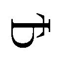
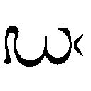
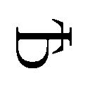
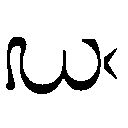

| Strange Strange (HJ文庫) | |
| 浅井ラボ | |
| (2010) | |

「その昔、といっても写真週刊誌が全盛期だった十数年前の話ね」
座っている川 崎 美 智 子 が話を始めた。
「もうとにかく写真週刊誌が争ってショッキングな写真を求めた時代だった。カメラマンも芸能人やら事故やらを必死で探していた。Ａもそんなカメラマンの一人だった」
理知的な顔立ちの美智子の声が続く。
野 村 香 は欠伸 をしながら、マニキュアが施 された指先で髪 を弄 る。眼鏡越 しの目で、爪 のエナメルを陽光に照らして確認する。大 河 内 早 紀 は携 帯 の画面を眺 めていた。長く柔 らかな髪が画面にかかりそうになる。
台 泰 大 学 の女三人組は、校舎の端 、外部にある階段に段々となって座っていた。
校舎が高台に作られており、階段からも運動場が見下ろせる。深緑のコートの上で、テニスサークルが球を打ちあっていた。谺 のような掛 け声 が、階段の三人の耳にまで届いてくる。
「Ａは、当時大人気だった歌手Ｔが愛人を囲っていたとの情報を掴 み、北 陸 のＩ県に飛んだ。だけど、それは愛人と名乗る女の売名行 為 だった。Ｔの元スタッフからの信 憑 性 が高そうな情報だったが、元スタッフも中 堅 カメラマンのＡも騙 されて肩 すかしを食らった」美智子が不似合いに晴れた空を見ながら続ける。
「落 胆 したＡは、なんの進展もないまま、夜の日 本 海 の海岸の道で車を走らせていた。一人の歩行者とすれちがうだけの寂 しい海岸線を、東 京 へと向かっていた」
美智子の話を、早紀も香も聞いていない。香のサンダルからのぞく足の指にはペディキュアが光っている。早紀は携帯でメールを打ちつづける。
「無 駄 足 の差 し替 え分の写真をどうするかと考えていたＡは気づいた。この深夜に、海岸の国道を歩く人間がいるのは変だ。海岸線の先には、自殺の名所の岬 があるだけだ。Ａは閃 いた。さっきの歩行者は自殺者だ。だとしたら、自殺の瞬 間 を撮 影 できるかもしれない。車をＵターン、停車させたＡはカメラ一式を取り出して岬の向かい側を目指した」
聴 衆 が興味なかろうと、美智子の話は淡 々 と続いていく。
「到 着 すると、対岸の岬の上には、人 影 があった。『まだ落ちてくれるなよ』と言いながら、Ａはカメラを準備する。決定的瞬間を逃 さないように三 脚 で固定した。レンズでさっきの歩行者の顔を捉 える。と思った瞬間に人影は落下していく。モータードライブでとにかく撮 った。Ａは近くの写真店へと車を走らせた。そして暗室を借りて現像した。たしかに落下していく自殺者の写真が撮られていた」
美智子が告げる。
「だが、連続写真の出来を確認していくと、二枚目、三枚目と落下していく自殺者は回転していった。最後には、自殺者の顔は真っ直ぐにカメラの方を向いていた。笑顔だった」
美智子の声が低くなる。
「そして逆さの指先はこちらを指していた」
階段の最上段に座っていた美智子が語りおえた。下の段で壁 に背を預けていた香が欠伸をした。
「あまり怖 くないね」
美智子の怪 談 を香が批評し、眼鏡を手にとって二度目の欠伸をした。欠伸が階段を上って、風に流されていった。二人の間の段に座っていた早紀も、ヒマそうに携帯電話を見ているだけだった。
「夏になると、怖い話をしているけど、今日の美智子の話はいまいちだね」
「この手の話ってリアリティーがないよ。そんな恐 怖 写真があれば公表すればいいし、しないなら、美智子が知る理由がない」
香は眼鏡を顔に戻 す。美智子が豊かな胸を張って、不 愉 快 さを示す。
「サメること言うなよ。子供じゃねーんだから」
「そそ、香も文句はなし。どーせヒマつぶしなんだから。私は小 林 クンが来るまでのヒマつぶしでつきあっているだけだし」
携帯画面を眺めたままで早紀がとりなす。
「早紀さ、あんたは小林クンをどれだけ好きなんだよ」
美智子が呆 れたような声を出す。早紀がスカートを払 って立ち上がる。
「愛しているよ。あなたたちとは違 って、ずっといっしょにいたいくらい愛しているの」
早紀の目には、優しい色が浮 かんでいた。他人ののろけ話に、香と美智子は口に手を当ててゲロを吐 く真似 をする。
「あんまり小林クンに愛されているとは思えないけどな」
「うるさい」早紀が反論。「そういえば稲 田 は？」
「稲田のクソ女がサボリだからな。ま、恒 例 行事だけどつまんねーな」
「階段で怪談っていうのも、なんか冴 えないな」
「そこに気づくな」
美智子が笑う。三人にとって、最初はダジャレで始まった時間つぶしの習慣にすぎなかった。
「冴えない学生生活こそ、正しい女子大生の青春なのさ」
階段で美智子が結論づける。早紀は携帯の画面から顔を上げる。
「小林クンは四十分後くらいに来るってさ。美智子もそれくらいでバイトだし、それで解散する？」
「早紀だけ冴えない青春じゃないのがムカつく～」
「香はその性格をどうにかして彼氏と和解しろ。文句つけ女なんて男にゃ嫌 われる」
美智子が胸ポケットからマルメンの箱を取り出す。タバコを指でつまみ、百円ライターで火をつける。
「タバコを吸う美智子みたいな女も好かれねーよ」
吐きすてた香が空を見上げる。眼鏡越しに見えるのは、抜 けるような青空。
のどかな風景で怪談話をしている自分たちに気づき、香の唇 に自 嘲 の笑みが浮かぶ。
「んじゃ、今回はこれで終わりかな。明日、課題作成後にヒマならもう一回か」
美智子の宣言。香は食い下がる。
「つーかマジでこれで終わり？ 昨日の早紀の高校生二人の話のほうが怖かったよ？ あの高校生たちの結末の意味が分からないし」
香の小 馬 鹿 にしたような目があった。先ほどの仕返しをしたいようだ。仕方なく、美智子が他の話を探すように黙 りこむ。話好きの早紀が割りこむ。
「じゃ私は南 高 山 の実験で行われている六 星 技 研 の疑 惑 の実験話でもしますかね。あそこ、すんごい実験をしていて......」
「早紀、それは去年に聞いた。ガセすぎて途 中 で飽 きたし」
香が突 っこみ、早紀が口を曲げる。視線が美智子へ向けられる。
「美智子の占 いは？」
「そういや最近しねーな」
香も美智子を見る。当人は唇を軽く曲げる。
「ああ、自分でも当たるほうだと思うけど、偶 然 だしね。中 田 教授なら大笑いするよ」
「あれ予知能力だと思うけどな」
早紀が笑う。
「美智子、ちょっとやってみてよ。じゃあ小林クンと私の未来を占って」
早紀の声に、美智子がポケットに手を入れて、出す。トランプを両手で気だるげにシャッフルし、止める。途中に美智子の指が挟 まる。
三人の目がトランプに集中する。指が押 さえた箇 所 を開く。二枚のカードが提示される。
「ハートのクイーンとキング、これってどう解 釈 するの？」
「過去の事例からすると、これはめでたいんじゃねーの？」
美智子が苦笑する。
「解釈するなら永遠の愛とかだろう。驚 きのハッピー結果じゃねえか。だから大 丈 夫 」
早紀は安 堵 の息を吐く。香だけが二人の様子に呆れていた。
「ねーよ。未来の予測なんかできるわけがない。ついでに永遠の愛ってなんだよ。人が死ぬ以上永遠なんてありえるかボケ」香の声には揶 揄 の色があった。「これまで三回当たっているけど、今回だけは当たらない」
「香は夢がないねー。あ、怖い話からずれちゃった」
占いに気をよくした早紀が笑う。美智子が息を吐く。
「怪談に戻すか」考えこむ。「えーと、謎 の箱の話はしたか？ 誘 拐 された人が」
「あれだろ？ あんたが大 野 にした話でしょ？」
「大野のやつは、すぐに香に喋 るわね」
美智子の白い顔に不愉快な色が滲 む。身近な場所で起こった、という限定ルールで怪 談 話 をするのはいいが、稲田も含 めて四人は話をしすぎた。全員がもうお互いの間で知らない怪談がなくなっていた。階段で三人はそれぞれに黙りこむ。
「話といってもね」
タバコの煙 を吐きつつ、美智子は思案していた。なにかを言おうとして首を振 る。
「いや、あれはシャレにならんか」
「なんだよ。なんの前フリだ？ 下手すぎんじゃね？」
「本当に怖い話はある。厳密にいえば怪談じゃないけどね」
美智子が言葉を切る。香と早紀が言葉を待つ。数秒の間に耐 えきれず、香が両手でキャミソールから出た両 肩 を抱 く。
「そーゆー怖がらせの演出って寒いよ？」
「場所の話なのよ」
美智子の目に、真 剣 な色が宿っていた。
「あなたたちは『袋 女 』って話を知っている？」
八月二十八日。三人は美智子が運転する車で移動していた。七年落ちの車のため、乗り心地は最悪。
「知っている？ 台 泰 市 って、縄 文 時代や平 安 、江 戸 時代の遺体が見つかると、首がないことがあるんだって」
香が笑うと、早紀も笑う。
「なんかの儀 式 ？ でも時代が違うのに、なんで同じ儀式をしているんだろう？」
「さー、なんかの邪 悪 な秘密教団とか？」
「でもなんか怖い感じ。これでまた怪談が出てくるんじゃない」
「そういえば、たまに死んだ小動物の首も出るよね。あ、そういや逆に手足がないのや、胸を開かれた犬や猫 の死体が見つかったこともあったね」
「代々続く、由 緒 正しい変質者の家系があんじゃね」
「そうそう、台泰市とか八 鎌 市 とかに出る人食いの話って知っている？」
バックシートで二人が笑っている。運転席の美智子だけが笑いに参加しない。
駅前のジャスコを眺めつつ、国道に出る。また曲がり、郊 外 の住宅地に踏 みこんでいく。車は灰色の公団マンションの壁の群れを過ぎ、閑 散 とした地区に入る。
青い屋根に白い壁。街並みは、どれも同じ顔をした建て売り住宅が並ぶ通りになっていた。業者が需 要 を読み間 違 えたのか、売り家が多かった。薄 っぺらい通りを抜 けると、再開発の手がまわっていない木造住宅の通りが続く。タバコを咥 えた美智子が運転する車は路地を徐 行 で進む。香が呆れたようにバックシートで息を吐く。
「郊外に出るだけで、どうしたらこれだけ時間がかかるんだ？」
「ここからは道が複雑なうえに、私が方向音 痴 なんだよ」
「つーか稲田の家に近いよ。ついでにあのクソ女を起こしていく？」
早紀が気のない声を、運転席の美智子の背になげかける。
「どーせあいつは寝 ているわよ」運転する美智子が冷たく返し、ハンドルを右に切る。「ここの角を曲がれば、ほらついた」
美智子の言葉とともに、車が砂利道を徐行していく。道路の端に停まった。サイドブレーキをかけて美智子が降りていき、香も続く。
「これは......、雰 囲 気 あるわね」
車を最後に降りながら、早紀が感想を漏 らした。
コンクリのブロックを積みあげた壁には、緑の苔 が生えていた。壁を越 えて、敷 地 内 の木々の枯 れた枝が道路の上にはみ出している。誰 も文句を言わないのは、周囲の文化住宅にも人の気配がないからだろう。
枯れ木の向こうに、古いうえに貧 乏 臭 い灰色の壁が見えた。ヒビ割れた壁に蔦 が這 う建物だった。
美智子に先導されて一行は出入り口に回る。壁の間に門柱が立ち、木を張りあわせた扉 が迎 えた。
「......これはその。昭 和 のおもむきがあるわ、ね」
黒々とした扉の表面に、古びた板が交差して打ちつけられていた。訪問者を拒 絶 する、巨 大 な斜 めの十 字 架 のようだった。
「雰囲気ありすぎ。美智子、よくこんなベタなスポットを見つけられたな」
「私も稲田に高校生のときに教えてもらっただけ。入るよ」
門柱のブロックとブロックの間に、美智子が革 靴 を差し入れる。そこを足 掛 かりに扉の上を手で掴み、門柱に登る。
門柱の上から振りかえったのは、揶揄するような美智子の目。
「入るって。ビビってないって」と香と早紀が続いて侵 入 していく。
三人の足が敷 地 の土に着地していく。荒 れ果 てた狭 い敷地に入ってすぐに、五階建ての低層マンションがそびえていた。
「ここは元々明 治 に建てられた家だったんだけど、昭和に何度か建て替えられてマンションだかアパートだかになったそうよ。敷地に比べて建物が小さいのはそういうこと」
美智子が足を進める。
「香とは違って、早紀も稲田と同じくここが地元だから、覚えていない？」
「なにを？」
「小学生のころ、惨 殺 事件があったとかで、授業を切りあげて集団下校したことがあったでしょう？」
美智子の隣 を歩きながら、早紀は記 憶 をたどる。
「ああ、あったあった」記憶の水脈が溢 れてくる。「なんでも女が自分の子供二人を殺して、マンションの隣の部屋の子供、さらにまたその隣の子供も殺して自殺したとかいう事件だったって......」
早紀の顔が強 張 り、足が止まる。つられて香の歩みも止まった。
「......あの事件の現場が、ここなの？」
無理して半笑いを浮かべる早紀の問いに、美智子がうなずく。
「稲田はこの近所に住んでいて、知っていたそうよ」
美智子が続ける。
「女は二十八才の主婦。特に問題もなにもなかった。ちょっと神 経 症 ぎみで病院に通っていたらしく、名前は伏 せられていたはずよ。それが、ある夏の暑い日に包丁とハサミを振りかざし、自分の二人の子供、そして隣 人 である子供たち四人を殺し、首を切り落とした」
喋りながら美智子が先頭を歩いていく。
三人が連れ立ってマンションの左右についているコンクリ階段を上っていく。折れ曲がった階段を踏みしめていく。階段には、ビールの空 き缶 やタバコの吸いがら、花火のカスが散らばっていた。美智子たちと同じように物見遊山の訪問者がいたようだ。使用済みのコンドームや浣 腸 まであり、もはや軽いスラムにも見えた。
「六人もの惨殺事件を起こした主婦は、自分の家に帰った。そこで、自らの首を切って自殺した」階段の手 摺 りを掴んで美智子が上っていく。「ここまでは早紀も知っているはず」
「ええ」
早紀が押し殺した声で同意する。香は黙って階段を上る。美智子が先を続ける。
「問題はここから先。新聞やテレビの発表と違って、あの女が自殺したかどうかは分からないってのが本当らしい」
三階の踊 り場 で、美智子が立ち止まる。早紀と、続いて香も足を止める。
「どういうこと？」
早紀の問いかけに対し、美智子が右手を掲 げる。掌 は自らの首に当てられる。
「殺された子供たちの母親が、稲田の母親の職場での同 僚 だったらしくてさ。で、子供を殺された母親が帰宅して現場を見て、助けを呼びに犯人だと知らずに女の家に行った。だけど、犯人の女の首もなかったのよ」
三人の女が、階段で立ちつくしていた。美智子が引きつった笑みを浮かべる。
「部屋のなかで倒 れていたのは、女の胴 体 だけ。首から流れた血がリビングを真っ赤に染めていたそうだ」
「......後半は想像でしょ？」
「まあね。だけどそれが事実らしい。だから女が死んだあとも、女を殺した殺人犯がいると私たちも集団下校した。その事実をはっきり覚えている」
一人市外から来た香が早紀を見る。早紀がうなずき、美智子の記憶を肯 定 した。美智子がふたたび階段を踏みしめ、二人の女子大生が続く。
「だけど、原因も動機も分からないままに事件は終わった。女と子供、合計七人の首はいまだに見つかっていない」
三人は四階に到 達 し、廊 下 に出る。
「女と被 害 者 たちが住んでいたマンションの部屋がこの階ってわけ」
廊下の蛍 光 灯 は機能しておらず、並ぶ鉄 扉 を夕陽が染めあげていた。
殺人事件の現場と聞いて、さすがに香も薄ら寒いものを感じていたかのように首を竦 める。また美智子がタバコを取りだして、苛 々 と火をつける。
「噂 によれば、七人の首を警察は結局一個も見つけられなかった。それで、真犯人によってこのマンションの敷地のどこかに隠 されているらしいというのが、稲田や近所の人間から聞いた話だよ」
三人の六つの目が周囲を見 渡 した。
欄 干 の向こうには、枯れ木が並び、雑草が伸 びて荒れ果てた敷地。廊下に目を戻すと、寒々と並ぶのは、ペンキが剥 げ、錆びを浮かせた鉄扉。百人近い人間が住んでいたはずの部屋。
どこかに、狂気にとらわれた女と、恐怖に歪 む子供たちの首が隠されているのかもしれない。
香と早紀は黙りこむ。怖がらせる側のはずである美智子も、頬 を硬 直 させている。自分の緊 張 を誤 魔 化 すように、唇がタバコの煙を吐いた。煙はマンションから夕方の大気へと流れて、すぐに消えた。
仲間うちで低く見られたくないという強がりだけが、三人の足を進ませた。通路のコンクリ床 に靴 音 が反 響 する。
確認するように並ぶ扉の前に立つたびにノブに手をかけるが、鍵 が掛かっている。しかし、三件目でノブが回転した。
「施 錠 くらいしておけよ」
「誰かが鍵を壊 したんでしょう」
先ほどのゴミが全員の脳裏を掠 める。扉を開けると、暗い玄 関 が広がる。薄 闇 の廊下の奥 には、また開けはなたれた扉があった。香 が両手で鼻を押 さえる。
「うへえ。そういうわけね」
便器があった。まだ乾 燥 しきっていない大便が溢れていて、蝿 がたかっている。最近まで浮 浪 者 が住みついていたのだろう。悪 臭 から逃れるように、また廊下に戻って扉を閉める。三人が進む。
廊下の一番奥にある扉の前で、美智子が立ち止まる。続く二人も止まる。横手にある錆 びついた扉は、少しだけ開いていた。扉にも横の壁にも、表札はなかった。緊張しているのか、美智子がタバコを投げすてる。
「ここよ。ここが問題の主婦が住んでいた部屋だ」
扉を開けると、また暗い玄関。三人が土足のままで入っていく。
短い廊下を抜けると、屋内は荒れ果てていた。キッチンは埃 が降りつもり、シンクも乾燥しきっている。靴裏には、板張りの廊下が油っぽい粘 りを伝えてくる。
昭和の廃 墟 のような廊下を進むと、黴 臭 さが鼻をつく。途中にあった開けっぱなしの室内を見る。奥の畳 が腐 り、虚 ろな大穴を空けていた。
家具が持ちだされたらしく、リビングにはなにもなかった。テラスに通じるガラス戸は半分割れていた。差しこむ夕陽が部屋の色合いに赤みを足していた。廃墟だった。
部屋にはただ、フローリングの床があった。床が踏み荒らされた跡 があった。ここもホームレスや若者が侵入したらしい。
「で、美智子。なにが怖いわけ？」
リビングと廊下の境界線に立った香の声が投げられる。眼鏡の奥の目には疑問の色。
「不可解な殺人現場に来ました、ってだけで怖がれるような私たちじゃないでしょうに」
美智子がタバコを口から離 す。
「私は一回ここに来たことがある。入って左の壁を見て」
美智子のタバコが指し示す。香が室内に足を踏み入れる。
「はいはいっと」
すぐに左を向く。半笑いの顔が凍 りつく。
「な、んだこの絵......」
香の声は嗄 れていた。続いて入った早紀も絶句した。
夕陽色に染まった壁の一面に描 かれていたのは、等身大の人間の絵だった。
真紅のワンピースを着た女が、首のない赤 ん坊 を抱 えている絵だった。絵は、赤と黒、二色のクレヨンで、幼児が描いたような下手くそな筆 致 で描かれていた。
絵の女の足元には人や猿 や魚の顔が並んでいる。しかし、それらの胴体は犬や豚 や蛇 という具合だった。シュールきどりなのだろうが、稚 拙 な筆致が異様さを強調していた。
なにより異様だったのは、絵の中心である赤児を抱える女の姿だった。
長い首に続く女の頭部は、麻 袋 のようなものをかぶっていた。
麻袋の顔に、クレヨンで目と口が描かれているのだが、乱暴に塗 りつぶされただけの瞳 孔 はそれぞれ左右を向き、口は半月のように大きく開いて笑っている。
なぐり書きされたような絵は、どこか異国の宗教画のような迫 力 を放っていた。
香、早紀、案内してきた美智子ですら黙りこんでいた。三人の六つの目は、絵を注視して離れない。目を逸 らすことができなかった。美智子の唇が震 える。
「......なんか怖いでしょう？」
「これは来るね」
皮肉屋の香の声に怯 えの成分が含まれていた。
「この絵には、愉 快 な都市伝説がついてくるの」
美智子が神経質な笑みを浮かべる。
「その絵に向かって『遊ぼう』って呼びかけてみな。そうすればその『袋女』がやってくるらしいから」
「よくある都市伝説だね」と香が強がる。
「ではやってみなさいな」
美智子に続いて早紀もうながす。香も後に引けなくなった。「やるわよ」と言いつつ、絵の前に立つ。
「遊ぼう」
呼びかけた香が不 機 嫌 な顔をする。待っていても、べつになにかが起こるわけでもない。リビングには、傾 いていく夕陽が差しこんでいただけ。
「これでいい？ じゃあ帰りましょう」
欠伸 をした香が玄関の扉へ向かおうとすると、誰もついてこない。
リビングの中央で、美智子と早紀が立ちつくしていた。二人は顔を見合わせていた。そろって曇 った表情をしていた。口を開きかけて閉じた。
「なにしてんの？ 帰るよ？」
香の呼びかけに美智子がうなずく。美智子が動き、早紀も玄関に向かう。二人は、香を置き去りにするような早足だった。二人が一言二言会話をしている間へ香が来ると、双 方 が口を閉ざす。
来たとおりに廊下を抜けて、侵入時より傾いて赤みを増した夕陽が三人を迎える。階段を下り、敷地を出た。来た道を逆 戻 りして車が街を進んでいく。
夕陽の赤に染まっていた世界は、急速に夜の群青色へと変わっていった。車窓の外に広がる台泰市の街並みは、暗かった。

後部座席の香は「なかなか怖 かった。まーまー良かった」などと一人で感想を漏らしていたが、やがて車内の雰囲気に気づく。美智子と早紀は乗ってこない。
ウインカーの音だけを妙 にはっきり響 かせ、車が右折していく。
「なに？ ノリ悪いんだけど？」
香の不 愉 快 そうな声にも反応がない。黙る美智子が運転する車は、国道に戻 り、また台泰市中央部に戻り、一番近い香のアパートに向かっていく。いつまでも続く沈 黙 に、香の目に不機嫌さが宿っていく。
「なに？ なにか私に言いたいわけ？ そりゃ、最初のうちは怪 談 をバカにして悪かったけど、さっきのはまーまー良かったって言ったじゃん？」
香の声に、運転する美智子が神経質にタバコに火をつける。助手席の早紀の目が、美智子の横顔を見つめる。前の座席の二人の様子を、香はバックミラーで見ていた。
タバコの煙を吐 く美智子。喫 いきらないタバコを乱暴に灰皿に擦 りつける。
「香、あなたに言うべきか迷ったんだけど。幻 聴 かと思って早紀にも聞いたんだけど、どうも聞こえたような気がすると言うのよ。だから......」
美智子の言葉に、早紀の目が伏せられる。
「その、聞こえたの。香が『遊ぼう』って呼びかけたあと......」
粘つく舌を動かして、美智子が続ける。
「壁 のなかから、『あそびにいくよ』って声が......」
ミラーに映る美智子の真剣な顔。
一拍 おいて、香が爆 笑 した。
「あはははははっははははははっ」
笑声が車内に響く。後部座席で体を折って香が笑っている。
「あ、アホかあんたたち、二人で組んで私を怖がらそうとしてもムダだっての！」
目 尻 に涙 まで滲ませた香は、車が自分のアパートについても笑っていた。車から降りて階段を上っていく香は、まだ笑いの発作に襲 われていた。
美智子が目を路上に戻す。すでに夜となった路地に立つ街灯が、アスファルトを絞 って照らす。光の向こうの闇 には、四つ足の子犬が立っていた。
頭が大きな子犬の影 だった。美智子が目を凝 らそうとすると、子犬は逃 げていった。
マンションの部屋に、家主の早紀と美智子の二人が座っていた。ローテーブルを挟 んで、ソファに座っている。
彼 氏 持ちらしく、片づいた部屋だった。二人とも黙 っている。テレビのバラエティ番組を見ているふりをしていた。バラエティがニュースに切 り替 わる。美智子の手は、机の上で動いている。手が捲 るのは、トランプだった。捲っては閉じ、捲っては閉じられる。
ニュースの声を背景に、早紀が息を吐く。ようやく口を開いた。
「あの声は本気で怖かった。香は大 丈 夫 かな？」
「ああ、あれは大丈夫だよ」
美智子の目はテレビではなく、自分の手を見ていた。
「現実的に超 常 現象はありえないって、それはそうだけど」早紀の声が小さくなる。「私も本当にあの声を聞いたし」
早紀の目が美智子の手を見る。
「今回のこと、占 いではどうなの？」声には縋 り付 くようなものがあった。「美智子のそれ、すっごい当たるけど、今回はどうなの？」
「え？ ああ」
美智子の手がカードを捲っていく。早紀の目は繰 り返 し捲られるカードを見ていた。
「美智子のそれっていつも当たるけど、法則が分からない」
「私にも分からんよ。たまたまだからね。だいたい八割当たるだけで」
「それって悪いってこと？」
「私自身は信じていないよ？」
「私もカードに未来が出るなんて信じていないけど」早紀が口ごもる。「でも、三回も当たったら、関連性があると思っちゃうよ」
早紀が続ける。
「旅行前にスペードの４と３が出たら、旅行先で交通事故が起こった。あとでニュースを見たら、四 谷 さん一家の両親と子供が大けがをしていた。恋 占 いをしてもらって、ハートの７とジャックが出たときは、今の恋 人 の小林君とセブンイレブンで出会ったし。競馬で賭 けるときに、ダイヤのクイーンと３が出て、クイーンステークスの３に賭けたら大当たりだったし」
「偶 然 だよ。結果から強引に原因を探したら、そう思えるだけだ」
「だけど、私にはなんらかの意味があると思える」早紀の目は真剣だった。「今回もお願い」
美智子がカードを捲る右手を止める。捲っていたカードを、美智子と早紀が凝 視 する。上に載るカードの下を、二人の目が覗 き込む。捲っていたカードの影を見ると、スペードの５だった。
「法則から言えば、おそらく５に関する不 吉 が起こることになるけど、あとで辻 褄 合わせは止めてよ？」
「不吉な、ことが......」
早紀のセリフを無機質な電子音が遮 る。美智子は、テーブルの下に転がっていた上着のポケットを探る。
「彼氏から？」
「早紀と違 って、こちらは男日照りだよ」
言いすてた美智子が、携 帯 の画面を眺 める。液 晶 画面に映るのは、野村香の番号だった。気軽に携帯を耳に当てる。
「はいはい、どしたね香ちゃん」
「助けてっ！」
切 迫 した女の叫 びが飛びこんできた。音量の設定を間違えたかと思って携帯から耳を離すが、設定は通常。香の声が大きいのだ。美智子が耳を戻すと、香は叫びつづけていた。
「......けて！ 『袋 女 』が現れた！ アパートの玄関のところに立っている！」
「なに？ なんなの？」
漏れ聞こえる声、そして美智子の厭 わしげな表情から察したのだろう、早紀は不安げな顔をしていた。右耳からの訴 えに耳を傾けながら、美智子が小声で説明する。
「香から。あのバカ、袋女が来たと言ってやがるのよ。逆手にとって私たちを怖がらせにきやがった」
「香らしいわね」
控 えめに早紀が失笑し、美智子は電話に戻る。
「引っかからないよ。じゃ、さようなら」
美智子は電話を切った。
「でさ、明日のコンパのことなんだけど、あんたは飲み専門だろうけど私は直行して前入りし......」
再びの電子音。不愉快な顔の美智子が見ると、再び香からだった。謝罪かと思って通話ボタンを押 す。
「......っんとなんだ、助けて！ お願いだから来て！」
「だったら警察とか呼びなさいよ」
美智子は退 屈 そうに答える。
「むしろ病院でしょ？」
怒ったように早紀が横から口を挟んで、美智子は携帯を切る。数秒後にまた着信音。美智子は電源を切った。
「アホか」
美智子が苦笑する。
「この時期になっても、死ね死ねと蝉 の悲鳴はうるさいな」
「どんな耳をしてるのよ」
美智子の言葉に早紀が小さく笑う。いつもの階段で、二人が座っていた。大学の敷地にある木々から叫ぶ蝉の声が、階段にまで届く。
運動部やサークルの練習を見下ろしながら、美智子は携帯をかけつづけている。舌打ちとともに、諦 めたように携帯から耳を離す。
「連休明けて一週間たっても香は出席しない。携帯も自宅電話もつながらない」
美智子の手が携帯を畳 む。
「香の彼氏の大野の電話番号は知らないが、二人でどこかへ行く予定も聞いていないしな」
下の段から見上げていた早紀は考えこむ。
「香はなにしているのかなぁ？」
階段に腰 を下ろしたまま、美智子は答えない。早紀が口を開く。
「私たちへの嫌 がらせにしては、ちょっと手が込みすぎていない？ なんかの事故か病気とか？」
「可能性は半々だな。香は、ああ見えて執 念 深 い。だからそーゆークソつまんねー恨 みも覚えているのよ。人間としてちょっと小さいタイプだったね」
「美智子、言いすぎよ」
早紀の指 摘 に、美智子が苦笑する。
「そうだな。香はちょっと人付きあいが下手なだけとでもしておこう」
「美智子もそういうところがあるよ？」
珍 しい早紀の皮肉に、美智子はアメリカンジェスチャーのように肩 を竦める。
「それにしても、一週間はやりすぎだ。もしかして本当に事故か病気か？」
美智子が考えこむ、フリをしてタバコに火をつける。階段の下にいる早紀は、真 剣 に考えて顎 の下に手を当てていた。
早紀が顔を上げる。大きな瞳 は、美智子を見つめていた。
「考えたのだけど」
「なに？」
「......福 沢 さんに相談したほうがいいかも」
早紀があげた名前に、美智子が咥 えたタバコの先が跳 ね上 がる。
「福沢さん、ねぇ」
跳ね上がったタバコの先が揺 れる。
福沢に関しては、美智子は顔をしかめる。台 泰 大 学 名物である劇団を主 宰 している大学七年生で、一部には人気がある。
一方で、通常の学生は知らないが、一部では、殺人事件に関係している、売春組織を経営しているという噂もある。学生特有の大げさな噂だと思っていたが、実際に福沢の側でおかしくなる人物がいたり、女子高生数人と話したりしているところを目 撃 されている。
早紀は階段に座る美智子の膝 に詰 めよる。上と下で二人の顔が向かいあう。早紀の顔は真剣だった。
「あの人、異常に顔が広いから、霊 能 者 とかにも知りあいがいるかもしれない。そうでなくても、相談してみない？ ほら、実際に市長の不正を演劇で暴いたり、学内の事件を解決していることも多いし」
「アホですか？ 天下の中田教授に教わる理工学部が、霊なんて出さないでくれる？」
早紀の眼差しに逆らうように、美智子がタバコを投げすてる。階段を転がり、下の踊り場に落ちた。
「それこそ香の狙 い。騒 ぎを大きくした私たちを見て、香が大笑い。ついでに福沢さんに借りを作った私たちは、ヤバヤバヤッバー」
美智子は左手で自分の首を絞 めてみせる。早紀のほうは、執念深くても、香がそこまで遠大な計画を立てて復 讐 するとは思えなかった。
「でも、欠席と一発ネタという損得のバランスから考えて、自分が損することを嫌 う香がしそうにもないじゃない」
早紀の言葉にも美智子は答えない。
投げすてられたタバコが踊り場のコンクリの上で灰になっていく。フィルターの手前までが灰になった。
晩夏の風が吹 いて、灰が崩 れた。
夜は黒い幕で街並みを覆 っていた。まだまだ夏の暑気が残り、湿 気 と暑気がブレンドされ、美智子の肌 に絡みつく。不快指数は満点。
美智子の左手はコンビニの袋を下げている。半 透 明 のビニールを通して、アイスとタバコとジュースのペットボトルが見える。
自宅からコンビニまで十分もかかる立地はともかく、熱せられた地面から上がってくる熱気がたまらない。見える夜の風景も、ビルや木造住宅の裏、狭 い路地と暑さを倍増させるものばかり。蝉が早めに消えてくれたことだけが救いだ。
「夜は暗いし、もちっとマシな家に引 っ越 すか」
独り言を放ちつつ美智子は、自室があるアパートの敷 地 に足を踏 み入 れた。最近は大学に近い早紀のマンションに泊 まることが多く、自宅に帰るのは久しぶりだ。
建物の外にある階段に足を乗せる。
美智子の耳に違 和 感 。
「ぁ......ぅ......」
死にかけた蝉のような声が聞こえた。無視していると、声は背後から聞こえてくる。
美智子は髪 を乱して振 りかえる。視線の先には、アパートの敷地の入り口があった。電灯の光から外れた門柱の陰 に、人 影 が立っていた。
「香？」
裸足 の人影の足元には、汗 なのか失禁なのか液体が水たまりを作っていた。
違った。真っ赤なノースリーブのワンピースを着た女だった。コーヒー豆でも入れるような麻袋を頭にかぶった女が、立っていた。
だが、香にしては体の線が細い。ワンピースから覗く素足の爪 には、香がするようなペディキュアが施 されていない。割れて汚 れた爪があった。
美智子の脳裏に結論が出た。
「そうか、彼氏の大野に頼 んだか。だけどフツーここまでするか？」
女の足は、門柱の横から動こうとはしない。
「おいって！」
美智子が足を踏みだすと、女の姿が門柱から後退する。美智子はさらに歩いてアパートの敷地の外に出る。
入り組んだ路地、熱気を帯びたアスファルトが黒々とした表面を晒 していただけだった。振り返ると、門柱の側には水 溜 まりがあった。土が水を吸っていき、やがて消えた。
美智子の耳には、夜にかすかに響く蝉の悲鳴がまだ聞こえていた。
剥 げかけたモルタルの壁、二階建てのアパートは昭和中期のテイストのままだった。
すずらん荘 前に古くさい車が停車した。降りようとした美智子のポケットから、トランプの紙の箱が落ちる。バカになった蓋 から、トランプが何枚か落ちる。舌打ちしつつ、トランプを無視して美智子は扉 を閉める。
「苛 つかないでよ」
早紀も降りる。
来るまでに美智子がした昨夜の出来事の説明で、早紀の顔は青ざめていた。アパートを見上げる早紀の目は、二階の端 、野村香の部屋を見つめていた。
「まさか本当に『袋女』が出るなんて。香は大 丈 夫 かな？」
「だから、それはありえない」
美智子が火のついていないタバコを咥えた唇 を歪 める。
「実は『袋女』は私の創作だから」
「は？」
「あれは全部香を脅 かすために仕込んだイタズラで、稲 田 にやらせたのよ」
「はあああああああああ？」
驚 いた早紀の脳裏に、外人みたいに肩を竦 める稲田の映像が浮 かんだ。たしかに、飄 々 とした雰 囲 気 のまま、稲田はやるだろう。呆 れたために開かれた口を閉じる。
美智子が悪戯 に成功した子供のように笑う。
「あの日、香が人の怪談を否定するばかりで腹が立ったからさ。稲田に携帯で連 絡 してあのマンションに行ってもらったのよ。んで、稲田にクレヨンで壁に『袋女』を描いてもらった。女による子供殺しは実際の事件だから、早紀に振っても事実だと言うから、真実っぽいと補強もできた」
「あー、私も知らないうちに協力させられていたわけね」
早紀が呆れた声を出す。本人は事実の部分だけを肯 定 したが、その先の嘘 につながるとは分からなかった。
「到 着 までに道に迷ったと異常に時間がかかったのは、稲田が準備する時間を稼 ぐためってわけね」
早紀は納得するしかなかった。
「そ、だから袋女とか遊ぼうとかの都市伝説は全部が全部、私の創作。んなの、現実にいるわけないの。だから香の恐怖の演出ごっこは意味ねーのよ」
「香も香だけど、美智子も美智子のような気がする」
「うっさい」
「でも、嘘としたら私まで声を聞いたのはなんなの？ あれは空耳じゃなかったよ？」
「それも稲田だ。隣 の部屋で待機していて、タイミングを計って声を出しただけ」
美智子が説明した。早紀は二人を少し嫌いになった。
一連の疑問が氷 解 し、二人はアパートの外に面した金属の階段を上っていく。野村香の部屋は、すずらん荘の二階の端、二〇五号室だった。
「おい香ー、アホの野村香ー、昨夜のいたずらはてめーの復讐だと分かってるんだ、出てこーい」
チャイムが壊 れているのを知っているので、ベニヤ板の扉を美智子が叩 く。
「謝ってやるから出てこーい」
ついでに、ノブを回す音で知らせようと握 る。
鈍 色 のノブは、あっさりと回った。
ノブを握ったまま美智子が横を見ると、早紀が息を呑 んでいた。気にしない美智子がドアを引いた。
奥 に見えたのは物音がしない部屋。
「入るよ、香？」と美智子が入っていく。仕方なく早紀も続いていく。
玄 関 に面した板張りのキッチン。香は料理をしないのか、シンクは乾 燥 しきっていた。殺風景なキッチンの先、半分ほど開いたガラス戸があった。開いた側に、奥の部屋の様子が見えた。
ホテルで使われているのと同じものだと、香が自 慢 していたベッド。シーツの上に放りだされた雑誌。ブランドものの服がはみでた衣装棚 。カーペットの上には、香の趣 味 である油絵やアクリル絵の具が散らばっていた。さらにキャップが外れた赤ペンに赤いパステルまである。
美智子の手が、半分で止まっているガラス戸を開けようとしたが、建て付けが悪いらしく開かない。美智子は肩を縮めるようにして部屋に入る。
六畳 の部屋に、野村香はいなかった。
横手にあった机の表面には、真紅の絵の具で書かれた文字。開かれたノートや雑誌の表紙を横断して、机の上に書かれていた。
「ふくろおんながくる」という一言が書かれていた。
二人の女子大生の目が、見開かれる。
「なんっ」
二人の目が部屋を見回していく。
本棚の本の背表紙に「ふくろおんながくる」、クローゼットのカバーに「ふくろおんながくる」、そこにかかったサマーコートに「ふくろおんながくる」、床 のカーペットに「ふくろおんながくる」、散らばるノートと雑誌の上に「ふくろおんながくる」とある。文字はさらに壁へ、床へ、天 井 へと広がる。
アクリルガッシュや油絵の具によるなぐり書きの文字が、無音の悲鳴となって部屋を埋 めつくしていた。
赤いペンやパステルで描かれた文字に、筆で書くのももどかしく、チューブから絞り出した油絵の具やアクリル絵の具で書かれた文字もある。本棚の背表紙には段々となって書かれ、テレビ画面は絵の具がうまく乗らないながらも、その恐 怖 の叫びを留 めていた。
部屋の中央に立つ二人を、野村香の無音の悲鳴が包囲していた。
美智子と早紀には、内臓の壁が蠕 動 し、粘 液 を滴 らせているような異常な部屋に思えた。まるで怪 物 の胃の中だ。二人の周囲で、世界が様相を変えていった。
目眩 がしてきた美智子は、目を逸 らす。ガラス窓は閉じられており、誰 も侵 入 した痕 跡 はなかった。窓際に落ちていたノートの切れ端を見つける。
そこにもあった悲鳴の文字の端には、黒と赤が散っていた。
ごっそりと抜 けた髪の毛だった。根本には頭皮と肉がついていた。乾 ききらない血が、粘液となって白いページと窓 枠 とカーペットに零 れていた。
美智子の唇が短い悲鳴を出す。
ページにあったのは、香の最後の言葉だった。
ただ一言、「いまふくろおんながき」と、途切れていた。
目を上げると、窓にも円形となった血痕があった。まるでガラス窓をなにかが貫 通 し、血だけが通れなかったかのような跡 だった。
「......凝った演出、だよね？」
早紀の嗄 れた声に、美智子は答えられなかった。
香を捜 すことなど忘れて、二人は部屋を逃げだした。車に戻り、運転席に美智子が座ろうとする。乗るときに落とした愛用のトランプの箱が、座席の上に見えた。出ていたトランプを戻そうとすると、一番上のカードが目に入った。助手席の早紀も見る。
スペードの４だった。
「４んでいる、死んでいるってことかよ。ははは、こりゃおもしろい」
口にして美智子は笑った。乾いた笑いだった。早紀は笑えなかった。
窓から見下ろせる路地には、人通りもなかった。
三階の室内で美智子と早紀は黙りこんでいた。ローテーブルの前で背を丸めた美智子は、延々とタバコを喫 っていた。なかばまで喫っては、灰皿に突 っこむ。アルミの灰皿の上では、数十本の吸いがらが半球を作っていた。
窓際に腰 掛 けたままの早紀は、首の後ろを掻 きむしっては、携帯の画面を睨 んでいるだけだった。
美智子は早紀のマンションに来ていた。早紀も一人でいられなかった。
香の悲鳴が殴 り書 きされた部屋を見てからは、早紀も怖 かったのだ。あの後、一 縷 の望みをかけて香の実家や恋人、知りあいに電話をかけたが、どこにも本人の行方を知るものはいなかった。
三階の窓から、温 い夜風が吹きこむ。神経がささくれだつような静かな時間。ただ、夜が明けることを待つだけだった。
「香はなにかのトラブル、男関係のものに巻きこまれたと考えるべきよね。もともとそういうことを起こしやすい性格だし」
窓辺に座った早紀が明るめの声を出して、自分を納得させようとしていた。香の部屋にあった文字の説明にはなっていないが、美智子も反論をしない。
「小林クンとその友だちを呼んであるから、カラオケにでも行って騒ごうよ」
早紀の懇 願 に、美智子の口 許 がかすかに緩 む。
「そうだよな。早紀の言うとおりだ」
早紀のこういう安易な慰 めも、美智子にとっては望ましい。
「あ、来た」
窓際の早紀がつぶやき、外に向かって手を振った。
「おーい、こっちですよ。早く来て遊びましょうよ」
早紀の手が止まる。ブレスレットが、手首からずり落ちた。
「小林クン一人だけ？ それに車もなしに、どうやって来たんだろう？」
美智子のタバコの灰がカーペットに落ちた。
「あれ？ 女の人？」
早紀の言葉で、美智子の脳裏で、自宅の門柱の側にいた女と香の失 踪 とが一気につながった。立ちあがりながら、急いで窓に駆 けよる。
早紀を押 し退 けるように、窓の外、敷地を見下ろす。
マンションの入り口、喘 息 の発作のように明 滅 する門柱の電灯があった。光のすぐ傍 に影 が落ちていた。
影は女の裸 の足元から伸 びていた。
汚れて割れた爪を持つ裸の足。上に続くのは、針金のように細い脛 。さらに真っ赤なワンピース。
垂直に下がった棒のような右手は、人形を掴 んでいる。右にかしげられた頭部は、麻 袋 に覆われていた。麻袋は、首元で荒 縄 によって締められていた。
子供が見れば、あの廃 屋 にあった絵を描くだろうという姿だった。
マンションの敷地へと異形の女は一歩を踏みだした。土を踏みしめる裸足の音が、なぜか三階にまで届いた。
足は、美智子のアパートに来たときには越えてこなかった一線を越えていく。土から、マンションの壁 の前まで進む。硬直した美智子と早紀の眼下にまで女はやってきた。
女は外 壁 に左手をついた。
麻袋が二人を見上げる。幼児がクレヨンで描いたような目が左右を向いていた。半円で描かれた不細工な口が笑ったようにも見えた。
美智子と早紀は窓辺で硬 直 したまま動けない。
左手が振り上げられ、壁の上方に貼 りつく。足が壁に立てられる。女は壁に垂直に這っていた。次に人形を握ったままの右手。
そして手と足の動きが、一気に加速。右手と右足、左手と左足が別の回転をし、蜘蛛 のように登ってくる。ぺたぺたという音を立てながら、手足を振りまわして登ってくる。右手に人形を掴んでいて、この壁が登れるわけがない。
「来た来た来たっ！」
「なになになになによあれっ！」
悲鳴とともに早紀が窓から離 れて部屋に転がる。美智子は急いで動き金属音がする勢いで窓を閉め、即 座 に鍵 をかける。
「ひっ」
衝 撃 でいまだ振 動 するガラスの表面に、吸 盤 のように押しつぶされた手と足の裏が見えた。喉 から出た悲鳴が美智子自身にも信じられない。
硬直する二人の眼前、窓ガラス一枚隔 てた向こうで、イモリのように女が貼りついているのだ。
袋に覆われた顔が、ガラスに押しつけられてきた。
左右に離れた落書きの目が、室内の二人を見つめる。美智子の背中と脇 に、粘 液 質 の汗が滴っていた。動けない。動けない。
「あぁあそぼおおおうぉぉ、あそぼおおううようっ」
女が叫 んだ。金切り声のような悲鳴に、窓ガラスがビリビリと震 える。女はさらに叫ぶ。
「ÄあÄ Æ、おおおむかШ
しからh
Ψ
√
ydiЭ
＆Џ
％ずっと」「ÄあÆ、くるく
るЫ
とho＄＃るくるくЩ
fgil
＃iha ￥おど
る」「ŒおえŒお、aくびyo＝hdをa～ちぎЪ
って」「IJ いじい

zrつなげahてyo
あそぶあそＢＵ～」
￥おど
る」「ŒおえŒお、aくびyo＝hdをa～ちぎЪ
って」「IJ いじい

zrつなげahてyo
あそぶあそＢＵ～」
禍 々 しい声と言葉だった。女は歌っていたのだ。
歌声のなか、美智子は息もできずに凝 視 していた。恐怖そのものから目を離すことができなかったのだ。そして、女が右手に握っている人形に気づいてしまった瞬 間 、背中に怖 気 が走った。
「みぃちこもあそぼおおおおおおおううっ」
窓に押し当てられた黒 縁 の眼鏡と眠 そうな目。肌は白 蝋 となっていたが、この顔を美智子と早紀は知っていた。
赤 ん坊 の人形には、野村香の顔がついていたのだ。
人形の体に大人の香の首は、あきらかに直径が合っていない。首の根元は太い糸で不器用に縫 われ、胴 体 に合わせて絞 られていた。
「あそぼおうう、あそぼおよおおおうっ」
「いっしょになろおおおおうううううっ」
二人の前で叫びつづける女と赤ん坊。美智子は譫 言 を漏 らしながら、首を左右に振る。
「こんなことありえない、こんな非科学的な存在などありえない、ありえないんだ！」
首を振りながらも、目は窓ガラスの向こうの異形から離すことができない。早紀は部屋の隅 に獣 のようにうずくまって、念仏を唱えていた。
「きょうはまだだめええぇここまでしかいけないいぃ」袋 頭 の女の声が響 く。機械で出したような声だった。「でもでもあしたあしたあしたこそあああそぶうぅううう」
下手くそな線で描かれた口許が笑ったように見えた。ガラスに吸着していた掌 と足の裏が、唐 突 に消えた。
重い音。美智子が窓に駆けよる。
恐 る恐る窓を開けて、隙 間 から外を見る。
マンションの向かいにある家の屋根に、女が手足をついた蜘蛛の姿勢で張りついていた。夜にはわずかに声。女はまたあの歌を歌っていた。
さらに女が跳ねて、遠い家の壁に着地。垂直の壁に貼りついている。
そしてまた女が跳ねていって、美智子がいる位置からは見えなくなった。遠くにさらなる着地の音。歌声も遠ざかっていく。何度か跳ねる音が聞こえて、歌も途 絶 えた。
美智子と早紀が視線を戻 す。
ガラスの表面には、半透明の粘液が滴っていた。乾いた唾 液 のような生 臭 い悪 臭 。
「来る」
床に早紀が腰 を落とす。惚 けたような顔で早紀が首を左右に振る。目からは涙 が零れていた。鼻水が口にまで達して、口からは涎 が垂れている。
「来るよ、次は来る。ここに来る。助からない」
「違 うね」美智子の声は震えていた。「私のところに来るんだ」
美智子は大急ぎで携 帯 を取りだした。
震える指で大急ぎで番号を押 し、福沢の電話番号を知る人間を探しはじめた。
美智子はイライラとタバコを吸って、早紀は携帯を握りつつ待っていた。
待ちあわせ場所である駅前の噴 水 前に現れたのは、灰色の背広を着こんだ中年男だった。
顔の広い福沢が、電話で笑いながら紹 介 してくれた霊能力者だった。しかし、美智子にはどうしてもくたびれた眼鏡をかけたサラリーマンにしか見えない。
渡 された名 刺 には「特 殊 事象調査高 塚 探 偵 社 代表・高塚法 照 」とあった。
「本名は高塚太 郎 というんですがね。それだとカッコつかないものでして」
高塚は照れたように笑った。美智子と早紀が顔を見合わせる。うさん臭い以前に頼 りない、と無言で主張する互 いの顔を見つけるだけだった。高塚は美智子の顔を見る。
「おや、あなたも少し変わった人ですね」高塚が続ける。「なんというか......」
「行きながら説明します」と、言われた美智子当人は無視した。
美智子がタバコを投げすて、高塚とともに車に乗る。遅 れて早紀がついていく。
例のマンションに向かって車が走りだす。二人で歩きながら今までの経 緯 を説明すると、高塚が「あー」だの「うーん」だの、一々うなずいていく。
霊など信じていない福 沢 によると「高塚法照は本物の霊 能 力 者 だと保証できる、と知りあいが言っていた」そうだ。伝聞の保証に意味があるのかと美智子は思った。早紀も同じだった。
ただでさえ訳が分からないのに、福沢によると高塚は実力も一流半だそうだ。本当の一流は全国を飛び回って忙 しいし、美智子たち学生では払 えないほど報 酬 が高いそうだ。これも伝聞。
福沢のこういうところが、美智子には信用できなかった。早紀にしても信用していないのだが、他に頼るべきものもない。
車に乗っている間、二人は電話で福沢に話したことを高塚に繰 り返 す。創作の都市伝説から香の家、美智子と早紀の元まで訪ねてきた女のことまで説明する。さらに早紀が美智子のトランプ占 いとの符 合 を話す。美智子自身は不 愉 快 そうだったが、高塚はまた「あー」だの「うーん」だの返事をしていた。だいたい話がおわると、事件の発 端 である廃マンションの前に車が到着していた。
美智子が先導し、扉の横の壁を乗り越えていく。早紀に続いて、高塚は苦労しながらも乗り越えた。枯 れた木々と、赤茶けた土が剥 き出しになった敷地を抜け、ゴミが散乱した階段を上っていく。
一行は、四階の一番端、例の部屋に到着した。
「それでこの絵が、作り話の『袋女』が、実際に現れたということですね？」
絵の表面を撫 でながら、中 腰 となった高塚が尋ねた。美智子と早紀は、それぞれの角度でうなずく。
壁の絵から顔を離し、高塚が背を伸ばす。手に提げた使い込まれた革のブリーフケースを探り、クリアファイルを取りだす。昼下がりの陽光のなか、高塚が中の書類を読みあげていく。
「十二年ほど前の六月二十三日。この部屋で惨 殺 事件がありました。午後一時半、出 淵 京 子 という女が、自らの実子である出淵健 治 くん三才と出淵好 美 ちゃん二才を包丁で刺 し、消防用の斧 と日曜大工のための鋸 で二人の首を切って殺害。生体反応があったことから、生きている二人の首を切断したようです」
高塚の声ががらんとした室内に響く。
「同日午後二時四十五分に右 隣 の大 島 家の長女、病気で学校を欠席していた渚 ちゃん、十二才を玄 関 口 で包丁によって一 突 き。三時十五分にさらにその二軒隣の森 本 家の長女、高校から帰宅していた紀 代 香 さん、十六才を殺害。奥にいた双 子 の隆 くん、敏 夫 くん八才も同様の手口で殺害。基本は包丁で一突きし、動けない間に首を切ったようです」
高塚が感心したような声を出す。
「これは異常な手際の良さですね。まだ生きている人間の首を切り落とすなど、男性でもなかなかできることではありません」
高塚の指先がページを捲 る。美智子と早紀が左右から覗 くと、書類には調査された情報がびっしりと並んでいる。
書類には、出淵京子らしき女の顔写真まで添 付 されていた。肩 までの黒い髪、優しげな目。化 粧 っけのない顔。平 凡 で子供思いの主婦の顔だった。高塚が続ける。
「出淵京子が起こした事件は、なんらかのカルト宗教の儀 式 とも言われていますが、信 仰 の経歴はなし。出淵京子はキリスト教の家に生まれましたが、物心ついてからは教会にも行っていない。病歴でいうと、軽い神 経 症 で心療内科に通っていましたが、子育てのストレス程度のもので、虐 殺 に結びつくとは思えません」
高塚は要点だけを述べていく。
「出淵京子の首も切断されていたという噂 は事実のようです。当時の検視資料はさすがに手に入りませんが、死体の発見者、殺された大島渚の母親の証言がありましてね。稲田さんの母親の職場の同 僚 という線から調べたのですが、その被 害 者 の遺族は遠くに引 っ越 し、さらに警察に口止めされていたため、聞きだすのに苦労しましたよ」
高塚の右に立つ早紀の位置からは、母親が描いたらしい下手な図解が見えた。
現在立っている室内の様子が正確に記 載 され、戯 画 化 された当時の死体の位置が示されていたのが真実っぽさを出していた。
「しつっこい調査だね」
美智子が感心した声を出す。
高塚が、どうやってそんなものを入手できたのかは分からない。だが、霊能力者としてはともかく、探 偵 としてはかなりできる人物ではあるようだ。
「別の犯人がいる、ともされましたが、いまだに真相は分かっていません。謎 の多い事件でしたが、出淵京子本人の通院歴と説明不能な死にかたで、精神崩壊した女が連続殺人をし、その果てに自殺したとして処理されたようですな」
高塚が書類を閉じてクリアファイルに戻し、ブリーフケースにしまった。
美智子が皮肉な笑みを浮かべていた。不安を紛 らわせるような、強張った笑みだった。
「死んだ出淵京子とやらを、私が悪戯で絵にさせたことで、幽 霊 だか怨 霊 だかにして呼びだしてしまったとでも？ このハイテク時代に、そんなバカなことがあるわけがない。だってあの話は私が考えた。絵にいたっては、稲田がホラーマンガを見ながら描いただけだ」
美智子が笑うも、横の早紀は不安そうだった。美智子はさらに続ける。
「私のトランプ占いにしても、後で強引に数字と模様に合わせただけだ。意味なんかねえ。だからあの袋女も意味なんかない」美智子の声に怒りが混じる。「だけど出た。なんなんだよ」
苛つく美智子の声を聞きながら、眼鏡の位置を高塚が直していく。
「少し異論はありますが、トランプ占いに関してはそうでしょう」
高塚の声は落ちついている。
「袋女のほうの真実は分かりません。出淵京子の幽霊なのか、他のなにかなのか、この仕事を長年やっていても断言はできません」
「それでも霊能力者かよ！」
叫んだ美智子の頬 が神経質にひくつく。
「幽霊ってなんだ？ 物質やエネルギーなどの物理的存在でないのなら、こちらには干 渉 できない。だとしたら存在もしない。物理的存在ならば、こちらからも干渉できる。というか単なる生物か現象で、怖がることはない。こちらからは物理的に干渉できないのに、向こうからはできるなんて、ありえないね」
早紀が上ずった言葉を継 ぐ。
「ありもしない死者の魂 だか、心のエネルギーだかが極度に高まったソリトン状態になれば、波動は拡散せずに留まるとか、インチキ科学用語でも並べますか？」
「原理などは私には分かりません。ですが」
二人に見 当 違 いの責めを受けても、慣れているように高塚の態度は変わらない。眼鏡の奥に座す高塚の目が細まる。
「......ですが、実際にあなたがたの前に『袋女』は出現し、友人の野村香さんは行方不明となり、異形の姿に変えられていたとした。犯罪者なら警察へ、集団幻 覚 なら病院へ、と私のような胡 散 臭 い人間を呼ぶ前に行っているでしょう？」
美智子と早紀は黙 ったままだった。部屋はただ荒 涼 としており、昼日中だというのに昏 く翳 っていた。
「理由探しはあとです。今夜、あの女はやってくる。ならば対 抗 するしかない」
高塚は淡 々 と述べた。
自宅の窓際に背を預け、川崎美智子は外の風景を眺 めていた。
夕陽が街並みを染めていく夕方の風景。狭 苦 しい路地、並んだ木造の家。平凡な路地裏の光景。下宿しているアパートが奥まった位置のため、車や人通りの音も遠い。
美智子の喫 煙 量 は、いつも以上の速度だった。腰にはサバイバルナイフが提げられていた。なんの役に立つかは分からないが、武器を握っておきたかったのだ。
アパートの入り口、門柱の側に人 影 。霊能力者の高塚だと気づき、美智子は手を上げる。向こうも手を上げて挨 拶 し、美智子は玄関口に向かう。
美智子が扉 を開けると、高塚はまだ階段を上っているところだった。霊能力者は、左右の手に重そうな金属のキャリングケースを提げていた。
美智子が後ろに下がると、ギョーザのような黒の革 靴 を脱 いで高塚が部屋に入ってくる。高塚の目線は美智子の腰のサバイバルナイフに向けられたが、言 及 はしなかった。
「あそこの窓ですね」
高塚が腰を下ろし、キャリングケースを置く。背広の上着を脱いだ高塚がジュラルミンのケースを開き、中から小型の液 晶 テレビを取りだす。モニター画面をテーブルの上に置くと、他の三つのモニターを取りだして、同じように設置する。高塚の手はコンセントの線を握 っている。察した美智子がタコ足となっているタップを差しだし、霊能力者が丁 寧 に受けとる。
配線しおわった高塚が、次にケースから取り出したのは、妙 に高価そうなカメラだった。
美智子の眼前で、高塚はカメラを窓際に三 脚 でセットし、レンズを覗きこむ。アパートの玄関が見える位置に調整していく。
「なにをしてるんですか？」
「こちらは高感度の暗視カメラで、暗い場所、まったくの闇 夜 でも撮影できます。カメラに映るのなら、少なくとも物質的存在でしょう。ものすごく異常な変質者だという可能性も捨てきれませんから」
「相手は壁を登ってきているんですよ？」
「変質者はすごいクライマーかもしれません。野村香さんの顔の人形も作り物かもしれません」高塚は真面目な顔だった。「幽霊より人間のほうが怖いですからね」
「霊能力者が言うセリフですか？」
「現実的手法による大がかりな詐 欺 、という可能性を手放したくありませんからね」
慎 重 な高塚の物言いに、美智子は反論しなかった。あまりに異常な事態に、物理的なトリックの可能性を考えられなくなっていた。そこは若い自分の限界だと素直に認めるしかなかった。
黙 々 と高塚が窓際にカメラを配置し、配線を延ばしていき、四つの小型モニターにそれぞれ接続していく。続いてキャリングケースから取り出したのは、オーディオ装置のようなものと、小型のスピーカー。低いテーブルの上に高塚が機器を設置していく。
「ついでにアパートを囲む壁の角に、集音マイクを設置しておきました。これで相手が接近するのを捉 えられます」
腰を下ろした高塚が手際よく機器を接続していくのを、美智子は眺めていた。つなぎおわったらしく、高塚が機器の電源を入れる。途 端 にハウリングと雑音が溢 れ、美智子が顔をしかめる。高塚がつまみを捻 ると、雑音は静まっていき、遠い車の排 気 音 や人の足音が聞こえてくる。さらに調節して音量を下げる。
「ストーカー調査をする探偵みたいですね」
「似たようなものですよ」
立ち上がった高塚が右手の指先でネクタイを緩め、左手でポケットを探る。ポケットから出たのは、紙の束。急 々 如 律 令 という文字や図形が書いてある護 符 だった。
「そこだけローテクなんですね」
「ええ、悪 霊 退治機なんてものは、どこの企 業 も作ってはくれませんからね」
答えつつ、高塚は護符を窓の四方に貼る。
「そういうの」美智子が手で護符を示す。「マンガでよく見るし、通 販 でも売っているらしいけど、本当に効くのですか？」
「文字や図形には、ファッション以上の意味はありません。へのへのもへじと同じです」
護符を貼っていく高塚の横顔が微笑 む。
「大事なのは書く人です。力がある人間が書いたものは、私の経験では役に立ちましたよ」
壁、天 井 、窓枠。あらゆる場所に高塚が護符を貼っていく。不安になった美智子が答えに飢 えたかのように問いかける。
「力がある人って？ 偉 い坊さんとか、神社の神主とかですか？」
「いいえ。そのような人たちは宗教関係の仕事をしている人であって、能力者ではありません。だって、能力で就職したわけではないでしょう？」
「では誰です？」
護符を貼りおわって、高塚が振 りかえる。指は自らの鼻先を指していた。
おどけた仕種だが、高塚の確固とした自信が感じられる。
「どこかに逃 げることは、相手が大河内さんの家にまであなたを追 跡 してきたことからムダだと判明しました。だったら、ここで迎 え撃 つしかありません」
最後に高塚が玄 関 を閉めて、護符を厳重に貼りつけた。高塚はケースから棒を取りだす。折りたたみ式の杖 を伸ばし、錫 杖 となる。金属の輪が、鈴のように鳴った。
「これで終わりです」
部屋の中央、機器が並んだテーブルの前に、高塚が腰を下ろす。数珠 やさらなるお札と、過 剰 なまでの装備を周囲に置く。
美智子も高塚の横に並ぶように腰を下ろし、クッションを抱 えこむ。女の顔一面に、不安と焦 燥 が張りついていた。高塚が安心させるように柔 らかく微笑む。
「準備はしました。これで退けられないような異形のものなど、あまりいません」
美智子の顔が明るさを装う。そしてつぶやきが部屋のカーペットに落ちる。
「そうだ、だけどなぜ私のところに？ 私は袋女に呼びかけてなどいないはずなのに！」
「さあ？」
高塚は機械を調節する。
「ただ、ああいうものは理 不 尽 なときも多いですが、だいたいは一定のルールを持っています。なにかルールみたいなものはありませんでしたか？」
美智子の口が小さく開き、頬から血の気が引いていった。記 憶 が急速再生される。最初の場面に、あの部屋での一連の会話に。
「もしかして......」
気づいてはいけないことに気づいてしまったかのように、黒い目が見開かれる。
「最初に香に『遊ぼうって呼びかけてみて』と指示したことが、すでに呼びかけの条件を満たしていたってこと!? 」
自分で言って、美智子は愕 然 としていた。不条理なゲームルールを、後付けで聞かされたような表情だった。
「あれは私が言ったルールだ！ そんな、そんなルールがなぜ本当にっ！」
高塚は肯 定 も否定もせず、四つの画面を睨み、スピーカーに耳を傾 けていた。
夕日は急速に翳っていく。夜が訪れようとしていた。
高塚はスピーカーに耳を澄 ましながら、モニターを監 視 しつづける。高感度カメラの粒 子 の粗 い画像が、門柱を上から捉えつづけている。
テレビラックに置かれたデジタル時計だけが、時を刻む。午前一時半。
「来ました」
眼鏡の奥 、高塚の目が厳しい光を帯びる。膝 を抱えた美智子も耳を澄ますが、スピーカーからは夜の静 寂 しか聞こえない。唇 には火のついていないタバコを咥 えたままだった。
最初は雑音。次に耳に引っかかる音の羅 列 。
美智子が耳を澄ますと、それは咽 び泣 きだった。歌だった。
「............ぁぁ............ぅぅ」
「声が近い、来ました！」
高塚の顔が監視モニターを振りかえる。美智子も見た。
緑の濃 淡 で描 かれた高感度暗視カメラの画像でも、見 間 違 えようがない。門柱の間に立つのは、異様な人影だった。
「あぁ......そ......うぅ」
闇 に沈 んだワンピース姿、手に提げた人形。麻袋で覆 われた頭、描かれた落書きの目と口は、無機質な笑みを浮 かべているように見えた。
袋女がやってきたのだ。
画面越 しの姿を見ただけで美智子の背筋に怖気が走る。思わずサバイバルナイフの柄 を握りしめる。
「とりあえず、カメラにここまで鮮 明 に映るということは、実体か」高塚が続ける。「もしくは霊 体 としてかなり強力です。常識外れといってもいい」
高塚は落ちついた声を出し、窓に向かう。美智子も窓に駆けよる。異形の裸足 の足が伸ばされる瞬間だった。
門柱の間を抜け、敷 地 へと伸ばされた爪 先 が停止する。不 審 を感じたように袋頭が傾 げられ、女はそこから動かない。
「門柱と間の地面にも護符を貼り、入れないようにしたんですよ」窓から見下ろす高塚が不敵な笑みを浮かべる。「カメラに映り、さらに護符で消えないなんて、かなり強力な怨霊ですね。いやこれほどのものは、私も初めて見ました」
さすがの高塚も興奮した様子だった。美智子の手は窓 枠 を握っていた。目は眼下の光景を凝視する。
門柱の間で、袋女は不 機 嫌 そうに右足を戻した。
「やった、帰った！」と美智子が歓 声 をあげた瞬間、袋女の姿が消えた。まるでフィルムのコマを飛ばされたような唐突な消失だった。
「どこに行った!? 」
高塚が室内にとって返し、モニターの両 端 を掴む。眼鏡の奥にある目は、画面の中を必死に捜す。美智子もモニターを必死に捜す。緑の濃淡で描かれた門柱、土の小道、背景の路地とモルタル壁が映っているだけ。
窓ガラスになにかが衝 突 し、窓枠全体が軋 む音。反射的に振りかえる、二人の目。
「あああそそぼおおおおおううう」
ガラスと部屋が震える絶 叫 。窓のガラスの表面には、吸盤のように貼りついた掌。
窓の向こうに袋女がいた。部屋のなかを覗きこむように、麻袋の頭を傾げていた。腰では野村香の顔をした生人形が、けたたましい笑い声をあげている。
「壁を飛 び越 えてきたっ！」
美智子が絶叫。高塚にしても同様の衝撃を受けていた。目には心底からの驚 愕 があった。
「私もこの仕事は長いのですが、まさか、現実にこんなものが存在するとは！」
高塚が拳 を握る。手には数珠が握られていた。
「大 丈 夫 です、部屋は護符が守っ......」
高塚の悲鳴のような叫びは途 中 で途 切 れた。
窓の表面で、吸盤のようになっていたはずの女の掌が、赤みを取りもどしていた。ガラスの表面が小さな波 紋 を描き、指先が覗いていた。
ガラスを抜 けた、と思ったときには手首が室内に侵 入 していた。呆 然 とする二人の前で、腕 、肩、女の胸元までが部屋のなかに侵入してきた。
腰を下ろしたまま、美智子は足だけで後退っていく。天井の蛍 光 灯 が狂 ったように激しく明 滅 する。美智子は首を左右に振る。
「物質透 過 な、んて確率的にあり、えない！」
「わあぁあいきょうはあそべるるるるうううっ！」
赤いワンピースの裾がひらめき、素足が畳 を踏 みしめる。赤ん坊人形につながれた野村香の顔が、狂気に満ちた笑い声をあげる。
六畳間の窓際に、袋女が立っていた。背が高く、低い天井に刺さりそうな細い体だった。液体に濡 れた素足が一歩を踏みだす。びちゃりと畳に濡れた右足を下ろす。
「さああそぼおおおおぉみちこちゃぁああああああん」
歩くたびに、麻袋に包まれた頭がゆらゆらと揺 れる。右手の下で、人形の野村香は狂ったように笑いつづける。歌声が満ちる。蛍光灯が激しく明滅して、異様な世界を一 瞬 ずつ切りとる。これだけの異常事態に、左右の部屋の住人が気づかない。異常すぎる。
美智子はもう理性を保てなかった。
「つつしんでかんじょうたてまつるっ！」
高塚の鋭 い叫びが室内を切 り裂 いた。護符と数珠を握った両手を前に突 きだし、片 膝 をついた姿勢。全身に力が満ちていた。泣き叫ぶ寸前の美智子が止まる。
「みやしろなきこのところにこうりんちんざしたまいてっ！ しんぐのはらいかずかずかずかずっ！」
怨 霊 祓 いの読 経 が、異形たちの笑い声と歌声を打ち消していく。戸 惑 うように、袋女が立ちどまる。
「たいらけくやすらけくきこしめてねがうところを、かんのうのうじゅなさしめたまえ！」
高塚が叫ぶ。霊能力者の後ろ姿に這 いより、美智子も必死に祈 る。自分が唯 一 知っている念仏を唱える。
部屋の中央で袋女の歩みが停止した。滴 る水 滴 が、畳に、散乱した雑誌やノートの上に染みを作っていった。
「去れ、怨霊よ！ 出淵京子よ、自らと殺した子供たちの道連れを求めるな！」
高塚が護符と数珠を掲 げる。
「ちはやふるここもたかまのはらなり、あつまりたまえよものかみがみ、なむほんぞんかいまりしてん！」
高塚の必死の横顔には、汗 が流れていた。恐 怖 と極限の集中で、ワイシャツの脇 や胸元が冷や汗で変色していた。
「高塚さん、高塚さんっ！」
美智子はもう高塚の名を呼ぶことしかできなかった。明滅していた蛍光灯が切れ、部屋に闇が充 満 していく。
「大 、丈 夫 で、す！ 私の命にかけ、てもこの怨霊、はっ！」高塚の背中が震えていた。「祓 ってみせるっ！」
高塚の目と鼻、耳から、鮮 血 がしぶいた。拭うこともせず、高塚は動かない。
美智子はすでに目を開けられなくなっていた。頭を抱え、幼児のように畳の上に丸まっていた。
恐ろしい。不条理すぎて恐ろしいのだ。科学的ではない。物質とエネルギーと物理法則しかない世界ではない。ありえない。自らが信じてきた意味や因果が崩 壊 している今この瞬間が恐ろしかったのだ。
高塚が渾 身 の力で握ったのか、護符が破れる音。
「らいりんえこうきこうしゅごしたまえっ！」
一 喝 は高塚の人生でも、最高最大の力を放っていた。祈りと叫 びが、部屋の淀 んだ空気を切り裂き、吹 き飛 ばす。
静 謐 。
狂 気 の誘 いと笑い声、読経と叫び、あらゆる物音が途 絶 えていた。
耳の裏で血液が流れる音と、早 鐘 のような心音だけが、美 智 子 に聞こえるすべての音だった。
すべては終わったのだ。福沢さんは素晴らしい霊能力者を紹介してくれた。高塚さんはまさに命をかけて戦って、あの悪霊を追いはらってくれた。
美智子は瞼 を開けた。窓の外から差しこむ朧 な月光で、自らの膝 頭 が見えた。顔を上げていくと、高塚の膝裏、尻 、ワイシャツに包まれた背中。前に掲げられた右手には破れた護符と、珠 が零 れた数珠の紐 が垂れている。
そして、真正面からの高塚の顔。
高塚の顔は、後ろからの指に握られていた。指先についた紫 色 の爪 は、ひび割れて粘 液 が滴っていた。爪がある指から腕に肩へと続き、終点には、不思議なものでも見るように小首を傾げた、袋の頭部があった。
袋女は異常な腕 力 で高塚の首を掴み、正面から真後ろに向けさせたのだ。
いつでも沈 着 冷静だった高塚の顔が、恐怖と痛みに歪 んでいた。眼鏡も目からずれている。涙と鼻血を流し、唇から血の混じった涎 と泡 を吹いていた。
糞 尿 が漏れたらしく、高塚の尻のあたりが膨 らみ、背広の下と畳が濡れていく。強 烈 なアンモニア臭 とスカトール臭が美智子の鼻をつく。
「こいつぶつぶつとなにいっていたの」
天井を背景に、袋女が不思議そうに言った。
「た、だずけ、死にたくなひゃっ」
叫ぶ高塚の顔が回転していく。首の僧 帽 筋がぷちぷちと千切れていく音。頸 骨 が砕 ける乾いた音がつづき、一気に捩 られた。
女の手は止まらず、さらに回転。目や鼻や口から黒血を流した高塚の顔が、凍 りつく美智子の前を通りすぎていく。首の肉や骨、気管は完全に千切られ、外の皮 膚 だけが繋 がっていた。さらに半回転させられ、捩られた皮膚も千切れた。
首の断面からは大量の血が吹きだした。天井や床 、美智子の顔や胸を叩 く。熱い湯のような温度にも、美智子は悲鳴をあげられなかった。
高塚の胴 体 が畳の上に倒 れた。畳に血や糞尿の黒い染みが広がっていく。
「やだぁぁおようふくがよごれたぁぁ」
高 塚 の生首を左手に掲げながら、袋女が叫ぶ。極限の苦痛と恐怖で歪む高塚の首は、断面から大量の血を下に零していた。アンモニア臭に、鉄と潮の血臭が混じっていく。
「ああしんじゃだめいそがないと」
袋女が右手の野村香の人形を投げだす。本 棚 にぶつかって落ちた人形の香は、それでも笑っていた。「みちこみちこたすけてたすけて」と笑っていた目は、涙 を流していた。
袋女が腰 の後ろから取りだしたのは、ぬめりとした光 沢 を帯びた物体だった。
美智子は嘔 吐 しそうになる。
袋女が右手に握るのは、首が千切られて桃 色 の断面を見せる、牛 蛙 の死 骸 だった。殺されたばかりなのか、水 掻 きのついた茶色の手足が痙 攣 していた。袋女の手は、高塚の首の断面を蛙の首の断面に合わせる。
左手には、いつの間にか糸の通された針が握られていた。
美智子の見ている前で、袋女は高塚の首を両生類の死骸に縫 いつけていく。どのような忌 まわしい力が働いているのか、一針動くごとに即死したはずの高塚の目玉が上下左右に動き、舌が躍 る。生首には意志が戻っていく。
「や、やめべべ、そんなすがだで生ぎたぐない！ このまま死なせて、ぢなせてっ！」
袋女は喜々とした動きで、肉と肉を縫いあわせていく。高塚の首は拒 否 する。
「イヤだ、わだしが蛙になっでいぐ、蝿 食いたい、イヤだ、人間でいだいひっ？」
理知的で冷静で科学的視点まで持っていて、頼 れる霊 能 力 者 だった高塚が、子供のように泣き叫んでいた。袋 女 の手がやがて止まる。
「できたかんせーい」
袋女の右手が完成品を掲げる。どのような苦痛に苛 まれているのか、正気を失った笑い声をあげる高塚の顔。叫びに合わせて、顔の下に続く蛙の手足が空中を蹴 る。水掻きから粘液が跳 ねた。
袋女が手放し、高塚の蛙が畳を跳ねる。
「げーこげーこげこ、いっばい生まれたおたまじゃくしを、くちでぷちぷちつぶしておいしいな」
高塚の目からは涙が、口からは涎が流れていた。瞳 孔 がぐるぐると回転し、奇 形 生物となった高塚が畳の上を跳ねていく。高塚は別の生物になっていた。
美智子の呪 縛 が解け、喉 からは絶叫が迸 った。
「なんでよ、なんで私が勝手に作った袋女が本当にいるんだよ！ どうして私を狙 うんだよっ！」
尻を落としたまま、美智子が後退る。高塚の機器のコードや、護符の破片を越えて、後ろに逃げていく。逃 走 が止まる。
美智子の背中が壁 についていた。壁のなかに逃げようとするかのように、さらに後退する。手と足が畳を擦 るだけで、どうにもならない。
「あそぼおおおおおおううううっ」
袋女が叫ぶ。異形の背後には、影 の群れが続いていた。
窓から差しこむ街の灯りと月光に照らされ、室内に溢れる群れの姿があらわになる。
テレビの上にいたのは、肉の塊 。犬の首と四本の手足と尾 の代わりに、子供の顔が生えた異形。それぞれの口には様々な人種の色とりどりの眼球を咥え、視神経を口の端 から垂らして笑っていた。
主婦の顔をした鳥が畳の上で跳ねる。
美智子は主婦の顔を知っていた。平凡な顔は、写真で見た出 淵 京子だった。子供殺しの主婦が跳ねるたびに、尻から卵が生み出されていく。卵は殻 が半分しかなく、孵 化 寸前で目が開かないどろどろの小鳥が覗いていた。
蛇 の胴体をした老人が畳を這い、舌を伸 ばして小鳥を巻き取る。羽化寸前の小鳥を呑 みこむ老人の頭には、髷 がついていた。
空中を漂 う半 透 明 のクラゲの体内には、青年の顔があった。自らの体液に溺 れているらしく、唇から気 泡 を吐 く苦 悶 の表情。
猿 とも人ともつかぬ男の顔は、巨 大 な芋 虫 の先についていた。額は後退し、落ちくぼんだ目をした男。奇形生物は、テーブルの上に粘液の跡 を曳 きながら蠕 動 し、前進していく。
顔は、図 鑑 で見たネアンデルタール人かクロマニョン人だと美智子は気づいてしまった。
小さな異形の群れが、美智子の部屋のなか、高塚の首なし胴体の上で舞 い踊 り、正気をなくした笑声をあげる。いつか聞いた意味不明の禍 々 しい歌を歌っている。
畳の上で湯気を立てる桃色の小腸を、百足 や油虫につながれた人面が引っ張りあう。二匹 の人面虫ごと、大口を開けた高 塚 だった蛙 が呑 みこみ、自らの小腸ごと咀 嚼 する。
美智子は理解した。
出淵京子の怨霊？ それは違 う。出淵京子は単なる犠 牲 者 だった。
こいつは、袋女は、髷の侍 や旧人類が登場する以前、太古の昔からここにいたんだ。幽霊とか怪 物 とかそんなんじゃない。その他のなにかだ。
高塚の霊能力？ こいつには意味不明の戯 言 にしか聞こえないだろうさ。
異形の小人たちは、美智子と袋女を囲むように手や脚 、触 手 や舌をからめて輪を作る。
幻 灯 のなかで回る影 絵 のように、小人たちが踊る。触手や触 覚 がしなり、尾びれや背びれが打ち振られ、粘液が飛び散り、奇 怪 な叫びが奏でられていく。
高塚に続いて美智子が新しい仲間、新しい犠牲者となって、太古から続く永遠の苦痛と狂気の輪に入るのを祝福するように、踊って歌っているのだ。
異形の創造者たる袋女が、歩んでくる。足の裏と畳の間で、粘液の糸を引く。
麻 袋 に描かれた目は、口は、なにも変わらない。
目の前では、赤子の人形の体をした野村香が笑い、蛙につなげられた高塚法照の顔が踊っていた。彼 らは、異形の怪物にされ、異常な思考をそそぎこまれる苦痛に、発狂した笑い声をあげつづけるのだ。
これまでの数千年か数万年か数億年がそうだったように、この世の時間が終わるそのときまで。袋女とともに。
美智子は背筋を戦 慄 に貫 かれた。喉の奥に唾 を飲みこむこともできない。
そんな存在で永遠に近い時間を苦痛とともに生きるなど、自分の、そして人間の精神には耐 えられない。誰 にも耐えられない。侍や原始人ですら耐えられず、小人どもは一体として正気ではないのだ。
汗で粘 つく美智子の右手にはゴムの柄の感触。護身用に持っていたサバイバルナイフを思い出せた。使い道は一つしかない。
だが、自分にできるのか？
「あなたなにになりたい？ なにになってあそぶ？」
袋女は近づいてくる。
脈 拍 は速くなる。人形の香と蛙となった高塚が焦 点 の合わない目をして笑っている。あのような姿になどなりたくはない。首が千切れたままの激痛を、彼 女 と彼 は感じているのだ。これから先もずっと。
美智子は掌 のなかにあるナイフを振ろうとして、止まる。まだ決断できない。
「あなたなにになりたい？ なにになってあそぶ？」
袋女はまた一歩近づいてくる。
一 撃 でやらないとダメだ。出血多量や中 途 半 端 な傷ではダメだ。喉や心臓ではダメだ。一撃で絶命させなければならない。チャンスは一回だけだ。
美智子の手のナイフが動いた。
自らの目に向かって。
窓ガラスを透過し、高塚が相手にならないような超 常 の相手に刃 物 が通じるわけがない。だとしたら、自分を殺して人間としての尊厳を守るしかないのだ。
骨に守られていない眼球を貫き、奥の脳まで達して即 死 させる救いの刀身は、止まっていた。
身を屈 めた袋女の左手に握られて。
刃 は、ハリガネのように細い人差し指と親指の間に掴 まれている。美智子が渾身の力をこめても、刃は一ミリも動かない。ありえない指の力だ。
美智子は泣き笑いが混じったような表情となった。目からは涙が流れ、鼻水と涎がだらだらと零れる。本人にも止められない。涎を流す口はひたすら「あーあー」と絶望の叫びをあげている。
袋女の顔が美智子の顔に近づいてくる。
「いのちはだいじにしんじゃだめわたしとあそぶのだからずっとあそぶのだからしんじゃだめ」
袋女が慈 愛 に満ちた声で告げた瞬 間 、美智子の背筋が凍った。袋女はまったく善意で、異形の怪物どもを作っていたと分かったのだ。
こいつには理由もルールもない。ただ「遊ぼう」と呼びかけられたからという理由にもならない理由で現れて、人間や生物を捕 まえては、くっつけて遊んでいるのだ。
袋女本人が遊ぼうと言っているように、彼女なりの善意でしかない。
暗い室内で、袋女の右手が、ゆっくりと伸ばされる。美智子は逆らいもせず、頭を掴まれることを受け入れた。髪 を通して頭皮を掴まれたときも、美智子は従順そのものだった。
女の手がゆっくりと回転していく。美智子は泣きながら、自分の首が回されていくのを感じていた。抵 抗 する首の僧帽筋がぷちぷちと千切れ、続いて頸骨が外れていく。激痛で視界が真っ赤になる。
「いだいいだいやだやだやだやだ」
ようやく美智子は手を振って暴れる。
「やだやだやだやだいだいいだいこんなのずっとだなんてやだ」
暴れる手が袋女の頭に触 れ、掴む。激痛のままに、美智子の手が袋を引っ張ると外れた。荒 縄 と麻袋がカーペットに落ちた。
赤い視界に見えた。外の光を背にした闇に浮かぶのは、袋女の素顔。
「さああそぼおおおおおおおおおおぉおう」
自らの首が千切られる痛み以上に、美智子の心が恐怖に鷲 掴 みされた。
こんなものが、こんな恐 ろしいものがこの世に存在してはいけない。
こんな、こんな、こいつの正体が分かった。こいつは......。
闇。
すでに視界を失った美智子の耳に聞こえるのは、自分の悲鳴だけだった。
自宅マンションで、大 河 内 早 紀 の話が終わった。
テーブルに顎 を乗せて聞いていた小林は「つまんない」と笑った。
「だってさ、野村さんは前からアレっぽいから実家に戻 されたって聞くし」小林は頭の横で人差し指を回す。「川崎さんはいつものサボり病でしょ？ 二人がいない時期だから考えた話だろうけど、ちょっと悪 趣 味 だよ？」
恋 人 の言葉にも、早紀は黙ったままだった。やがて唇を開く。
「冗 談 だと思うなら、それでいい」
早紀の目は時計を眺めつづけていた。
「本当にアレは出てくるのよ。呼びかけで出てくるのよ。『歩こう』と呼びかければ、ね」
「それ『歩こう』じゃなく『遊ぼう』だろう？ 自分で言っていたことをすぐ忘れて、頭は大 丈 夫 ？」
「ああ、そうね。そうだった」
苛 立 つように小林が訂 正 し、早紀はうなだれた。疲 労 しきったような女の横顔だった。無視されたと思ったのか、小林は指 摘 しつづけていく。
「それにさ、後半、川崎さんの家に袋女がやってくるとき、早紀はそこにいないわけだし。どうやってそれを知ったのか、整合性に欠けるよ？」
即 席 の怪 談 評論家となった小林が言った。
「そう聞いたのよ」
早紀の唇から、言葉が漏 れた。怪 訝 そうな顔をし、小林が顎をテーブルから上げる。
「は？」
「美智子本人から直に。そして気づいたのよ。美智子が私の家に来た時、小林クンと間 違 って呼びかけてしまったの。あのとき、すでに私は袋女に『遊ぼう』って呼びかけていたのよ」
早紀の顔は上げられない。長い髪が頬 にかかる。唇が真 摯 な響 きの言葉を紡 ぐ。
「小林クン、私は本当にあなたを愛している。永遠に愛している。小林クンはどう？」
「え？ は？」
小林が突 然 の話題の転 換 に戸惑う。しかし、うつむいた恋人の早紀の顔には、思いつめた真 剣 さがあった。
「もちろん、俺 も早紀を愛している。永遠にだ」
小林が勢いのままに答えると、早紀が顔を上げた。
泣いているような笑っているような、複雑な表情だった。潤 んだ目は真っ直ぐに小林を見つめていた。小林は強い愛情と欲情を感じた。
「じゃあ早紀」
「ありがとう。本当にありがとう」
伸ばした小林の手を避けるように、早紀がスカートを払 って立ち上がった。後退って窓に向かう。小林は、いつもは開けっぱなしにされている窓が閉められ、カーテンが洗 濯 バサミで厳重に閉じられていたことに気づいた。
早紀が後ろに回した手で強引にカーテンを引く。洗濯バサミが弾 け、部屋に夜が侵入してくる。
小林の喉の奥で悲鳴が反 響 した。
恋人の早紀の背後、マンションの窓ガラスに袋を被 った女が貼 りついていた。
「ああああそそぼおおおおおおっっっ！」
女の背後には、赤 ん坊 の人形につなげられた野村香。蛙の胴体の高塚法照、そして数十もの同種の異形の顔が、みっしりとガラス一面に貼りついていた。
あどけない赤ん坊が、眼鏡をかけた中年男が、平安時代の髪 型 と化 粧 の少女が頬を寄せてひしめきあいながら、窓のなかを覗 きこんでくる。彼らはそろって触手や舌を躍らせ、禍々しい笑い声をあげていた。窓ガラスにひしめく異形の群れのなかに、さらに知っていた顔があった。
「さぁきいもこちらにこいいぃよぉぉ」とイソギンチャクの触手の中心にある川崎美智子の顔が叫ぶ。理知的だった面 影 など欠片 もなく、美智子は口の端から涎と泡を流す。粘液がガラス窓に垂れ、汚 い染みとなっていく。
「美智子が教えてくれたの。毎晩毎晩やってきてね」
異形が溢れる窓を背後に、早紀の顔は引きつっていた。片方の頬だけが痙攣している。
「きょうあそぶぶうううっ」
脇や股 の間に顔の群れを従えた袋女が、絶叫した。
動けない小林の前で、早紀は立ちつくしていた。
袋女の右手が、窓ガラスを貫 通 した。青白く細い手が窓際に立つ早紀に向かっていく。獲 物 を探すように、開いたり閉じたりする女の手が伸びる。指先の紫 の爪からは粘液が滴る。
妙 な平静さを保った顔のなか、早紀の両の目 尻 から静かな涙が零れていた。
「私は、香や高塚さん、美智子と同じ存在になるのは怖 いの。異常な生物につなげられ、狂った思考をそそぎこまれて永遠に生きるなんて、恐ろしい、恐ろしいのよ」
早紀の頭上で、袋女の五本の指が広げられる。恐ろしく長く細い指。泣いている早紀の目には、優しい表情が浮かんでいた。
「だけど、大好きなあなたが、小林クンがいっしょにいるなら耐えられるかもしれない」
早紀の目は窓ガラスに貼りつく美智子だったものを見ていた。
「美智子はやっぱり凄 いな。ちゃんと占 いで私と小林君の永遠の愛を当てていた。香に美智子、高塚さんに、私に小林クン。数もちゃんと五人」
早紀の頭上では袋女の五本の指がゆっくりと閉じられていく。粘液が髪に滴る。
「結果から原因を解 釈 しただけなんだけどね。そう思いたいの。これはどうしようもなかったことだって。だから小林クンに言わせるためにがんばったの」
袋女の指が、早紀の頭を掴む。粘液が髪を濡らし、さらに早紀の白い額に垂れていく。早紀は逆らわない。すべてを諦 めたかのように、動きもしない。
「そ、んな、じゃあさっきのあれは、あの言い間違いは」
見上げる小林の顔に、極大の恐怖が広がっていく。事態を正確に理解したがための恐怖だった。
「さっきの言い間違いは、窓の向こうにいる袋女に向かって俺に『遊ぼう』って言わせるためにわざとやった、ということか!? 」
「ごめんね小林クン。本当にごめんなさい」
袋女に頭を掴まれたまま、早紀が謝った。目からは涙が零れていた。小林は首を左右に振って拒否する。
「そんな、嫌 だ！ 俺は嫌だ！ どうして巻きこんだ！」
「ごめんなさい」
早紀は涙を流して謝るだけだった。永遠の業苦に恋人を巻きこむことに、謝るしかできなかったからだ。誰にもどうしようもない。
「さあさきちゃんもこばやしくんもみんなでああああそそぼおおおおぉぉっ」
袋女が叫んだ。凄 まじい力が加わり、小林の眼前で寂 しい笑顔のまま早紀の首が回った。
涙と鮮血が尾を曳いて、小林の頬を濡らした。
小林の絶叫が部屋の外にまで響き、やがて音は絶えた。
僕 の右手に力が集中する。ゴーって赤い炎 が出た。真っ直ぐ走って敵を焼きつくす。三人の男が情けない声をあげ、ぼーぼーと燃えさかる炎の中で苦しむ。
「これが」
僕は唾 を飲みこむ。
「これが僕の真の力、なのか」
前方の炎の中でオーヌマーとキズカルとイケナガンが苦しむ。炎で皮 膚 が焼けて、目玉が溶 けていく。「ぎゃああああ」とか言っている。
三人の悪 魔 人 は「許してくれ」「助けて」と僕への謝罪を繰 り返 す。最低なクズだったけど、こうなると哀 れだ。優しく寛 大 な僕は助けてやりたいが、全身を燃やされてはもう助からないだろう。生まれながらに邪 悪 でクズでゲスの悪魔人は死ぬしかない。
「それが秘められた力よ」
隣 には、いっしょに神魔戦争を闘 ってきた西 島 さんがいた。
「神と悪魔、双 方 の血を引く選ばれたもののみが得られる、浄 化 の炎」
僕は西島さんを見る。彼 女 の服はところどころが破れ、白い肌 が見えている。僕の視線に気づき、西島さんが頬 を赤らめ、右 腕 で破れた胸元を、左手で太 腿 を隠 す。
「やだ、見ないでよ」
「あ、ごめん」
僕は慌 てて目を離 す。ぽわわわ～んとなる自分が恥 ずかしい。西島さんは怒 らずに笑っていた。
「もう、田 尾 クンはえっちなんだから」
「そんなことないって！」
僕はさらに否定する。見ると西島さんは僕を見つめている。文学みたいになんかにたとえるべきだろうけど、とくに思いつかない。とにかく綺 麗 だ。
「あの、西島さん」
決心して僕は言ってみる。
「僕は君のことが好きだ」
西島さんが驚 く。目や口が大きく開かれ、顔を背ける。頬が桜色に染まっていく。
「そんな急に言われても」西島さんの唇 がつぶやく。「でも田尾クンがそう言うなら」
「ちょっと待った！」×３
赤く燃える敵の死体の横に、美少女たちが立つ。
「初めてキスした相手と結 婚 しなくてはならないという、我が王家に伝わる伝統はどうなるのですか！」とドレス姿の姫 が言った。
「おまえの魂 はあたしのものだという契 約 はどうなる！」と角としっぽが生えた悪魔っ娘 が言った。
「あたしに人の心を教えてくれるって言ったのに！」とメイド型ロボット。
「これはどういうこと、田尾クン！」と西島さんも怒る。
三人と西島さんが僕に詰 めよってくる。四人の美少女にぎゅうぎゅうと囲まれて、僕は困ってしまう。肌が触 れて熱い。四人の声と吐 息 が顔にかかる。
「誰かを選んで！」×４のサラウンド詰め寄り。僕はもう究極に困ってしまう。四人の胸の弾 力 と熱い息が、僕を追いつめる。「選んで！」と再び言われて、僕は決断をくだす。
「僕は、みんなが大好きだから、誰か一人を選ぶなんてできないよ」
僕の返事に四人の美少女がさらに詰めよる。美少女の押 しくらまんじゅうで息が詰まってしまう。そこで頭の上で電球が光り、いいアイディアが浮 かんだ。
「ええと、全員と結婚ってどうかな？」
僕の発言に、一瞬の沈黙。
「もう田尾クンなんか知らないっ」
西島さんが膨 れて横を向く。
「仕方ないな。我が王家と王国では重 婚 も認められている」と姫。
「魂だけは譲 らないぞ」と悪魔っ娘。
「みんな仲良く。それが人間の心ですね」とメイドロボ。
超 能 力 を持った救世主でも、全員に好かれるという立場もなかなか難しいものだ。
......という妄 想 をしていた。痛い。楽しい妄想だった。痛い。でも、実際に体が痛い！
現実の僕は大地に転がって蹴 られている。大 沼 は倒 れている僕の腹に向かって何度目かの蹴りを放つ。反射的に僕は腕 を交差させて腹を守ったけど、学校指定の革 靴 が右 肩 にめりこむ。痛い。
あまりの痛さに肩が砕 けたかと思った。痛みで真っ赤になった世界を見上げる。
太陽を背にした大沼は背が高く、元サッカー部だけに蹴りが超 痛い。これでも手加減しているのが怖 い。もし全力で腹を蹴られたら、前のように盛大にゲロを吐 くことになる。繰り返さないために、腕と足でお腹を庇 う。
エビのように丸まる僕は、校舎裏とコンクリートの壁 を見上げる。誰も通らない。だから誰も助けてくれない。
目の前に足が見えた。木 塚 が僕の前に屈 んでいて、見上げることになる。頭悪そーな四角い顔が僕を侮 蔑 の目で見下ろしていた。
「だから、田尾ちゃん、早く犬のウンコを食べないと、さらに痛い目に遭 うと言ったのに」
頭が悪い木塚が示すのは、倒れた僕の前の地面にある、犬のウンコだった。冷えてきたけど、まだ固まらない表面。黒茶色の圧 倒 的 な質感。かすかな臭 いが僕の鼻に届く。口の中にこれを入れることを考えると、苦い味が喉 の奥 で感じられ、吐き気が質量となって胃から持ち上がってくる。
「ほら、ちょっと乾 いているから苦いカリントウみたいなものだと思えば、ね？」
ね？ じゃねえよ。犬のクソを人間が食べられるわけがないとは言えずに、僕は倒れたまま口を閉じている。反論すればさらに事態が酷 くなるだけだ。
「まただんまりクン？」
木塚が見下ろして笑う。クソみたいな笑いだ。木塚の目が横を向く。
「はい、大沼、キックをあげて、優しいキックをあげて」
大沼が言葉のままに足を後ろに引く。前に振 られて、蹴ってくる。爪 先 が掲 げた二の腕に当たり、感電したように痛い。直後に熱さは痛みとなる。
「惜 しい。腹に当たりそうだったのに、また腕だ」
痛さと惨 めさで滲 む視界で、ぼやけた木塚が楽しそうに笑う。大沼がまた位置を変えて、僕の腹側に立つ。腹を狙 ってくる。防がないと。
「もう一回蹴ればゲロを吐く。吐いて腹が減れば、犬のクソも食べるだろうよ」
大沼が足を引き、僕の腹を狙う。この二人は犬のクソ以下だ。心が腐 っている。
ここに僕はいない。絶対にいない。本当の僕は本当の現実のほうで、超能力を持って活 躍 して、女の子とともに悪の魔 の手から世界を救っているのだ。高校生にもなって同級生にウンコ食えと言われて蹴られている僕は、僕じゃない。今の僕は僕じゃない他人だ。
「ま、そんなもんでしょ。あまり無理すると田尾ちゃんが死んじゃうよ」
冷たい声。大沼と木塚の先、校舎裏に廃 棄 された椅 子 に座る人 影 があった。
池 永 は椅子に座って、床 に這 う僕を見ていない。目は手元の本を見ている。
大沼と木塚は池永に愛想笑いを向ける。笑いは少しの怯 えを含 んでいた。背が高く１８１㎝もあって元サッカー部の大沼も、体重80 ㎏もあって柔 道 部 の木塚も、中肉中背しかない池永が怖いのだ。
僕も怖い。
桐 院 高校の生徒は、誰でも池永が怖い。
一年半前の入学式で、池永は少し目立つ姿をしていただけの生徒だった。ただ制服のシャツを外に出していたからと上級生三人が生意気だと締 めにきた。誰でもいいから一年生を締めて残りを従わせるための標的に、たまたま池永が選ばれたのだ。ある程度は進学校だといっても、そこは田舎で、そういうくだらない序列があるのだ。
服装の因 縁 付けに、池永は「これくらい普 通 ですよ」と言ったが、三年生の青 木 は殴 った。二度殴った。口から血を流し、腫 れ上 がった頬の池永の返事は一言。
「これで正当防衛が成立しますね」
あとは池永が笑顔のまま青木を殴りつけた。顎 を拳 で綺麗に撃 ち抜 かれて脳 震 盪 を起こし、青木は倒れた。怖いのはそこからだ。池永は倒れた青木の顎をさらに蹴った。顎が砕ける音で、進学校の不良気取りの残り二人は戦意喪 失 した。相手を障害者にするほどの暴力を、誰も見たことがなかったのだ。
ここまでは先生も知る話だった。
だけど生徒間で誰もが知っているように、池永はそこからが違 っていた。顎が砕けて転げまわる青木の前に立ち、ジャンプ。右 肘 に着地した。もちろん骨折した。さらに池永は青木の左肘、右 膝 裏 、左手首と関節をジャンプして踏 みつけ、手足を骨折させた。青木はもう涙 と鼻水と涎 と、小便に大便を漏 らして泣きわめいたらしい。
あきらかに過 剰 防衛だけど、青木本人が骨折は転んだときに起こったものだと言いはって、池永はお咎 めなしだった。残る上級生二人も黙 っていた。
青木は三年生だったけど、そこから引きこもりになってしまった。手足に障害が残り、顎は完全には治らなかったらしい。彼 が卒業できたのかどうかは知らない。噂 によると一家で他県に引 っ越 したらしい。なぜ子供がやられたくらいで引っ越すのか理由が分からないけど、僕には確認する手段がない。
暴力的で体が大きく腕 力 が強いから怖いというやつは多い。だけど、池永は違う。一回ならともかく、人の手足を四回も平然と折れるのだ。そして親や教師や警官ですら手出しをさせないように、青木を心から怯えさせ、証言をさせなかった。
僕は池永が怖い。青木事件以降の池永は、教師の間では優等生で通っている。だけど、僕に対するイジメだけは別だった。そしてイジメなんて軽い言葉で片付けてほしくない。暴力と精神的拷 問 の日々が二年も続いている。でも逆らえば顎を砕かれ手足を折られるかもしれない。怖い。殴られるだけでこれだけ痛い。手足と顎を砕かれるなんて怖すぎる。
「で、田尾ちゃんは犬のクソを食べるの？ 食べないの？」
椅子に座る池永は本を読みながら言った。
大地に這った僕は黙っている。いくら池永が怖くても、もうできない。一回しかできない。
一年生のときに、僕はすでに猫 のクソを食べさせられていた。一時間もずっと蹴られれば、人間はなんでもする。食べた直後にゲロを吐きまくって、痛みと気分の悪さで、一週間も学校を休んだ。もちろん学校を休んだので、ペナルティの暴力はさらに酷くなった。
だけど二度はできない。一回でも充 分 僕 の心は折れている。二回やれば僕は人間でなくなる。
「ま、そりゃそうだろうね」
池永の両手が読んでいた文庫本を閉じる。「変身」という題名だけが見えた。気取った文学かなんかだろう。そういえば、池永は医学部か経済学部に進学するという噂だった。腹が立つ。なにが医学部か経済学部だ。椅子から池永が立ち上がる。
「じゃ、田尾ちゃんこと忠 豚 バラ公、１００ｇ０円に戻 るための罰ゲーム」
池永が僕のほうへと歩いてくる。いきなりの蹴りは頭へ向かってくる。顎を砕かれ手足を折られた、会ったこともない青木の映像が脳裏に見えた。死ぬ。来ない。頭の前で必死に交差させた腕の手前で、池永の足が停止していた。
瞬 間 的 に引かれて、足が前に出る。鳩尾 に入った。お腹をハンマーで殴られたような衝 撃 激痛息ができない激しい痛みから重い痛みが腹に広がるなにも考えられない痛い苦しい痛い苦しい。
痛いと思っていないように演技しようとしたが、無理。これは無理。胃から食道、喉へと迫 り上 がる。ゲロと胃液を喉で強引に飲みこむ。
上から落とされた踵 が胃の上に当たる。限界。手で押さえていても、僕の口は胃の中にあった昼食のあんパンとジャムパンとサンドイッチと牛乳を吐きだす。一度出れば止まらない。ゲロゲロと出る。指の間からえれえれと漏れる。あ、白いゲロだ。
涙に歪 む視界に、退 屈 そうに立つ池永が見えた。
「さっすが池永クン、今の蹴りナイス」
木塚が感心した声を出し、大沼が口笛を吹 く。頭痛を覚えながら僕はげーげーと吐く。パンとあんこと野菜と牛乳が混じったゲロを吐く。鼻からも酸っぱいゲロが出る。涙が零 れる。コンクリートの床にゲロと胃液が広がる。もう死にたい。
「二段蹴り。相手にガードを上げさせて、蹴りの軌 道 を変えるだけで当たる。頭使えよ、おまえら」
退屈そうに池永が言った。一拍遅れて、木塚と大沼が笑う。
僕は地面でうずくまっている。なるべく哀れに見えるように苦しんでおく。哀れに振 る舞 っておけば、さらに蹴られることが防げる、こともある。
「これで、忠豚ロース公くらいにはなっただろう。目指せヒレ公だ」池永が校舎を見上げる。「あー、もうすぐ昼休み終わるね。教室帰ろうか」
僕はようやく今日の池永の暴力が終わったことを知る。ゲロも治まり、制服の袖 で口元と鼻を拭 う。
池永が歩きだし、大沼と木塚が続く。手をついて僕は体を起こす。洗面所に行かないと、ゲロ臭いままで午後の授業に出ることになる。遅 刻 したらまた怒られるだろうから、急いでやらないとならない。池永を殺したい。死ねばいい。だけど殺したら僕の夢が叶 わない。だから我 慢 だ。あと半年でクラス替えがある。
校舎に向かう池永の足が止まる。あとに続く二人の足も止まる。
「なんすか池永クン？」
木塚の問いを無視して、池永が振り返る。立ち上がろうとした僕を見る、冷たい目。
「今さ、そこの田尾ちゃんがなにを考えているか、当ててあげようか？」声が届く。「簡単だけど、まぁ秘められた超能力に目覚めて俺 たちを殺す妄想か、『本当はいつでも大沼と木塚、池永なんてナイフで殺せるのだけど、僕は大人だからそれをしない』とか考えているのだろうね」
「はぁ？」
大沼が呆 れ声を出す。木塚は苦笑する。
「ああ、豚はなんかそういうこと考えていそうですね」
僕の顔は真っ赤になっているだろう。
木塚が肯 定 したように、池永の指 摘 は僕の内心を的確に表していた。僕はいつか池永を殺す妄想をしている。だけど、それができるくらいなら、最初に池永に殴られて「今日からおまえは忠豚バラ公な」と言われたときに逆らっていた。なにも逆らえずに俯 いた時点で、もう今の状態は決定していたのだ。だから超能力に目覚めていじめっ子を倒す妄想をしていたが、他人に言われると恥ずかしすぎる。クズの妄想だ。
池永の横顔の唇には薄 笑 いがあった。バカをバカにする冷たい笑いだ。
「そしておまえはこう思っている。『耐 えた僕は大学進学して社会的立場の高い、なんらかの頭脳職について、美人の奥さんをもらい、池永を見下してやる』とか」
またも心中を当てられている。僕の心の声が聞こえているかのように正確な指摘だった。頬が熱い。たぶん、今の僕の頬は真っ赤だろう。客観的には、僕はゲロと涙と鼻水を出した、頬を赤らめるデブ。最悪だ。
「そうはならないよ」
池永の目が僕を見た。射 抜 くような目だった。
「知らないだろうけど、俺は学年試験で常に三番以内で、夏の最後の試合までバスケ部の不動のエースだ。実家が総合病院と不動産経営をしているから、医学部に行って医者になるか、経済学部か法学部に行って不動産経営のほうを継 ぐことが決まっている」
僕はショックを受けた。そんなバカな。そういう設定は僕のためにあるはずだ。噂以外、意図的に池永のことを知らないようにしてきたけど、心中で見下していた相手は、自分より遙 かに上の存在だった。
「ブ田尾、おまえにできるのは超能力だのモテモテだの、バカ用のクズ妄想だけだ」
池永が前を向く。
「安心しろ。高校を出れば、おまえと俺の人生は交わらない。住む世界が違ってくる。あと半年我慢して、ニートでヒッキーになって死んでおけ」
池永の背中からは無 慈 悲 な言葉が投げられる。僕はなにも反論できない。
制服の上着を着て、立ち上がる。
誰にも会わないように、旧校舎の洗面所で顔と袖を洗う。自分で嗅 いでみてゲロの臭いがしないかどうか確認する。デオドラント用品を持っていないのが悔 やまれた。金がもったいない。そんなものを買うなら、アニメやゲームの限定グッズを買う。
そういえば、池永は必ず僕に上着を脱 ぐように指示し、ズボンもチェックするか脱がせる。汚 れないように配 慮 しているのだろうか。
予 鈴 が鳴りはじめたので、急いで教室に向かう。扉 を抜けると、２－Ａの教室には、まだ教師は来ていない。生徒たちが教室のあちこちで雑談したり、授業の準備をしたりしている。
教室の席に集まる女の子たちがくすくすと笑う。僕を見て笑っているような気がする。気のせいだ。これは被 害 妄 想 だと心を抑えつける。
教室の廊 下 側 の席で、西島さんが座っていた。文庫本を見ている。著者名は見えないが、タイトルは「失 踪 者 」でさすがバカ丸出しの池永とは読むものが違う。
美人というほどでもないが、かわいらしい横顔をしている。成績も良い。受験に備えて、文芸部の部長をこの春に引退したそうだ。
僕とは公立の小中が同じで、運命を感じた。さらに私立の高校までいっしょだ。小中は学区が同じだからだけど、高校は偶 然 ではない。県でも三番目にいい桐院高校を西島さんが目指していると知って、僕も目指すことにした。正直僕の頭のレベルではＣ判定だった。だから、中学三年生のときは死ぬほど勉強した。深夜アニメを見るのを泣く泣く諦 めて、オナニーも減らして、学校以外にも毎日塾 に通って一日六時間も勉強してようやくこの高校に入れた。今も中の下の成績なのはそのときの努力だ。だけど高校に入ってからはほとんど勉強ができない。池永のせいだ。
僕の視線に、西島さんが気づく。
「大変だろうけど、今は仮の姿。二人のためにがんばってね」
などと言ってくれるわけはなく、現実の西島さんは僕を虫けらでも見るような目で見ていた。実際、虫みたいなものだろう。ウジ虫だ。
それでもいい。西島さんと同じ空間にいられるなら、僕は満足だ。同じ高校に入ったのに、ようやく同じクラスになれたのは二年生からだ。同じクラスだけど、話しかけたことも、告白したこともない。とくに小中学校のときも会話したことがない。小三の掃 除 のときに「そこ退 いて」と言われたことが僕との唯 一 の会話で幸せな思い出だ。
あの一言に二人の運命の絆 がある。「そこ」は二人のことで「退いて」はいっしょになろうということだ。二人はいつか結ばれる。分かっている。
だけど現実的な自分の思考が囁 く。もし西島さんに告白をして「誰 ？」と言われたら、死ぬ。だから告白しない。残念なのは、西島さんが高校卒業後にどうするかまだ分からないことだ。本人はとっくに決めているだろうから、同じ大学に行きたい。就職だったらどうしよう。文芸部にいたし、西島さんは自分が成績がいいとそれとなくアピールしているから進学の確率が高いはず。文系の文学部だろうとは思う。どこの大学だ？
西島さんの友人に聞きたいが、たぶん挨 拶 しただけで無視されるか「キモ」って言われる。西島さんの両親に聞こうにも、向こうは僕 を知らない。職員室に忍 びこんで進路アンケートを盗 むしかないのだろうか。というか、もうアンケートは残っていないだろう。
また教室の女子生徒が笑っていた。僕を見て笑ったような気がする。気にしていないと思いつつ、耳は女子生徒の話を全力で探る。
「そういや、手足がない猫 や犬の死体が消えたね」
「二年前からあった、あれでしょう？ 一本二本、もしくは三本と手足のない犬猫の死体があったけど、もう出ないね。変態さん、捕 まったのかな」
「胸を開けて、心臓に金属をつけられた死体もあったね。あれなんだったんだろう」
「ほら、ここらって昔から首だけや首なし死体が出るし、幽 霊 の仕業じゃない」
どうでもいいことだった。動物なんかいくらでも死ねばいい。大事なのは僕だ。僕と西島さんだけだ。
別のグループから「またブ田 尾 がイジ......」や「犯人はブ田尾......」と言う単語が聞こえたので、僕は耳と心をシャットダウンして歩く。去年から今年の初めにあった、猫や犬の手足が切られて、手術されていた事件の犯人が僕だと思われているようだ。もちろん違う。でも、違うと叫 ぶのはまた僕の立場を弱くする。
教室の一番窓際の席に座る。なんでもないような演技をする。池永とは友達でちょっとじゃれあっているだけだ。クラスの最下層ではなく、イケている池永グループの端 っこにいるという風に見せたかった。
だけど教室のみんなは、僕が高校生にもなって池永たちにイジメられていることを知っている。暴力を受け、使いっ走りをさせられていることを知っている。女子の何人かの前でズボンを脱がされ、オナニーをさせられたことも知っているだろう。
だけどクラスの誰も助けてくれない。
僕は自分がイジメられていることを許せない。暴力と虐 待 という犯罪行 為 がイジメという軽い言葉にされてしまうように、学生にとっては遊びだ。そんな遊びでイジメられる男の子はクラスにおける最下層だ。生きているサンドバッグだ。
僕は許せない。イジメてくる相手に愛想笑いを向けて、これはイジメられていないと必死に自分と他人に向けて言い訳していることが許せない。
凄 い悪人や怪 物 に頭を下げるならいい。仕方ないよね、だって悪人や怪物だものねと、自分と他人に言い訳できる。でも、僕が平 伏 している存在は、精神がどうだろうとちょっと悪知恵と腕力があるだけのただの男子高校生だ。大人や警官どころか、教師に凄まれれば黙るような存在に、自分がイジメられていることは自尊心を粉々に砕く。
誰かに助けてほしかった。無言の僕の態度から、察してほしかった。助けてくれないまでも、頭を撫 でて慰めるか、朝に一言「おはよう」と言ってもらえるだけでも良かった。
だけどそんなものはない。誰も僕の苦しみと悲しみを気にかけない。おかしい。僕は注目されて尊敬されて愛される人生を送るべきなのに、現実は反対になっている。
相手の暴力に屈 服 しているのではない。あえて耐えているのだと思おうとした。これは僕が英 雄 になるための試練だ。
教師にも助けを求めることができない。僕の膨れあがった自尊心は自分がイジメられていることを言えないのだ。助けを求めた瞬 間 、僕はイジメられっこであることを、クラスの最下層であることを自分で認めてしまうことになる。現実としてそうなのに、認めない。僕はこの現実を認めない。だから助けを求められない。絶対にできない。
たぶん僕は誰かに助けられてもダメだと思う。それは人生の主役ではない、惨めな脇役の役所だからだ。自分でなんとかしないと、折れて砕けた自尊心は回復しない。
でもなにもできない。池永たちに逆らうことが怖い。平気で腕を折ってくる暴力に、同級生に動物のクソを食わせようとする怪物の精神に、逆らえない。思春期の男の子は怪物だというゲロ安い言葉など、現実の被 害 者 の僕にはなんの慰 めにもならない。怪物なら警察や国や軍隊がどうにかしてくれよ。殺してくれよ。
池永や大沼、木塚が教室に入ってくる。池永に気づいて、女の子が話しかける。女の子が笑う。
さらに池永が西島さんに話しかける。西島さんが返事をして、会話が成立する。
西島さんは笑顔になった。手で口を押 さえて、楽しそうに笑う。二年になってから、たまに池永と西島さんが話すシーンを見ている。
西島さんの笑顔は、僕には向けられたことがない。こんなに西島さんが好きなのに、どうしようもない。僕が池永と同じような笑顔で、同じ言葉をかけても、西島さんはたぶん笑わない。
丁 寧 に最低限の返事だけして、その場を去るだろう。ウジ虫に話しかけられても困るといった感じで、かわいらしい鼻の頭に嫌 悪 のシワを刻むだろう。僕には西島さんを、女の子を、それどころか他人を楽しませ、笑わせることができない。一回もできない。精々笑われるだけだ。
恋 人 どころか友だちもいない。小学生のときから僕には友だちがいなかった。
授業開始のベルが鳴る。僕は席に縮こまるように座る。どこにも居場所がない。だから居場所を小さく小さくする。
放課後の夕陽が射す校舎の屋上が広がる。スレートの屋上に僕は立つ。目の前には転落防止のための白い金属の手 摺 がある。
僕の手は手摺を掴 む。
ははは、自殺する人間はこんなもの軽く乗り越えるから、まったく防止の意味がない。無 駄 な手摺を作る金とヒマがあるなら、教室の中の地獄をどうにかしてくれ。もちろん、こんな手摺は誰かが死んだときに学校が言い訳するための装置だ。くだらねえ。作ったやつが死ね。
池永たちに目をつけられてから、僕は、毎日数百回は死にたいと思っている。たまに校舎やマンションの屋上に立つ。
手摺を掴む手に力がこもる。足をかけて手摺を乗り越える。校舎の角に立つ。風が吹いて、収まりの悪い前 髪 を吹き散らし、制服の袖や裾 が乱れる。
運動場を背にしているので、後ろからは遠く野球部やサッカー部のアホみたいな掛 け声 が聞こえる。アホか死ね。右からは体育館からの女子バスケ部やバドミントン部の声がする。僕以外の誰もが高校生として楽しそうに生きているかと思うと、腹が立つ。死ね。
僕の足下に見えるのは校舎の裏手。硬 そうなコンクリートの大地だった。四階からとはいえ、頭から落ちれば死ぬだろう。
死ねば楽になる。死ねば、池永と大 沼 と木 塚 に会わずにすむ。文学も映画もドラマも、マンガもアニメもゲームも僕を救わない。家族も友人も恋人も僕を救わない。後者の二つは存在しないけど。とにかく、この世に僕を救うものがなにもない。死ねばあの世に行ける。別の世界に行けるかもしれない。美少女いっぱいの二次元に行ける。
この世には僕が生きる理由が、なにひとつない。死にたい理由しかない。
一歩だ。屋上の角から一歩踏みだすだけで、僕は死ねる。地面に頭から叩 きつけられて、脳みそが破 裂 して、このくだらない世界から一 瞬 で消える。意識も消える。告発の遺書は残してあるから、僕が自殺したあと池永や大沼や木塚の人生を滅 茶 苦 茶 にできる。あいつらは殺人犯として、ずっとみんなに責められるのだ。
高い場所に吹く風が僕の体を揺 らす。死にたい、死にたい、死んでしまいたい。だから足を踏みだすべきだ。前に出て死ぬべきだ。僕の右足が上げられ、空中に踏みだす。
だけど、右足を上げたまま、僕の頭は考えてしまう。
もし自殺に失敗して生き残ってしまったら？ たしか十四階以上の高さでないと絶対確実に死ねないとかいう。さらに僕はまだなにもしていない。童 貞 だ。マンガ家になるという夢もある。マンガなんか１ページも描いたことがないけど、描けば凄いはずだ。ライトノベル作家でもいい。あれなら僕にもできそうだ。たぶん、おそらく。
そう、真面目な男の子が、秘めた神と悪 魔 の間の真人の力を解放し、美少女たちとともに悪魔人と闘 うという設定で、オリジナリティーに溢 れる話はもうできている。これは売れるし、過去の文 豪 より凄い文学性がある。文学なんか一冊も読んだことないけど。たぶんおそらくそうなのだ。
死ねば輝 かしい将来が無だ。なにもしていないうちに死んだら、じゃあ僕はなんだ。なんのために生まれた。ムダ飯 食らいで、無意味に酸素を消費して、二酸化炭素と尿とクソを出すだけの装置で終わってしまっていいのか。
そして、冷静なほうの僕には、死後の世界があるとは思えない。死んだあとに別の世界に行けるなんて、妄 想 もいいところだ。しかも、今より楽しくマシな世界に行けるなんて、どうやったら信じられるのか。二次元美少女の世界なんてあるわけない。三次元の現実のおっさんが作っているんだから。
いつも妄想に逃 げこむけど、僕は妄想世界の実在をまったく信じていない。信じられるくらい頭が悪ければ良かったとすら思う。
片足の状態で風に揺られて、体が前に出る。上半身はもう屋上の外。重力が僕を捉 える。
思わず左手を後方に伸 ばす。指は手摺を掴む。体を強引に戻して、手摺にすがりつくように屋上の角に座りこむ。息がぜいぜいと乱れる。肩 が上下して酸素を貪 る。一瞬で呼吸困難になっていた。
僕はもうこんなことを百回以上もしている。自殺しようとして、なんだかんだと理由をつけて、結局は死ねない。今度こそはと思いつつ、できない。怖 い。死ぬ覚 悟 があるなら、現実に立ち向かっている。
情けない。僕が好きなヒーローは、その世界と自分自身の悪や罪と闘ってきた。どれだけ心と体が傷つこうと闘ってきた。苦しみ、悩 み、努力し、でも最後には勝って乗り越えていた。
そりゃそうだ。最初から勝って幸せになり大団円というオチに向かって盛りあげるために、努力して耐えて傷つくのだ。ヒーローは知らないけど、作者が知っているから、安全が保証された冒 険 にすぎない。
対して現実の僕の苦痛や悩みや努力は、勝利にも幸せにも結びついていない。
怖い。現実は怖い。お話としての構成が滅茶苦茶だ。前後もないし、意味も山場もオチもない。本だと残りのページで、映画やアニメだと残り時間を見れば、あとどれくらいで終わるかが分かるけど、現実はよく分からない。僕が自殺したり、もしくは事故が起こったりして死ねば、テーマも感 慨 もなく、子供が思いついた話のように唐 突 に終わる。
屋上の風が吹く。汗 で濡 れた前髪が額に貼 りつく。僕は歯を噛 みしめる。
ヒーローのように、オチが保証されていなくても、僕は闘わないとならない。このまま池永たちにイジメられ、西島さんと話せないままの高校生活が続けば、おそらくこの先一生後 悔 する。
この先、僕が頑 張 って耐えたら、もしかして進学して就職し結 婚 して子供ができて家族や友だちに囲まれて、楽しく幸せな瞬間があるかもしれない。
でも、人として楽しく幸せな瞬間に、ふとイジメを受けて負け犬のクソ以下だった自分のことを思い出してしまうだろう。どれだけ楽しく幸せでも、高校生のときに僕は殴 られて蹴 られて、猫や犬のクソを食べて、ブヒブヒ泣いていた最低の豚なのだ。
よりにもよって自分を苦しめた相手の同情を請 おうと、必死に媚 びへつらっていたことを、周囲に自分はイジメられてなどいないと演技した笑顔をして、バレバレだったことをいつか、思い出すはずだ。必ず、絶対に。
どんなに幸せになっても、その過去が僕を苦しめる。
怖くても池永たちと闘って、未来のためにこの状 況 を変えないとならない。
屋上の手摺にすがりつきながら、僕は泣いた。僕の未来のために泣いた。
バカでクズの豚のように泣くのは、これで最後だ。
石段の脇 に腰 掛 けた池永が、コーヒー牛乳を飲む。ストローで茶色の液体を啜 っている。目はまた本の文字を追っている。治療やら免 疫 学 がどうこういう本だった。かなり読み込んでいて本には大量のポストイットがついていた。
普 通 ならこんな気取った姿は、男子どもの嘲 笑 をもらうところだが、池永にそんなことをする勇者はいない。大沼と木塚も「さすが池永クン」と持ちあげるだけだった。
池永を見上げる姿勢の僕は、パンツ一枚の屈 辱 の姿だった。背中には重みと痛み。大沼が座っている。池永の命名は人間椅 子 だそうだ死ね。
また大地に目を戻す。目から流れた涙 と鼻水が、大地に落ちて、土に染みていく。
昨日、屋上で誓 ったように、僕は池永と大沼と木塚に逆らおうとした。未来を変えようとした。
大沼と木塚はザコだ。池永さえ殴って倒 せば、二人は僕をイジメなくなる。だけど池永と向かいあった瞬間、そんな勇気は消し飛んだ。向かいあうもなにも、いきなり背後から蹴られて、僕は無様に転がった。痛かった、ミジメだった。
あとはいつもどおりに殴られ蹴られ、屈 辱 的 なことをやらされていた。大沼の椅子になって、僕は泣いた。泣いているのがバレないように下を向いて涙を流した。泣かないと誓った意味なんて一秒で消えた。
物語のヒーローのようにはいかない。勇気なんて出るわけがない。だってヒーローの物語に感動したといっても、現実の僕は１ミリも強くも賢 くもなっていない。強く賢くなる物語を読めばいいのかもしれないが、女の子や兵器や超 能 力 や魔 法 が出ない話は、僕にはまったくおもしろくない。おもしろくないから読めない。
体を鍛 えたり、勉強したりすることもできない。腕 立 てや腹筋は二日で限界だ。辛 い以前に飽 きるし、続ける気力がない。三日坊主以下の二日で強く賢く勇気を持てるようにしてくれないと、僕の現実に間に合わない。
涙と鼻水がようやく治まる。いつもやっているように、心を氷結させよう。痛みも屈辱もなにも感じない、なにも考えない。本当の僕はここにいない。だから平気だ。
移動中の女子生徒たちに見つかった。別のクラスの女の子だが、僕を見て、次に友達同士で顔を見合わせ、笑っていた。
僕も引きつった笑みを向ける。僕が池永や大沼と木塚と友達で、乱暴な遊びの最中だとアピールするも、たぶん通じていない。パンツ一枚で上に乗られている男の子なんて、事実として池永たちにイジメられる、ドンくさいバカ以外のなにものでもない。
池永に、ウンコして自分でそれを食べて一人エコをしろと言われて、断ったらこうなっている。ははは、一人エコって上手いこと言うなぁ死ね。僕の心中を占 めるのは、西島さんのことと、なぜ自分がこうなっているかへの問いだ。池永はなぜこんなことをするのか。池永は......。
「俺には不満もなにもないのに、なぜおまえをイジメるのか理由を考えているのだろう？」
僕の内心を見 透 かしたように池永が言葉を投げる。見ると池永はコーヒー牛乳を飲みおわっていた。
「成績優 秀 スポーツ万能で、女をとっかえひっかえできるほどにはモテる。実家は総合病院と不動産経営で小 遣 いも潤 沢 で、自分でも副業で稼 いでいる。人生になんの不満もなさそうな俺が、なぜ田尾ちゃんにこんな酷 いことをしているか、疑問なんだろう？」
池永は僕の内心を正確に当てた。僕はバカなんだろうかと思うほど、心を読まれている。池永は怖い。
「イジメや暴力なんてバカな貧 乏 人 の娯 楽 だから、俺がする理由はない。まったくそのとおりで」
池永の目が横に向けられる。
「大沼と木塚もそう思っているだろうよ。こいつらは俺が怖いから合わせているだけで、本当は気が小さい善人だよ。バカでもないから、いつか罪悪感に襲 われる」
「池永クン、それ酷いっすよ。忠 豚 ごときを殴って罪悪感なんか抱 きませんって」
「俺 らなりにがんばっているんすよ。池永クンに少しでも近づこうと」
大沼と木塚が笑う。引きつった笑みだった。
「いいよ、分かっているから」
池永が空になっていたコーヒー牛乳の三角パックを右手で弄 ぶ。
「そのうち分かるよ」
手首が捻 られ、牛乳パックが投げられる。隅 にある五メートルも離 れたゴミ箱に綺 麗 に入る。池永はゴミ箱の方向を見てもいない。僕はともかく、大沼や木塚とも運動神経の桁 が違 うが、池永本人は気にしていない。分かっている木塚が、自分の怯 えを隠 そうと追従の笑みを浮かべる。
「そういや池永クン、また車に乗せてくださいよ」
話を変えて、自分は池永に付きしたがいつつ、友人であるという会話に持っていきたいらしい。
「あの車、すっげー速くていいっすよね。女も引っかけやすいし」
大沼も同じように自分の怯えを仲良し関係に変えようと続く。
「いいけど」
池永の顔には笑み。二人の内心を知りつつ、乗ってやるくらいの度量がある。悪魔の度量だ。死ね。
「大学合格したら、親が新車を買ってくれるらしいから、それまでは実家の車も自 粛 だな」
「やっぱり台 泰 大 に行くんですか？」
木塚が問いかける。大沼も普 段 の会話になったことに安 堵 している。
「まぁな。六 星 技 研 とダイナステックなどが合同で作った学校だけど、設備はいいし、卒業後の業界にも強い。ついでに爺 さんの代からあそこに出資しているから、推 薦 で入れる」
「さっすが池 永 総 合 病 院 に池永住 建 の跡 取 りだね」
「医者と経営者、どっちになるつもりなんすか？」
木塚と大沼が続ける。池永も普通の会話に乗っていた。
「中 田 博士の理論物理も受けたいけど、やはりどちらかだな。自分でも医者のほうが才能あると思うし、親にも医学部を薦 められているが、医大って六年もかかるからな。秋に決めるよ」池永が少し笑って言った。「だから車に乗せるなら次からは別の車になるね」
「別の車っすか。あの車かっこいいのに」
「知りあいに借りるから同じようなものだ。あれは遊びじゃない。練習のためのものだ」
「へー。でも免 許 なんて18 歳 になったらすぐ取れるじゃないですか。練習なんか必要ないですよ」
「早生まれでね、来年の冬休みまで免許は取れない。それまではおとなしく、さ」
池永と大沼＆木塚が雑談をしている間、僕は地に這 っている。三人とも僕が聞いていることなどどうでもいいらしい。空気なら空気で放っておいてほしいものだけど、サンドバッグ扱 いから解放はしてくれない。先ほど池永が言ったが、僕だけをイジメる理由が分からない。池永は自分に暴力を振 るった青木はともかく、僕以外には優しく、いい人間だった。女子に人気があり、男子の相談相手になったりもする。だけどなぜか僕だけに、酷い態度を取る。
僕に座る大沼が足を組 み替 える。
「そういえば、西島はどうなってんですかね」
大沼が言ったことに、僕の内心もうなずく。夏休みを挟んだ二ヶ月ほど前から、西島さんは学校に来なくなっていた。最初は病気かなと思ったけど、どうやら家出らしい。
真相を教えてくれる友達など、僕には一人もいなかったのでよく分からない。休み時間に机に伏 せて寝 ているふりをしていて、クラスの女生徒たちの噂 話 が耳に入ってきただけだ。
「優等生の西島が、なぜ家出したのか分からないんですよね」
「理由はいくつか聞くが、離婚寸前の両親の家で、西島は居心地が悪かった。ここではないどこか、東京に行きたいと言っていた。そこらを含 めて彼 氏 ができて、学校がつまらなくて二人で東京に出ていったとも聞いたな」
木塚が考えを述べる。大沼は納得できないようだったが、池永の前では出さない。木塚は気にせず続ける。
「そういや池永クンが一時期西島さんと噂 になったらしいけど？ 二人で東京に家出したとか？」
「二人で東京に行ったなら、俺が台泰市にいる現実はどう説明するんだよ」
池永が笑うと、バカの大沼が「ああそうか」と納得する。クズの木塚も笑う。
すべてが初耳だった。友人がいないとクラスの状況はなにも分からない。僕は２－Ａの部外者だった。池永たちが僕を空気扱いした雑談から知るしかなかった。そして西島さんと池永が噂になっていたことも初めて知った。仲良く話すことに嫉 妬 し、噂になっていることに激 怒 したが、池永は関係なさそうで安心した。
「なんか家のほうには街に出るとかいう書き置きがあったとかで、家出で片付けているようだね。家出少女なんて日本に数えきれないほどいるから、ま、そこが落としどころになるだろうな」
だとしたら西島さんが心配だ。家出をしてどこに行ったのだろう。今時の携 帯 なら位置検 索 ができるはずなのに。捨てたのかな。
「そういえば」木塚が思い出したように付け加える。「西島ってなんとかっていうアニメキャラに似ていて、ちょっとかわいかったから、家出はもったいないですね」
「女をアニメキャラにたとえるってオタクかよ」と大沼が笑う。
「たまたま見たんだよ」
強がる木塚が言うように、西島さんは深夜アニメに出てくる桜 というキャラに似ている。名字はもちろん違うが、下の名前が桜で、凄い偶 然 だった。西島さんに似ているから僕は桜を好きになったのか、桜が好きになって西島さんが似ていたことに気づいて好きになったのかはよく分からない。
「ちょっと遊んだけどそれだけだ」
池永が言って、大沼が理解したように「あー」と告げる。
「あー、西島、やっちゃったんですか」
「池永クン、手が早いからなぁ」
木塚もいやらしい声で笑う。追従の笑いだ。僕はそれどころではない。
「だって、好きだと言われたら、とりあえずいただくでしょう？」
池永は淡 々 と語る。西島さんのほうから告白だなんて嘘 だ、嘘に決まってる。
「あ、ハメ撮 り写真あるけど見る？ デジカメから携帯に転送しているんだけど」
「マジっすか」と木塚が池永に向かう。僕の上に座っていた大沼も立ち上がって、駆 けよっていく。
池永が取りだした携帯の左右に、大沼と木塚が立ち、必死に覗 きこんでいた。
「うわすっげ、本当に西島だ。ここホテル？」
「さすが池永クン、ハンパねー。西島、処女でした？」
童貞らしき大沼と木塚は池永に問いかける。
「ああ、血が出ていたし、西島は初めてだったな。まー、一回だけで、あとは良いお友達。俺はもうＢ組の高 杉 と付きあっているからな」
「高杉ってまた美少女じゃないですか。うらやましーっすね」
大沼と木塚の愛想笑い。池永は二人につきあうように笑う。
僕だけは笑えない。大地に落ちた目に見える世界のすべてが、真っ黒になっていた。
僕と小学校からいっしょだった西島桜が、いっしょにいるために進路まで合わせた西島桜が、よりにもよって、高校でたまたま出会っただけの池永に告白し、キスどころか初体験をしていたなんて。ありえない。あってはならない。これは裏切りだ。西島桜の裏切りで、世界から僕に対する裏切りだ。いや、これは三人の演技だ。嘘だ。
「あー、田尾ちゃんも、今までよく耐 えた。痛みに耐えてがんばった」
大昔の言い回しで、池永が神 妙 な顔をする。池永の優しい言葉など、初めてだった。
「だからご褒 美 ね」
池永の右手が翻 り、携帯の画面が僕の目の前に向けられる。
ホテルの一室、ベッドの上で西島さんが裸 で座り、背後には同じく裸の池永がいた。まぶしいほどの西島さんの裸 身 。形の良い胸の膨 らみに、薄 茶 色の乳首が見えた。
背後から抱 えられた姿の西島さんは、足を大きく開いている。西島さんの淡 い毛の間に、濃 いピンクの割れ目があり、池永の赤黒い棒が深く刺 さっている。避 妊 具 すらつけていない。肉の棒は薄 い血をまとっている。処女喪 失 の瞬間の記念撮 影 だった。
西島さんは恥 ずかしそうな笑顔をして映っている。池永は退 屈 そうな顔。
そんなことより、僕は知りあいのおっぱいどころか、女性器を見るのも、同級生のアレを見るのも初めてで、釘 付 けになっていた。悔 しいことに、憧 れの女の子が処女喪失する記念撮影の映像で、興奮しきっていた。股 間 は痛いほどに盛り上がっていた。
「はいおしまい」
池永が携帯を戻 す。白い裸 体 の残像と、鮮 紅 色の割れ目と赤黒い肉が目に焼きついていた。
背を向けて、池永は校舎へ歩いていく。大沼と木塚が左右に続いて「もっと見せてくださいよ」「他は？ 他は？」と聞いている。
池永は笑って「映像なんかより、実際の女紹 介 してやるから。聖 ベルナール女 子 と合コンあるからよ」と告げた。大沼と木塚は大盛り上がり。
「西島、まだ元気なのかな」
二人の騒 ぎの間を、つぶやいた池永が進んでいく。変な言い方だが、どうでもいい。
僕は大地に這ったままだった。手と膝 をついて、土と表面を這う虫を眺 めている。口は開いたままだった。パンツ一枚の姿から着 替 える気力すらなかった。
僕は大学に行って今の生活を断ち切り、いいところに就職して、今は行方不明の西島さんを発見して、不幸な偶然の誤解が解けて、幸せな結婚をして初夜を迎 えて互 いに童貞と処女を捨てると夢想していた。
自分でも気持ち悪い妄想だと思うけど、それだけが、その一点だけが支えでこの地 獄 のような世界を生きていたのだ。どんな苦難も将来のための我 慢 だと勘 違 いできた。
今、それは砕 けた。生きる理由がない。死にたい。
死にたいのにチンコが立つ。家に帰って、西島さんの処女喪失の画像を思い出してオナニーした。彼 女 は今どこにいるのだろう。別の恋人と東京に行っているのだろうか。
にゃーという声。飼 い猫 のリンがいつの間にか僕 の部屋に入っていたので追い出す。
「入れるなよボケっ」
一階の母親に怒 鳴 っておく。リンがいると、二回目のオナニーができない。
僕の心は限界に達していた。もうこの世にいっさいの希望がない。
池永を殺さないと、僕の未来以前に今死ぬ。心が死ぬ。池永の暴力と精神的虐 待 を受ければ、この先の未来など意味がない。死ぬくらいなら殺す。もうどうでもいい。進学も就職も結婚も処女の西島さんも手に入らないなら、どうでもいい。
僕は池永を殺すことにした。
家にあった、キャンプ用のサバイバルナイフを手に取る。鞘 に収めて、服の内側に入れる。特 殊 警棒を買ったほうがいいかなとネット通 販 を調べたが、値段が高いので家にあるものを有効利用することにした。池永を殺すごときのことに、あまり大金を使いたくない。金はアニメとマンガとゲームに使うに決まっている。
大沼と木塚は単なる便乗犯なので、池永さえ消えれば意 気 消 沈 して終わる。
池永を殺す計画を練る。超能力とか魔法とか、血統による真の力とか、そういうクズ妄想はなし。いつどこでどうやって池永を殺すか、具体的に考えよう。
学校に池永が来ているが、三年で別のクラスになり、特進コースになられたら、スケジュールが分からなくなる。自由に動きまわられると、待 ち伏 せができず、殺すことは難しい。やるなら、秋の今、冬休みが始まる前、今の時期しかない。
池永を殺して、この僕が逮 捕 されるなんてバカバカしい。絶対にバレない時間と場所を選ぶべきだ。池永を殺して、僕が不幸になるなんて許せない。幸せになるのだ。狙 うなら完全犯罪しかない。
放課後、池永を追 跡 することにした。放課後になって池永が取り巻きと話している間に、大急ぎで学校の外に向かう。コインロッカーに入れておいた鞄 を取りだし、近くの公衆トイレで着替える。池永の生 活 圏 がどんなものか知らないけど、尾 行 するなら変装が必要だ。
わざわざ買ったベースボールキャップにサングラスをつける。ジーンズを穿 いて、トレーナーに袖 を通し、薄 手 のダウンジャケットを羽織る。服に金を使うなんて意味がないとしか思えないけど、仕方がない。なにを着たら街を歩けるのか分からないので、ユニクロでそろえてみた。たぶんこれでおかしくないはずだ。
学校に戻って、校門から出てくる池永を待つ。なにも知らずに退屈そうな顔で出てきた池永のあとについて、街に出る。
尾行していくと、池永は大沼と木塚と行動するかと思ったが、放課後はつるまないらしい。池永は繁 華 街 に向かい、裏手に入っていく。僕もキャップごと庇 をさらに深く下ろしてついていく。
裏ビデオを見せるとかいう店や、雑居ビルが並ぶ通りを進む。こんな通りは知らない。目を戻すと、先を行く池永が建物に入っていく。クラブとかいうものらしい。
数分空けて、僕も店に入ることにした。どうするのかと思えば、受付の腕 に刺青 がある男にお金を払 うだけで良かった。また余計な出費だ。経済的怒りを抱きつつ店内に向かう。「ちょい待ち」と刺青男に腕を掴 まれる。ドキっとしたが、男にスタンプを手の甲に押されてひやっとする。濡れた肌 を見ると透 明 な液体。意味が分からない。
映画館にあるようなクッションがある両開きの扉 を開けると、暗い部屋に光が明 滅 し、大音量の聞いたこともない音楽が響 く。音が大きすぎて、肺が揺れる。初体験の音量だった。広い屋内では、若い男女が体を揺らしている。クラブだから踊 っているかと思ったが、体を揺らしているだけ。あれが踊りなのか。またもよく分からない。
光が明滅する店内を、人々を掻 き分 けて進み、池永の姿を捜 す。暗がりで手に押されたスタンプが光る。なるほど、蛍 光 塗 料 が出入店の許可証になるらしい。手を掲 げて踊る男女を抜 けて、さらに池永を捜す。
奥 のブースに池永がいた。ＤＪみたいなチャラい男や大人、外国人と英語で話していたりもする。やたら体格のいい黒人に池永が箱を渡 す。黒人が封 筒 を渡す。代金だろうが、厚さから言って十万円以上は入っていそうな封筒だった。池永の言う副業だろうが、僕とは異世界すぎてよく分からない。
クラブを出て、駅から家に向かう池永を追う。大きい音でまだ耳が痛い。
駅からはバイクで戻っていく。古いアメリカ映画に出る大きなバイクだった。かっこつけが、死ね。仕方なく僕はタクシーを拾う。また余計な出費だ。死ね。
高級住宅地をバイクが進み、奥で止まる。「この前も肩から血を出した男を乗せてね......」というタクシーの運転手を無視し、手前で止めてもらって降りる。
池永が家に向かう。実家は前に聞いたように総合病院と不動産会社を経営しているので、バカバカしいほど大きな家だった。両開きの門に、広い敷 地 。三階建ての二つの建物がある。敷地の隅には屋根つきの建物があり、四台の車が並んでいた。本人も環境に不満がないだろう。なぜこんな家に住んでいて、幸せで、僕に酷いことをしてくるのか分からない。
帰りは急がないので、歩きで駅に戻る。
生活パターンを掴むために、さらに三週間ほど池永を追跡することにした。池永たちの暴力や虐待は続いたが、そのうち殺せると思えば耐えられた。たまにやる無意味な反 抗 もせずに、ぐっと耐える。脳内では一日百回程度だった池永や大沼や木 塚 の殺害妄想が数百回くらいにはなっていた。一日数百回の自殺願望と合わせると、僕の一日の大半は妄想で占められている。
池永の行動に規則性はほとんどない。週の半分は電車で移動するが、たまにバイクや車に乗って移動したときは諦 めるしかない。
金曜日に池永は必ず車に乗る。土曜を挟 んで日曜に帰ってくるが、どこへ行っているのかは分からない。最初の週は土曜も池永の家を見張っていて損したが、二週目三週目と慣れてきた。池永は車の後部座席に大量の箱を積みこんでいた。遠くから見た感じでは、一回目は鉄パイプや工作器具。二回目は水と食料、医薬品だった。なにかを作っていて、キャンプにでも行くのだろうか。
池永の尾行を続けると、月の中程には銀行で大量の現金、遠くから見た感じだと数十万円を引きだしている。資産家の跡取りだけど、追跡した感じではそんな大金が必要な遊びをしていない。クラブでの取引で見たくらいだけど、週末の外出に必要なのだろうか。
それでも三週間ほど追跡していれば、襲いやすい瞬 間 が発見できた。金曜の外出のときに、池永の車をタクシーで追いかけた二週目と三週目で確認できたけど、必ずある場所に寄るのだ。
池永は、金曜日の遠出の前に、夜の七時に高級住宅地の外れにある、小 隅 神 社 の前に車を停める。そして鎮 守 の杜 の木々の間の石段を上り、暗い境内に向かう。
木々に囲まれた境内には、申し訳程度の照明があるだけ。住宅街の灯りが木々の梢 の間から見えるくらいで薄 暗 い。
誰 もいない神社にお賽 銭 を入れて、池永はなにかを願っている。他人を殴り精神を砕くような男が、神になにを祈 るのか知りたくもない。というか池永に信心があるのが意外だった。
最初の週は見 逃 したが、二週連続だ。四週目も同じ行動を取るだろう。
小隅神社は周囲の人々もほとんど参拝しない、寂 れた神社だ。さらに夜ともなれば、誰もいない。
池永を狙うなら、来週の金曜夜七時、小隅神社を参拝する池永の背後から近づき、刺す。ナイフで刺し殺す。よし、完全な計画ができた。
家に帰ると、母に飼い猫のリンが消えたことを聞かされた。たぶん前に二回あったように、僕が網 戸 を開けてしまったので、外に出てしまったのだろう。
認めたくないので「知るかよババァ。てめえが捜しておけ」と言っておく。リンはかわいいし大好きなだけに腹が立つ。小学校のときから飼っていて、いい年の猫なので少しは大事にしておけ。リンが見つからなかったら、ババァも許さない。死ね。
池永の殺しだけで頭がいっぱいなのに、さらに心配事を増やすな。
金曜当日。猫のリンはまだ見つからないが、普段の行動を変えたくないので学校に行く。いよいよ今日だ。
今日の大 沼 と木 塚 の暴力は、自分で自分を殴るというものなので楽だった。鼻血を出したくらいですんだ。
トイレで着替えてから、小隅神社の石段の前に向かう。
携帯の画面だと光で見つかりそうなので、わざわざ親父の書 斎 から腕 時 計 を持ってきた。うるさい母親には、帰りは日を改めて土日くらいになると言っておいた。
今は午後四時半。早く来すぎたかもしれないが、用心のためだ。今日決めてしまうべきだ。空は曇 天 。携帯で朝に見た天気予報を再び確かめると、やはり深夜から明日の朝まで雨で、週末は大雨になるそうだ。殺しの証 拠 も流れていくだろうから、絶好の機会だ。
殺害前に周囲の状 況 を調べておく。小隅神社は高台にあるので、周囲を歩いて回る。石段前、南から東は、建設会社の倉庫となっている。敷地には木材が積まれて、青いシートが被 されている。屋外に置いていて、木が腐 らないのだろうか。
北は、コンクリートの土手に挟まれた川の先に住宅地。西には道路、住宅地が並ぶ。視線を戻して、路地から出る。車で来るなら西から来て、石段横で停まる。停める場所はいつも同じなので、ルートは変わらないだろう。どうせ神社への出入り口は石段だけだ。
道を南に向かって、神社の石段前に戻る。
石の鳥居がある。鳥居の上になにかあるがゴミだろう。鳥居の下を抜けて、木々の間にある石段を上っていく。階段は五十段ほどだった。角度が急なので、一気に上ると息が切れる。
階段の上には、木々に囲まれた境内が広がっている。体育館ほどの広さがあった。砂利がほとんどなくなり、茶色い地 肌 が剥 きだしになっている。土の上で足音はまず鳴らない。試してみたが、これなら背後から近づいても分からない。
神社は拝 殿 と、賽 銭 箱 だけがある。
計画を考えると、池永が石段を上り終わったあとに、僕が追う。神社の賽銭箱の前で参拝する池永の背後から襲う。池永の参拝は、二回とも五分ほど。僕が階段を上って背後から殺すにはもうちょっと時間の余 裕 が欲しいところだ。
あと、石段を上りおわって息が切れた状態で池永に襲いかかるのは不安だ。もし一 撃 で仕留めきれなかった場合、武装している僕のほうが強いだろうけど、走って逃 げられたら最悪だ。僕の人生は最悪な形で終わる。
考えて、鎮守の杜の一番闇 が濃い場所に潜 み、池永の背後から襲うという結論が出た。敷地を囲む木々の間を半周してみる。右の木々の間に、背 丈 の高い草が折れて、人が足を踏 み入 れた感じがあった。池永が小便をしたあとだろうと思い、急いで後退する。というかあまり木々の間を歩いてしまうと池永も同じように僕の痕 跡 に気づく。さっさと土の敷地に戻って、残り四分の一周を下見する。
ベストの隠れ場所は、石段の左にある木の陰 だろう。背丈の高い草が生えて、カモフラージュにもなる。
時計を見ると、六時。まだまだ時間がある。やることがないので、携帯にアラームをかけておいて、拝殿を見ておくことにした。現場はよく見ておくべきだ。
本殿がない、参拝する場所だけの神社だ。拝殿のほうの突 きでた庇 の下にある賽銭箱にお金を入れ、池永殺しの成功を祈ろうとして、止 めた。殺人行 為 を神様に助力してもらえるとは思えない。池永や大沼に木塚に殴 られ辱 められていた僕を助けなかった神など、信用するものか。神も教師も総理大臣も信じない。死ね。
イラっと来たので、賽銭箱を蹴 っておく。お金の音がしない。そんな程度の参拝客だ。観察なんかどうでもよくなった。
自分が数十分後に人を殺す、ということを思い出す。本当に殺せるのだろうか。
たぶん殺せる。一ヶ月も調査に時間をかけて、お金をかけて準備をした。たぶんこれだけやったのだから、やらないと損だと自分を追いつめているのだと思う。そうでもしないとすぐにオナニーに逃げて覚 悟 が揺 らぐ。
思い出すと、いろいろと腹が立ってくる。なぜこの僕が、池永や大沼や木塚などというクズに暴力を振るわれなければならないのか。暴力によって殺人を決意しないとならないほど追いつめられているのか。三人が、池永が関わってこなければ、池永も死なずにすむし、僕も殺さずにすむというのに。
僕はなにもしていない。ただ誰にも干 渉 されず、なにもせず、平和で楽しい高校生活と、一生を送りたかっただけなのだ。だから殺す。正しい。
携帯のアラームが鳴る。見ると指定した六時半。多少早いが、石段の左の木々の闇に向かう。頬 に触 れる草が邪 魔 なので、手で退けておく。退けすぎるとカモフラージュにならないので適度に。腕時計が見えるように、日が差しこむように草を弄 る。
長い長い時間が経ったような気もするが、時計ではようやく六時五十分。
境内に照明が灯ったけど、闇にいるため手元が見えなくなってきた。いつもの時間が来ても、池永と車が現れない。道の混雑やトイレや電話で遅 れることもあるだろう。誤差だと分かっているので闇のなかで待つ。今考えれば、ケチらずに文 字 盤 が蛍光塗料の腕時計を買えばよかった。
考えが足りないので、手順を確認しよう。ダウンジャケットの内側に、サバイバルナイフを入れている。秋も深く、夜七時とはいえ寒い。ポケットから出した手 袋 を嵌 める。ダウンジャケットのポケットに手を入れて温めておく。
計画は単純だ。神社でお賽銭を入れてなにかを祈っている池永の背後から静かに襲 いかかり、ナイフで刺す。今までの僕への暴力と虐待を後 悔 して泣きわめきながら謝罪する池永を殺す。想像するだけで爽 快 だ。なるべく時間をかけて苦しめて殺そう。
殺したあとはどうしよう。うーん、死体を神社に埋 めればいいか。どうせ誰も捜さない。殺したあとにシャベルを持ってこよう。あ、池永が乗ってきた車を処分しないと。
まー車の運転をしたことはないけど、ゲーセンのレースゲームをしたことがあるからなんとかなるだろう。八 鎌 岳 か南 高 山 の谷にでも乗り捨てればいい。そうだ、死体を車に乗せていっしょに山に捨てればいいんだ。とすると、山からの帰りは歩きで大変だな。
そういえば、池永が行方不明になったら、僕が真っ先に疑われるかな？
たぶん違う。僕が殺すほど勇気があるとは誰も思わない。西島さんのこと、夢がすべて絶たれたことがなければ、僕はなにもしなかったに違いない。
大沼と木塚も池永のことをよく知らない。おそらく、元々遠出が多いから、家出とされるんじゃないだろうか。または街で付き合いがある、胡 散 臭 いちんぴらや外国人と金か女で揉 めて殺されたと思うだろう。大沼と木塚は、池永を失って意気消沈するだろう。多少は僕を殴ったりするだろうが、それは耐えよう。二人を殺さないことで、池永の死に僕が関係していないことの証明の補強になる。なるのだろうか？
僕は考えているようで考えていないのだろうか。計画に穴がありすぎるし、準備ができていない。
違う。僕はきちんと考えている。考えなしの脳なし池永たちとは違う。これはまた準備ができていないと逃げる、僕の悪いクセだ。だから今日やる。今やる。
境内はもう真っ暗になっていた。鈴 虫 が鳴いている。普段はうるさいとしか思えないが、これは僕が動く音を消してくれるだろう。ついている。
静かな夜に、木々の間を抜けて車の音が下から響く。ついに池永が石段を上ってくるのだ。待っていると足音。石段の最上段に池永の頭が見え、体が現れた。
ジーンズにジャケットという私服姿の池永は、境内を見回す。真横に近い僕の姿は見えない。大勝利だ。
薄暗い照明が灯る境内を池永が歩いていく。池永が視線の先を進み、背中が見えた途 端 、僕は闇の中でナイフを抜く。刃 渡 り15 ㎝。刺せば一発。
幸運なことに池永は革 靴 で来ていて、足音を立ててくれる。鈴虫の合唱に加わり、僕が後ろから迫 っても分からない。僕は静かに木々の間から抜けだして、境内を運動靴で踏む。池永が進むのに合わせ、物音を立てないように追いかける。
前方では、拝殿の賽銭箱の前で池永が立ち止まっていた。賽銭箱に賽銭を入れずに、手を合わしている。金持ちの跡 取 りのくせにケチだ。
なにを願っているかは知らないが、今が最大のチャンスだ。鈴虫の声を聞きながら、足を進める。
あと九歩でナイフの間合いだ。八歩、七歩、六歩と足を進める。
服に刺すと急所を外す危険がある。狙うのは首筋だ。少しでも掠 れば、頸 動 脈 からの出血で池永を殺せる。あ、一発で殺しちゃ苦しまないのでダメか。じゃあその下あたり。行き当たりばったりだけど仕方ない。
あと五歩、四歩、三歩。
自分の心臓と耳鳴りの音がうるさい。池永に聞こえるはずもないが緊 張 する。ナイフを握 る手袋が汗 でびっしょり濡 れている。それでも手袋でグリップ力は落ちない。準備をしてきて良かった。準備をしたものが勝つ。
あと二歩の時点で、池永が回転した。
僕を見た。顔には笑み。唇 が動く。
「知っていたよ」
右手には黒く長い物体。特殊警棒だ。ネット通販で見たから知っている。なぜ？
次の瞬間、僕の腹部に特殊警棒が入っていた。痛い。息ができない。痛い。
目の前が暗くなった。痛い。マンガみたいに後方へ飛ぶこともなく、その場に膝をつく。胃から喉 へ吐 き気 が駆けあがり、なにも考えられない。痛い。
いつの間にかナイフは手から零 れおちていた。境内の地面に手をついて、痛みに呻 く。吐きそうだ。目からはだらしない涙 が出て頬から鼻へと伝う。鼻水が流れて、鼻先から滴 り、境内の土にぽたぽたと落ちる。
「なぜ刺される瞬間が分かったか、と田尾ちゃんは思っているのだろうな」
いつものように池永の声が上から響く。痛みを堪 えて見上げる。特殊警棒を右手に握って、池永は退屈そうに僕を見下ろしていた。
「こうなることを予測していたからだよ。最近、おまえが従順になっていたから、俺 を殺そうと準備をしていることも分かっていた」
池永の声に緊張も興奮もなかった。
「な、ぜ」
僕は最高に格好悪い自分を理解しつつ問う。従順な羊の敬語なんか使ってられるか。
「それでも、なぜ襲う瞬間が、分かった、んだ？」
池永が左手の携帯を示す。
「ここにばっちり映っているから」
小さな画面には、地面を這 う僕の右半身が見えた。少し見下ろす構図。カメラでリアルタイム中 継 をされている。池永が左を示す。木々の間をよく見る。見つけた。地上４ｍほどの木々の間に、黒い小さな箱。枝の間に、小型カメラがあった。
「何カ所かに同じような小型カメラが設置してあるよ」
池永が指で示す。拝殿の賽銭箱の上にある庇の陰に一個。さらに池永の指が動く。追っていくと、僕が隠れていた木々の反対側に、カメラが設置されていた。
「ついでに言えば、石段を見下ろす鳥居にも一個設置してある。車で移動中に中継映像を見てね。準備をしているブ田尾ちゃんを見て、笑いを堪えるのに時間がかかったために遅れてすまないね」
池永が皮肉にウインクしてみせる。
僕は絶望するしかなかった。完全に読まれている。僕がここで池永を襲うことまで見 抜 いていなければ、カメラの設置などできない。
「俺を殺しにきた様子は、カメラで録画してある。ナイフで後ろから刺そうとするのだから、情 状 酌 量 とかないよね。この録画を警察に出せば、おまえの人生はジ・エンド」
池永から死 刑 宣告を受けた。僕の人生はもうほとんど意味がないが、それでも警察は怖 かった。ナイフを掲げて襲いかかる映像を提出されれば、僕が暴力や精神的虐待を受けていたことなどなにも意味がない。少年犯罪だから前科はつかないと思うが、どうだろう。どちらにしろ発覚すれば、もう大学進学や地元での就職は絶望的だろう。
薄暗い境内、賽銭箱の前で、池永はいつもの薄 笑 いを浮 かべている。
「じゃあなぜ知らないふりをして賽銭箱の前に立ったんだ。位置まで分かっていれば、隠 れている僕を背後から襲えば」
「だからブ田尾ちゃんはつまらないんだよ」池永が呆 れたような顔となる。「襲ってくる瞬間に反 撃 して、知っていたよと言ったほうが、よりおまえのアホさが分かるだろう？」
まさにその状態だ。僕は完全にアホ顔を晒 して土に這っている。
「そうそう、学校でイジメられている様子をカメラで撮 るかＩＣレコーダーで録音することを考えつかなかったのか？ 思いついても金がなくてどうしようもなかっただろうがな。ついでに毎回場所を固定せずに必ず移動し、おまえの制服の上着、たまに下まで脱 がせているのは、録音や録画する装置を警 戒 してのことだよ」
池永は僕のお粗 末 な行動をすべて読んでいた。胃酸の味がする口で、歯を噛 みしめる。中央に引力があるかのように、顔の部品がバラバラに動く。目には熱。自分のあまりのダメさに惨 めさに、涙が出ていた。鼻水も零れていた。
全部が失敗だ。人生が失敗だ。
「西島のハメ撮り写真で殺しにくるだろうとは思っていた。殺しにくるように誘 導 したんだけどね」
「なんっ」
僕には池永が言うことの意味が分からない。僕の内心など構わず、池永が前に出てきた。無造作な笑み。僕は手を伸 ばしてナイフを拾う。転びつつ立ち上がって、ナイフを掲げる。
「近寄るな！ 刺すぞ！」
「おやおや、まだカメラは回っているのだけど、二度も殺そうとしたらこれ重罪だよ？ 田尾ちゃん、それはもう少年院送りじゃすまないよ？」
慌 てて僕は周囲のカメラへ目を向ける。目を戻すと、池永はもう僕に近づいていた。
ナイフを振 るも、池永の右手の警棒が回転して僕の右手首の内側に当たる。手首が折れたかと思うほどの衝 撃 。ナイフはあっさりと手から離れ、土に落ちる。視線を前に戻すと、池永の左 掌 が前へ突きだされる瞬間。当たったのは顎 。視界が回る。脳が揺れて気持ち悪い。痛い。膝。次に頬の上に土。違 う、僕は倒 れている。熱い。頬が地面に当たって熱い。吐き気。
左 腕 に感 触 。上に乗る池永が握っている腕だ。鋭 い痛みと冷たさ。なになにこれなにこれれれ注射だ。
注射から顔を上げると、池永が注射を握っていた。注射器は空。注射された。なぜ高校生が注射器なんて持っているって総合病院の跡取りだったたたたたたたたたたたた。世界が回るるうわこれ毒？ 毒？ 死ぬの、僕しぬのののののののののおののahほｓあおｙioんほあよ。
とか言っている場合ではない僕は大地に落ちていたナイフを右手で拾い左手を突き刺して痛みは鈍 いものだったが正気が戻ったんぼで動け動け動いたので僕の背中に乗る池永へナイフを振ったけど不自然な姿勢のため相手の腕を切るだけだってけど「あひゃあ」と声をあげて池永が僕の背から離 れたので僕は体を反転させてさらにナイフで斬 りつけると池永が両手を掲げて防 御 するが手首のあたりが切れて血が垂れるので池永は逃げてつまずいて尻 餅 をついたから僕は池永の上に馬乗りになり僕に殺しをさせて弄 ぶなんてナイフであっさり刺 し殺 すだけでは許せないからナイフを捨てて拳 を固めて生まれて初めて人を殴るために拳を下ろすと池永の左 頬 に当たり顔が右へ吹 き飛 んだので次に左拳で殴ると池永の右 頬 に命中して顔がまた元の方向へ戻るので僕はひたすら殴るけど殴られた池永は笑っている。
「あははははははは」
血が出て、折れた歯が飛んでも、池永は笑っている。
「あははははははは」
おかしい。これだけ殴っているのに手応えがない。ふわふわとした感触しかない。殴っているはずの僕の両手の拳も痛くない。痛いのは、僕の顎と頬、腹部と手首のほうだった。熱い。
目覚めると、僕は座っていた。
夢だった。
池永にやられそうになった現実の続きで、逆転して倒すことを夢見るなんて、願望充 足 にもほどがある。
痛む頬が火照る。池永にかつて指 摘 された、無力なバカが見る夢そのままだった。恥ずかしくて死にそうだ。まだそんな羞 恥 心 が僕の中にあるのが、より苦しい。僕はどこまでボンクラにできているのか。心の底からクズでゴミでカスだった。
過 剰 な自意識と遊んでいる場合ではなかった。
僕は自分の状況を確認する。重い体が座っているのは椅 子 だった。
周囲を見る。どこかの部屋だった。コンクリートが打ちっ放しの壁 と床と天 井 。蛍 光 灯 が清潔な光を放っている。
部屋の正面には両開きの扉。目を左に向けると、隅 には円 筒 の大きなタンクが二つ並んでいる。それぞれのタンクの下のほうには、チューブが出ている。猫を飼っているから気づいたが、ペットに自動給 餌 する装置の巨 大 版だ。巨大な猛 獣 でもいるのかとちょっと怖くなって、室内をさらに観察する。
壁際にはパイプ椅子があった。床には本が落ちている。タンクに視線を戻すと、何本かの配管が上につながっている。右側には床と同じコンクリートの階段があって、上のほうに頑 丈 そうな鉄の扉がある。
ここは地下室らしい。
なぜ自分が地下室にいるのか考えて、考えれば、考えろ。池永に注射をされて気を失って、ええと、死んでない。良かった。僕は死んでいない。
残念だ。死んだほうが良かったかもしれない。
椅子の近く、右前のほうの床に箱があった。アマゾンが送ってくる中くらいの段ボールだ。箱の内部から物音がした。
びっくりして手を動かそうとすると抵 抗 感。驚 いて足を上げようとすると同じだった。椅子の肘 かけと脚 ごと僕の手足が黒いゴムのベルトで締 められている。お腹や胸にもベルトが巻かれて、完全に拘 束 されていた。
椅子の四本の脚の下を見ると、金具とボルトで床に固定されている。恐 怖 で必死に手足を抜いて動こうとすると、布地ごと手足にゴムが食いこむ。出ている腹も痛い。足下の金具とボルトが軋 むけど、椅子自体はまったく動かない。僕は完全無 抵 抗 状態だ。怖い。部屋中の意味が分からなくて怖い。
段ボールの箱は静まっていた。生き物か装置が中にあるのだろうけど、今は動いていない。分からないからこそ怖い。いくつものベルトの輪の中で僕は暴れる。
背後から笑い声。首だけを後ろに回す。歩いていく人間の胸が見えたので、前に戻 す。
前に止まったのは、当然のように池永だった。椅子に縛 られた僕の前に立っている。
「すっげービビっているな。いつでもブ田尾ちゃんはビビっている」
池永がまだ笑っている。
「おまえを車に乗せて運ぶのは、めんどくさかったよ。俺にいくら力があるといっても、気絶したデブを地下室に運ぶのは大変だ」
「ここは？ 地下室ってなんだ？」
「遠い場所さ。うちの不動産会社を介 さず、わざわざネットで調べて情報を買った場所でね。人里離れた場所に廃 棄 された地下室だ。元々電気や水道は生きていたが、夏休みに一週間かけて改造した。医薬品の横流しって異常に儲 かるのだけど、俺ってジェバンニなみに有能だと思うよ」
池永はおかしい。総合病院と不動産会社を経営する家の息子であっても、地下室を買うなど、資金力からして高校生としておかしい。
「なななん」
「マンガキャラみたいにどもるな。キモいよ、それ」
池永の冷たい声で、僕の問いの続きが出なかった。今の状況は異常だ。
「どういうつもりなんだよ。僕に自分を殺させようとして、さらに捕 まえて監 禁 してって、どういうことなんだよ」
僕はぞっとする。誘 拐 と監禁は、いつもの暴力と虐 待 という、思春期の自己顕 示 のためのイジメとは桁 が違う犯罪だ。
「誘 拐 監 禁 をされるまで、僕が池永に恨 まれる理由があるのか？」
「田尾ちゃんに恨みも殺意もないよ。なぜこういうことになったかは、追い追い話そう」
池永が椅子に座らされた僕に寄ってくる。なぜかまだ笑っている。ようやく予想ができた。僕はここで殺される。でも理由が分からない。
「殺されると思っているのだろうな。ま、それはあとで言うとして、まず一回目の実験」
池永が歩く。部屋の隅にあった箱を持って戻ってくる。下ろされた箱の内部からは、鳴き声。みゃーみゃーという声に聞き覚えがある。
「それって、猫 ？」
「ブ田尾ちゃんのご想像どおり」
池永の足が動き、爪 先 が箱の蓋 に触れる。足が跳 ね上 がって蓋が開けられる。
箱の中にいたのは白と茶と黒の毛皮の塊 。三角の耳とぶちの体の小動物。猫だった。僕はこの猫を知っている。毛皮の柔 らかさと体温の熱さ、甘 えるとき涎 を垂らすことも知っている。僕が小学生のときから飼っている、猫のリンだった。一週間前から行方不明になっていたが、池永に誘拐されていたのだ。
池永の手が伸びて、リンを抱 きかかえる。リンはもう高 齢 な上にバカなので、悪意ある人間に抱 えられても逆らいもしない。にゃーと鳴いて池永に媚 びを売る。先が曲がった尻尾 が楽しそうに揺れている。
「やめて、リンになにもしないでくれ！」
「わざわざ誘拐してきたから、そりゃなにかするよ」
「リンを」口に出したくはないが聞くしかない。「リンを殺すのか」
鼻声で俺は問いかける。
「えーっと、殺すのは俺じゃないよ」池永の目が僕を見た。黒い穴だ。「猫を殺すのはおまえだ、田尾ちゃん」
息が止まる。
意味が分からない。止まった息が言葉となる。
「僕は殺さない。絶対に殺さない！」
「殺すよ。おまえはバカだから、バカゆえに殺す」
池永が屈 み、左手を後ろに回し、前に出す。手には、金属の板の上に、金属の輪が連なっていた物体。中世の拷 問 具 のようにも見える。
「リン、リン！」
リンが下ろされ、まず首が金属の輪で箱の底に固定される。猫が暴れようとしたけど、もう遅 い。前足で必死に首に嵌 る輪を外そうとするが外れない。池永の手は、冷静に胴 と腰 と尾 を金属の輪で板に固定していく。板自体の四方にあるボルトが、床 の穴に差しこまれる。池永の手で板と猫が完全に固定された。
「リン、リン！」
僕が叫 ぶと、リンは四つの輪のなかで、なーなー鳴いている。僕を見上げる目には自分の状況への疑問。媚びを売って、いつものように遊んでもらっていると思いたいらしい。まるで僕だ。池永たちに殴られて、媚びてみせる僕だった。
屈んだまま、池永は僕が座る椅子に手を伸ばす。前二つの脚を止める金具が操作され、ロックが外れる。
池永が椅子の座面を持ち上げると、靴 と椅子が浮く。
「なになになになになに？」
椅子の脚の下に、板と輪に固定された猫の頭が滑 りこまされる。リンの小さな頭の上に、椅子の脚が浮くことになる。池永の横顔は退 屈 そうだった。
「手を離すぞ。爪先で立てよ」
「待って待ってそれおかしいおかしいって！」
嫌 がらせのつもりだろうが、池永は勘 違 いしている。僕にとってリンはずっと飼っている猫だけど、そこまで大事な存在じゃない。
「この猫はそこまで大事な存在じゃないと思っているだろう」
また読まれた。池永は怖すぎる。
「おまえは内心を読む俺に怯 えているけど、俺はなーんにも凄 くないよ。おまえの思考がアホなほど単純で典型的だから、俺や女子には丸わかりなだけ」
僕は言葉を失う。バカにされすぎだけど、反論ができない。
「おまえは飼 い猫の命より、マンガやアニメやゲームの限定グッズや美少女人形のほうを大事にするだろう。気持ち悪い思考だよ。だから試してみようと思ってね」
宣言とともに、池永が手を離した。僕は固定された足を伸ばして、靴の爪先でコンクリートの床に触れる。
にゃあと哀 しい鳴き声。固定されたリンの頭に椅子の右 前 脚 が触れる。僕は爪先立ちで必死に体重を支える。このまま椅子を10 ㎝ほど浮かせていればリンは助かる。
椅子の後ろ脚二本がジョイントで固定されているため、左右の逃げ場はない。椅子と右 太 腿 の先に、リンの顔が見える。なーなーと甘える声で僕を見上げる。椅子の脚の先は、額の上に迫っている。
膝 から下、爪先を伸ばしてずっと耐 えている。池永は部屋の隅に行き、椅子を取りだして座る。
「おまえが耐えられなくなって、猫の頭を踏みつぶす瞬 間 を見物するよ」
「殺さないっ」
「おまえは殺すよ。おまえのデブな体と心のだらしなさが、飼い猫を殺す」
椅子に座る池永は、足下にあった本を拾う。膝の上で広げて完全に僕 の限界待ちらしい。中学生から増えた自分の体重が疎 ましい。軽ければもっと楽なのに。
「待っている間、ヒマだから会話でもしようか。まずおまえがしたい質問は、なぜこんなことをする、だろうな」
「そそうだ、なぜこんなことを」
池永の行為は訳が分からない。暴力を振るい精神的に屈 服 させ、挙げ句の果てに誘拐して監禁し、猫を殺させようとしている。意味が分からない。
本の文面に目を走らせながら、池永が問うた。
「なぜ俺がおまえにイジメっつー暴力と精神虐待をしているか分からないのか？ おまえ、本気で頭悪いな」
池永は軽く言った。
「おまえさ、どうやったら死ぬわけ？」
興味もなさそうな声だった。
「本人も生きていてもなんも楽しくないだろう。誰もおまえを必要としていないし、おまえも誰かを必要としていない。家族にしても衣食住を与えてくれる存在というだけで、なんとも思っていない。なんで生きているのかと思って暴力と屈 辱 を与 えてみた、ってことに今はしておこう」
聞いても、さっぱり分からない。池永は僕の想像力の外にいる。爪先が震 える。脛 の裏が吊 ってきた。太 腿 は乳 酸 が溜 まって、悲鳴をあげている。僕の足は限界が来ていた。耐えなければならない。そうでないと僕は飼い猫を殺しちゃう。
太腿から尻 に椅子の脚先の感触が伝わる。椅子の脚がリンの額に触れている。リンは金属の輪の中で動けず、なーなー鳴いている。自分の頭に迫る危機に甘えも媚びも通じないことが分かっているのだ。こんなことをさせる池永は死ね。そして僕に耐えさせるリンにも腹が立ってきた。マンガなら変身して主人を助ける場面だろ。
それでも、僕は耐えなければならない、無理だった。
椅子の脚がリンの頭に下りる。額の毛皮に押 し当 てられ、頭 蓋 骨 を潰 す。「ぎゃっ」という鳴き声とともに、柔らかい脳を抜 けて、喉の裏に達する。一連の感触が一 瞬 で伝わり、椅子の脚は金属の板に下りた。
僕は床とほぼ平行になった椅子に座っていた。傾 きはリンの頭の骨と肉と皮の分だけだ。コンクリートの床を踏む靴を、液体が浸 していた。
椅子の上でしばらく動けなかった。池永が腕 時 計 を見て呆れたように息を吐く。
「六分三十五秒。小学生でも、猫のためにもうちょっと耐えるよ？」
一分は耐えられる。五分もできる。だけど筋力には必ず限界が来るのだ。僕はできもしないことをやらされていたのだ。これは言い訳じゃない。
右太腿の脇 、椅子の下を見る。椅子の脚に貫 かれた頭蓋骨は左右に割れている。かわいらしい眼球は押し出されて外に出ている。眼と穴の間に、視神経の糸が見えた。脚の間や目、耳から桃 色 の脳みそが零れている。舌は干からびたタン塩のように口の外に出され、戻ることはない。鼻からは少しだけの鼻血。そして顎の下から溢 れる赤い血。
マンガみたいに、見事にリンは死んでいた。
「リンが、リンがっ！」
僕はアホみたいに繰 り返 す。言うだけで椅子が固定された幅 の枠 内 で小さく揺れる。揺れるたびに、椅子の脚が貫いた猫の皮や肉の感触が分かる。リン、ごめんなさい。本当にごめんなさい。僕は縛られた体を振るが、椅子からは動けない。ベルトが手や足や腹に食いこんで僕は動けない。池永は薄笑いを浮かべて見ている。疑問しか出ない。
「なんでなんでっ！」
「叫ぶだけ。ま、そりゃそうか。猫を殺したくらいでショック死するような人間はいないだろうね。愛と誠でやっていこうってね」
池永は退屈そうに言った。
「さて次のステップ」
池永が動く。正面にあった金属の扉 を開く。
扉の中にいたのは、僕と同じように椅子に拘束された男だった。童顔だから20 代かなと思ったけど、荒れた肌 からすると35 から40 歳くらい？ 黄ばんだ襟 のポロシャツに薄 い色のジーンズ姿の冴 えない男だった。脂 じみた髪 の下で、怯えた丸い目が部屋を見回している。口にはタオルが咥えさせられていて、喋 ることができない。タオルが吸収しきれなかった涎が、男の口の端 から顎へと垂れている。
「誰 ？ 誰誰誰？」
男はまったく知らない人だった。もうなにもかもが怖い。足下にはリンも死体もある。池永は扉の奥 の小部屋に入り、男の椅子の背後に回る。椅子の脚にある車輪を押して、部屋の中央に出ていく。
「誰だと思うだろうが、誰でもない。そこらで捕まえたどーでも男だ」
車輪付きの椅子が止まる。椅子の上で男が身を捩 る。椅子の背から、鉄パイプが上まで伸びて、首どころか頭までベルトで固定されている。
池永は男の背後で欠伸 をする。
「免 許 証 によると、菅 井 。下の名前はまだ伏 せておこう。で、32 歳。新 潟 出身、駅で十三個も離れた県の反対側の籠 名 市に在住。ネットで話したかぎりは、フリーターと言っているけど、それは去年まで。今年の預金通帳を見たかぎりは収入なしの無職さんだ」
思い出していくように池永が告げる。
「出会い系で女の振りをしたら、わざわざ電車を二時間も乗 り継 いで来てくれた、とびきりのアホだ。もちろん職場関係も、家族も配 偶 者 も友人もいないし、住所不定で今はネカフェ移動をしていることから選んだ。彼 が消えても誰も捜さないし、心配もしない人間だ」
池永の言葉で男、菅井さんが椅子の上で暴れる。僕と同じような拘束のため、一切動けない。ベルトが胸や首、手足に食いこんで苦しむだけだった。
「とある存在の手口をマネた選び方なんだけど、さて第二の実験だ」
「待って、待って。もしかして!? 」
「ああ、さすがに頭の悪い田尾ちゃんも分かってきたかな。そ。前の猫と同じように君にこの菅井クンを殺してもらう」
「なんでなんでなんでなんでなんで！」
住所不定無職、家族も知人もなしの人を誘拐するなんて、殺すために決まっている。アホだ。すでに僕は猫を殺した。分かっていたけど、口からは疑問の洪 水 が出る。
「なんで僕が、なんでなんでなんで僕が！ あの人は、菅井さんはなにも悪くないし、僕が、菅井さんを僕が殺す、なんでなんで！」
「始めるよ」
僕の疑問を無視して、池永が動く。菅井という人が椅子ごと進まされる。床が完全に滑 らかではないので、椅子が少し蛇 行 する。椅子の背後から伸びたパイプが横から見えた。菅井さんの頭というか首の背後に、水平のスライドが設置されている。
「ああこれ？ わざわざ溶 接 の資格まで取って作った自信作」
僕の視線に気づき、池永が薄く笑いながら椅子を押す。菅井を乗せた椅子が動き、僕の目の前まで来て、止まる。椅子の背後に池永が身を屈め、起こす。
「嘘 だろ、それ」
池永の手にあったのは、赤いプラスチックと金属の塊。持ち手の後ろからはワイヤーが垂れて床にとぐろを巻いている。ワイヤーの逆、持ち手の先に、長い楕 円 となった金属の刃 が伸びている。
「チェーンソーって、なんに使......」
この場所でこの状 況 でなにに使うかなんて一個しかない。ヒモを引くと、マフラーがない原付バイクのような音を立ててエンジンが動きだす。機関部から薄い煙 を吐いて、細かい刃が回転していく。あっという間にトップスピードになり、旋 回 する刃が地下室の大気を切 り裂 く。
「なになになになになに」
僕は結末が分かっていて叫ぶ。菅井さんは口に噛まされたタオルの下から僕と同じ疑問の叫びをあげている。チェーンソーのエンジン音と合わせて地下室は騒 音 で溢れていた。
池永は動いているチェーンソーを、菅井さんの首の後ろにある水平のスライドにセットする。池永が微 調 整 し、金具を留めおわる。本体を設置すると、右から回転する刃が菅井さんの後ろで金切り声をあげる。
予測したとおりだったけど、ありえない。チェーンソーがスライドに乗って前に動く。そして菅井さんの首に刃が当たれば首が切れてしまう。
「うわわわわわわっ、これバカじゃねえのバカすぎるよ。おまえ、人を殺す気か！」
あえて心の内で確認してしまって、口からは叫びが出る。もう池永を怒 らせないように言葉を選ぶなんてできなかった。怖い。最初から池永はおかしかった。異常だった。猫を殺させるなんて頭と心が異常だ。人殺しをしようなんて異常すぎる。こんな高校生いるわけがない。異常だ。怖すぎる。
「ブーブー、ブ田尾ちゃん、相変わらずあったま悪いなぁ」
チェーンソーの騒音の中で、池永の声は冷 淡 だった。
「俺が殺すわけないでしょう。猫を殺したように、殺すのはまたもや田尾ちゃんだよ」
「なんなん」
騒 ぎつづけるチェーンソーの後ろから伸びたワイヤーを握って、池永が進む。ワイヤーを僕の左足の脛に巻きつけ、足の膝から下の拘束を外す。自由になった足を動かしたいが、池永が両手で足を床につけるように押さえる。右足の下の猫の死体の感触が来る。
動けないまま、僕の左足にきっちりとワイヤーが巻かれた。どういうことか分からない。最初はチェーンソーを僕に使わせて菅井、さんを殺せと言うと思ったが違うようだ。分からない。怖い。
「動かすなよ」
池永がウインクして、また菅井さんに戻っていく。僕の足とチェーンソーの後ろから伸びたワイヤーがたるまないように調整する。チェーンソーの音がうるさい。
「しっかり足を踏 ん張 っていろよ」
池永が言うので、足を踏ん張る。なにが起こるのか分かったが、逆らえない。逆らえば菅井さんが即 死 する。菅井さんは拘束の範 囲 で首を左右に振る。
池永が菅井さんの後頭部にある金属を外す。スライドが前に動く。同時に唸 りをあげるチェーンソーが滑っていく。僕の左足に巻きつくワイヤーにチェーンソーの重さがかかる。つまり、僕の左足でチェーンソーを支えないと、菅井さんは死ぬ。
「あああああああ」
斜 めに固定されているチェーンソーから足にかかる力は、そんなに重くない。
「なんでなんなんでなんでこの人を殺させようとする」僕は左足を地面に擦 りつけるようにして耐える。「こんなのさっきと同じじゃないか無理だよ無理いつか離れちゃう」
池永はまた部屋の隅の椅子に座って、僕と菅井さんを見ている。
「前の猫みたいに、時間制限がないのはたしかにルールが不備だよね」
チェーンソーの唸りを背景に、神 妙 な顔を池永は作る。
「では、チェーンソーの燃料が切れるまでということでいいんじゃない」
「どれくらいどれくらいかかるんだ？」
騒音の地下室で、僕は切実な問いを向ける。椅子に座った池永は膝の上に肘 をつき、両 掌 の上に顎を乗せて、騒ぎたてるチェーンソーを見ている。
「さぁ？ 電気チェーンソーなら十分くらいかな」池永もよく知らないようだ。「こいつはエンジン式だからどれくらいになるか分からない。チェーンソーを使いすぎると健康に悪いらしく、法令で一日二時間以上は使えないからそれ以下じゃない？」
「二時っ」
十分や二十分なら可能かもしれない。だけど二時間は無理だ。
チェーンソーの騒音のなか、菅井さんは僕を見ている。僕が耐えないと、チェーンソーの刃が首の後ろから触れる。自らの命が、僕にかかっているのだ。僕の左足の筋力に。
僕はベルトが許す数㎝の範囲だけで首を上下させ、菅井さんに任せろと告げる。僕は自らの弱さのために、猫のリンを殺すことになってしまった。足下の肉と血を忘れない。今度はそうはいかない。諦 めちゃいけないんだ。
池永なんていう異常者によって誘拐された菅井さんに、なんの落ち度もない。ただ殺されるためだけに連れてこられた。僕にだって落ち度はない。ここで池永の残 酷 な遊びにつきあわされる理由なんかあるわけがない。だったら二人で勝つ。
考えつつも、ワイヤーを巻きつけられた左足には痛み。数㎏の重さを斜めに支えるだけなので楽勝かと思ったが、思ったより早く消 耗 していく。ワイヤーを通じてチェーンソーのエンジンの振 動 が伝わって、疲 れより早く痛みが来る。たぶんすでに十分は耐えている。たぶんそれくらいだ。電気式よりエンジン式のチェーンソーは長いらしい。さらに二十分、三十分と僕と菅井さんは耐える。声を出すのが辛 いので無言で耐える。
池永は椅子に座って、経過を眺 めている。たまに携 帯 に目を下ろして、時間を確認している。口が開く。
「十分経過～」
「十分！」
もう一時間もやったと思ったら十分しか経過していない。僕の左足が上がり、チェーンソーの刃がスライドを滑る。菅井さんのくぐもった声。僕は左足を下ろし、耐える。痛い。ワイヤーによって締めつけられた足が鬱 血 してきた。痛い。乳酸が溜まって重い。
奥 歯 を噛んで耐える。
僕はこのふざけたゲームに勝ち、池永の思 惑 を打 ち砕 かないとならない。左足に巻きついたワイヤーを緩 めず、大地に踏ん張るだけでいいのだ。試練を乗りこえて、池永を倒してここを脱 出 する方法を考える。
人間には、最低限の誇 りがある絶対に守らなければならない誇りだから左足が上がる。
「あ」
チェーンソーはスライドを滑りおち、菅井さんの首の後ろに回転する刃が命中。地下室に血が激しく飛び散り、がががががががと首に刃がめり込む。「あぎゃぎゃぎゃGyagyaぎゃっ！」と菅井さんの口に噛まされたタオルを通してとんでもない悲鳴が響 く。大人が出しているとは思えない凍 るような悲鳴だった。
天井や菅井の後方に、血が飛ぶ。細かい肉まで飛んでいる。菅井の全身が拘束ベルトの内部で小さく感電するように跳ね回る。目は大きく見開かれ、白目が充 血 。
一瞬だけ見てしまったが、僕は急いで左足を戻し、ワイヤーを引く。痛い。だけど菅井さんはもっと痛い。
「いでええええ、いでえいでえ、なんでっていでええええっ！」
菅井さんは首と頭を前にすることもできない。首は１㎝くらい切れただけだったけど凄い血が出ている。首の後ろから流れた血が顔の左右を赤に染める。ポロシャツのよれよれの襟 元 にも広がっていく。チェーンソーによって口を縛るタオルが切れてずれていき、喉 元 に下がる。菅井さんは涙と鼻水と涎を零しながら痛みに喚 いている。
「なんで俺がなんでこんな、なんで俺が」
僕なんて手をカッターで切っただけで転げまわるのに。怖い。いい年した大人が泣きわめくほどの痛みってなんだよ。想像もしたくない痛さなのだろう。
「菅井さん！」
チェーンソーの唸り声が続くなか、僕は全力で呼びかける。菅井さんの涙 を流す目の中で回転する瞳 孔 が定まり、僕を見た。
「ごの」目にはもうはっきりと僕への侮 蔑 があった。「ごのぐそばが、ぜっだいにゆるざない」
「違うよ、これは僕がやったんじゃなくて池永が......」
「殺ず。おまえはぜっだいにごろす。この無能、グズめ！」
口から涎と血を垂らす男の顔は、鬼 のようになっていた。拘 束 椅 子 の上で僕は硬 直 していた。自分にはこれほどまでに他人に恨まれたことがない。気持ち悪がられたり、嫌 われたりした経験はある。だけど殺そうとするまで憎 まれた経験はなかった。僕は他人にとって虫くらいの存在で、踏まれることはあっても、誰 も憎むほどの存在とは思っていなかった。
「だって」
「うるざい。黙 って耐えろ」
菅井の顔色は青白くなっていた。出血が血の気を失わせているのだ。垂れた血が体から足まで伝わり、足下に血 溜 まりを作っている。鉄と潮の臭 い。僕の体の震えも拘束ベルトが許さない。
機械と刃の唸りと、僕と菅井の罵 りあいを池永が見ている。
「これ何回か人形で実験したんだけど、本当は丸い刃の電動ノコギリのほうが安定していいんだよね」池永は椅子の上で足を組 み替 える。「でもほら、やっぱりチェーンソーっていうのは様式美だから」
池永の言いぐさに、僕と菅井は呆 気 にとられる。池永は人間が死ぬことをとくになんとも思っていない。分かっていたが、血と痛む様子を見れば止 めるはずだ、とどこかで思っていた自分のバカさを恥 じた。クラスでもネットでも「死ね」や「殺す」とは言うけど、実際に殺すなんてやつはいない。池永は違う。
僕は菅井を見た。菅井は僕を見た。
「二度ど、左足を上げ、るな。ワイヤーどチェーンソーを」唇が震える。「ささえろ。支えないどごろず！」
僕は目でうなずいた。とにかく怖い。怒 鳴 られて怖い。
首の後ろをあれだけ切られたら、延 髄 が損傷しているのではないだろうか。よく見ると、菅井の手足は痙 攣 している。四 肢 に障害が出始めているのだ。
「だえろ、あじあげるな」
僕がたとえあと何分か何時間か耐えても、菅井は死ぬ。出血で死ぬ。死にかけの菅井はなぜか僕に命令していた。僕はなにも悪くはないのに。ただ池永が仕 掛 けた装置に無理矢理つなげられた被 害 者 なのに、菅井は命令する。
僕は痛みに耐えてワイヤーを支える。左足で床を踏ん張る。
「足を上げるな」「上げたら殺ず」「苦しい。なぜ俺 が」
菅井はもうしつこいくらい話しかけてくる。早くチェーンソーのエンジンが止まって欲しい。ワイヤーに締めつけられる左足は痛みを訴 えつづける。頭のなかが真っ赤になる。
痛い痛い痛い。もうとにかく痛い。
「すいません」
真っ赤になった視界で、僕は唇から泣き言を押しだす。
「また左足の限界が来てしまって」
「ふざけるなぜっだいに足を上げっ」
僕の左足はもう上がっていた。ワイヤーがたわみ、チェーンソーがスライドを滑る。また菅井の首の後ろに刃が当たり、すんごい悲鳴とともに血が飛び散る。まるで逆さのかき氷機だ。歯を食いしばって足を戻す。でもすでに筋肉は限界で、すぐにチェーンソーが滑り落ちる。また悲鳴と血が地下室に溢れる。
チェーンソーの重さだけなので、刃は首を一気に切断するまでにはならない。即死させない。切っては刃の反動でスライドを滑って上に戻り、また重力に従って滑りおちて切る。血が出て、ミンチが飛ぶ。もっと本を読めば、的確に表現できるだろうが、どうでもいい。
ああ、ようやく分かった。僕はまた足を床に戻す。
「でめええっ！」
菅井の顔は血 塗 れになっていた。凄い目で僕を睨 んでいる。
「はははは、おまえバカだろ」
僕は笑えてきた。目が熱い。
「おまえはまだ生きたいと思っている。30 歳 を超 えて無職で身よりもないだけに、僕よりバカだ。死ぬことは決定していることすら分かっていない」
僕はもう笑うしかない。目から涙が出るほど恐怖を覚えて笑っている。猫が死ねば叫び、絶望すれば泣く。僕はアホだ。
「僕とおまえが生き延びられるわけがない。泣いて土下座したら池永が改心して、二人を解放して警察に通報されて捕まってくれるわけがない。池永は僕たち二人を殺す気だよ。ほら、池永がおまえに名前を出すことを許した時点でもう殺すしかないんだよ」
泣いて笑うしかない。
「僕とおまえが消えても誰も捜さない。僕はたぶん家出だとして終わる。おまえなんかもっと捜されない。二人を地下室で殺せば危険なんかない。だってクズでゴミだもの。ゴミが消えて騒ぐ人なんかいない。だから池永は僕たちを選んだんだよ」
チェーンソーの騒音を貫く僕の言葉を、菅井は聞いていた。ようやくアホの顔に理解の色が顔に広がる。頭悪い。
「ぞんなっ俺はなにも悪いごとしてないっなんで俺死なないとっ」
菅井の口は唾 と血と泣き言を喚き散らす。
僕はクズの頭の悪さが嫌になってきた。こいつは死んでもいい。足が痛いのが嫌なので、足をひょいと上げる。ワイヤーが緩んでチェーンソーがスライドを滑りおちる。
「あっきゃあああああああああああああああＡＡＡっ！」
菅井がアホみたいに叫ぶ。チェーンソーは首を切っては後退し、また戻る。血と肉が散る。あはははは、こりゃ笑える。
「てめえええ殺ずううううううううううううううううあああああっ」
僕は左足を下げることもなく、菅井の絶 叫 を見ている。上下するチェーンソーの音よりうるさい。菅井が助かるわけがない。だから仕方ない。
菅井の絶叫が弱まり、止まった。そしてチェーンソーの上下が静止し、エンジン音も止まった。刃だけが勢いのままに回りつづけ、やがて止まる。燃料がついに切れたのだ。
菅井の首は後ろから三分の一くらい切れていた。脊 髄 まで切断できなくても、人は死ぬみたいだ。
椅子の上にある延長パイプに固定された、菅井の死に顔が見えた。
血のしぶきが飛んだ顔は苦痛に歪 んでいる。目からはアホの涙を零 していた。鼻から流れたバカ鼻水が口に入っている。口の端からはクズな涎とアホの血が出て、顎 にまで垂れていた。マヌケだった。笑えるほどマヌケな死だ。
「ここまでかな」
池永が立ち上がり、血が散る床を進む。ミンチとなった首の肉を踏みつけて、菅井の背後に回り、止まったチェーンソーを見ている。次に池永が僕を見た。目はまた黒い穴だ。
「人殺し」
池永の指摘に息が止まる。
「違 っ」
椅子の拘 束 ベルトの中で、僕は暴れる。全身で抗 議 する。
「違う！ おまえが、池永がやらせたんだ！ 僕はただ耐えきれなくなって足を上げてしまっただけだっ！」
菅井の死体の背後で、池永は微笑 んでいる。
「はい出た責任転 嫁 」池永の目は冷たい。「最後、おまえがわざと足を上げたことくらい分からないと思ったのか」
心臓が止まるほどの言葉の一 撃 。分かるはずもないと思っていたが、またも正確に見 抜 かれていた。池永が前に出る。
椅子から動けない僕の前に池永が立つ。冷えた目で僕を覗 きこむ。
「最後、おまえが耐えてチェーンソーを支えていれば、エンジンも数秒後に止まって菅井は死なずにすんだ。おまえが菅井への嫌 悪 感で手抜きをしなければ、手当てをすれば、助かった」
一言一言、僕の心を抉 るように言葉を押しつけてくる。目は僕の目を見ていた。
「おまえが、田尾が、菅井を殺したんだよ」
僕は口をぱくぱくとする。なにも言い返せない。事実だ。僕は菅井がクズすぎて、もう助からないからと見殺しにした。目の前には、首から血を流した菅井の死体。目は死んだ魚みたいに濁 りだした。死体って人が死んだってことだ。
僕が殺した。僕は殺人犯だ。
「うわ、人を殺した。うわっ、うわっ！」
呼吸が荒 くなる。酸欠になったみたいだった。「人を殺すなんて最低だね」「殺人犯が死 刑 に処されました」「人殺しは死ね」と母親の声やニュースのキャスターの声やアニメの正義の味方の声が脳内で吹 き荒 れる。僕はもうヒーローじゃない。一生なれないクズだ。
死にたい。これまでにないくらい死にたい。次に殺されるのは僕だ。
「死にたくない！ 痛い死に方は嫌だ！ 嫌だ嫌だ！ もうなにもかもが嫌だ！」僕は騒ぐ。「ごめんなさい！ でも僕のせいじゃないっ！」
「はいはい。心のない謝罪と責任転嫁は飽 きたんだけどね」
僕の罪悪感や自殺衝 動 など無視して、池永が軽くいなした。退屈そうに池永は菅井の死体に向かう。
池永が菅井の死体の足下、椅 子 の脚 へ足を伸 ばして、金具のロックを外す。足の車輪で、菅井ごと椅子を動かす。ベルトに拘束されたまま、菅井は去っていく。
部屋の隅 に座ったままの菅井の死体が置かれる。ゴミ扱 いだった。あんな死体になるのは嫌だ。次は僕か？ やっぱり僕なのか？
「ゴミ捨てはあとにして、さて、ラストの実験」
池永が僕に向かってくる。恐 怖 で漏 らしそうだ。
「チェーンソーで首を斬られないなら、なんでもする！ 犬のクソだろうが自分のクソだろうが喜んで食べるからやめて、殺さないで！」
哀 れな僕の悲鳴を池永が笑って、方向転 換 。部屋の正面、菅井が出てきた扉に向かう。軋 む扉が開かれ、中に入っていく。奥からまた椅子を押しだしてくる。
扉の内部には、会社で使うような、車輪つきの事務椅子があった。
椅子の上には、女の子が座っていた。セーラー服。襟と袖 に三本の白線。
かわいらしい顔。肩 まで伸びた黒 髪 。
分割した部品を見て理解を拒 絶 したけど、一目見て分かった。
僕のクラスメイトが座っていた。同じ２－Ａの西 島 桜 だった。
西島さんは、セーラー服姿で、椅子に上手く座れていない。椅子に磔 にされるようにベルトから座面へとぶら下がっていた。
左右の肩から伸びる両腕や、スカートから見える足が短くなっていた。袖から伸びた両手の肘から先がない。同様にスカートから伸びた左右の太腿の膝から先がない。肘や太腿、胴 体 や首は太いベルトで椅子に固定されている。椅子から落ちて逃 げるどころか、いっさい動けない。
西島さんの首は左に折れ、目は虚 ろだった。口は、だらしなく半開きになっていた。
「ああうあ」
椅子の横には、台が設置され、点 滴 が吊 るされている。点滴のパックから管が伸び、二 の腕 や太腿に刺 さっていて、テープで押さえられている。菅井の死体は目の端 に入っているだろうが気づいた様子もない。
目眩 がして、世界が反転するかのようだった。
「西島さんなんでなんで手足が」異常事態の連続で僕の頭はまともに動かない。頭を使ったことなんてないけど理解できない。「なんでないの手足、ないの？」
虚ろな西島さんの顔に、池永が顔を寄せる。
「わざわざ医学書で調べたんだよ。四肢切断をしてなお生きられる方法ってのをね」
池永の左 頬 と、西島さんの右頬が付きそうなことに嫉 妬 して怒りを感じるけど怖 い。
「親父の病院から医 療 器具を持ちだして、まず腱 鞘 内 麻 酔 を皮下注射でかける。手や足を電ノコでずばーっと切る。元の皮で断面を覆 うのだけど、これが大変でさ。断面にソフラチュールを当ててガーゼで覆うのよ。で、感 染 症 がないことを確認し、骨を削 る。で、断面にゲンタマイシン軟 膏 を塗 って、滅 菌 アルミニウムで覆い、またガーゼで覆う。皮 膚 化がされるまで、これを繰り返す」
池永の手が西島さんの右手に触 れる。腕の断面はウインナーの端みたいになっていた。左手も両足の断面も同じようになっている。太い糸の縦の縫 い跡 がグロテスクだった。部屋に満ちる血 臭 を貫く悪臭が、僕の鼻に届く。
「とんでもないくっせー臭いがまだ出ているけど、そこは我 慢 してくれよ」
肉が腐 ったような臭い、リンパ液の臭いが、鼻から脳天に来る。西島さんからの悪 臭 だ。
「いや、もうこの処置を全部の手足でやるのが実に大変だったよ。麻酔が効いているけど、西島はしょんべんとクソを漏らしてさ」池永が恐 ろしい苦労話を語っていく。「さらに一本ごとに時間を空けるといっても、大手術を一人でやるから俺の疲 労 度 が半 端 ない。ま、大量の練習をしておいたから慣れてはいたんだけどね」
「れれれ練習？」
「だからそれキモいって」池永が鼻先で笑う。「高校入ってから、犬 猫 でずっと練習していたんだよ。四肢切断の最終的な生存確率が１００％になるまで、67 回もかかった」
池永が晴れがましい顔になっていた。僕は池永を見誤っていた。頭が変だと思っていたが、度を超 している。二年前から県内で頻 発 していた手足のない犬猫の死体は、池永が作っていた。
瞬 間 湯 沸 かし器 のような狂 気 ならありふれているが、池永はもう高校に入った時点から、猫を殺し、チェーンソーの斬 首 に、人間の四肢切断手術のために、二年の準備をしていたことになる。冷静に資金を集め、技術の練習を、長い時間をかけてしている。熟成された狂気だった。
池永が軽やかに動き、西島さんの背後に回る。
「西島は見事手術に耐えて、立派に手足がない芋 虫 となって生存している」
池永の手が西島さんのセーラー服の襟を掴 み、下ろす。
「あと、心臓にもちょいと仕掛けをしてある」
白い胸の谷間に、ぞっとする手術の縫い跡があった。そういう犬猫の死体もあった。僕はもうちょっと下ろしてもらえれば、また胸が見られるのになぁと考えた。
「なんで、そんな」
背後の池永が手を戻 し、胸元が隠 れる。交代するように、右手が西島さんの頭を掴む。唇から涎 を出して傾いた首を正面に直す。池永の顔が西島さんの左耳に近づく。
「教えてあげるといいよ」
唇 で囁 く。西島さんの拘束された体に震え。虚ろな目に意志の光が宿り、瞳孔の焦 点 が合っていく。
「どうしてこうなったかの理由を、田尾ちゃんに教えてあげるといいよ」
池永のさらなる囁きで、西島さんの目には完全に意識が戻る。僕を見た。瞳 は急速沸 騰 して憎 悪 と殺意に染まる。手足のない体で前のめりになる。
「おまえっ、ブ田尾っ！」
顔を前に出して叫 ぶ。鎖 を引き千切ろうとする獣 のように、西島さんは椅子の上で暴れる。離 れているというのに、僕は椅子の上で体を後方に下げる。女の子の怒った声は怖 い。西島さんは唇を噛 みしめる。
「おまえが、おまえのせいでこんな」彼 女 の目が自分の体を見下ろす。先のない手足を振 りたいが、ベルトが許さない。「おまえのせいで、手足を無くすことになっただろうがっ！」
暴 れ狂 う西島さんを池永の手が押しとどめる。拘束と制止の手がなければ、西島さんは僕に噛みつかんばかりだ。僕は西島さんの怒りに身を竦 める。
「だから、僕にはなんのことか分からない」
「だからおまえにしか原因はないんだって」
椅子の上で鬼の形相となった西島さんの背後で、池永が冷たい声を出した。
「おまえが西島を好きだから、こういうことをしたんだ」
「なん」
「西島への感情は、とてもじゃないが恋 や愛とは言えない性欲だけど、バレバレだからね。で、田尾ちゃんは、自分の飼 い猫 を殺すことになっても、心はなにも感じていない。現実のすべてを好きでも愛してもいない。人を殺しても、猫が死んだのと同じ反応になる程度だろうね。家族でも同じだ」池永は西島さんの肩越 しに僕を見ていた。「だからおまえが唯 一 好きな女の子を使ってみた。あ、西島を抱 いたのもそういう理由ね」
「おまえがあたしを好きだから、こんな目にっ！」
西島さんの目と声は心から僕を憎んでいた。好きな女の子にここまで憎まれるなんて嫌 だ。そうだ励 ましの言葉だ。
「あの、その手足を失っても元気に生きている人は世界にたくさんいるから元気を......」
「おまえっ、本当にバカだ！ 絶対許さない、おまえだけは殺すっ！」
励ましの言葉になぜか西島さんは激 怒 していた。
「なんで怒るんだよ！ 僕は元気づけただけじゃないか！ 怒るべき相手は手足と胸を切った池永だろう！」
僕の道理にも、西島さんはさらに狂 乱 状態になる。僕は苛 立 ってきた。
「もうおまえなんか好きじゃない。処女でもないし、中古だし、いらない知らない！」
「凄 いな田尾ちゃん。まさに人間の心をいっさいもたない、本当にアレな言葉だ」
西島さんの背後に立つ池永の唇には薄 笑 い。分からない。手足を切った池永のほうがよほど怪 物 だ。部屋の隅にある菅井の死体の顔の無 惨 さから分かるように、僕は哀れな犠 牲 者 にすぎない。西島さんの怒りも、池永の呆 れも、僕には理解できない。処女膜と手足を失った西島さんは、もう人間の心も欠けてしまったのだろう。
池永の脚が動き、西島さんが座る椅子の足下に触れる。金具とボルトで椅子が固定された。西島さんがいくら喚こうが、口で噛もうとしようが、動けなくなる。
女の背後から、池永が前に出る。僕と西島さんの間に立つ。
「西島はこれからこの部屋に転がす。水と食料はあそこにある」
部屋の隅に二つのタンクが設置されている。タンクの下から短いチューブが出ている。
「転がされた西島は、生きるために、あのタンクから水と栄養を取る。糞 尿 は隅の排 水 溝 で流せる」
部屋の隅には、排水溝があり、上を金属の格子が覆っている。水が流れている音がしないから、今は止まっているのだろう。
「西島は、手足がない状態でも健康に生きていくことができる」
池永は医者のように冷静に告げた。
「田尾ちゃん、おまえは今から選 択 をする」
池永が進む。右手が伸びて、肘で固定されて動かない僕の右手に、なにかを握 らせる。見ると、それは黒い携帯電話だった。抜きとられていた僕の携帯電話だった。
「で、おまえに返すこの携帯電話をまずこっちで操作すると」
僕の背後から池永が携帯のボタンを操作する。映像が浮 かびあがる。映っているのは、小太りのクソみたいな男と、背後から押さえている池永。そして椅子に座らされている西島さんだった。神社での監 視 カメラのように、ネットを介 してこの地下室を映すカメラにつながっているようだった。
「この部屋のリアルタイム中継を、田尾ちゃんの携帯からも常に見られるようにしている。というかこれ以外では見られない」
池永が僕の顔の前で、操作を説明していく。頭痛と目眩で頭の中でドラが鳴っているようだった。なぜこいつは平然と話せるのだろうか。なぜこんなことをするのだろうか。
「ちゃんと聞いておけよ。で、この画面で下をクリックすると」
小さなツールバーが出る。矢印が出た。上には「殺しますか？」とあり、下には「すぐ殺す」と「ゆっくり殺す」という文字。矢印が点 滅 している。
「これで、すぐ殺すほうを押すと、西島の心臓付近に仕掛けてある電気装置につながって１アンペアの電流が流れて、心停止を起こす。ゆっくり殺すを押すと、水と食料、電気が止まり、換 気 も止まる。この牢 獄 に監 禁 された西島は飢 えと渇 きと酸欠のどれかで死ぬ。なにもしなければ、西島は今後を芋虫のまま生きることになる」
「そんな」
僕にもその残酷さは分かる。選 択 肢 は早い遅 いしかない。
「できないよ、西島さんを殺すなんて！」
「あのまま生きるほうがかわいそうだろう？ おまえの手で殺してやれよ」
「どう、いう」
「簡単なことだよ。西島を思うなら、このボタンを押していつでもどちらの手段で殺してもいい。だけど生かしたいなら、このボタンを押さない。それだけのこと」
「そんな」と僕の手は携帯を握ったまま震 える。
「殺せよ」西島さんの唇から弱々しい声が漏れた。「いやよ、もう殺して」
僕の目は椅子の上の西島さんに釘 付 けになる。
「こんな、姿で生きたくない」西島さんの目には絶望があった。「恋 愛 も結 婚 もできない。学校にも行けない。大学にも行けない。公務員を目指していたのに、もうなれない。食事をするにもトイレに行くにも他人の介 護 が必要だなんて。あたしの人生は終わった、終わっちゃったようぅ」
泣き言が部屋に響く。西島さんの目が歪む。かわいいということで生きてきただけの、傲 慢 な少女の限界が来た。両目から涙が零れ、頬に流れる。
「だから殺して。もう死にたい。早く殺して」
彼女の声は懇 願 となっていた。僕に寄りそう池永は退 屈 そうだった。いつも退屈そうだ。
「ということらしい。だからこの携帯のボタンを押せばいい。それだけで西島は救われる」
「できないよ。人殺しなんてできないよ」
「すでに一人殺しているじゃないか」
「なぜこんなことをっ！」
視界がぐるぐる回る。涙と鼻水と涎と、僕は顔面の穴という穴から液体を漏らしつづけていた。
「楽しい、からなのか？」
「楽しいわけがないだろうが。人を切って、殺して、なにが楽しいものか」
池永が少し怒ってみせた。
「本当に俺の頭がおかしかったら、切って削 いで殺して楽しんでいる。菅井や西島の頭にドリルで穴を空け、電気ノコギリで穴をつなぐように切って、頭 蓋 骨 を開く。脳におまえの手を入れて、かき混ぜさせる」池永は淡 々 と告げる。「混ざった脳をジュースとして、おまえに飲ませる。嫌がろうがなんだろうが飲ませる。ついでに切断した西島の手足をおまえに食わせるよ」
普 通 ならギャグになる言葉だ。しかし足下には猫の死体、視界の隅には菅井の死体、前には手足を切断された西島さんがいる。血と反吐 と汗 の臭いとあいまって、言葉が僕に具体的なイメージを抱かせる。脳の苦さを喉 で感じてしまい、吐 きそうになる。脳の味なんか考えたくもない。次に西島さんの腕の肉の臭さが来て、足の縫われた断面が見える。吐き気のせいで呼吸がさらに荒くなる。
「常識的に考えて、イジメや暴力や虐 待 や殺人なんてしないほうがいい。大賛成だ。人間は大事にされるべきだ」
池永は不思議そうに僕を見る。静かな声なのに鐘 のように脳に響く声だった。
「楽しくてやっているのではない。これは義務なんだよ」
「義務って」
全身に溢 れる吐き気と頭痛と嫌悪感に、僕はもう耐 えられなくなっていた。池永は人を刻んで殺すことを楽しむ快楽殺人者ではない。だからこそ訳が分からない。
「池永、おまえは病気だ」僕はもう分かっていた。「早く死ね」
「おまえが好きなエログロ話を真似てみたが、これのなにがおもしろいんだ？」
池永の声だけが世界だった。
「おまえは、十年後も二十年後も三十年後も、今と同じように美少女と兵器が出るボンクラアニメとマンガとゲームに浸 って、シコシコとオナニーしているかネットで同類と騒いでいるだけだと断言できる。なんだそれ？ 引きこもりで孤 独 死 する気か？」
池永の指 摘 が胸に痛い。
「ならば今死んでくれよ」
僕の息が止まる。池永の指摘は氷の柱となって胸に刺さる。
「おまえ自身も生きていても死んでいても、どっちでもいいと思っているんだろう？」
池永の言葉に僕は硬直する。でも、反論はある。どうせ死ぬなら、言いたいことを言っておきたい。
「たしかに僕は、生きていても死んでいてもどっちでもいい。だけど、おまえは生きていて死んでいる！」
「そうだよ」
池永の目が僕の前に広がる。
「だから俺とおまえ自身のために押せ。西島を殺せば、生きているか死んでいるかはっきりする」
携帯の画面には西島さんが、僕が、池永が見える。小さな世界に僕たちが閉じこめられている。西島さんを殺したら、僕はもうなんのために生きているのか分からない。
嘘 だ。僕が生きていた時間など一秒もない。ずっと死につづけている。
「できない」
返答した僕の首筋に痛み。目を必死に下に向けると、池永の手が注射を握っていた。注射の先にある針が太腿に刺さり、なにかの液体を注入していく。
「なにも決断しないだろうと思っていた」
池永の声とともに、僕の視界は暗くなっていく。
「でも、これではっきりしたよ」
意味不明な池永の言葉が遠くなっていく。
緑の葉と、その先に見える陽光。背中が濡れていた。昨日は雨だったようだ。
起きていた。見回すと、見慣れた木の配置、見慣れたショボい一 軒 家 。僕が倒 れていたのは自宅の庭だった。急いで泥から起きあがって腕 時 計 を見ると、日曜の昼だった。
両親が旅行に行っている休日に、僕が二日いなくなっても誰も気にしなかった。夢かと思ったが、猫のリンの頭を潰した感触を覚えていた。携帯を取りだして、池永が示した手順で操作する。地下室と西島さんが見えた。
「あああああああああああああああああああ」
僕は携帯を握ったまま、その場に崩 れ落ちる。泥の中に尻が落ちる。
「夢じゃない、全部現実なんだ」
恐怖は続いている。嘆 いている場合ではない。
警察に行こうと、足を踏みだして、即 止まる。猫殺しはともかく、僕は男を殺し、また西島さんを見捨てたのだ。通報できるわけがない。目が熱くなる。
「ああああああああああああああああああああああああああああ」
僕はまた叫んだ。目からは大 粒 の涙が零れる。泥にまみれた頬を濡らしていく。
でも僕の涙と叫びは動物の涎といっしょだ。なんにも意味がない。
外界の刺 激 に反応して出す、意味のない叫び、意味のないブタの涙だ。
そういえば、服についた泥を洗濯させ、風呂に入ることがめんどくさいな。
池永との事件のあとは、ひたすら自室にこもり、思い出しては泣 き叫 び、食事と睡 眠 とオナニーを繰り返した。親は狂乱する僕を見て医者に連れていった。なにを勘 違 いしたのか心 療 内 科 だったが、医者に事実を言えるわけがない。猫と人を殺して、同級生を見捨てましたなんて言えるわけがない。
親がうるさいので、二週間ほどしてなんとか学校に行く。悪夢の結果を見届けたかった。
空気の僕 がいなかったことなど誰も気にしていなかった。ここ数ヶ月の西島さんの行方不明という一大事ですら、誰も話していなかった。
席に座ると「よっ、ヒッキー君は元気か」と池永が声をかけてきた。時間をかけて振り向くと、池永がいた。池永はいつもと変わらなかった。いつもの笑顔、いつもの態度だった。
「どうした？ 顔色が悪いがまだ調子が悪そうだな。オナニーのしすぎ？」
池永は気 遣 いを見せた。顔が右に向いた。
「あ、高 野 ん、推 薦 どうなった？」
池永は女生徒のほうへ歩いていく。
「池永君みたいに頭良くないからギリで取れるかな、って感じ」
高野さんも池永に普通に挨 拶 し、二人は立ち話を始める。池永が冗 談 を言い、高野さんが笑う。他に志 村 さんと梅 澤 さんが来て、談笑となる。
怖かった。あれだけのことをして、池永は平然と学校に来ていた。僕に猫と人を殺させ、西島さんの手足を切断したのに、平然と話しかけてきた。楽しそうに女生徒と喋 り、笑わせている。女生徒たちは、池永に好意を寄せているのが見え見えだ。
僕はその場でゲロを吐いた。教室から逃げた。走って逃げた。
二学期の最後から学校に行っていない。一年が経ち、ついに卒業式まで一日も出なかった。担任も僕に興味がないらしく、郵送で卒業証書が届いた。
その後の僕は、池永が予測したとおりになった。
友人も恋 人 もいない。入試を受けたが、大学入試は滑 り止 めまで落ちた。なにもやる気がなくなった。ただひたすらぼーっとしていた。
ぼーっとしていて二十五歳になった今も、十七歳のときと同じように美少女アニメとマンガとゲームに浸って、オナニーしているだけでものを食べて出すウンコ製造装置だった。十年後どころか、今月のことも分からない。
僕は「ふるえるぞニート！ 燃えつきるほどニート！ もらうぞ血税の生活保護！」で「無職失踪（ニートでどこにも行くあてもないけど、他人と出会いたくないから深夜に徒歩ドライブ）！」な状態だ。
夏目漱石や川端康成が書く話にやたら出てくる高等遊民の状態だ。読んだことないけど。
家から出ることもない。退職した親が生きて年金をもらっている間はそうするだろう。親が死んだら、僕も死ぬしかない。働けない。生きていないけど、死んでもいない。
ネットのエロ動画とＺＩＰのエロマンガ、さらに各種オナホールでは耐えきれなくなり、デリヘルを呼ぼうとしたことがある。だけど、電話やメールで「17 歳の子はいませんか？」と聞くと、18 歳以上しかいませんと断られた。バカか。17 歳の女の子でないと、あのときの、高校生のときの僕は救われないんだと、バカにはなぜ分からない。アングラ風俗ならいるかもしれないが、そういうのは怖い。
出会い系にも手を出してみた。いくつかの無料の出会い系サイトに登録したが、サクラしか出会わない。仕方ないから、出会い系の他にいろんな場所で相手を探し、自分からメールを出す。もちろん17 歳の処女の女の子だけだ。
一千回以上もメールを出していれば、十数人の17 歳の女の子が返信してくる。なんとか会うところまで漕 ぎつけても、家に来てくれというと終わる。僕は外に出られないから、来てもらうしかないのに、全員が断ってきた。
ただの一人でも、17 歳の処女である女の子が、無料で僕に体を開いてくれれば救われる。一回セックスすればいいだけなのに、一千回以上メールしても、ただの一人もそんな女性が現れない。全員が僕のことを「気持ち悪い」と言って断る。
僕の要求は、気持ち悪いかもしれない。だけど、仕方がない。それでしか僕は救われない。つまらない女の人生の、十数分の気持ち悪さの我慢と股 にある膜 一枚が破れる痛みで、僕という辛く哀 しい苦痛に満ちた人間を救えるというのに、誰もそうしない。クズばかりだ。死ね。
鬱 々 としたまま家に引きこもり、事件から八年が経過している。
まさに今の僕は先天性人生不全症候群として、国が難病指定し、保護すべきだと思う。厚生労働省の官僚をどう説得するか、まったく思いつかないけど。
家の一階で、チャイムがうるさく鳴った。家に誰もいなかったため、僕が応答した。親のカードで頼 んでいた通 販 の限定グッズが届いたのなら、一刻も早く手にしたかった。
インターホンの相手は、大 沼 と木 塚 だと名乗った。瞬 間 的 に高校時代の思い出が蘇 り、硬 直 した。痛みと苦しみと屈 辱 まで蘇った。まさか二人が家に来るなんて信じられなかった。急いで部屋に逃げ帰ろうとしたが、もし家に、僕の部屋へ乗りこまれたら怖い。
仕方なく玄 関 を開ける。大沼と木塚は、二人ともスーツ姿だった。高校時代から八年も経過して二人は少し大人びた顔をしていた。
僕は「あうあ、あのあの」としか言えなかったが、二人は玄関の前でいきなり土下座した。僕は呆 気 にとられて立ちつくしていた。僕に後頭部を見せた木塚が「田尾君、あのときは本当にすまなかった」と口を開いた。
僕はあまりのことに玄関に立ったままだった。二人の話だけが流れる。
あの後の木塚は猛勉強して経済学部に進学し、有名な商社に就職した。大沼は工学部から大手の建設会社に就職し、頑 張 っているという。木塚は結婚し、娘 と息子がいた。大沼も息子がいるそうだ。労働階級の汗の臭いに、ニート貴族の僕は嫌悪感を抱く。
僕が知らないうちに、高校の同窓会が昨日あったらしい。そこで東 京 から帰郷した木塚と、名 古 屋 から帰郷した大沼がお互 いのことを話しているうちに、高校のときの僕にした最悪の行為を思い出し、罪悪感が湧 いてきたと言った。
お互いに急いで有給を取って、翌日僕のところへ謝罪に来たらしい。
「自分の子供が幼 稚 園 でイジメられて泣いて帰ってきたんだ。そこで俺はイジメっ子を怒ることができない自分に気づいた。かつての自分がまったく同じ、酷 いことをしていたからだ」
木塚が泣きながら言った。
「俺も同じだ。あのときの自分の行動を思い返すと、妻と赤 ん坊 をまともに見ることができない。だから謝罪に来た」
大沼が大声で泣いた。
玄関の中で土下座する二人の前で、僕は震えた。かつての加害者が泣いて謝罪したことへの喜びの震えではない。怒りと恐怖によるものだった。
二人は社会に出て、職場でも期待される若手となっている。それぞれ素晴らしい奥 さんとかわいい子供もいる。
二人は、勉強して大学に入り、社会に出て、家庭を持つことで、精神的に大きく成長した。良き大学生から良き社会人になり、良き夫、良き父となっている。だから大人として謝罪をしにきた。過去に向きあい、罪を清算しにきたのだ。
だけど、僕はどうだ。子供のままだった。子供のまま「勝手なことを言うな！ あのときの僕がどんな気持ちで！」と玄関口で怒鳴り散らすしかできない。「謝るなら死ね、死んで謝れ！」と分かっているけど激発する感情を抑 えられない。
だけどそうなった原因はなんなのか。
池永に追 随 した木塚と大沼の暴力と虐待のせいで、勉強もできず、社会に出ることもできなかった。他人と女性が怖くなった。子供を持つなど考えられない。
人間全体が怖くなって、社会と世界に出て行くことができず、成長する機会が与 えられなかった。ただの大きな子供として、家に閉じこもっているだけだ。
木塚と大沼の謝罪は心の底から出た本物だからこそ、僕は自分のミジメさ、子供のままで止まっている自分を直視させられることになった。
原因である二人が謝罪しても、僕の時間は取りもどせないし、心の傷は治らない。二人の謝罪も自分の罪悪感を和らげるための、勝手なものだ。
だけど謝罪した二人を憎 むことはできなかった。逃げずに過去の罪と向きあった、大人の謝罪だったからだ。だとしたら、僕のこのクソ感情はどこへ行けばいいのか。
僕は無言で二人を追いだした。扉 を閉めて、鍵 をかけて、階段を走って自分の部屋に閉じこもった。布 団 を被 って世界を遮 断 した。
布団のなかで僕は泣いた。心の底から泣いた。
飽きた。蒲団から出ると四時間も経っていた。
二階の窓から玄関を見る。まだ二人は立っていた。寝て起きた八時間後には消えていた。玄関の前には、謝罪の手紙が入っているであろう封 筒 を載 せた菓 子 折 だけがあった。親に見つかる前に拾って、バッキバキに叩 き壊 してからゴミ箱に捨てた。
二人のことがあって、池永のことが気になってきた。怖くて思い出さないようにしていたが、どうなっているのか。帰宅した親と半年ぶりに話し、池永総合病院の話から、池永のことへとつなげてみた。そうすると、やはり地元の名士の跡 継 ぎだけに噂 があったようだ。
池永はあれからストレートで関東のほうの医大に合格。六年が終わり、国家試験に合格して研修医として医者人生を開始しているらしい。ついでに、すでにモデルをしていた才女と結婚して子供もいるそうだ。国家試験に合格した段階で、父親が金を出して家も建てたらしい。母親は外車をプレゼントしたそうだ。
高校生の時点で人間の四 肢 切断と生存という、難易度の高い医療を可能にしたのだ。不 愉 快 すぎるけど、池永は名外科医になるだろう。
池永は邪 悪 のかぎりを尽 くしたことを隠 して忘れて、栄光に包まれて社会に参加していく。僕はなにもできずに、社会から離れていく。僕が死んだら、たぶん両親ですら手を取りあって喜ぶだろう。
こういう気分のとき、僕は携 帯 を起動する。いつものようにネットにつなぎ、いつもの場所に飛ぶ。
画面には、あの部屋が見えた。あれから八年も経過したが、アレは生きていた。四肢を失ったまま、床 を這 っている。
服はとっくに破れ、ボロになっている。風 呂 に入っていないため、髪 は脂 まみれで絡 まっている。顔や体は垢 にまみれて赤黒くなっている。目には生気がない。瞳 孔 は固定されたまま動くことはない。
芋虫がタンクの側で顔を上げる。チューブに口を当てる。弱々しく吸う。水が溢れ、口の端 から零れる。チューブ自体もかなり汚 れ、雑 菌 だらけだろうが本人は気にしていない。アレの目はもう動物だった。女の子ではなく、動物の目だった。知性もなにもなく、ただ飲んで食って垂れ流す、臭 くてバカな動物だ。
水道を引けば流れてくる水はともかく、食料は自動で搬入されないから、七年の間、誰かが外からメンテナンスと補給をしているようだ。池永が金を払 い、誰かに委 託 してやらせているのだろう。
池永はどうしているのだろうか。他人に任せっきりで、預金通帳から自動引き落とし方式で覚えていない可能性が高い。なぜなら、あれ以来、池永は僕になんの連 絡 も干 渉 もしないのだ。
携帯の画面にはまだ西島だったものが映っていた。画面の下には「今すぐ殺す」と「ゆっくり殺す」の文字が浮かびあがっている。
八年が経っても、僕はまだアレを殺すボタンを押 せないでいた。最初のころは毎日見ていた。最初のころのアレは「早く殺して」と僕に懇願していた。でも僕はボタンを押さなかった。
迷いつつ見ていたら、すぐに週一になった。そのときにはアレはほとんど声を出さなくなっていた。反応のない独り言が無意味と気づいたのだろう。
今では半年か一年に一回見るか見ないかになっていた。アレも一年が経つころには、僕がボタンを押す気がないと理解しきっているようだった。半年か一年に一回見ると、どんどん汚 く惨 めになったアレが確認できる。
僕が目を離しているうちに、粗い粒 子 の画面で、アレは部屋の隅に動いていた。ボロキレに包まれた下半身を上げる。続いてびゅるびゅるという音。
芋虫は部屋の隅でうんこしていた。千切れた下着の間に見える、垢まみれの赤黒い尻 の間から、黄土色の柔 らかいクソが出て、排水溝に落ちていく。芋虫が地を這って、排水溝の上に乗る。顎で体を支えて、尻を排水溝の縁 に当てる。前後に動く。芋虫は肛 門 についたクソを擦 りつけていた。
僕の喉が妙 な音を出した。目の裏が熱い。
次の瞬 間 には、両目から涙 が零れた。だらしない涎のような涙だった。
僕は泣いていた。あのころ、なにもしなかった自分に。そしてその結末に。戻らない時間と可能性に泣いていた。
あのとき、僕は自分の殺人罪もろとも池永を告発すべきだった。でもムダであることも分かっている。携帯やその他の指 紋 は全部拭 かれていた。自分が捕 まる覚 悟 で言っても、あの地下室がどこかも分からない。池永は僕ができる余地を全部封 じているに決まっている。それでもやるべきだった。でもできなかった。
その前に、池永に逆らっておき、イジメを受けるべきではなかった。闘 うか逃げるかするべきだった。でも僕はなにもしなかった。いつでもなにもしなかった。忍 耐 と我慢をしている演技で、なにもしなかっただけなのだ。
そして僕があの物体を楽にして、人間として死なせてあげるスイッチを押せない理由も分かっている。
人間をまた殺すことが怖いだけではない。かつて僕が人間を殺したときは、当時はショックだったけど、一年も経過すれば罪悪感が弱まり、八年たった今ではどうでもよくなっていた。無関係な他人が死んだニュースを見ても、ああかわいそうだねと思うのと同じ程度の感想しかない。僕の涙は僕のためだけの涙だ。他人への哀れみの涙を流せない。
だから人を殺す怖さで、ボタンを押せないのではない。
かつての芋虫は、恋愛も結婚も就職も日常生活もできないとして死ぬことを望んだ。
そのどれも僕はできたことがない。池永や木塚や大沼ができているのに、できない。恋愛も結婚も就職もできそうな気がしない。それは奪 われた可能性ではなくて、元からなかった。僕は生きていても死んでいてもたいして変わらない。
自分が望んだことがなにひとつできなくても、芋虫はみっともなく生きている。風呂にも入らず、きったないミジメな姿で芋虫のように這い、水と栄養調整されたエキスを飲んで、糞尿を垂れ流して七年も生きている。動物のような美しさもなく、人間の薄 汚 さで肛門を床に擦りつけていた。
可能性が奪われたからといって、芋虫は自殺しようとはしない。最初のころは死のうと考えていただろうけど、結局行動することはなかった。
地下室に監禁され、手足がなくても死ぬ方法はいくらでもある。部屋の硬 い床に頭をぶつけつづければ、傷か出血で死ねる。飲まず食べなければ死ねる。
でも、自殺しない。たぶんこの先もしないだろう。すでに知能がないからだ。
部屋の中で、僕はもう笑いも泣きもせずに画面を見ている。部屋から八年も出ない僕と、あのどこかの地下室で監禁されている芋虫はなにも変わらない。八年前のまま、芋虫の精神は止まっている。僕も同じだ。
誘 拐 監 禁 に殺人といった事件がなくても、おそらく僕はこうなっていた。精神的芋虫となっていた。
あの池永はどうなんだろうか。大沼と木塚は謝罪しにきたが、池永はたぶん一生来ないだろう。
芋虫どころか、死んだ猫や菅井や僕のことなど記 憶 にないだろう。
池永は立派な医者、経営者、そして男、夫、父として充 実 した人生を送るだろう。患 者 や社会のために頑張る立派な人間になるだろう。幸せな老後を送り、家族に看取られて死んでいくだろう。「いい一生だった」と満足な顔をして死ぬだろうと予想できる。
猫や犬を殺し、殺させ、人を殺させ、芋虫にし、僕の心を殺したことを糧 にして成長した、わけでもない。
池永の問いと言動は今でも意味が分からない。なぜあんなことをしたのかも分からない。
僕の頭はぼーっと霞 がかかっていて、難しいことを考えられない。高校時代から、いや小さいときからそうだった。
僕は画面を消す。芋虫も消えた。携帯を机の上に置く。
とくになにもしない。なにも感じない。なにも考えない。
とくになにもしたくない。なにも感じたくない。なにも考えたくない。
頭を下げた宇宙人のような街灯が、夜道に白い光を落としている。街灯に羽虫が群がっていた。蛍 光 灯 にぶつかる音が夜に響 く。
半年ほど前から勤めているコンビニでの今日のバイトを終え、俺 の足はアパートへの帰 途 を急ぐ。
コンビニがある駅前ならともかく、アパートや個人住宅が並ぶ地区に人通りはない。言い訳のように街灯が光を放つ夜道が、延々と続くだけだった。
噎 せ返 るような湿 気 を含 む夜と、汗 で肌 に張り付くＴシャツが、ただでさえ暑い八月の夜をさらに不快にしている。昔バイトをした中 華 料理店の厨 房 を泳いでいるような気分だ。日本はそろそろ亜 熱 帯 になってきていると思う。
金欠の戸 田 が昼番と夜番をこなすと言いだし、いつものシフトでなくなり、早く上がれた。
戸田の言葉を思い出すと不 愉 快 になる。アホ顔の戸田が「大 宮 っちって、いつもおもしろくなさそうな顔してるよね」と言いやがった。
年下のアホに「大宮っち」と馴 れ馴れしく呼ばれることもそうだが、おもしろくないってのが事実なのも不愉快だ。
若者にありがちな、この現実はなにか違 うという自己逃 避 と切って捨ててしまっていいのだろうか。学校時代から今の仕事まで、すべてに違 和 感 がある。なんかの遊びに思えて、世界がふわふわしている。なぜみんなは真 剣 に現実ごっこをやれているのかが、俺には理解できない。
足でアスファルトを強く踏 む。戸田のことは忘れよう。自分のこの感覚も意味がない。足で踏みつけておく。
そうだ、いつもより早いので、電話もせずにいきなり帰宅して和 音 を驚 かせたい。扉 を開ければ、和音が驚く顔が出てくるだろう。
ふわふわした世界で和音だけは違う。なぜかそう思える。俺には不 釣 りあいなほど美人で優しいが、それだけではない。和音のためなら世界を相手にできそうだ。できるとは断言しないし、する必要はないけど。とにかく大好きだ。好き好き大好きだ。
和音は技術者として頑 張 っている。引 っ越 しのたびに所属会社を代えるが、複数の資格を持っているのでどこにでも就職できる。
対する俺は、大学在学中の就職活動に失敗してから、正社員の道が開けない。文系大学生には辛 いご時世だ。俺も早く正社員の口を見つけて就職したい。
暗い夜道のように、俺の未来も明るくない。和音との将来を考えたらこのままでは良くない。生きづらいわけでもないが、どうも真剣になれない。なぜだろう？
パトカーのサイレンが耳に飛びこむ。立ち止まって聞いていると、音は意外に近くなっている。
歩いて音を探し、顔を動かすと、ビルの間から、警察の検問が見えた。警官が赤い棒を振 って車を止めて、運転手と話している。コンビニの控 え室 で見たニュースによると、近くで別のコンビニで強 盗 事件があったと言っていたから、警察が検問を張っているのだろう。
コンビニという同業者のことだけど、関心がない。ふわふわした世界にいるせいか、俺自身と和音以外に興味がない。
俺はまた夜道を歩きだす。歩みが少し速くなる。
自宅のことが心配になっていた。和音はいつものように、たとえ何時になろうとも俺の帰りを起きて待っているのだろう。もし和音が逃 げこんだ強盗に襲 われたら。俺の足がさらに速くなる。杞 憂 なのは分かっているけど、怖 い。
息を吐 いて、気分を切 り替 えて進む。今夜は土産もあることだし、早く帰って和音の喜ぶ顔でも見て元気を出そう。右手に提げたビニール袋 が揺 れる。
数日前からバイト先に入荷した新商品の「タコヤキおにぎり」を店長に押 しつけられた。そりゃびっくりするほどマズいらしい。
バイト仲間もそろって「これは売れない」だの「マズそうというかマズい」だの裏で言っていた。案の定まったく売れなかったから、そのうち消えるだろう。ただ、ネタとしてはおもしろい。
そういえば、和音はなにが好きなのだろう。
アレルギーがあるそうで、野菜はまったく食べない。肉料理を少し食べるだけ。そして食事をしたあとは必ずトイレにいく。一年もつきあって、よく和音のことを考えているわりには、あまり知らない。あとで聞こう。
運動靴の裏でなにかが潰 れる感 触 で、思わず飛 び退 く。薄 紙 の塊 を踏みつぶしたような感触だった。
街灯の楕 円 が作る円の外れ、アスファルトの上には、虫の死 骸 があった。
羽はちぎれ、体液がアスファルトに染 みを作っていた。夏につきものの蝉 だった。
路上に蝉が留 まっているわけもないから、元々ここで死んでいたのだろう。
ついていないというか、気持ちが悪い。舌打ちも出る。アスファルトに靴 の裏を擦 りつけて、死骸の上を越えていく。
半分の月が夜空に捧 げられている。
アパートに辿 りつく。額から顎 に伝う汗を、手の甲 で拭 う。Ｔシャツの胸元を左手で前後に動かして風を送るも、ほとんど意味がないから止 めた。
靴で金属の階段を踏む。角度の急な狭 い階段を上っていく。将来に向けて少しでも貯金しようという理由で選んだ安アパートだ。金属製の手 摺 は塗 装 の落ちている箇 所 が目立つ。壁 のモルタルが落ちている箇所もある。
階段を上りきり、廊 下 を静かに進む。外 壁 はアレだが、内部の防音はしっかりしているほうだ。それでも耳も目もいい和音に突 然 の帰宅を気づかれたくない。予想外の帰宅に驚く和音を見たい。退 屈 な世界で、和音だけが俺の心臓をどきどきさせる。
ペンキが剥 げた金属の扉の前で止まり、静かに鍵 を差しこむ。横に回し、そのまま扉を開ける。
息を止めて静かに開いていく扉の隙 間 に、体を入れていく。音をたてないように後ろ手に扉を閉めていく。キッチン兼 リビングの部屋の先、ガラス戸の窓の向こうに動く人 影 。和音だ。好き好き大好き和音だ。
「た」と声をかけようと口を開きかけたところで、違和感。通行の邪 魔 になるので、我が家では二つの部屋をつなぐガラス戸を閉めるということがあまりない。
扉の奥 からは物音。息を止め、耳を澄 ます。
音は一種類だけではない。ねちゃねちゃとした音と、途 切 れ途切れに熱い女の声。
心がざわざわと騒 ぐ。扉の前に静かに寄り、声を聞きとろうとする。
「あなた凄 いわ。食べちゃいたい」
部屋に踏みこみたくなる衝 動 を堪 え、さらに聞き耳を立てる。快楽に咽 ぶ女の喘 ぎ声 だった。
「ああん、おいしいっ」
瞬 間 、頭の内部でなにかが切れた。信じていたのに、どういうことだ。出会い、初めてのキス、そして初めての夜。泣いたことや怒 ったことや笑ったこと、今までの思い出が脳 裏 で真っ赤に染まる。怒 りと絶望と憎 しみといろんな感情が混 じって、視界が狭くなる。
「和音っ！」
リビングに通じるガラス戸をぶち破るほどの勢いで開く。
「俺がいないと思って、誰 と、なに、やって......」
部屋に勢いよく足を踏み入れたが、和音を責める声は続かなかった。
ここでラブコメなら、彼 女 は実はテレビの猫 だか料理だかの映像でも見て騒いでいて、エロっぽく聞こえたみたいな展開が待っていたのだろう。現実は予想の斜 め上 を行く。
タコヤキおにぎりを入れたビニール袋が落ちた。中身が零 れて、床 を転がっていく。
おにぎりが転がっていくフローリングの床の先には、一面に青いビニールシートが敷 かれていた。視界がカメラのように一部分ずつ切りとっていく。
分厚いシートの上には赤い水 溜 まりが大量にできていた。赤い水におにぎりが浸 かる。
青いシートの中央、一番大きい水溜まりにだらりと投げ出されているのは、長い肉片。青白い肌の先に五本の指。指の先には爪 があると、当たり前のことを確認する。
なにをどう見ても、人間の腕 だった。肩 の下から切断された右手がビニールシートの上に転がっている。断面には白い骨と赤い肉、皮 膚 の下の黄色いイクラのような脂 肪 の層が見えた。
腕の先、部屋の奥へと視線が動いていく。糸 鋸 に鉈 、柳 刃 包丁に肉切り包丁、ハンマーにナイフという凶 器 が、青いビニールシートの上に几 帳 面 に並べられている。先には、また切断された白い足が転がっている。愛するものの死体を想像して、俺の目は終点の窓際、食 卓 代わりの卓袱 台 に向けられる。
卓袱台の上には、人間の胴 体 が横たわっていた。首から上がない。おっぱいがない、男の体だった。つまり和音ではない。
男の鎖 骨 に水平の線が描 かれ、胸から腹部へと垂直に切りひらかれている。肋 骨 が折られ、赤黒い洞 窟 のような胸 郭 が見えた。赤い穴の上には、光 沢 のある長い髪 。毛先は血に染まって、赤い滴 を垂らしている。俺は頭のてっぺんを見ていた。
和音がゆっくりと顔を上げ、俺の存在にたった今気付いたようにこちらを見た。
濡 れたような黒い目には陶 酔 。口から顎、そして前 掛 けをかけた胸が真っ赤に染まっている。
和音が正座をし、食卓の上の男の胴体にフォークとナイフを当てて、硬 直 している。和音の斜め左前には、皿があった。皿の上にレタスとトマトが飾られ、メインは半月が二つと、丸みを帯びた三角の物体。耳と鼻が載 っていた。
和音は、男を食べていた。男女の関係の比 喩 ではなく、単純に本当に食事だったのだ。生で食べるわけでもなく、ある程度は調理されていることを頭の後ろのほうが理解した。
頭に上っていた血が急速に下がっていく。手や足の先が冷えて、痺 れたようになる。心臓がどきどきする。恐 怖 なのか驚きなのか分からないが、初めての感覚だ。
ようやく俺の脳は冷静に現実を解 釈 し始めた。
「は、あ？」口が開いた。開いたなら眼前の光景に感情が動きだすよね。「なんだよこれ、血で死体で!? 」
ビニールシートの前で、和音の前で、俺は動けない。
「和音、おまえ、男連れこんで、いや殺して、いや違う、食ってるし！」
「ごめんなさい」
いたずらを見つかった子供のように、和音は首を傾 げてみせた。和音は綺 麗 な女だった。肩にかかる黒 髪 。黒真 珠 の目。牛乳に薄 いバラ色を足したような滑 らかな頬 。俺が好きな和音の顔だった。
「誰だおまえ、俺の和音なのか？」
いつもは喜びとともにキスを重ねる唇 から喉 、さらに胸元まで血で濡れて、赤 鬼 のようになっている。悪夢の光景。世界がぐるぐると回る。落ちつけ俺。がんばれ俺。息をすると、生焼けのレバーを食べたときのような味が喉に来る。ようやく部屋に溢 れる血の臭 いに気づいた。嗅 覚 は眼前の光景が嘘 ではないと全力で主張している。
口角が上がっていて、和音は微笑 んでいるようにも見えた。
「おまえは」
「えーと、そのあれよ、まずは落ちついて。落ちついて聞いてほしいんだけど」
和音は両手で空中を押さえつけるような動作を繰 り返す。和音が腰 を浮 かせると、俺の足は後ろに一歩下がる。少し寂 しい顔で、和音が腰を下ろす。後方に引けていた俺の腰はその場で停止している。
「見てのとおり」
和音が淡 々 と告げる。
「私、人食いなの」
和音の口から出た言葉がよく分からない。なにを言っているのだ俺の和音はなにを俺が分からない。それでも頭の中で単語を分解して理解しようとする。私＝和音で、人食い＝人を食うということだ。つまり和音が人を食べるということだと理解できたできないしないといけないけどできない。
落ちつけ俺、和音が人を食べるということはどういうことなのか。残念ながら日本では死体が道に落ちていることはないし、たまたま食卓に出てくることもないし、また土 葬 の習慣もない。なおかつ人間の死体を食べる食習慣もない。眼前の食卓や床のビニールシートの上にある死体は、死んで間もない新 鮮 なものだ。つまり。俺は唾 を飲む。血の臭いが喉にまた広がる。
「おまえが」強引に続ける。「殺した、のか」
女が口を開くが、言葉が出る前に予測できた。
「次に殺され、食われるのは俺、なのか」
言葉にした瞬間、頭のなかでサイレンが鳴る。俺は瞬 時 に屈 み、ビニールシートに落ちている一番近い武器、ナイフを手に取る。サバイバルナイフの柄 についた血で手が滑 る。
ホラー映画だと、主人公はパニックになって叫 び声 を上げて逃げるシチュエーションだが、俺はナイフを握 る。殺される前に殺すしか、俺が助かる道がない。
で、俺に和音を殺せるのか。できない。だけど死にたくはない。ナイフの刃 先 が迷う。
ナイフを握ったまま立つ俺と、座 ったままの女が部屋で向かいあっていた。女は少し怒った顔をしていた。女は白い手を床に伸 ばす。指先が血で赤く染まっていて、現実だとさらに主張する。俺のナイフが反応して、刃先が跳 ねる。切っ先は血に濡れた女の顔へ向けられていた。
「そんなわけないでしょう」
女の手が戻 り、握った濡れタオルで口から喉、胸元を拭う。一回では取れないので、顔の血をさらに拭っていく。
「私が啓 吾 を食べるわけない」
血の赤が消えて、白い和音の顔が現れた。和音だ。俺のナイフは動かない。
「こういう場合、犯人は目 撃 者 を殺すんじゃないか？」
和音はタオルを畳 んで机の上に置く。
「私は人を食べるけど、好きな人を殺したいなんて思わないよ。焼き肉好きが、牛を殺したいと思っているわけでもないのと同じだよ」
和音が続ける。
「あれ？ ちょっと違うか」
自分の論理のおかしさに和音が考えをめぐらし、目線が前を向いた。
「でも、啓吾は殺さない。食べない」
「本当に？」
俺は問いかける。道理では分かっていても確認したい。
「本当に」
和音の黒い目に感情が渦 巻 く。
「たぶん、啓吾に殺されても、私はあなたを殺せない」
それでも俺はナイフを下ろさない。部屋に横たわるバラバラ死体、血液、内臓。鼻をつく血の臭いという現実が、和音の言葉を信じることを拒 否 させていた。真実であろうと頭が理解しても、体が拒否する。ああ、愛ってそんなに強くない。
「じゃあ、私は出ていくね」
和音が立ち上がり、俺のナイフがまた跳ね上がる。自分の心に連動するようにナイフが動く。向けてはいけないけど、どうしようもない。弱い心だ。
「ずっと隠 していたんだけど、人食いとバレちゃったら、もういっしょに暮らせない」
和音は寂しそうに微笑む。両手を首の後ろに回し、前掛けを解 く。俺の手のナイフは和音が動くたびに、刃先で追ってしまう。
「どこに行くんだ」
「ここを出ていく」和音は部屋の隅 にある机の引きだしを引いて、中身を漁 っていた。「当座のお金と手回りのものだけ持っていくね」
和音の右手は財 布 と通帳を持っていた。左手は机の上にいつもあったバッグを握って、財布と通帳を入れていく。着 替 えと洗面用具が入っている旅行パックだと聞いていた。和音が俺を見た。
「あ、そうだ。忘れてた」
和音が棚 に手を伸ばす。棚にあった小さなプラスチックの箱に指先が触 れる。箱から手が取り出したのは、指輪だった。
「それ」俺は思い出す。「全然金なかったときに買った、超 安 物 じゃないか。おまえ、そんなの大事に持っていたのか」
和音との初めてのデートで街に行ったとき、露 店 で買ったものだった。銀色の環 にトルコ石のような青い石が嵌 っているが、玩具 のようなものだ。
「だって、啓吾から初めてプレゼントしてもらったものだもん」
「だからって」
「わかってないなぁ。女の子はねー、そういうものを大事にするのよ。たとえば他には啓吾からの」和音が寂しく笑って首を小さく振った。「まぁそのなんだ、私の健 気 さに萌 えるなよ？」
「うるせえ」
和音の言葉に、俺はいつものように返していた。蒸発したいつもを、無理に演じていた。
「うん」
満足げに、和音は安い指輪を握り、ポケットに入れた。
「ええと、死体の後片付けと掃 除 ができなくてごめんなさい」
黒い髪が尾 を引くように、和音が頭を下げた。戻った顔には微笑み。
「死体の後片付けと掃除の方法は、流しの下の裏に封 筒 で貼 りつけてあるから、それをやってみて。臭いの取り方はコツがあるから。警察への通報はそのあとのほうがいい」和音が気づく。「あ、流しの下といっても、シンクの下ではなく横のほうの」
分かりにくい隠し場所の位置を示そうと、和音が一歩足を踏みだすと、俺は後方に大きく下がる。ナイフは前に向けたまま。俺 の動きで和音の歩みが止まる。
「近づくと怖がられるから、私は窓から出ていくね」
憂 い顔 のような笑顔だった。俺が好きだった、和音の困った笑顔だった。和音の右足が一歩引かれる。笑顔も後退する。
「ああ、本当に好きだったなぁ」
つぶやいた和音の右手が後ろに回され、窓を掴 む。
「じゃあ」
「待って」
思わず俺は言ってしまった。なにが待ってだ？ ついでにナイフを握っていない左手が前に出ていた。俺の手と和音の間には、男の胴体だけの死体や血 溜 まりが広がっている。二人の間には、血まみれの現実が横たわる。
死体は現実だ。理由は分からないが、和音は人を殺し、食べる。邪 悪 な殺人者で、人を食う怪 物 だ。
すべきことは分かっている。警察に通報して和音を逮 捕 させ、刑 務 所 に入れて死刑にすべきだ。遺族のため、社会のため、そうすべきだ。
だから俺は足を上げ、一歩踏みだす。ビニールシートを踏み、血溜まりを越えて、和音に向かっていく。戸 惑 っている和音の前に立ち、右手のナイフを床に捨てる。両手で和音を抱 きしめる。和音の熱い体が怯 えるように震えた。
「啓吾？」
「まず死体を片付けよう。それから考えようよ」
俺はもう自分でもなにをやってなにを言っているか訳が分からない。だけど、和音の体は温かい。血が流れている肉の体だ。人間の体だ。
ああ、俺はアホだろう。
俺の腕のなかで、和音は困 惑 顔 のままだった。
間がもたないので、さっそく部屋の片付けと掃除を開始した。
慣れているらしく和音がてきぱきと片付けていく。すでに首、手、足と切断されていたので、それぞれを市が指定するゴミ袋を二重にして入れて、口を縛 る。俺は死体に触 ることに抵 抗 があったので、解体に使った糸鋸や鉈、包丁やナイフに向かう。和音の指示どおりに新聞紙に包んで同様にゴミ袋に入れる。床の青いビニールシートは端 から畳み、これもゴミ袋に入れる。和音が俺を見た。
「床だけでなく、壁の下のほうまで広がる大きめのビニールシートを使うと、汚 れなくて便利だよ」
「おばあちゃんの知 恵 みたいに言うな」
「私の知恵なのに」
普 段 どおりに会話していることに気づき、ぞっとした。
十二個のゴミ袋ができた。ゴミ袋の下のほうに血が溜まり、重くなっていた。男一人と道具と敷 物 で数十㎏を十二個に分割したが、それでも一個が10 ㎏近くになるものも出る。
最初に人間の死体を見たときは衝 撃 で体が硬直した。心臓がどきどきした。が、時間が経 つと慣れてくる。和音が渡 したゴミ袋を受けとり、アパートと駐 車 場 の和音の車との間を往復することにした。携 帯 のニュースを見ると、コンビニ強盗は逮捕されていた。今なら外に行ける。
俺は四つを持つが、和音は一度に八つの袋をまとめて持つ。
「一回でいけるよ」
階段を軽やかに駆 け下 りていく和音の背中を見る。俺も続いて下りていく。
暑い夜のため、一階まで下りただけで汗 が噴 き出 る。
和音が運転席に乗りこみ、俺は助手席に座る。二人とも無言のまま車は夜の街に出る。
大通りに出て、コンビニや二十四時間チェーンの店からの灯 りを抜 けていく。車は郊 外 に向かう。当たり前だけど、死体は夜の山かどこかに捨てるらしい。車中の沈 黙 に耐 えられなくなってきた。運転席の和音を見ると、不安そうな横顔をしていた。ええと、なんか話そう。なにかを。
「前から思っていたけど、和音って凄い力持ちだね」
「え？」
「ほら、さっき俺の二倍の荷物を運んだのに、この暑さなのに汗も出ないし、息も切れない」
「あー、あれね」和音の声がいつもの調子を少し取りもどす。「なんかそんな感じ。子供のころからなーんもしなくても体育は一番だった。普 通 に県の記録を抜いて、日本記録に近い値を出して怖 くなってきて、高校からは手を抜いていた」
「鍛 えればスポーツ選手になれたかもしれないのにもったいない」
「運動部に入ると練習がしんどいし、インドア派でマンガ読んでゲームしていたいから、そっち方面はない」
ハンドルを握る和音の表情が曇 る。
「私、そのころから殺人者で人食いだったから、そういう世に出ることはできないんだ」
車内にはまた沈黙。気まずい。
一時間ほどで、車は南 高 山 に入る。南高山は国道が入っていない。六 星 技 研 の研究所と公務員の保養施 設 があるが、別ルートの山道を行けば、誰かに出会うこともない。
山道を進み、中腹で停車する。周囲に人がいないことを確認。俺はライトを脇 に抱 え、和音は車に積んであったシャベルを担 いで、ゴミ袋 を持って外に出る。和音はガードレールをジャンプで越 える。重い荷物を持って飛び越えるなんて、どんな筋力だ。俺はガードレールを跨 いでようやく越えていくことがやっとだ。
ライトで照らしながら夜の山中を下っていく。木々の梢 の間から月光が降りそそぐが、森の闇 は深い。ライトで照らしても暗い下生えの雑草が足にまつわりつく坂を下っていく。有機的というか土と植物の臭いがする。手に触れた枝が折れて、青 臭 さが鼻に突き刺さる。
俺は木の根で転ばないように慎 重 に進むが、和音は闇が見えているかのように軽快に坂を下っていく。俺は常に彼女の背中を見ながら降りていく。月光がほとんど差しこまない夜の森を進むなど、普通は怖いはずだが平気だった。
俺の前に和音がいるからだ。夜の闇の怪物だの、死者の霊 だの、和音の前では怖くもなんともない。人殺しで人食いの彼女が一番怖い。そう、怖いのだ。
木々の間、開けた場所に出る。雑草が茂 る間に進み、和音が足を止める。ゴミ袋を置いて、シャベルを握る。垂直に下ろして、刃先を地面に深く突 きたてる。
刃先で掘 り返 した土を脇に捨てる。シャベルを突きたて、繰り返す。機械であるかのように一定のリズムでさくさくと和音が土を掘っていく。まるでケーキのスポンジでも掘っているかのような速度だ。
手伝おうと俺が予備のシャベルを手に取ったときには、もう人間の腰の高さまでの土の山を作っていた。俺は和音の前に立って、シャベルを地面に突きたてる。山の大地は固い。
「あのさ、穴ってどれくらい掘るの？」
足をシャベルの背にかけて深く土に刺 す。和音はざくざくと掘っている。
「２メートルくらい。浅いと野犬が掘り返して見つかる」
「それも経験から？」
「経験から」
和音が土を捨て、また地面にシャベルを突きたてる。俺がようやく一回目の土を横に捨てる間に、和音は三回も掘って捨てている。まるで掘 削 機 だ。腰の深さまでになった穴に入り、和音は本格的に掘っていく。
月光の下で数分ほど、無言で和音は掘っていった。俺も言葉もなく手伝っていた。胸あたりまで掘って、穴を広げる作業になる。
「聞いていいかな」
和音の邪 魔 にならないように、俺は周囲を掘っていく。和音は一心不乱に掘っていた。
「いいよ、なんでも」
和音の手が止まった。
「死体の残りを埋 めることを手伝ってもらったからには、なんでも答えるよ」和音の黒い目が俺を見た。夜の中で、猫の目のように輝いて見えた。「聞きたいことは多いだろうから」
「ええと、まず佐 々 木 和音って名前は本名？」
「偽 名 」
暑い夜の大気に、和音の告白が小さく漏 れた。
「ごめんね。こういう食生活をしていると、どうしても戸 籍 を変えて逃 げるしかないの。高 橋 洋 子 だったり、太 田 淑 子 だったり、山 本 和 代 だったり、木 山 貴 美 だったりした。本名は嫌 いだから、もう忘れた」
和音の目は静かだった。
「だから啓吾には、今の佐々木和音って呼んでほしい。和音として啓吾と生きたことが、私が今の私になった理由だし」
必死な目だった。冗 談 の表情ではない。
「分かった、和音」と名前を強調して返事をしておく。
二人の上に無愛想な月光が降りそそぐ。傍 らには土の山。そして地面に置いたライトと、分割された男の死体が詰まったゴミ袋。
「この男はどんな人間だった？」
「ああ」和音が記 憶 を探る。「たしか菊 地 義 弘 、27 歳 。出会い系で女を買っては、隠 し撮 りしてあとで脅 迫 してを四十件ほどやって生計を立てていた。ネットでも一部で話題になっていた性犯罪者」
「へー、よく見つけたね」
俺の返事に、和音は黙 っている。どうでもいいので、別のこと、大事なことを聞いておきたい。
「和音は、その、どうして人食いになったんだ？」
「人しか食べられないから」
和音が即 答 した。俺はアパートに転がるタコヤキおにぎりを思い出す。
「じゃあ、いつも俺としている食事は」
空にかかる月を背景に、和音は目を細くした。痛みを堪 える表情だった。
「啓吾の前ではあまり食べなかった。変に思われない程度に普通の食事をしていたけど、食べたあと、トイレで戻していたの」
「あー」
和音はトイレが近いのだと思っていたけど、あれは吐 いていたのだ。俺、バカすぎる。かつての自らの愚 かさを俺に責めさせないためか、和音が笑ってみせる。
「人食いだから、人を殺さないといけないことが問題だね」
俺は返答できない。和音を愛しているし、勢いで許容したけど、人を殺すということは大きな罪だ。最大級の罪だ。手伝っている自分も頭がどうかしている。
「ごめんね」
和音が謝って続けた。
「言い訳にはならないけど、凶 悪 犯罪者とか、誰 にも必要とされていない、突 然 消えてもおかしくない人を調べて、殺すようにしている」
和音の言葉には嘘 がある。前半の凶悪犯罪者の居場所なんて、ほとんど分かるわけがない。必然的に、後者の誰にも必要とされていない、突然消えてもおかしくない人を多く殺していることになる。
思いつくところでは、家族から切 り離 された天 涯 孤 独 な人間、ホームレスやネットカフェ難民、日 雇 い派 遣 労働者などだろう。
そして俺みたいなフリーターだ。背筋に悪寒が走る。アホでもないかぎり予想できた。
「あ、繰り返すけど、啓吾を殺して食べようなんて思ったことないよ」
和音がシャベルを止めて、手を振 る。殺して食うために同居していたという俺の考えを和音が見 抜 いた。
「分かっているよ」
本当は分かっていないのだけど、俺はシャベルを下ろして土に食いこませる。
合理的に考えれば、俺を殺さない理由は予測できる。同居している人間が消えたら、まず和音が疑われるからだろう。それ以前に和音の愛情は疑いようがない。だからこそ俺はここで殺人犯と人食いの手伝いをしている。たぶんそうだ。
「ええと、人食いっていつから？」
「最初から言うと、長い話になるよ？」
「和音の妙 な、というかはっきりと邪悪な性質がどこから始まりどうやって育ったのか、聞いておきたい。もしかしたら、治 療 の方法があるかもしれない」
「生まれて最初の記憶なんだけど」和音が続けていく。「目の前に凄 くおいしそうな肉があったから、噛 みついた。母親のおっぱいだったらしいね。何回も噛むから、私はミルクで育てられた。離 乳 食 も肉中心だったみたい」
和音が話を始めた。
「初めての人殺しと人食いは、人食いのほうが先だったかな」
和音の言葉を聞 き逃 さないようにして、俺は解決のヒントを探る。
「蔵 本 市 だったから、中学生のとき、十三歳かな。まー、とにかく体が欲しがるから物を食べるんだけど、学校の給食や外食のどれもこれも不味 い。全部吐いていた。家で食べるお母さんの料理だけは大 丈 夫 だった」言葉を選びつつ和音が話していく。自分で自分を整理しているのだろう。「このときは元料理人だというお母さんが作る食事が美味 しすぎて、舌が肥えているのかと思っていた。で、お母さんの料理以外で食事が取れない状 況 は、まったく解決しないまま、中学生をやっていた」
和音の話は途 切 れ途切れに続く。
「中学校は食堂か弁当だったので、弁当を選 択 していた。でも、友だちと外で食事はできないから、すっごい不便だった。料理を誉 めると、お母さんは哀 しそうな顔をしていたけどね。あ、弁当の交 換 はお母さんが絶対禁止にしていた」
和音の話からは、どういう原理なのかがまだ分からない。
「で、中学の卒業式からの帰り道、田舎 だったので夜の田んぼを横手に見ながら、道を歩いていたら、道の砂利を削 ってすっごいブレーキ跡 があった。その先に人が倒 れていた。知らない背広の男の人が血を流していてね。どうやら轢 き逃 げみたいだった。たぶん地方営業に出ていた会社員なんだろうけど、たまたま田舎の飛ばす車に轢き逃げされたみたいだった」
和音の声が上 擦 る。事故の話を思い出して、少し興奮しているのだろう。
「私は轢き逃げだと分かって、男の人に駆けよって介 抱 しようとした。だけど、男の人はすでに息をしていないし、心臓も止まっていて、死んでいた。死にたてホヤホヤだった」
急ぐように和音が語っていく。
「死体を見て怖い、と考えた。だけど考えただけで、感じていない自分に気づいた。不思議だった。膝 をついて男の人の死体、腹部から出ている血と内臓を見ていると、美味しそうに見えた。そう思った瞬 間 、私は腹部に顔を突っこんでいた。甘 い血、肉。牛肉のたたきみたいに見えたけど、違 った。夢中で肉を咀 嚼 し呑 みこみ、顔を上げて、ようやく気づいた。ああ、これが欲しかったんだと」
語る和音の顔は恍 惚 となっていた。初めての経験を語る乙女 のようだったが、内容は異常過ぎる。田舎道で死体の腹の穴に顔を突っこんでいるセーラー服の少女って、ホラーの絵だ。どちらかというとスプラッター映画だ。
「生まれて初めて母親の料理以外の食べ物を美味しく感じ、肝 臓 と肋 骨 のあたりの肉を、数十分は食べていたかな」
「食 いしん坊 だったんだね」
俺は今一番似合わない言葉を出してしまった。和音も苦笑した。
「満腹になって死体を見たら、自分のしたことが分かってきてね。死体を食べたなんて、どう考えても異常者。私はその場を逃げた」
「それで、どうなったの？」
「私はそれから家に籠 もって新聞やニュースを見ていたけど、どうにもならなかった」
和音が首を振った。
「新聞の地 方 欄 に、犯人の見つからない轢き逃げ事件としてあって、それだけ。あとはなんにもなし。一週間経 っても二週間経っても一ヶ月経っても、なにもなし。たぶん轢き逃げした死体を、たまたま見つけた野犬が少し食べたと警察や検視も思ったんじゃない？ 田舎だったし」
監察医制度が機能している地域は限られている、という話を聞いたことがある。人の死であっても明らかな轢き逃げの証 拠 があるなら、肉や内臓にある歯形を人間のものかと疑って調べるものもいないのだろう。
「それは運が良かっただけ、ってのは私も分かっていた。家に籠もっていた私もいつしか春休みが終わり、高校に通う日常に戻った。授業中でもいつでも、頭の中にあるのは、あのときの味、そして満腹感だった」
和音の目には、当時を思い出すかのような陶 酔 があった。
「だから私は人食いをしないと死んでしまうんだと考えた。もうおかしくなるか死ぬかの瀬 戸 際 だった」和音が陶酔から醒 めて、俺を見た。「高校生の私が人を殺して食べることにした話をしたほうがいい？」
「いいよ」と俺は返す。異次元の怪物の話に等しいが、聞くしかない。
「さらに気分が悪い話だよ？」
「いいよ。和音を理解するために聞いておきたい」
すでに高校生のときに人を殺したということにぞっとしていた。俺が高校生のときなんて、オナニーとマンガとゲームのことしか考えていなかった。むかつくやつがいて殺したいと思っても、殺したらマンガやゲームをとりあげられるし、刑務所では自由にオナニーができなくなるから我慢していた。俺と和音は違いすぎる。
「高校生の時点で飢えが増大し、今の生活スタイルを考えた。家の近所で殺してはいけない。消えても誰も心配しない人を狙 うべきだとも考えた。実際のことを考えると、私は当時から本気を出せば日本記録を連発するほど筋力が凄かったから、男だろうと女だろうとたとえ数人相手でも負けなかっただろう。だけど、実際に殺しあいなんかしたことないから、自分がどれくらい強いか分からなかった」
「なるほど、和音は慎 重 だな」
「考えた末に、ネットの出会い系を使うことにした。当時はまだ年 齢 認 証 や身分証の提示もなかったから。今でもない所が多いんだけどね。で、女子高生です～とでも書けば、ほいほい釣 れた。で、いろんな出会い系サイトで演技をして何十人かと話をして、こいつだ、というやつを見つけた」
目には対象に対する嫌 悪 の色があった。
「隣 の県に住む、元暴走族で同級生をイジメ殺したことをギャグにして話す鳶 職 の男だった。家族もなく職を転々としているらしいから、消えてもバレない。最初の相手は弱いほうが良かったけど、体重が52 ㎏しかないという点と、殺しても誰も気にしない都合の良さで決めた」
「で？」俺は先が気になる。
「あとは隣の県の駅で待ち合わせをして、車で山にドライブに連れて行かれた。私がリュックを持っていたからなんなのかと聞かれたけど無視した」和音は淡 々 と話す。「長 谷 山 の奥の路 肩 で車を停 めて、犯らせろとうるさかった。断ってもレイプするつもりだろうから、いいよと言って外に出た。周囲に人がいないことを確かめ、草むらに座 った。楽な女だと思った男が服を脱 いでいった」
和音の過去の話だけど、聞くだけで心配になってきた。和音の貞 操 のピンチだ。
「私は座った姿勢で、生まれて初めて思いっきり人の首を右から左へと殴 った」
和音がそのときのように右手を動かす。動いたと思ったときには、大きく左に振りおわっていた。速い。目の前で見ていて、途 中 が見えない。
「自分でもびっくりしたんだけど、乾 いた音がして、男の首が横へ飛んだ。首の骨が折れて、皮だけでつながっている状態で首が凄い伸 びていた。口からは舌を出して、眼球が少し飛びでていた。一 撃 で男は死んでいた」
和音の腕 力 は凄すぎる。話からすると、野生のゴリラや熊 くらいの腕力があるのではなかろうか。言うと傷つくかもしれないから言わない。
「あとは男を軽く食べて、リュックから出した糸 鋸 と鉈 と包丁で死体を切断した。ビニール袋に詰めて山道を５㎞ほど歩いて電車を乗 り継 いで家に持ち帰った。バイトで買っておいた自室の冷蔵庫と冷 凍 庫 にタッパーで、肉を保管した。凄く飢 えたときにそれを食べていた」
「余り物をタッパーに詰めて持ち帰る、おばちゃんみたいだね」
ようやく冗談を言う余 裕 が出てきた。出てきてはいけないのかもしれないが、言葉にしないとやりきれない。
「かもね。で、あとはお腹がすいたときに、出して食べるだけ。一人の人間をだいたい一ヶ月かけて食べていて、狩 りは当時からその周期。最初は美味 いと思っていたけど、今から考えると少し料理が下手だった」
「どういうこと？」
「うーん、血 抜 きをして塩 胡 椒 をして、料理したほうが美味いってこと」
「牛や豚 もそうらしいけど」
和音の語りに押 し流 されていってしまっているが、人肉と家 畜 の肉は違う。冷静に対応策を考えよう。
「では牛や豚でもいいと思うのだけど、ダメなのか？ どうしても人を食べないといけないのか？」
「悲しいことに、そこだけは譲 れない」
和音のかわいい顔に真 剣 さが浮 かぶ。シャベルが動いて土を掘る作業が再開される。
「母の肉料理以外、なにを食べても灰や紙を食べている感じしかしない。食べてもあとで吐く。味覚障害かと思って人食いのことは伏 せて医者の診 察 を受けてみた。結果は、亜 鉛 の不足でもなんでもなく、気のせいと診断されるだけだった」
和音本人も悩 んで、医者にかかったらしい。土はひたすら掘られていく。
「栄 養 剤 や点 滴 などで必死に栄養を摂 ったけど、悲しいことに、飢えだけはどうしようもなかった。第二の胃が絶 叫 しつづける感じ。そうなるともうなんにも考えられない。胃にずっと刃 が刺さっている感じになって、正気を保てない」
和音の手が止まった。黒い目が俺を見た。犬のような目だった。
「人食いの化け物でも感情があって、普通に人間のように振 る舞 うのは、まともな人間からしたら異様に見えるんだろうけどね」
「怪物じゃないよ」
俺は反射的に言っていた。本当は、目の前の和音が「悲しい」と言っていることに奇 妙 な違 和 感 を覚えていた。昨日までの和音にだったらこんな感情は抱かなかっただろう。それでも好きだからと納得させていた。
「あとは、家が引 っ越 しをした先々で殺しては食べていた。大学進学で東京に出たときが一番楽だったかな。卒業後も、近所ではやらないにしても、一カ所で殺して食べるといつかは気づく人が出るから、数年ごとに居場所を変えていた」
和音が俺を見た。
「で、啓 吾 と出会った」
俺と和音の一年を思い出す。たしかに一回引っ越していた。考えると、その間に和音は十二回の殺人と人食いをしていることになる。まったく気づかなかった。
和音がシャベルをまた動かして土を捨てた。シャベルは一回で止まる。
「これくらいでいいね」
すでに穴は見下ろすほどに深く大きくなっている。深さはすでに２メートル、幅 は４メートルくらいになっている。掘った土は小型トラックの荷台ぶんくらいありそうだ。雑談をしていた十五分ほどで掘れるなんて信じられない。
横に置いていた死体入りのビニール袋を運ぶ。重い。振って投げ入れようとする。
「中身を出して入れて」
「なんで？」
「ビニールに入れたままだと、腐 って土に同化するのに凄い時間がかかる。だから中身を出してあげて」
和音としては、土に同化していつか証拠が消えるほうが安心できるのだろう。俺の手は迷っていた。和音が心配顔になっていた。
「きついなら私がやるから、啓吾は後ろを向いていて」
「そう言われると、男としては引き下がれない」
強がって、ビニールの袋の結び目を解 く。鼻につく血の臭 い。口で呼吸しても血の味が喉 に来る。人間って血の袋だ。
袋の下を持って、穴に向けて逆さにする。右か左か分からないが、血に塗 れた腕 が穴の底へと落下していく。
穴の反対側では和音が同じように袋を逆さにして、男の太 腿 を落としていく。二人で黙 々 と袋の結び目を解いては、手や足や太腿、分割された胴 体 を捨てていった。血みどろの肉が落ちていってキモい。心臓がどきどきする。頭部は和音が落とした。分解に使った凶 器 も同じように捨てた。
「道具はもったいなくない？」
「一回使うと、酸でも使わないと証拠が残るから、道具は基本使い捨て」
「ああ、刑 事 ドラマで出るルミノール反応とかいうやつ？」
「そういうこと。道具はそれぞれにお気に入りのメーカーはあるんだけどね。同じ店で買うと変に思われるから、基本は通 販 」
「ネット時代様々だね」と感心してしまう。している場合か。
穴の縁 で、和音が両手を合わせた。睫 毛 を伏せ、目まで閉じる。
「殺して食べておいて言うのもなんだけど、ごめんなさい」
和音が言うように、殺しておいて謝罪なんて意味がない。死者への礼 儀 と謝罪で自分の罪を誤 魔 化 すための、嘘 っぱちで、はっきり言えば偽 善 だ。それでも和音は手を合わせて、黙 祷 をする。する必要などないけどする。
手伝っている俺も同罪だ。なんとなく和音と同じように手を合わせて黙祷する。宗教心なんてないし神様なんて信じてもいないので、心中でなんと言っていいか分からない。まぁすいません、くらいか。飼 い猫 が死んだとき以下の感情しか湧 かない。
薄 目 を開けて前を見ると、和音はまだ黙祷していた。慌 てて俺はまた黙祷に戻 る。そういえば、和音は人を殺して食べるたびに、意味のない謝罪をしているのだろうか。
俺は家畜を食べることに罪悪感はない。そういうものだと思ってしまう。だけど実際に牛や豚や鶏 を殺せと言われると、ちょっと引く。
和音は好きこのんで人殺しをしたいわけではない。しかし、商店街やスーパーで人の肉は売っていないから、和音は人を殺さないと手に入れられない。もうすぐ死ぬ人に、死んだら食べてもいいですか、と聞くわけにもいかない。本人が同意しても、病院や遺族が承知しないだろう。というか死体損 壊 罪 とかあったような気がする。
人肉を食べないとならないという体のアホ設定が、和音自身を生きにくくしている。
しかも生物として人を殺して食べる存在なのに、その行 為 に罪悪感を抱く心がついている。アホ設定の二乗が、和音を苦しめている。どちらかがなければ、和音は普通とはいえないまでも、もっと楽に生きられたはずなのに。
「じゃ、始めましょう」
和音の声で、俺 も目を開ける。和音の顔はいつもの表情に戻っていた。目には罪悪感が見えたが、触 れないほうがいいのだろう。
今度は二人で穴に土を被 せていく。和音は相変わらずとんでもない腕力でシャベルを動かす。ほんの五分で土が埋まっていき、草原に小さな山が出来る。
「体質とはいえ」和音に合わせてシャベルを動かしただけで息が切れる。「つくづく本人にスポーツや肉体労働に関する興味がないのがもったいない」
「先に言ったように、検査やなにかで正体がバレちゃうかなと思って」
和音がシャベルを草原に突き刺す。俺のほうが考えが足りない。生まれてからずっと人食いだった和音は、常に考えている。
土の小山の上に乗って、和音は足で固めていく。俺も足で踏 む。
「これでいい」
和音が止まったので、俺も止まる。まだ少し盛り上がっているが、上出来だろう。そのうち雨が降り、土が固まり、周囲と同じ雑草が生える。そうなれば、もう見つかることはない。こんな山が宅地開発や道路建設で掘り返されることは、俺や和音が生きている間にはないだろう。
和音の顔や服には土が飛んでいる。俺も同じようなものだろう。和音がタオルで顔と手を拭 う。俺にもタオルを渡してくれた。顔と手を拭う。叩 いて服の土を払 う。
終わった。あとは帰るだけだ。帰れば午前三時くらいか。早番からだからきつい。
和音を見る。いつの間にか、和音は片手にバッグを提 げていた。
「えーと、それじゃ、いままでお世話になりました」
和音は俺に向かって、ぺこりと礼をする。長い黒 髪 が揺 れて、頭のてっぺんが見える。姿だけ見ると家出をする娘 のようだ。
頭が戻ると和音の顔が見えた。いつものようにかわいい美人さんだ。
「私はここから山を越えて、向こうの街に出る。車は啓吾が運転して帰って。車は架 空 人物の名義だけど、廃 車 手続きの書類はシンクの下にあるから」
俺はうなずく。和音の足なら、山を越えるのに一時間もかからない。
「あと警察に言うも言わないも任せる。啓吾が死体を埋めたことは言わないで、全部私のせいにしておいて」
最後まで的確な指示だった。俺は別れの言葉に迷う。
「あ、いや」なんて言えばいいのか。普通がいいのかな。「えーっと、元気でな」
「うん、啓吾もごはんちゃんと食べてね。コンビニ弁当とかばっかりはダメだからね」
「母親か、おまえは」
俺と和音は笑う。
「じゃ、行くね」
「ああ、気を付けて」
「ばいばい」
和音がその場で回転して背中を向ける。歩いていく。小さい背中は、木々の間の闇にまぎれ、すぐに消えた。
森の間にある広場には、静けさが戻る。
草原に散らばった土と、土の小山。シャベルやゴミ袋。ついでに俺があった。
目を、森の間に戻す。もう和音の姿は見えない。別れはあっけないものだった。結 婚 まで考えた相手は和音が初めてだったのだけど、まさかこんな形で終わるとは思わなかった。
和音は去った。
そう思うといきなり寂 しさに襲 われた。そうだ、俺と和音は別れてしまったのだ。人殺しで人食いで、でもそれに罪悪感を抱 く女の子と、俺はもう二度と会えない。抱 くときに凄い大声を出しそうになり、必死に唇 を噛みしめる和音。テレビの動物番組でライオンの群れにインパラが食われると泣きそうになる和音。迷子を見つけたけど、いっしょに迷ってしまって、俺に携 帯 電話で迎 えにこさせる和音。
ああ、俺は和音が本当に好きだった。好きだった女の子を失ってしまった。
俺は夜道を走る。暗い夜の底、オフィス街の間の路地を走る。道には街灯がほとんどなく、周囲のビルにも人影は絶えている。俺の荒 い呼吸と心拍だけが聞こえていた。
駅と繁 華 街 の灯 りの間、都会の死角のような道だ。運動不足の足がもつれる。夏の暑さだけでなく、緊 張 と恐 怖 で顔や背中に汗をかいている。それでも走らなければならない。
薄 暗 い道に、ようやく人 影 が見えた。女は遅 い仕事帰りなのだろう、黒地のタイトスカートのスーツに革のバッグを持っていた。走る俺の足音に気づき、夜道を歩いていた若い女が振り返る。何事かという表情で俺を見る。狐 のような顔の女だったが、構っていられない。
「たすっ、助っ、け、てください！」
俺はようやく見つけた人間に助けを求める。俺の様子を見て、女は警 戒 する。そりゃそうだろう。夜道を走って汗 だくなうえに、俺のＴシャツには血がついている。
「助け、てっ！」
「ど、どうしたんですか？」
動 揺 を隠 せない表情で、女は壁 際 まで後退する。俺は足を止めて、今来た夜の道を振り返る。
「あいつにっ、殺される、いや殺されかけたんですが、殺されるっ！」
俺が見る暗い夜道を、女も見ている気配を感じる。俺の横にまで女が出ていた。異常事態であることに気づき、いざというときは二人で協力しなければと思ったのだろう。必死に夜道を見て、危険を探してくれている。俺は思い出した。
「そ、そうだ、警察、警察をお願いします！ 俺は携帯を壊 されているから連 絡 、できなかったんだ！」
「お、落ち着いてください。いったいどうしたんですか？」
バッグから携帯を出しつつ、女が聞いてきた。
「逃げた、元の恋 人 と仲直りしようとしたんですがっ」息が切れる。「やっぱり俺を殺すことにしたって、包丁を持って自宅に乗りこんできて！ そこで慌てて逃げてきたんです！」
俺は背後を窺 う。俺の様子に女も背後の夜道を必死に見る。初めてのことで、俺の顔にはさぞ恐怖と混乱があっただろう。横目で見ると、俺の恐怖が伝染して女の顔は怯 えきっていた。
前に目を戻すと、夜道には俺の荒い呼吸音と、女の唾 を呑む音だけ。違う。
「音がした！」
「えっ！」
女が耳を澄 ます。声の間に、アスファルトの上を靴 が踏みしめる音。女はもう正常に冷静に判断できなくなった。握 った携帯を両手で持って、必死にボタンを押す。
「１１０番だと本部に行くから、最 寄 りの警察署にかけて！」
俺の言葉で女の顔にさらなる混乱が広がる。自宅ならともかく、勤務先からの帰り道の最寄りの警察署の番号なんて知っている人間はいない。女の手が震 えて上手 くいかない。
「ああ、ネットにつなげられるならそこで調べて！」と頼 みつつ、俺はジーンズの腰 の裏 に手を伸ばす。隠し持っていたスタンガンを取り出す。携帯に必死になっている女の剥 き出 しの首筋に当ててスイッチオン。十万ボルトの電圧がかかって、女の首が背後に跳 ね、背筋が仰 け反 る。アンペアを上げた改造型だから強力だ。
スタンガンを当てつづけると、女は激しく痙 攣 して全身の力を失い、膝が折れ、その場に崩 れ落 ちた。白目を剥き、口からは泡 を吐いている。失禁したらしく、スカートからアスファルトへ染みが広がる。
気絶しているかと思ったら、痛くて動けないだけらしい。うーん、マンガだとスタンガンの一撃で失神するのに。まぁ動けないからいいか。
路地から車の音。緑のコンパクトカーが出てきて、女と俺の前に止まる。出てきたのは、和音だった。獲 物 を狙う肉 食 獣 の目をしていた。
「上手くいった？」
「ばっちり」
和音は慎重にあたりを見回す。車が影 となって、左右からしか見えないが、それでも慎重だった。誰もいないと判断し、車から黒のスーツケースを出す。
「携帯の電池は抜 いた？ 位置検 索 されるから、今のうちに電池を取っておくの」
「そうだそうだった、今から抜く」
感電した女の傍らに屈 む。右手に握ったままの携帯を取ろうとすると、女の指が強 ばっている。一本一本指を開いて、携帯電話をようやく奪 い取 る。裏側を開け、電池パックを抜き取り、ポケットに入れる。捕 らえた人間の携帯電話から足がつかないように処理するのは毎回面 倒 だ。
呻 く声で、俺と和音の視線が下を向く。倒れた女が、アスファルトの上で動いている。
「あれ、もう動けるの？」
「大丈夫」
女を挟 んで向こう側の和音が屈んで、右手をごめんなさいするような形に掲 げた。
次に見えた瞬間、手は女の首に落ちていた。女の喉がつぶれ、目が見開かれる。和音の手が喉に刺 さるようになり、女の頭部がテコの原理で浮く。俺は怯えと期待で女を見ていた。
開かれた口から言葉は出ず、女の目から光が消えて、首が落ちた。手と足が小さく震たが、それだけだった。もう動かない。
「死んだ」
和音が確認するように言って、手を戻す。死体はともかく、人が死ぬ瞬間を見たのは初めてだった。和音の顔を見る。人を殺した直後だけど、表情は変わらない。
「ごめん、あまり見ないで」
和音が言ったので、俺は目を逸 らす。二人の関係は危うい。作業をしよう。
「よっと」
スーツケースを和音が開いて押さえる。俺はぐったりとしている女の体を強引に押し込み、まず両 膝 を曲げて両 腕 でそれを包むような体勢にする。横向きの体育座りだ。
「閉めるよ」
俺が蓋 を閉じると、和音が持ち上げる。軽々ともっているため空のケースにすら見える。車のトランクに女を入れたスーツケースを入れて、扉 を閉める。
俺は助手席、運転席に和音が乗って、車が発進。
「高速に乗らないの？」
「もし速度違 反 とかで撮 影 されると、車がこの時間にこの女が消えたことと結びつけられて困る」
和音は慎重だった。高速道路の仕組みから気づく人間がいないともかぎらないのだ。
三十分ほど車を走らせると、前にも来た郊 外 の山道に入る。
「そういえば、この女はどんなやつなんだ？」
「ええと、山 村 真 澄 、32 歳 」と和音がハンドルを握りながら思い出していく。「六年前から三年前にかけて関東から中部地方で起きた、結 婚 詐 欺 事件の犯人。ニュースにもなったけど、誰も覚えていないと思う」
「たしかに」
よくある事件だけにほとんど報道はされなかったのだろう。
「詐欺による被 害 者 は十二人。手口はありがちなやつ。結婚したいけど親が病気でどうしようと言って、男から金を引っ張る。結果として三人が破産と借金苦で自殺し、警察が山村を疑ったけど、証拠不十分で逮 捕 はされなかった。自由恋 愛 の範 囲 とされたわけ。で、山村は私のように名前を変えて、普 通 の生活をしつつ次の物件を探していたみたい」
「殺して食べても罪悪感は生まれない相手だね」
「そういう言い方はやめて。私は正義の裁定者でもなんでもない。それに」
和音の声に哀 しみが混じり、続きを言わなかった。俺も口を閉じた。頭の悪い俺でも一発で分かったけど、和音は自分のことも、山村と同じだと言っているのだ。人食いが犯罪者を殺しているだけの事実だけに辛 い。
「ごめん」
和音の謝罪の声。
「俺こそごめん」
自宅でのバラバラ死体と、人食いを行う和音の姿。残りの死体を山に埋 めにいった夜。俺は和音を追いかけ、いっしょに生きる道を選んだ。あれから一週間後、前の食事が不完全だった和音はやはり飢えてしまった。そして俺は、食料の捕 獲 に協力することになった。まったく勢いで手伝うと言ってしまったのだ。愛ゆえに、ということにしよう。
話を現実に戻そう。
「これからどうする？」
「えーと、山で見つけたログハウスで解体して食べる。残りはまた車で運んで、自宅の冷凍庫で保存する」和音が予定を考える。「骨などの残りは、これまで南高山に埋めていたけど、近い八 鎌 岳 にも分けたほうがいいかもね」
淡々と和音に答えられた。どんなスプラッタホラーも当事者にとっては作業だった。俺にとってはどうだろうか。知らん。
運転する和音が、あのときの顔になる。目が釣り上がり、口には薄 笑 いが浮かんでいる。獲物を殺して食う、鮫 のような横顔だった。実際に同じような存在だろう。
どれだけ普段の和音が優しくて人格者であろうと、人を殺して食うときは邪 悪 で冷 酷 になる。普段の人間のままではできないのだろう。俺は唾を飲む。
「和音、ちょっと怖 いときがあるね」
「そりゃ怖いだろうけど」和音が横目で俺を見た。「怖がらないでよ」
「ごめん」
俺が謝罪すると、和音の唇には小さな笑み。いつもの和音の柔 らかな表情に戻っている。先ほどの邪悪な顔は嘘のようだったが、俺はどちらも和音であることを知っていた。怖い会話を、強引に普段のような会話へ引きもどしたい。
「そのわりには、俺にあっさり犯行現場を見られているけどね」
まずは一歩目の俺の誘 い。和音が思い出すように笑う。
「あの日、自宅で解体していたのには、事情があるのよ」寂しい笑みだった。「一ヶ月半ぶりに獲物を見つけて車に死体を乗せていたのだけど、近所のコンビニ強 盗 事件で警察の検問があって山に行くのは無理だった。でも、飢えは限界に達していたから、家でぱぱっと食べておこうと思った」
あまり平和な話にはならなかった。
「そんな偶 然 に、さらに俺が予想外の早い帰宅という偶然が重なったわけか」
「本当は隠しておきたかったんだけどね」
和音の唇は長く重い息を吐 く。
「隠しておきたかった」
声のトーンが違ってきた。
「啓吾とは普通の男女として付きあって、生きたかっただけなんだけどね」
「そういえば、この山村にしても」と俺は後ろのトランクを顎 で示す。「前の菊 地 にしろ、どうやって捜 しているんだ？ 犯罪者なんて警察が見つけたいはずだろうし。それも偶然？」
「見つけたというか、だいたいネットのＳＮＳや出会い系で獲物を探しているから。傲 慢 な言い方だけど、数百人から千人に一人くらいは、私の基準に合う犯罪者や誰にも必要とされていない人間が見つかる」
なるほど、ネットや出会い系に集まっている人間はだいたいにおいて孤 独 だろう。話をしていれば、家族や周囲の人間がいないことも聞きだせる。ついでに性犯罪者が混じる可能性も高い。殺人者にして人食いにとっては、いい狩り場というわけだ。
そういえば、俺と和音も出会い系で知りあった。
「あれ？」嫌 な想像が広がる。「もしかして俺も最初は獲物だったわけ？」バカだけど分かることもある。「だってほら、俺って家族いないし、当時は恋人もいないし、友人もいない。さらにフリーターで男だから消えても誰 も心配しないし捜さない。年間一万人の行方不明者の一人に数えられるだけ」
「うーん」
和音が言葉に詰 まった。
「もちろん啓吾も私の獲物探しに引っかかった一人だよ」
衝 撃 的 な告白。気づかなくていいことに気づいてしまった。またぞわぞわしている俺と違って、和音は懐 かしむような顔になっていた。
「孤独で家族も友人もいないと条件には合ったんだけど、話しているといい人だと分かった。実際に会ってみたらもっといい人だった。当時の私の仕事の悩みや愚 痴 などを聞いてくれた。極度の偏 食 だと言っても、色の好みみたいなもんじゃないの、と責めなかった」
和音は続ける。
「啓吾の言葉がすっと胸に落ちた。普通の女として扱 ってもらって嬉 しかった。たぶん普通の人の何倍も、何十倍も」
当時の俺は女の子に気に入られようと必死だった時期ではなく、なんとなく話し相手が欲しかった時期だった。自然体だったのが良かったのかもしれない。
「だから私は啓吾とつきあった。一 緒 になれるかもしれないと思った」
「そう、か」
車が停まる。和音は俺を見ていた。黒い瞳 は、自らが発するような強い光を宿していた。綺 麗 だなと思っている場合ではない。
「なぜなの？」
「なぜって？」
「啓吾が私を愛してくれていることは嬉しい。だけど、啓吾を殺人幇 助 と死体損 壊 の重罪に関 わらせてしまっている」
和音の声が暗く沈 む。
「それは」
「愛している、から？」
だけど本当に愛しているなら、恋人の殺人や食人行為を止めるべきだと思う。それが理性で、人間だろう。が、和音は人間ではないし、殺人や食人行為は体質というか種族の本能らしい。だとしても、社会に属する知的生命体なら自らの行動を抑 制 すべきだ。
俺は人間として、和音の犯行を通報して警察に逮捕してもらい、病院かどこかに隔 離 してもらうべきだと思う。だけど、和音の食人衝 動 は消えない。今の脳科学でも犯罪者を減らす方法などない。せいぜい病院で毎日安 定 剤 を飲まされて栄養剤の点滴を受けて、廃 人 のように生きるだけだろう。そして死ぬ。
和音にそんな一生を送らせたくない。俺は他人を殺してでも止めたい。愛だ。たぶんそうだ。愛の定義が数秒ごとに変わっているが、強引に納得させる。
「ほら、私って人殺しで人食いじゃない。だから自分が恋人や夫を、犯罪者だとか美味 しそうだと思ったら、私は殺して食べてしまうかもしれない」
和音の声が震える。
「怖い。そんなの怖い」
和音は前を向いた。
「怖い」
手で顔を覆 った。運転席で、和音の肩 が震えている。手の間から涙 が零 れた。涙は頬 から顎に流れた。
「自分の好きな人を、私は殺してしまう可能性がある。理性では止められない体質として、飢えのままに食べてしまう。だから一生誰も好きにはならないと決めていた」和音の唇からは、言葉が溢 れる。過去が溢れる。「中学校のときの五 木 先 輩 や高校のときの高 田 君に告白されても、好きだという気持ちを、心の奥 底 に閉じこめて断った。私は人食いで、あの人たちは人間。別の種族だから、絶対に仲良くなれない」
ダムが決 壊 したように漏 れる、嗚 咽 の声だった。和音の手は顔の前で握られ、骨が軋 む。凄 まじい握 力 に骨が悲鳴をあげているのだ。和音の悲鳴だった。
「告白を断った夜は決まって泣いた。なんで私はこうなの？ なんで人を殺して食べたいという不自然で邪悪な欲望があるのか。それがなければと私は何度思ったか」
「和音......」
声をかけようとした俺の前で、和音の手が掲げられる。
「だけど飢えは止まらない！ 止まらないのよ！」
手が下ろされる。一撃で車のハンドルが歪 み、二撃目は和音自身の膝 に下ろされた。慌てて俺は和音の両腕を掴 む。とんでもない腕力は、俺の制止を引き連れて、三撃目となって和音の膝に落ちる。
「和音っ！」
とんでもない威 力 のパンチが四回、五回。俺の全身の筋力をこめても、和音の自傷行為を止めることはできない。
「このまま飢え死にすればいいと断食したっ！ だけど死ねない！ 死ぬくらいなら、人を殺して食べたいという生理的欲求は、理性など簡単に吹 き飛 ばす！」
六回、七回と殴る音は爆 音 になっていた。和音の太腿を包むジーンズは凄まじい衝 撃 で繊 維 が破れ、赤くなった肌 が露出していた。腕 を止めようとする俺の体は車中で激しく上下していた。
「気づいたら私は夜道で人を襲って、肉を貪 っていた。そうよ、犯罪者と必要のない人間だけを襲うなんて嘘っ！ 私は少なくとも一回は罪もない人を殺して食べているっ！」
八回、九回。太腿の肌が爆 ぜ、肉が見える。車内に血が飛ぶ。俺の制止などまったく意味がなく、和音の腕は上下する。
「和音っ、頼むからやめてくれっ！」
俺の叫 びが届き、十回目の打 撃 は落ちなかった。和音の両腕が上で掲げられて止まっていた。和音の膝の上には、俺の右手が伸ばされていた。
車内に響 く荒い呼吸。左腕に縋 り付 く俺の視線の先に、和音の顔があった。目から涙を流し、鼻からは鼻水が垂れていた。口は喘 息 のような呼吸をしている。
「大 丈 夫 」
和音は必死な声を出した。
「もう大丈夫」
静かに手を下ろしていく。左腕に掴まっていた俺も手を離 す。和音の顔には落ちつきが戻っていた。膝の上に伸ばしていた俺の右手に、和音が手を重ねる。
「無理しないで。もし止まらなかったら、啓吾の右手をミンチにしちゃうよ」
同時に、俺は心に溢れる恐怖が顔に出ないように必死だった。和音が暴れたとき、俺には止める力がない。人殺しで人食いの和音がもし俺にその力を向けてきたとき、対 抗 する方法がないということだ。かつて殺された犯罪者のように、一撃で首を折られ、体を引き千切られる。
いつでも自分を殺せる、不安定な和音を横に、俺はどう言葉をかけたらいいか分からない。
重ねられた手から右手を外し、上へ向かわせる。自分を一 瞬 で殺せるライオンに手を伸ばすのと同じくらいの勇気が必要だった。和音は俺を愛している。殺すならもう殺している。だから大丈夫と自分に事実を言い聞かせても怖い。
手は、ついに運転席で黙 っている和音の頭に触れる。柔らかい髪 の感 触 。和音が俺を殺さないので、髪を撫 でる。
撫でるがままにさせてくれたので、右手はさらに伸びて和音の右 肩 に触れる。勇気を出すしかない。肩を抱 きよせる。
「大丈夫」
なにが大丈夫なのかは分からないけど、そう言っておく。
日々は平 穏 だった。
早番のカウンターに俺は入っている。目は時計を見ている。あと少しで早番が終わる。今日の午後は予定が入っている。
隣 では、同じ早番の戸 田 が話している。近くの台 泰 市 にある台 泰 大 の三年生だそうだが、同じバイトで働く相手としてはあまり楽しくない。
棚 卸 しをしたあとは、ずっとカウンターで立っているだけのことが多い。深夜で二人勤務なら、片方は奥 に引っこんでモニターでも見ていればいい。めんどくさいのは気が合わない相手とカウンターで並んでいるときだ。
戸田の会話がとにかくつまらない。大学の話やドラマの話。前からつまらなかったが、最近はとくにつまらない。吉 沢 というＯＬの犯り捨て話とか、どうでもよすぎる。和音と衝撃的な夜が起こり、さらに日々を過ごす俺からすれば、異次元の世界に思える。
今も何回目かの戸田の友人の話だ。本人はおもしろい話のつもりで言っているので、俺は何回も聞いたが愛 想 笑 いをしておく。気をよくした戸田はまた別の話をする。俺は適度な箇 所 で相づちを打って、楽しい会話の演技をする。
このマルテンチェーンの久 阪 駅前店には、気を遣 わなくてすむようなバイトが他にいない。フリーターで無口な山 口 にリストラされたサラリーマンの尾 崎 さんに、品 川 と三 村 おばちゃんとなると、戸田にとって気安い会話ができるのは俺しかいない。というかこの店、大丈夫かよ。
「大 宮 っち、このコンビニ、昼はヒマっすね」
興味がない恋愛ドラマの話から、今の話になった。年下の戸田が俺につけた渾 名 は大宮っちだ。敬意も敬語もなんにもない戸田に怒 るべきかもしれないが、注意するほど興味がない。戸田が俺を見ていた。
「大宮っち、最近は楽しそうですね」
「そうか」
どうでもいい。
「前はなーんかずっとおもしろくなさそうな顔してたけど、最近は生き生きしている」
「そうかな」
そんな訳がない。人を殺し食らう和音と生きていて、恐怖と緊張で死にそうだ。現場に参加するだけで心臓が飛び出しそうに跳ねる。和音のために仕方がないからやっているだけだ。それが生き生きとしているように誤解されているのか。
「ということは」
戸田が声を張り上げる。
「大宮っちは彼 女 とかいたわけ？」
「あー、まぁいちおーいるよ。だけど一年も前からだ」
「マジっすか？ 今まで気づかなかった」戸田が驚 く。「どんな女？ 美人さん？」
「あー、普通だ。普通」
普通な訳がないが、殺人者で人食いです、とは言えない。また時計を見る。レジ点検の二時が近い。昼番の人と交代の時間も近い。
「ちょい早めだけど、先に上がっていいかな？」
「いいっすけど、なんで？」
「その彼女とデートなので」
戸田のさらなる質問が来る前に、控 え室 へ向かう。足取りも軽い。控え室で制服から着 替 える。カウンターに出ると、戸田がぼへーっとしていた。
店内に女性が立っていた。和音だった。
黒く長い髪。潤 んだような目。通った鼻筋。俺より少し背が低い和音は、文句のつけようもない美人だった。普段はあまり着ないワンピースにジャケットの組み合わせは女性らしい綺麗さだった。唇は口紅を塗 らなくても赤い。食べているものがものだけに、血の赤にも見える。
カウンターの中で戸田はぼんやりと立っている。雑誌コーナーで立ち読みしていた学生も、和音を見ていた。モデルのような輝くような美しさはないが、日 陰 に咲く花のような色気が和音にはあった。
店内を見回した和音の黒い目が、カウンターに出てきた俺を捉 える。肉食獣の目に笑みが浮かぶ。
「啓吾」
俺はカウンターの内側で手を軽く上げる。和音も手を上げて応 える。
「マジで？」
戸田の刺さるような視線が俺に向けられていた。カウンター横を出て、和音に並ぶ。和音の右手が俺の左手に絡 む。
「駅前で待ち合わせじゃなかったっけ？」
「でも、どうせ行くついでだし直接店に行ったほうが早いと思って」
和音が鼻にかかった甘 え声 を出す。普段の和音はこんな感じだ。俺は横に見える戸田に左手を掲げてみせる。
「じゃ、そういうことで」
優 越 感 を抱きながら、俺は和音を連れてコンビニを出ていく。
駅前の道を二人で歩いていく。道行く男が和音を見る。和音は美人さんなのだ。見ると、和音は俺の横で微笑 んでいた。
「なにか嬉しいの？」
「えー、だって啓吾だって楽しそうじゃん」
「そうか」
そういえば、戸田が俺の表情から退 屈 さが消えたようなことを言っていたが、それは和音の本当の姿を知ったときからだろう。あの日から別の和音とつきあっているとも言える。和音が、俺の腕にさらに腕を強く絡めてきた。全力を出されないだけ愛を感じる。
「それに、平日からデートっていいじゃん。普通っぽくて」
「普通、か」
和音は普通であることになぜかこだわる。なぜか、じゃないよな。
二人で駅に向かい、電車に乗る。台泰市まで出て、駅前のシネコンを通りすぎる。二人の、というか和音の目当ては単館上映の映画だ。和音が休みの日に合わせると、今日しかなかった。両方が完全に休みとなると、三週間先までない。一ヶ月に一回の夜の襲 撃 をデートと言いたくはない。
俺の脳 裏 には、それでもあの夜のことが蘇 る。
「そういえば、この前のあれ凄かったね」
「なにが？」
「チョップ一発で人の首を折ったあれ」
「あー、まーね」
「マジで和音は人間」俺は慎 重 に言葉を選ぶ。「以上だね」
「うーん、前にも言ったけど、高校時点で手を抜いた５０メートル走で５秒を切っていた。１００メートル走をやったことはないけど、走ればたぶんオリンピック記録を三秒は縮めると思う」
「つくづくもったいない」
「それを自分でも調べたことがあるんだけど」
和音が続ける。
「これってさ、たぶんだけど、ミオスタチン関連筋肉肥大現象の一種だと思う」
「なにそれ」
「筋肉が作られるときに、肥大しすぎないようにミオスタチンで抑制するらしいんだけど、遺伝変異による場合は、筋量が常人の二倍まで膨 れあがるらしいの。で、筋 細 胞 がミオスタチンを拒 否 する場合は、筋肉量が一・五倍まで達する。この症 状 が出ると、なにもしなくても筋肉が鍛 えられているのと同じになるみたい」
「そういえば和音、筋肉質だものね」
「ちゃんと柔らかいもん」
和音が怒りの声とともに俺の腕に胸を押 しつけてくる。うお、弾 力 。
「そういえば、和音は１６８㎝くらいの身長だけど、体重は俺より重いよね」
「うっさい」
和音がさらに腕に胸を押しつけてくる。和音が絶対に騎 乗 位 をさせてくれないのは、重さを気にしているからだろう。
視線を戻すと、和音の顔は曇 っていた。
「この症状がある人は、昔ならだいたいが大人になるまでに死んでいたみたい。子供の脳が成長したり神経中 枢 系 が発達したりするには、体 脂 肪 がないといけないのだけど、筋肉肥大にはとんでもないカロリーが必要なの。一例によると、一日十数回もの食事が必要みたいなんだけど、昔はたいていは用意できずに死ぬみたい」
和音の声には悲しさが宿っていた。
「現代でも人食いはさらに人肉しか食えないから、ほとんどは死ぬしかないと思う」
俺は和音の話を頭の中で整理する。もしかするとだけど、とんでもない量のカロリーを必要とする強 靱 な体質があって、そこから地上で一番多い生物、同族を食べる方向になった血筋があるのかもしれない。
というか人類登場以前に人食いはいない。人類登場以降に変化したのだろうけど、遺伝子がそんな風に変化するには、数千年や数万年では短いので、その説は成り立たない。考えれば考えるほど不思議な存在だ。
「でも、和音が大食いな理由も分かった。その体を維 持 するためにあれだけ食べないとならないんだ」
「たぶんね」
和音は水分以外に、一日１㎏の人肉を食べる。つまり一ヶ月に30 ㎏程度の人肉を必要とする。といっても60 ㎏の人間から60 ㎏の肉が取れるわけでもなく、骨や脳や傷 んだ内臓など、下手したら四割から六割くらいは捨てることになる。
「一回で大きく肉が取れる大 柄 な相手のほうがいいのか、それとも楽な相手で数を増やしたほうがいいのかな」
「まちまち。どれだけ強くても私にはあんまり関係ない」
和音が告げた。
「かつての獲物にはナイフで斬 りかかってくる通 り魔 もいたし、拳 銃 で撃 ってくる外国人犯罪者やヤクザもいたけど、問題なく倒 した。ヤクザのほうは行動から分かるようにヤク中で、しかも肉がマズかった」
「へー、薬が入っていると人肉ってマズいんだ」
知りたくない豆知識だ。和音はなるべく社会に不必要な犯罪者を狙 うが、それは狩 りの危険度を増すということだ。
「最初のころは何回か切られたり刺された。で、拳銃を乱射されたときはさすがに回 避 できなくて、弾 が腹と肩に当たった。あれすっごい痛かった」
和音の唇が苦痛を思い出したかのように歪む。目には憎 悪 。
「え？」俺は驚く。和音が平然と進むので、俺はついていく。「切られて撃たれたの？ 大丈夫なのか？」
「大丈夫よ。ほら私はいっしょに歩いているでしょう？」
「傷 跡 は？」
「ないのは知っているでしょう？」
和音の色っぽい笑み。俺は和音の体の隅 々 まで知っているが、白い肌に傷跡などひとつもない。
「ほら、回復力も凄いみたいでね。お陰で化 粧 品 いらず」
和音が手を伸 ばして、振 ってみせる。白い肌が滑 らかに動く。紫 外 線 対策や美 肌 ケアも必要ないようだ。さらに耐 久 力 が高く、回復力も常識ハズレなほどに高い。刃 物 で切られ、銃 弾 が当たったくらいなら、時間をかければ傷跡も残らない。人間じゃない。
内心で言ってぞっとした。和音はやはり普通の人間じゃない。
「もう、普通の会話をしてよ」
「ごめんごめん」
俺と和音は台泰市の街を歩いていく。
そういえば和音はどうやったら死ぬのだろう。ものを食べて、血液が出るということは餓 死 はする。息を吸って吐くので酸欠で死ぬ。脳はさすがに細 胞 分 裂 で再生しないから、頭部を破 壊 すれば死ぬ。または重要な内臓が傷つけば死ぬだろう。
俺は歩きつつ首を振る。自分がなぜこんなことを考えているのか分からない。
「どったの？」
「ほら、映画館に着いたよ」
俺が顎で示すと、誤 魔 化 された和音の視線が前を向く。最初の予定だったミニシアターに到 着 した。時間もちょうどいい。和音が急ぐので、俺も釣 られて早足になる。
二人で看板の下を潜 り、ミニシアターに入る。簡素なフロアが広がり、正面にはチケット売り場。左右には二つある上映室への道。左右の壁 には上映中映画のポスターが額 縁 に飾られている。二つしか上映室がないので、映画は二つだけ。一つはアメリカのインディペンデンス系の映画で、男女のロードムービーっぽい。
「あれあれ」
和音の足が進む。俺の目は、和音のお目当ての映画のポスターを発見する。
題名はやはり前もって聞いたように「ロミオとジュリエットＶＳゾンビＶＳウーピー・ゴールドバーグ」だった。
タイトルの下では、ロミオとジュリエットらしき男女が抱きあっている。ただし二人の顔は青ざめ、ロミオのほうは脳が零れている。ジュリエットは右目が視神経の糸を引いて落ちている。
二人の背後にはゾンビの群れ。そしてすべてを夜空から見下ろすウーピー・ゴールドバーグのアフロヘアー。「天使にラブ・ソングを...」に出ていた黒人シンガーが、十七世紀の悲 恋 とゾンビが戦うアホ映画になんで出ているのか分からない。そっくりさんを使っているのだろうけど、訴 えられないのだろうか。
「本気でこれを観るわけ？」
俺は首を強引に横へ動かして、和音を見る。
「えー、これ『ロミオとジュリエットＶＳゾンビ』という世紀のバカ映画の、さらにバカパクリの続編で、怖いし泣けるし、感動するらしいよ」
答える和音の声は弾 んでいる。
「冒 頭 でまずゾンビ化したロミオとジュリエットがゾンビの群れを率い、さらにウーピーが暗 躍 する。ストーリーだけで名バカ作品の予感がする。これはもう絶対ＤＶＤ化なんかされない」
黒く美しい目に期待の色があった。そういえば和音は最低映画のファンだ。
「これは、過去のバカ映画のなかでも上位に入るはず」
俺の手を引っ張って、和音が前へ向かう。
「和音の映画センスは信じない、いや信じているから信じな......」
和音が取引先からもらったタダ券をもぎりのお姉さんに渡 して、上映室へ向かう。
映画館から出て、俺と和音は近くにあるファミレスに入る。本式のレストランに行けるほどの金がない。まぁ若者のデートなんてそんなものだ。
俺はてきとーにハンバーグセットを食べる。和音は俺に人食いの秘密を明かしてからは、無理に食事をしない。周囲には同じように早めの夕食をとっている人々がいる。学生の集まりが遠い席で会話している。
パーテーションで仕切られた奥の席のため、大口を開けている学生たちの会話は聞こえない。俺と和音の会話も向こうには聞こえない。安心して会話ができる。
和音は幸せそうな目をしている。さっき見た映画のことを思い返しているのだろう。内容は、監 督 が映画という概 念 を破壊していた。俺の人生から記 憶 を抹 消 したい。した。
「そういえば、これまで和音に見せられた映画も酷 かったな」思い出していく。「『死 霊 の盆 踊 り』に『ミミズバーガー』、『アタック・オブ・ザ・キラートマト』に『アタック・オブ・ザ・ジャイアントケーキ』に『親指シリーズ』とか、ひどかった」
「あれは啓 吾 に合わせたから、まだまだ初級編だよ」
和音は水を口に含 む。
「あれで初級？」俺の口は嫌な驚き声を出していた。
「ええと『食人族ＶＳ首狩族』に、アルバトロス系にエド・ウッドの『フルコース』という中級編や、インドやタイやマレーシアからわざわざ探してきた上級編をいつか見せたい。あそこらへんはもう凄い。空飛ぶ人間を人々が抱 え上 げて飛んでいるということにした映像とか、凄いんだから」
「映画はもっと素晴らしいものだと、俺はまだ思っていたい」
俺は憎 しみをこめてハンバーグをナイフで切って、フォークで口に運ぶ。食べるしかないではないか。
「なぜホラー映画なわけ？」
「ほら、女の子って怖いのが好きなの。ドキドキがいいんだよ」
「怖い？ ホラー映画のなにが怖いんだよ」
俺の問いに和音はグラスを机に置く。深い淵 のような目には心底の怯えがあった。
「だってあいつら人を殺して食べるんだよ？」
「和音といっしょじゃねえか」
言った瞬 間 、周囲を窺う。聞こえないと分かっていても、軽々しく出す話題ではなかった。周囲の誰も俺たちの会話など聞いていないし、聞こえない。
「違 うって」
和音は気にせず答えた。
「私は生きていくのに必要だから食べる。食べるために殺す。だけど映画の殺人犯や幽 霊 って、恨 みや楽しいってだけで殺すんだよ」
「じゃあ人を殺して食べる怪 物 やゾンビは？」と俺 は一応声のトーンを落とす。
「怪物はＯＫ。ゾンビはダメ」
「その違いが分からん」
「だって怪物はだいたい生きていくのに必要だから食べる。でも、ゾンビって死んでいるんでしょう？ 思考もないし、増えも生きも消化も栄養摂 取 もしないのに食べる。だから怖い」
聞いてみたが、意味はよく分からない。考えてみると、和音のことに思い至る。
「和音って人以外の肉が食べられないんだよね？」
「食べられないね」
ファミレスでする会話ではないだろう。
「人を殺して食べるしかない生物なんて、不自然すぎないか？ 草食動物じゃないんだから、他の肉でも食べれば消化吸収できるはずだ。体質的なものでなくても、精神的な病気という可能性は？」
「それでも、そういう生き物なんだと思う。ほら、筋力も凄いでしょ？」
和音が腕 を掲げてみせる。数々の場面で見せてきた腕 力 は、もはや凄いとかそういうレベルではない。人間を超 えていると思う。
「それなんだけどさ、両親に聞いたりしなかったのか？ 遺伝とかじゃないのか、そういうのって」
和音は椅 子 に背を伸ばして考えこむ。
「さーねー。ちょうど私が大学を卒業したころ、就職先も決まって、お父さんもお母さんも、よかったね、いい職場だといいね、でも和音はいつも頑 張 る子だから就職しても頑張れるよ、って喜んでくれていたんだけど、そのときにはもう私は殺人者で人食いだった」
和音の手はテーブルの上の砂糖やソースの瓶 を握っていた。
「自分のこれは病気なのかと聞く前に、お父さんもお母さんも一緒に死んじゃったから、よく分からない」
「それはすまない」
俺自身も両親が死んでいるが、彼女に辛いことを思い出させたくない。疑念はあるが。
「いいのよ」和音は軽 やかに笑う。「ああ、いちおう言い訳しておくと、私が殺したわけじゃないよ。帰ったらお母さんから大事な話があると言われた矢先に、両親が乗った車が事故に巻きこまれただけだから」
和音は俺の内心の疑念を先取りして答える。少し怖いくらいだ。
「じゃあ、人食いは嗜 好 の偏 りか単なる趣 味 ってことになるんじゃない？」
俺は人食い怪 力 の和音と平気で話している。
「それがそーでもないっぽいんだよね。お葬 式 のときに火 葬 場 の火 葬 炉 から台車で遺骨を引きだしたんだけど、係の人が驚いていた。お母さんは、なんかちょっと普通の人間と違う骨だったみたい。砕 けていたけど、肋 骨 や骨 盤 の形が違うとつぶやいていたのを聞いた」
「へー」と言ってはみたが、理解しがたい話だった。
テーブルの上の砂糖やソースは、和音の手で整 頓 されていた。
「で、私も見たのだけど、お父さんは普通だったんだけど、お母さんの頭 蓋 骨 の上のほうに小さな角みたいなのがあった。係の人は他の骨が燃えたときにくっついたんだろうと言っていたけど、そんなわけないしね。お母さんは親 戚 が一人もいなかったけど、お父さんのほうの親族がいて、気味悪がっていた」
少し間が空く。なんと言っていいか分からないが、ここは冗 談 めかしてみよう。
「頭蓋骨に角があったって」止めようと思ったが、やはり続けてみた。「もしかしていわゆる、鬼 的な鬼？」
「あはは、かもね。伝 奇 もののキャラみたいだね。萌 えってやつ？」
和音が笑ってみせる。
「アホか萌えるか」
言いつつ俺はハンバーグを食べる。冗談で聞いて冗談で答えたけど妙 な事態だ。背中がぞわぞわする。食事時にする話題ではなかった。
「今考えるとさ、お父さんの食事と、私とお母さんの食事はいつも別メニューだった。試 しにお父さん向けの肉料理を食べたら、給食や外食のと同じ、紙の味だった」
「それって」
段々分かってきた。
「たぶんだけど、お母さんも私と同じ。私のために人殺しをして人の肉を提供していたのだと思う」
思ったとおりの結論を和音が言ってくれた。もうこれは確定だ。和音は遺伝的に母親の体質を受 け継 いでいる。おそらく人間ではない。
だけど和音はどこからどう見ても人間だった。普通に笑い泣き悲しみ怒る。いい大学を出て、俺より立派に働いている。優しくて真 面 目 で周囲の人間には慕 われている。一緒に商店街へ買い物に行けば、必ず店の主人がおまけをしてくれる。俺にはそんなことは一回もない。
でも、和音は人間ではない。自分が他の人間と違うと突 きつけられるというのは、どういう気分なのだろう。よく分からない。
人間ではないなら、治 療 も解決も無理だ。ライオンに肉を食うなと言っても意味がない。和音は動物とは違い、人間の知性がある。理性で人殺しと人食いは良くないと理解する。理性に従えば、和音は飢 え死 にする。ライオンは草食動物にはなれない。
同時に和音が人間ではないということに、俺はショックをあまり受けなかった。生物として違う存在が、人を殺して食うなら、それは仕方ないと納得している自分がいた。
たぶんマンガやゲームで人間ではない存在をアホほど見てきたので、差別しちゃいけないということか。というか単に和音が美人でかわいくて大好きだから、実は人間じゃありませんでしたと言われても、とくになにも思えない。萌え～とでも言っておけばいいのだろうか。
あれ？ それでもどこかがおかしいような気がしたんだが、それはいいや。和音の話の続きが気になる。食事をしない和音は、ファミレスの窓を見ていた。夜空とビル、木々の梢 を見上げていた。自らの過去に思いを馳 せているのだろう。
俺はもそもそとハンバーグを食べていく。
すでに肉は冷えていた。人の肉に見えるほどの繊 細 な感性は俺にはなかった。
「こんな日がまたあるといいね」
和音が童女のように笑う。和音は俺より頭がいいはずだが、たまに抜 けている。
俺は考えた。和音と俺は運命共同体だ。結 婚 したいとかそういうレベルではない。
殺人に死体損壊という重罪の共犯者だ。一回やってしまったからには、もう引き返せない。やーめた、とは言えない。和音が逮捕されれば、俺も逮捕される。和音はもう死 刑 確定だが、俺もいっしょにやっていけば死刑だろう。
「ずっといっしょだといいね」
かなり遅れて、俺は返事をした。
「す、すみませんっ！ そこの人っ！」
人気のない夜道に、俺の声と荒 い息が響く。街灯の頼 りない白い光が、細い道の不安感をいっそう煽 っていた。
「え!? 」
唐 突 に響いた俺の声に、前を歩いていた男が振り向く。男の外見は20 代前半。肩まで伸ばした髪、振り返るのは疑いの色を浮かべた細い目。細い鼻に、厚い唇 。着 崩 した黒いシャツにジャケットにジーンズ。
間 違 いない。和音と相談して目星を付けておいた、今日の獲 物 だ。和音の調査によると、稲 葉 俊 介 、28 歳。独身独居。家族とは絶 縁 状態で、友人はゼロ。強 盗 、強 姦 の前科持ち。なぜかは知らないが、こういう人間は自分の前科を勲 章 のように語るから見つかりやすいそうだ。犯罪者相手だと罪悪感が少なくてすむ。
「事件、事件です！ 刃物を持った女、女が！」と俺が叫ぶ。
「なんだ!? 女だって!? 」
怯 えた言葉に影 響 されたように、男も動 揺 した態度を見せる。
「携 帯 、携帯で警察」
怯えた態度のまま俺は必死に訴える。背後を見ながら男が慌 てて携帯を取りだす。
「１１０番じゃ間に合わないから、最 寄 りの警察署へかけて！」
「ええっ？」
男が携帯を切って、番号を考えこむ。一回やって気づいたが、冷静に順序だって説明するより、分かるような分からないような言葉をまくしたてて、パニックに巻きこんだほうがいい。すでに山 村 真 澄 のあとに一回やっていて、三回目ともなれば慣れてくる。
「道に出ていたら危ない、脇 道 でかけて！」
俺の誘 導 で男がビルとビルの間へ跳 ねるように逃 げる。乱暴そうな男だが、俺の恐 怖 の演技に逆らわない。俺は道を見ながら下がり、自然に男の背後に位置するようにする。あとはと、スタンガンを取りだす。
男が携帯から顔を上げる。
「ちょ、ちょっと待て。これ、ネットで聞いた展開!? 」
なんだって？
俺が捕 らえる間もなく男は身を翻 し、狭 い脇道を駆 け出 す。
クソッ！ このまま黙って逃がすわけにはいかない！ 自分の姿を見た相手を逃がすなんて危険すぎる！ なにより俺が捕 まれば、和音までたどられる！
和音がまだ到着しないなら、自分でなんとかするしかない。
俺は逃げる男に追いつき、肩を引 っ掴 む。男は振り返る。いかつい顔には恐怖。強盗に強姦をしただけあって、暴力で解決しようと拳 を振ってくる。俺は横へ逃げる。相手の拳が肩に当たって痛い。俺、ホント喧 嘩 弱い。後ろに下がってはダメだ。
俺はこういう時のためにと、腰 の後ろへと手を伸ばす。大 振 りした男が体勢を戻す。抜いたサバイバルナイフを構えて特 攻 する。夜の街灯を反射して鈍 く黒光りするナイフに男が怯 む。後退しようとした動きに合わせて、俺は前進。防 御 しようとする手を切り、さらに逃げる男を追う。
ナイフを手で振るだけでは致 命 傷 にならない。両手で持ち直して、体の脇 に構えてダッシュ。
男の手の下を抜けて、体当たりした。体重と勢いを乗せた刃 は男の鳩尾 に入る。俺の背中を男の両手が引っ掻 き殴 る。痛いが気にせず刃を押しこむ。腹の肉を抉 っているが、ナイフはなかなか男の体内に深く入らない。
人間の身体ってこんなに切れないのかよ？ ドラマとか映画だとすぱっと切れて血がどばって出るじゃん!?
体勢が悪い。相手が腹を引いて、俺の肩を押さえているから深く肉を突けない。どうしようどうしよう。
焦 ってナイフを力任せに押しこむ。男の内臓はそれを拒否するかのようにナイフを押し返す。手から滲 み出 る汗 でグリップも滑 る。男と俺はもつれあったままその場で押し引きをする。
一回抜いたらダメだ。抜いたら今度も刺 せるとはかぎらない。勢いをつけないと、ジャケットとシャツを貫 通 できない。
俺は左 肩 を上げて、男の顎に打ち付ける。ようやく体が伸びた。全体重をかけてナイフを根本まで突き入れた。内臓を抜けて、肉を裂 く。入ったら抉る。
頭の上で「ぐう」だか「ぐお」だか、男の息が口から抜ける音が聞こえた。俺はさらに抉る。血で手とナイフの柄 が濡 れるが、気にせず抉る。上下左右にナイフを動かし、内臓だか筋肉だかをぐちゃぐちゃに抉る。男が俺に乗ってきた。
まだ動くのか、と思ったが、抵 抗 はない。男の上半身が重い。手元でナイフを引き抜く。刀身と手、柄と袖 口 が真っ赤になっていた。
俺が体を抜くと、男はその場にずるりと倒れこむ。血はほとんど広がらない。
荒い呼吸は止まらなかった。手が激しく震 える。
倒れ伏 していた男の手が動き、俺の足首を捕らえた。
「っ」
俺の身体は麻 痺 したように動かない。男の顔が俺を見上げていた。
「おめえ」
ナイフで刺されても、即 死 していない。凄い顔だった。俺を心の底から憎んで殺そうという目だった。心臓が跳ね上がる。俺の人生でここまで憎まれ殺意を向けられたことはない。心臓が跳ねて、動けなくなる。
「啓吾！」
和音が路地の奥から俺へと駆けよってくる。俺は決めた。和音にやらせる訳にはいかない。持っていたナイフを逆手に握 り、屈 みこむ。下ろす勢いで首の後ろを刺す。小さく血が跳ねる。
「ぐうぅぅ」
男は俺を見ながら唸 り声 をあげる。見上げる顔が落ちた。死んだ。死んだ？
俺は屈んだ姿勢から尻 餅 をつく。男の死体が横たわる。和音は無言で立っていた。うるさいと思ったら、俺の呼吸音だった。火のような息を吐いて、がっつくように酸素を吸っている。喉 から肺が痛い。心臓が跳ねている。
「啓吾」
俺の顔を心配そうに覗 きこんでいる和音と目が合った。
「大丈夫？ 私がやるって言ったのに」
和音は心配するように言った。
「なぜ私にやらせなかったの？ 逃げても私の足なら追いつけて一 撃 で倒せたよ？」
「手 違 い」俺の呼吸がやっと落ちついてくる。「手違いがあって、殺すしかなかった」息が戻ってきた。「殺した」
和音が俺の前に屈む。黒い目が俺を見る。
「啓吾、人を殺しちゃったって思ってるでしょ？」
心中を言い当てられ、俺は黙り込む。
「啓吾が罪の意識を感じる必要はないの。啓吾が人を殺したのは私がそう頼 んだから。それと自衛のため。ほら、啓吾は悪くないでしょ？」
そう言って和音は屈む。両手が伸びて、後頭部の後ろで指が合わされる。俺を抱 きよせ、首が入れ違いになる。俺の肩の上に和音の顎が乗る。
「ね、ほら、悪いのは私だけ。啓吾は悪くない、悪くない」
幼い子供に言い聞かせるように和音は繰 り返 しながら、俺を撫でる。和音の身体がひどく温かく感じられた。
だけど、それではダメなのだ。和音の恋 人 、一 蓮 托 生 となるにはダメなのだ。手には肉を裂く感触。冷えた血。奥 歯 を噛 み締 める。
「俺が殺したよ」
言うべき言葉を投げた。和音の耳にも、俺の声ははっきりと届いているはずだ。
「俺が殺した」
「啓 っ」
和音が顔を戻し、俺を正面から見た。俺も正面から見る。深い森の奥にある底なしの淵のような黒い目が俺を見ている。俺はそれを見返す。覗き込むように、覗かれるように。
「和音のためにだけど、俺が俺の意志で殺した」
俺が殺した。明確に俺の意志で、男を殺した。
「これで同じ。和音と同じ」
俺の言葉の意味を、和音が理解した。目が潤んでいる。理解するように、納得するように顎を引いた。真面目すぎるほどの態度で、俺の殺 意 を肯 定 したのだ。
「分かった。啓吾も同じ。私と同じ」
和音が優しく声をかけてくれた。
「とりあえず、啓吾は凄い状態だよ」
見下ろすと、俺の両手と両 袖 は血まみれだった。男が掴んだジーンズの左足首も血で濡れている。ついでに男の死体は腹と首から血を出している。
「待っていて。片付ける」
和音が立ち上がり、路地を去っていく。しばらくして車が戻ってきた。車で脇道を塞 ぐように停 めて、横の扉 が開いた。和音がまた降 りてくる。エプロンに長 靴 姿 になっている。ゴム手 袋 に覆われた手には、青いビニールシートが握られている。
和音が両手でビニールシートを広げ、男の死体を抱え込む。脚 は折りたたみ、腕は曲げた脚を包み込むようにさせ、できるだけ周囲に血が落ちないように手際よく一度で入れる。
袋のようにビニールシートが畳 まれ、和音の手が口を締める。車のトランクを開けると、内部にも敷 かれたビニールシートが見えた。車内に血 痕 が残らないようにするために用心に用心を重ねているトランクへ、ビニールシートに包んだ男の死体を入れる。
俺はようやく立ち上がることができた。膝が痛い。和音がトランクを閉めている間に、車の後部座席に向かう。
開いた扉の横手から道具箱を開き、タオルで自分の手を拭 く。袖の血はどうしようもないので、あとで着 替 えよう。ポリタンクを出し、路地に広がる血の染みの上にかける。デッキブラシでアスファルトを擦 って、側 溝 へと流していく。さらに洗 剤 をぶちまけ、擦る。残った水で流す。本当は酸でもかけとけばいいんだけどね。さすがに公道ではできない。
これだけやっておけば、痕 跡 はない。この場所で殺しがあったと疑ってかかり、ルミノールの塩基性溶 液 と過酸化水素の混合液でもぶっかけてルミノール反応を見て、血液鑑 定 でもしないかぎり分からない。この手のことは調べた。
車のトランクを閉めて、着替え終わった和音が戻ってきた。
「なんか上手 くなったね」
「バイトなんかと同じ。仕事覚えるの早いよ、俺」
死体の処理も慣れるものだ。頭の中では、和音がコイツを食べ終わったら残りの肉と骨をどの辺に捨てようかと考えている。
「さっさと離れよう」
うなずいた和音が俺の着替えを差しだした。路上で着替える。「外でパンツ一丁って変態みたいだね」と和音に言われて、俺は「ははは」と笑っておく。
汚 れた上着とジーンズをまとめてゴミ袋に入れてトランクに放 りこむ。こちらは山で焼く。
二人で車に乗りこむ。和音がハンドルを握って、夜の道を走らせる。俺は助手席のシートに背中を埋 めている。
「今回は、南 高 山 をやめて、八 鎌 岳 あたりまで出るか」
「八鎌岳は前に死体を埋 めたよ」
「あー、じゃさらに遠いけどまた南高山かな。あそこは六 星 技 研 と公務員用の保養施 設 以外にはなーんもないから」
「んじゃ東から回って行くね」
和音がハンドルを切り、車は加速していく。南高市を通って山に入るまで、一時間程度かかるだろう。和音はハンドルを握って運転している。鼻歌が口から出ている。曲は『忍者ハットリくん』のテーマソングで、山を飛び谷を越えている。実際に精神的なそれを今からすることになる。
息を吐く。
俺は人を殺した。ナイフで腹と首を刺して殺した。死体はトランクに収まっている。夜の道を車が走って、ようやく実感が出てきた。殺した瞬間のことは覚えていない。肉にナイフが刺さった感触と血の熱さだけ覚えている。なんか殺人事件の犯人のほとんどはそんな感じだという話を思い出した。
殺人は、今までのような死体損 壊 と遺 棄 の手伝いではない、本当の凶 悪 犯罪だ。人の肉を食べることは、和音にとっては栄養摂取だけど、俺の人殺しはシャレにならない。今は亡き両親に謝っておく。両親の顔もあまり覚えていないな。
自分の心を見てみると、両親には謝ったが、死者に謝る気持ちがない。罪悪感がない。犯罪者だから殺してもなにも感じないのだろうか。むしろどーでもいい人間を消してすっきりしているような気がする。ああ、あれだ。掃 除 機 で床 のホコリを吸い取った感じ。そういうことを思ってはいけない。
想像してみる。自分が他の人間を、さっきのように殺すシーンだ。知りあいを殺す。知らない人を殺す。女性を殺す。子供を殺す。どれも胸 糞 が悪い。
俺の心の中でなにか分類があるのだろう。今日、大きな分類が変わったのに、小さな分類を考えても意味がないような気もする。
和音の鼻歌の『忍者ハットリくん』は、また山を飛び谷を越えていた。どれだけ山と谷を越えれば気が済むのだろう。
心臓はまだどきどきしている。
でも、不 快 などきどきではなかった。
秋になっていた。俺と和音の生活は平穏だった。
和音はさらに仕事に励 んでいた。俺はバイトを辞 めることになった。戸 田 だけは不満そうだった。
半年かけていろんな会社に赴 き、面接を繰り返していたが、昨今の不 況 で上手くいかない。が、バイト先の店長の口 利 きで、運送会社の面接を受けられることになった。
なぜか人事と社長と気があって、来月から勤めてくれということになった。自分の学歴とあまり関係ない事務だったが、なんの取 り柄 もないフリーターに、だいたい週休二日に固定給で十七万円と、中小企 業 でこれ以上の好条件はないだろう。店長と社長には感謝しておいた。
俺の就職を、和音も喜んでくれた。
というわけで、コンビニのバイトをたまにしつつも、日中はヒマな日が増えた。三日間も続く雨で、コンビニのバイトは休み、テレビを付けっぱなしにしてヒマをつぶす日になった。
平 凡 な日々だ。殺人と和音の食人は平凡ではないが。殺人も、慣れると大事だと思えなくなる。
一ヶ月前の襲撃でも俺が人を殺した。すでに俺が殺し、和音が食べるというパターンができていた。社会にとってどうでもいい人間を襲 って、和音が解体して食べる。牛や豚 の処理と変わらないとすら思えてきた。
たぶん、そういうことだと思えるように、自分に強制しているのだと思う。
そろそろ時期的に明日か明後日 に狩りをする予定だ。今回の獲物はもう決まっていて、大 島 直 樹 という性犯罪者だ。子供相手に強 姦 事件を四件起こして、すでに逮 捕 されて出所しているが、無職のまま親の遺産を使ってごろごろしている。死んでも誰 も困らない。むしろ未来にまた起こすであろう性犯罪の抑 止 になる。
本当は分かっている。未来に起こる性犯罪を見 越 して殺す、俺と和音のほうが悪人だ。俺と和音のほうがよっぽど社会に必要ない。
ふとテレビの時刻表示を見る。もう夜九時に近いが、和音はまだ仕事から帰ってこない。
テレビを見て待っているのもなんなので、日課の家事をしようと思い立つ。押し入れから掃除機を出して、コンセントに差す。ホースを握ってノズルを床に向ける。
聞こえてきた女性アナウンサーの声に、掃除機のスイッチを入れようとしていた俺の手が止まる。
九時からの番組を前に、スポットニュースをやっている。地方局の画面に映るのは室内プールだった。
「最近八鎌市にオープンしたこのホテルのプールは、若い女性にも大変な人気を博しており......」
映像にニュースキャスターの紹 介 が重なる。広く、採光の良い室内で、水面が青く透 き通 っている。観葉植物が至る所に置かれ、プールサイドには白いデッキチェアが置かれている。冬だというのに、暖かそうだ。
殺人と人食いをするたびに落ちこむ和音のために、こういう場所に連れていったほうがいいのかもしれない。正社員の仕事が始まったら、いいところに和音を連れていこう。
「土 砂 崩 れが起こった八鎌岳で男性の死体が発見されました」
ニュースキャスターの言葉に、掃 除 をしていた俺の目はふたたびテレビに戻される。なんとなく聞いていたら、背筋を嫌 な汗が伝う。
「今日昼過ぎ、八鎌岳山中で、住宅造成が行われ、工事現場から男性のものと見られる死体が発見されました」
俺の目はニュース映像に食い入る。
「警察が鑑定をしたところ、埋められてから半年以上経過していることが判明しました。男性で30 ～40 代、身長１７０センチほどと推定されています。野犬に食べられたらしく損傷が激しく、身元確認が急がれています」
画面には、青いビニールシートで壁が作られ、警察官が忙 しそうに行き来している。作業員がめんどくさそーに見ているが、俺はそれどころではない。
「警察は殺人事件と見て、引き続き捜 査 を進める予定です。では次のニュースです。台 泰 市 の動物園でライオンの赤ちゃんが......」
ニュースの単語が頭の中でリフレインしまくる。
八鎌岳と死体という単語で、和音の死体遺棄が結びつくに決まっている。ついに和音の犯行が見つかった!? まだ大 丈 夫 だ。死体から和音の存在と住所氏名が分かるわけがない、と思いたい。スポットニュースは終わり、九時からのバラエティ番組が始まる。
そうだ、ネットならもっと細かい情報が入るはず！
俺は掃除機を投げ捨てて、床に座りつつパソコンを立ち上げる。遅い遅い、意味はないがキーボードを連打してしまう。ついた！ とりあえず国内最大手のニュースサイトを開く。
「八鎌岳で男性の腐乱死体発見 死後半年以上経過か」とサイトトップに見出しが出た瞬間、心臓が跳ねた。
落ち着いて記事をクリックし、ページを読み進めていく。ざっと目を通したが、ニュース以上の情報は得られないようだ。これだけでは和音の手による死体かどうかは分からない。
地域別の掲 示 板 はどうだ？ そういう場所なら、噂 話 から関係者か、少なくともそれに近い人間の書き込みがあるかもしれない。話の真 偽 はわからなくても、なにも情報がないよりはマシだろう。
いくつか違うページを開いた後で、ようやくそれらしきものを見つけた。
「ここか......？」
タイル調の背景に緑色の掲示板、上には『八鎌市掲示板』と大きくある。
スレッドフロー型のその掲示板で、一番上に来ていたスレッドが目に入った。
『★★★未確認連続殺人犯情報 パート５★★★』とタイトルには書かれている。急いで読み進める。
２２３ 名前：通りすがりの八鎌市民
山に埋める連続殺人、やっぱ同一犯みたいね
今度は八鎌岳で死体が見つかったっぽい
ＤＮＡが以前行方不明になった男と一 致 してたって
殺害方法と死体処理方法も前と同じだとよ
２２４ 名前：通りすがりの八鎌市民
２２３
マジかよ？ 死体発見だけならこれで三件目だろ。
今回のその記事だけならネットで見たけどそれはソースあんの
２２５ 名前：２２３の八鎌市民
２２４
あー身内が警察でそっから。白骨というか腐乱死体。完全に白骨になるには七、八年かかるらしいよ
あんま詳 しく言うと身バレするから詳 細 は勘 弁 な
ただ遺体はどうも刃物で切断されて食われたっぽい
まあ数日中にちゃんとしたニュースになるけど、警察も連続殺人事件として本 腰 で動くっぽい
２２６ 名前：通りすがりの南高市民
２２４じゃないけどまじか！
人間ｋろして食ったって、しかも連続
見つかったのが三件なら、もっといるってことか。怪物だな。
２２７ 名前：通りすがりの八鎌市民
夜一人で出歩くとスタンガンで襲われるらしいよ
２２８ 名前：通りすがりの台泰市民
これって戦後最大の連続サイコ殺人じゃね？ モンスターじゃん
俺は息を呑 む。
これは......もしかしなくても結構ヤバい？
ここ数年、この県内で動いていることから、和音の仕業である確率が高い。和音は慎重で頭が回るが、宅地造成や土砂崩れまではどうしようもない。
地方板に和音の名前を捜していく。死体発見だけで、警察がまだ特定できないのだから、一 般 人 に和音が特定できるはずがない。少しだけ安心したが、油断ならない状態であるのは変わらない。
警察が連続殺人として捜査を開始しているという話が事実なら、情報も飛び交う。被 害 者 の周囲の人間が消える寸前の状 況 のことを話しはじめたら、加速度的に網 が絞 られていく。俺が協力して手数が増えてからは、見張りと襲撃も上手くできているが、それ以前の場合は手 抜 かりがあるかもしれない。
今回は、八鎌岳に住宅地が造成されるという不測の事態があった。おそらく周辺都市の発展で住宅地の需 要 があるとみた土地の所有者が急に動いたのだろう。和音だけでなく、俺がどれだけ慎重に動こうと、経済発展の度合いまで予測はできない。
自衛策としては、今の時点で和音と俺の行動がどれくらい世間に知られているか知っておくことが必要だろう。
俺は検 索 エンジンの窓に、八鎌市、連続殺人、死体遺棄と思いつく単語を打ち込んで、検索していく。
ダメだ、過去のニュース記事か、匿 名 掲示板の過去ログしか引っかからない。検索する単語を変えてみるか。和音が以前住んでいたと言っていた都市名ならどうだろう？
八鎌市に、埼 玉 県 に神 奈 川 県 に長 野 県 、宮 城 県 に広 島 、高 知 といった県名と、和音から聞いて覚えているかぎりの詳細な市町村名に、連続殺人、食人、人食い、モンスター、女といった具体的な単語を足してさらに検索する。
個人が運営している未解決事件を扱 ったサイト、過去のニュース記事、掲示板の無意味なログなどが引っかかるが、俺が欲しい情報は見つからない。膨 大 な他の事件に埋もれているので、安心できた。一応手 癖 でさらに探す。
しかし俺の愛する和音をモンスター扱いはひどいな、と思っていたら、一件のサイトが目に留まった。
『ＭＡＮＥＡＴＥＲ ＨＵＮＴ』というサイト名と、連続食人鬼を追うという文字に、心臓が跳ねる。
「ゲームか？」
出てきたサイト名をクリックすると、黒背景に白いロゴだけのウェブサイトが現れた。
今時ありえないほどの素っ気なさ。他には、サイト内への案内だけがあった。クリックで飛ぶと、白 抜 きの明 朝 体 で「食人事件についての情報を求む」と書かれている。
下にはこれまた素っ気なく『日本各地で頻 発 する食人事件との遭 遇 』、『事件の詳細』、『情報提供掲示板』と項 目 が並んでいる。十年近く運営されていて、閲 覧 者 数 は表示されない。ゲームやアニメの単語で検索して飛ぶくらいで、こんなトップのサイトなど誰も見ないだろう。
「電波系の被 害 妄 想 にしては、飾り気がないな」と地味さと寂 れ具合に苦笑しつつ、俺の目はページの白い文字を滑っていく。まずはサイトの主の簡単な、そして平凡な会社員の略歴が載 っていた。次が問題だった。
「私の弟は蔵 本 市 に出張中に、二〇〇〇年の一月から行方不明になっていて、家出か事件に巻きこまれたと捜 索 願 を出していました。私自身も交友関係を調べましたが、トラブルもなく、まったく理由が分かりません。弟は、二〇〇一年九月十二日に県外の長 谷 山 に降った豪 雨 によって起こった崖 崩 れによって国道まで押しよせたその土砂の中から、腐乱死体として発見されました」
心臓が止まるかと思った。蔵本市の長谷山には聞き覚えがある。中高生のときの和音の住所の近くだ。時期的に言って、和音の犯行、もしかしたら母親の犯行か。世界的な大事件と偶 然 にも重なって知名度は低いが、遺族が忘れるわけもない。
「鑑定結果によると、全身を刃物によって切断されていました。そして大 腿 骨 や肋骨など全身の骨に歯形。警察によると人間の歯形だとされました。犯人は死体を食べ、骨を齧 っているのです。当時は９・１１という大事件のために、一部でしか報道されませんでした。私は弟を殺した犯人、人を食うという異常者を追いはじめました」
電波系に特有の、強い言葉や怒 りがないことがサイト主の本気さを表している。
「調べてみると、バラバラにした死体の山中への遺棄事件は多いのですが、一件一件を調べていくと、ほぼ通常の殺人で、監 察 医 がいない都道府県ではほとんど調べられていませんでした。が、遺族が遺骨を見たときに、骨に歯形を残されているという奇 妙 な事例が、ここ二十年だけでも日本各地で点々と起こっていました」
サイト主の推測の正確さと、遺族を訪ねていって確認していく執 念 にぞっとした。バラバラ死体の遺族は多いはずだが、地方まで行って、それぞれ確認しているのだ。
最近の日付の更 新 が続く。
「現在、日本のＹ市やＮ市周囲で起こっている山中へのバラバラ死体の遺棄は、同一犯による犯行と目されてはいますが、いまだ犯人逮捕には至っていません」
そこで最新の更新が来た。
「Ｙ市で発見された遺骨に歯形があり、野犬のものではないため、唾 液 の検出を行っているという県警からの言明がありました。野生動物の可能性を残しておりますが、遺骨を返 還 された遺族への接 触 を図 りたいと思います」
マウスを握る俺の手が汗ばむ。マズい。半年ほど前の死体だから、唾液など和音を追える証 拠 は残ってはいないだろうが、なにが証拠となるか専門家ではない俺には分からない。『ＣＳＩ科学捜査班』とかもっと真面目に見ておくべきだった。
サイトの主の言葉は続く。
「似たような事件は、今まで確認しただけでもすでに全国で十八件にのぼっています。関 東 圏 だけでも六件確認されています。時期的に見て、数年ごとに犯人は関東から九 州 、中 国 地 方 から中 部 、甲 信 越 と移動して犯行を繰り返していると見られます」
日本地図が示され、事件の日付と場所が記されて、犯人である和音の居住歴がたどられている。だいたいにおいて、俺が知っている和音の過去の転居歴と重なる。
このサイトの作成者はどこまで事実を把 握 しているんだ？
「発見の間 隔 はまちまちで参考になりませんが、関西から中部でほぼ一ヶ月ごとに起こった事例が四件あるところから、一ヶ月が基準となっていると考えられます。殺人だけでなく遺体を食べる。定期的に食人行動を取るということは、儀 式 的 なものや精神異常者の突 発 的 行動ではなく、食べるという生理的欲求に従って事件が起こっています。犯人は飢えから人を食べる必要があり、その前提として殺人を行っているとも推測できます。人間というより、怪物に近いと思っております。その怪物は女性だと特定できています」
サイトの文章は、和音の食事のための殺人間隔を的確に分析していた。
「一連の調査は、被害者の妄 想 かと思われるかもしれません。しかし、一方で遺族たちと接触するうち、疑 惑 の人物を掴 みました。二〇〇八年、府 中 市 で、Ｎ・Ｋさんが行方不明になる直前に奥 さんによって撮 影 された写真があります。手前がＮ・Ｋさん。奥にいるのが謎 の人物で、Ｎ・Ｋさんが行方不明となって、二〇〇九年に腐乱死体となって発見されたあとにも出てこず、探 偵 による身辺調査でも浮 かんでこない疑惑の人物です」
車に乗っている二人が写っている。手前で運転しているのがＮ・Ｋという被害者で、奥で後ろを向いている黒 髪 の女が謎の人物だ。どうやってこの写真が撮影されたかは、妻が撮影者ということから、おそらく浮 気 調査だろう。そして写真の肩 と髪のラインで俺には分かる。
和音だった。和音の知りあいがこの写真を見せられれば、本人だろうと分かるくらいの写真だ。
これはかなりヤバいサイトだ。全国規模で被害者の遺族と連 絡 を取りあい、和音を捜 している。慎 重 に動いていても、被害者の妻の浮気調査とかち合う偶然までは防げない。
「警察に通報はしましたが、生前のＮ・Ｋさんが出会い系を利用していたことから、そのうちの一人と見なされ、事件に関係はないとして調査がされているかどうかも不明です。被害者の全員がネット利用者で、何割かが出会い系利用者。犯人は被害者を呼びだすか、生活パターンを把握して捕 食 していると見られています。ここ数年の事件が少ないのは、犯行間隔が空いたのではなく、犯行の手口がより巧 妙 になり、孤 独 な人物を狙っているから見つかりにくくなっているのだと推測できます」
和音の思 惑 まで読まれている。
「犯人がより慎重になったため、死体が発見される確率も減りましたが、今回の八鎌岳の死体発見は私たちにとって幸運で犯人にとっては不運です。車によって一日で往復できる範 囲 に死体を捨てる生活パターンを崩 せないとすると、現在の犯人は八鎌市、南高市、久 阪 市、台泰市のどこかに居住していると考えられます」
八鎌市の地図と道路状況が示され、一帯が表示される。サイト主は半 端 ではない。十年近くずっと追っていて、和音の現在地まで絞りこんできている。
各事件の詳細を見ていくと、写真や図などとともに予測がされている。一度和音の写真が出てから、不 審 な女性を追 跡 する視点から調査がされている。リーダーのＫａｓａやｍｋｉという人物が資産家なのか、調査には金をかけているときもある。プロの探偵が使われているケースでは、和音が狩り場にしていた出会い系、使うたびに違うハンドルネームの類 似 性 まで類推し、被害者が襲われた場所まで予測していた。
最後に「一連の事件、犯人の情報などがありましたらこちらのメールアドレスHUNTMANEATER@hotmail.co.jpへ」と締められている。
普 通 ならいい年したアホの集団がネットで集まって頭が残念でした、で終わるが、和音と出会った俺はそうはいかない。こいつらは素人ながら、加害者である和音に対してとんでもない憎 悪 と長きにわたる怨 念 を抱き、核 心 に迫 りつつある。急いで和音に伝えて対策を練らないとならない。
最悪引っ越しをしてでも、別の場所に移ったほうがいい。
急いで携帯を握って電話をかけるも、つながらない。仕事中の和音は電源を切っている。真面目か。真面目なんだよな、和音は！
会社に直接電話をかけて呼びだしてもらおうとしたが、あとで俺が和音に怒 られる可能性がある。
いや、佐 々 木 の親族ということで呼びだしてもらおう。
それもダメだ。仕事先に偽 名 で呼びだすなんてことをしたら、俺の恐怖が伝染して和音はさらに心配する。帰宅を待ったほうがいい。
家でひたすら待つことにした。じりじりとした時間が過ぎる。
和音は先ほどからパソコンの液 晶 画面に見入っている。
横顔は青白くなっていた。和音の横で、俺は座っている。
和音がマウスで画面をスクロールさせ、止めた。
読み終わった和音は固まっている。目線は画面を見たまま動かない。
「これ」
俺が声を出す。そこで止まる。
和音の目は画面にそそがれたままだった。手が動いて、画面が移動する。
「いつかは警察、被害者の遺族や関係者が追ってくると思っていたけど」
和音の独白。俺は抱いていた疑問を投げてみる。
「というか、和音が行ったことがない地方で事件があるんだけど」
「沖 縄 とか北 海 道 、東 北 の一部に九州に京 都 周辺だね。あと私が生まれていない時期の事件の記述もある」
和音の目が事件を見ていく。
「たぶん、私の他にも人食いはいるんでしょう」
「会ったことは？」
「ない」和音の声には少し興奮があった。「本当にいるんだ」
考えてみると、当然のような気がする。和音本人が、まず同じ人食いの母親の遺伝だった。一子相伝の技というわけでもないので、どこかで血が拡散しているのだろう。大量にいればニュースになるはずだから、そんなに多くはないだろう。
「そういえば、和音のお母さんは人食いの血筋だが、お父さんは普通だったはずだよね？」
「うん」
「人食いの妻が、娘 に人肉料理を与 えて夫が気づかないわけがない。知っていて、ってこと？」
「だろうね」
考えると凄 いことだ。しかし、俺も人食いにつきあって殺しと死体遺棄をしている。愛している、だけではできないことだ。なぜだろう。俺は会ったこともない、すでに死んでいる和音の父親に聞いてみたくなった。
和音の指が止まる。画面が止まる。
「これは私ね」
和音の声には怯えが混じっていた。液晶画面には黒い髪に黒いシャツの女の写真。
「記憶にある。出会い系で見つけたろくでなし。ハメ撮りの脅迫で自殺者を出した男だった」
和音は続ける。
「だけど、遺族にとっては大事な家族。浮気して夫婦関係は破 綻 していたから、家族はいないと言っていたけど、そのために浮気調査に引っかかった」
横にいる俺はなんと言っていいか分からず、うなずく。和音の横顔には強い不安。
「どうしよう」
和音は犬歯で下 唇 を噛む。あと少し力を入れれば血が出そうなほどに、唇に刺さっている。
「現在の住所も、市まで特定されている。網は狭 まってきているよ」
「引っ越しするか？」
俺は片 膝 を立てて、腰を浮かせる。引っ越しをするなら荷造りを開始しないとならない。俺の様子に、和音は首を振る。
「今まではそうしてきたけど、できない」
「なぜ？ 引っ越しして別の県に行けば、またやつらの調査もやり直しだ。そうすればもう分かるわけが......」
「啓吾の就職はどうするの？」
和音の声に俺の言葉が止まる。和音は俺を見つめていた。黒く大きな目が俺を気 遣 っていた。
「せっかく決まった正社員の仕事なんでしょう？」
反論は俺の口から出ない。このご時世、就職が決まったのは奇 跡 だ。もし和音といっしょに他の県に逃げるなら、市内にある勤務地に通うことは諦 めないとならない。
「だけど、和音の命には替えられないよ」俺は和音の目を正面から見返す。「遺族が警察に突きだすだけでも死刑は確定だ」
「分かっている」
「就職と和音の命なんて比べられない。逃げるべきだ」
和音は迷うような表情を見せた。
「私はもう覚 悟 しているけど、その私につきあって啓吾は一生逃げるの？」
言葉は重い。
「今までの私は犯行がバレることがなくても、数年ごとに住む場所を変えてきた。職業もどこでもできるものにしている。今回のことでまた移動する。だけど、私につきあうなら、将来も同じことが起こる。何度も起こる」
「だけど、今回は本当にヤバいって。今回だけは俺の就職なんてどうでもいいから、和音の命を優先して逃げようって」
俺は続ける。
「居場所を完全に突き止められたわけじゃない。殺したあとの死体処理を他の県にして、わざと何回か発見させればいい。そうすれば追っ手の目を逸 らせる」
「わざと発見させるだなんて、危険すぎる。それを何回もするなんてダメ。警察は無能じゃない。どんな証拠が残るか分からないからこそ、見つからないことを重視してきたの。それに、毎回疑われないくらい遠くへ死体を運ぶなんて、できるわけがない」
「一月に一回、長 距 離 旅行していると思えばいい」
俺と和音の議論は平行線だった。俺は、人食いの和音の危険を考えて、その場しのぎでしか考えられない。同時に俺がやった殺人のことでテンパっているのかもしれない。
和音は俺の就職のことを考えて、今の居場所のままでいようとしている。
互 いに互いのことを考えて、意見がまとまらないため、お互いに苦しい。
「一生のことだよ」
重い和音の言葉が残った。俺がこの先和音につきあっていくかどうか。決まっている。若さゆえの思いこみかもしれないが、一生一緒にいたい。
俺は和音と離 れることはできない。できないというより許されない。なぜなら、和音はバカではないので、殺人と人食いを知る俺が離れると言えば殺すしかない。いくら黙 っていると言っても、殺すことが一番安全だ。
俺にしても、すでに殺人を行っている。和音が警察に逮捕されるか、追っ手に捕まれば、協力者であった俺のことが出る。殺人と人食いがあった時期に、一 緒 に住んでいる俺がまったくの無関係だと思うアホはこの世にいないだろう。だから恋 愛 感情以上に離れるわけにはいかない。
あー、自己保身が出てくるなんて俺も最悪だな。愛だけじゃ無理なのだろうか。
今回起こったことはこの先も起こる。だから今回のことがどれくらいのリスクで、どれくらいの対処で回 避 できることなのか、払 うべきコストはどうなのかを考えると意見はまとまらない。
夜中まで話しあい、結局まとまらない。最後には二人とも無言となった。
今夜の狩 りは当然ながら取りやめになった。
「私、なんで人食いなんだろうね」
和音は泣き笑いしていた。自分でも自分の衝 動 が理解できず、制 御 もできないことが悲しく、また笑うしかないのだろう。
「今日は狩りを止めたけど、いつかは再開しないとならない」
「残っている肉はどれくらいある？ 多目に取れたときは保存しているだろう？」
「それが食欲の秋で食べ切って、もうない」
和音が力なく笑う。
「一個も？」
「一個も」
俺は考える。
「それでも今は限界まで我 慢 したほうがいい。狩りはしばらく止めるしかない」
俺の目は『ＭＡＮＥＡＴＥＲ ＨＵＮＴ』のサイトを見つめる。少なくとも、このサイトの関係者、復 讐 者 と追っ手の動向が静まるまで、動かないほうがいい。たぶんそれがベターだ。
「そうだ、しばらく食べないという方向で、耐 えてみないか？」
相談の結果、俺と和音は断食を開始した。論理的な決断ではなく、互いにどうしていいか分からないがゆえの軽 挙 妄 動 といったところだ。
水は三日飲まないと死ぬという。そして人間は飢 餓 にどれくらい耐えられるだろう。食物は二週間くらいか。和音につきあって、俺も断食している。
断食初日はなんてことはなかった。が、二日目で低血糖からか眠 くなる。三日くらいで、俺は苦しくなっている。低血糖で指先が震える。頭痛がする。気がつけば食べることを考えてしまう。四日目で胃が痛くなる。眠気と飢えでなにも考えられない。水と栄 養 剤 だけで生きている。栄養剤のせいか、小便が不自然な黄色になる。
普通の人間の俺ですらこの苦しさだ。十人ぶんを食べる大食いの和音にとって、四日も人を食わないということは凄 まじい苦痛をもたらす。
仕事を休んだ和音が、卓袱台に突 っ伏 している。呼吸は浅く荒くなっている。呼吸のたびに肩が上下している。
俺は低いＰＣデスクの前に座って、パソコンのモニターを見つめている。ＭＡＮＥＡＴＥＲ ＨＵＮＴの掲示板の動きを、四日ほど観察している。
五日前にあった八鎌岳のニュースで掲示板が激しく動くかと思ったが、話しているのは新参の一部だけだ。人食いをおもしろおかしく語っている。逆に幹部や実働要員は、ほとんど会話をしていない。
「これ、どうやら関係者だけでメールを交 換 し、別の閉 鎖 チャットで本格的に討議をしはじめているんじゃねーか？」
俺は嫌な考えに陥 る。
「今までの被害者の失 踪 状 況 や今回の死体発見から、台泰市や八鎌市、久阪市に南高市と絞りこんできたので、本当に詰 めの行動に出ている可能性が高い。すでに資金を投入して動いているかもしれない」
「かもね」
和音は机に突っ伏したままだ。
「でも、この断食って意味ないんじゃない？」
机の上で、横向きの和音の唇から弱々しい声が漏 れた。
「限界まで待ったとしても、これだと狩りに行く力がなくなる。というか死ぬ」
「それもそうか」
俺の思いつきはアホなだけだった。和音を生かすためにやっていることが、逆に命を危険にさらしている。相手の動きが分からないが、こちらが行動不能になっては意味がない。パソコンでさらに情報を検索するが、やはり相手の動きは掴めない。
「断食は止めよう」
「だね」
和音が力なく笑う。俺は苦笑する。
「今まで以上に慎重に動いて、まずは一ヶ月分の食料を確保。そのあとで、対策を真面目に考えよう」
パソコンとにらめっこも飽 きた。
「和音が動けないなら、俺が動くよ。一人で殺し、一人で解体する。さすがに料理は任せるけど」
和音の方向を向く。俺が愛する和音は卓袱台に突っ伏していた。黒い髪が机の上に広がる。両手がまっすぐ伸 ばされていた。白い指先は蜘蛛 のように曲げられている。
「和音？」
呼びかけにも和音は応 えない。
「和音、大丈夫か」
俺はパソコンの前から腰を浮かし、立ち上がる。腰が途 中 で止まる。
和音の伸ばされた手の先、指が卓袱台の端 を掴む。爪 が合板にめり込み、一気に破 砕 。手の中で木がさらに細かく砕 けていく。
「ぁぁ」
突っ伏した黒髪の下で、小さな呻 き声。飢えが行きすぎて、和音が死にかけているのか。俺は手近にあったジュースのペットボトルを握り、和音に駆けよる。
「これを飲め、低血糖が収まるは」
「ダメ」
和音が卓袱台の板に向かって声を出した。
「ダメダメダメダメ、あああああああああああああ、ダメダメダメこれはこれは」
「和音、しっかりしろ和音！」
俺はペットボトルの蓋 を開けて、和音の背中に手をかける。
和音の頭が上がる。黒髪が空中に舞 い上 がり、落ちた。起き上がった和音に押 されて、俺は床に尻餅をつく。
立ち上がった和音の横顔が見えた。乱れた黒髪の間、目の中にある瞳 孔 が定まっていない。唇は開いたまま。
顔が動く。和音が床に手と足をついた俺を見下ろした。黒い瞳 は上下左右に動き、定まらない。唇は強く噛み締められ、血が流れている。
発達した犬歯が、唇を噛んでいたのだ。床に尻餅をついた俺はアホみたいに見上げるしかできなかった。瞳の燐 光 も伸びた犬歯も、すべてが違う。
「ああああ」
和音の目が吊 り上 がっていた。唇が開かれ、犬歯が血の糸を引く。瞳孔が定まる。俗 な言い方だが、ぞっとした。目には理性の光がない。
「和音？」
和音が飛んだ。俺は反射的に横へ逃げる。爆音とともに、空中にプラスチックや電子部品、木 片 が散った。
着地した和音の手は、一撃でパソコンのモニターを破 壊 していた。さらにモニターの下にあった机まで真っ二つに割れていた。プラスチックや木片や電子部品の落下とともに、和音の顔が横へ動く。俺を見た。獲物を狙 う肉 食 獣 の目だった。
「和音っ」
叫 ぶと同時に動く。和音も動いた、と見えた瞬間、凄い音がした。木片が散る下を、俺は転がって逃げていたが、止まる。和音の右手が無造作に突きだされ、タンスに深く刺さっていた。人間の力では不可能だ。和音が今までの狩りで、凶悪犯罪者やヤクザ、刃 物 で武装した人間であっても、簡単に倒 せてきた理由が分かる。
どんな格 闘 技 や技術でも、見えない速度には反応できない。個人が装備できる装 甲 では、和音の腕 力 の前に引き裂かれる。タンスをぶち抜き、肘 まで入るような一撃は、人間の胴 体 すら貫通するだろう。
「ああああああああああああああ」
和音はタンスに腕を突っこんだまま叫ぶ。
俺はもう理解していた。和音がかつて一回だけあったという、飢えの限界が来ることによる無意識の捕食活動だ。話からすると、こうなると、もう和音本人にも止められない。
背筋に悪寒。今の飢えきった和音の目には、俺が肉にしか見えていない。怖 い。自分を肉としか見ない獣 を前にしているのだ。怖い。動けない。
ライオンや虎 に等しい肉食獣の前方２メートルにいて、平気な人間なんかいない。平気というやつは、近所にいるドーベルマンの口の前に、顔をどれだけ近づけられるか試 せばいい。そして今の俺と代われ。
死にたくない死にたくない。
俺は狭いアパートのなかで、必死で逃げ道を探す。床に倒れた俺の背後は窓。前にはタンスに肘まで突っこんだ和音がいて、その後方にキッチンと外に出る扉。出口はこの二つしかない。今の和音の脇を抜けるなど不可能だ。背後の窓から飛び降りれば重傷を負い、追いかけてきた和音に結局は殺される。自分が死ぬのは怖い。食われるのは死後のことなのでどうでもいい。やっぱり怖い。嫌だ。
なにより、和音の人間としての生活がそこで終わる。大きな音を出したあとにアパートの裏 で人を食えば、必ず誰かに見つかる。それだけは避 けねばならない。
タンスに右手を突っこんだまま、和音は動かない。和音はタンスから右腕を引きぬいていく。合板の破 片 が床に落ちて乾 いた音を立てる。
もう和音は動いていた。俺の前に立っていた。早い。
顔を埋めつくすほどに開いた大きな口。上下の鋭 い犬歯。閃 く赤い舌が見えた。見えた瞬 間 、俺は左と思ったので右に賭 けた。
転がって逃げる。和音は勢いのまま進み、アルミラックに激 突 する。大きな音とともに、部屋全体が震えた。棚 に和音の几 帳 面 さのままに整 頓 されていた景品のぬいぐるみや本が落下。アルミラックには、和音が上半身を突っこんでいた。あまりの衝 撃 にアルミラックを支える金属の柱が歪 んでいた。
両手が動き、指が体の左右にある金属の柱を掴む。赤い爪の指の中で、ぎしりという音。金属の管が握 力 だけでつぶされた。とんでもない握力だった。花山薫の握 撃 とかいう次元ではない。
アルミラックの中で、和音が首を動かす。和音の顔が後方の俺を見た。
背筋がぞっとした。
和音の目は吊り上がっている。アルミラックのなかで、瞳は猫 の瞳のように燐光を宿している。唇から顎 が赤く染まっていた。口はくっちゃくっちゃと動いている。
食っているのだ。なにを？ 肉だ。誰の？ 俺の肉だ。
気づいた瞬間に痛み。左肩が痛い痛い痛い。目だけ動かして見ると、左肩のシャツが千切られ赤い肉が見えた。皮 膚 とその下の脂 肪 が抉られた程度だが、血がじくじくと滲みだしている。痛い。痛いけど今は考えないとならない。考えないと殺される。
目を戻 す。和音の顔が見えた。くっちゃくっちゃと俺の肉を噛む動作が終わり、口を閉じる。喉が膨 らみ、肉を呑 みこむ。唇が裂けるように開かれ、血にまみれたピンクの舌が出る。長い舌が、唇や顎をナメクジのように這 いまわり、血を舐 めとっていく。長い舌が口に戻る。唇が動いた。
「うまいうまいにくうまい」
和音の唇の両 端 が吊り上がる。アルミラックの中では、瞳が光る。
痛みと出血と恐怖で、頭から血の気が抜ける。貧血に近い症 状 で倒れそうになるが、俺は壁 に右手を当てて耐える。ここで倒れたら死ぬ。殺されて、食われる。怖い。実際に殺され食われた人間を見てきただけに、自分がそうなった状態が想像できる。理性があるときの和音のように、一撃で楽に殺してくれる気遣いなど、今の状態では望めない。腕力のままに体と内臓を引き千切られ、生きたまま食われるだろう。
「にくもっとたべたいにくたべたいもっとにく」
アルミラックが軋 み、和音が体を引く。棚から和音が体を出し、俺を見ていた。肉を見る目だ。
分かっていても俺は動けない。アパートの壁際で硬 直 していた。一回目は先読みで、二回目は相手が捕 食 者 であることを考えて、直感に逆らって右に行くギャンブルで逃げることができた。だけど三回目はない。スピードとパワーが俺の十数倍はある和音から逃げられるわけがない。
「にくたべるもっとにくたべるにく」
和音は笑みを浮かべて一歩を踏 みだす。唇から涎 が垂れている。俺は動けない。頭は逃げろと命令しているのに、恐怖で竦 んだ体が反応してくれないのだ。死ぬってことはこんなに怖いんだ。俺の内部に凄い恐怖と快感があった。快感？
「にくたべるにくけいごのにくもっとにくけいご」
室内を進む和音の二歩目が止まった。
「けいご？ たべる？ けいご？」
唇が自問自答する。瞳孔が上下左右に動く。
「けいごすき。たべる？ たべるからすき？ なんで？」
瞳の乱れが止まる。和音の左手が跳ね上がる。
「ちが、ちがう。違 う」
和音の手は、鉤 爪 のように自らの顔を掴んでいた。頭 蓋 骨 が軋む。凄まじい握力で自らの顔を押さえている。握力で自らを止めるかのような力の込め方だった。
軋む指の間に、瞳孔が定まらない黒い瞳が見えた。手の下にある口は、歯を食いしばっている。噛みやぶられた唇は血を流している。全身は小刻みに震えている。震えに合わせて重いタンスも震えている。
黒い瞳の動きが止まっていき、正面で動けない俺に焦 点 を合わせた。全身の震えも止まる。
和音の表情に、混乱が浮かぶのがわかる。さっきは剥 き出 しだった犬歯も今は見えなくなっている。
「違う」
唇がつぶやく。
「違うの、これは」
和音の声が狭い室内に響 く。声は大穴が穿 たれたタンスや、歪んだアルミラック、床に落ちたぬいぐるみや本や雑誌、文 房 具 の上で跳ねた。
混乱する和音を見 据 えたまま、俺 の足は横へ一歩動く。玄 関 の扉のほうへ向かう。目は一 瞬 たりとも和音から離さない。
「啓 吾 、違う、違うの」
左手で顔を覆 ったまま、和音が体の向きを変える。目は俺を追っている。俺はさらに一歩動く。体はすでに玄関の前に立っている。
「あれは間違い。飢 えで一瞬おかしくなっただけででで」指の間から見える瞳孔が、上へ跳ねる。「にくにく、違う。啓吾は食べちゃダメ。啓吾をにくをたべたらにくのけいごがいなくなっちゃうたべたいにく」
瞳孔はまた激しく上下しはじめた。俺はさらに一歩下がりつつ、屈む。左手で靴 を掴み、右手を後方に向ける。
部屋の中央で和音は立ちつくしている。
「逃げないで啓吾、わたし、わたし私」
顔を左手で握った和音が、俺へと右手を伸ばした。
「ひっ」
俺は後方へ跳ねて、ドアの把 手 を掴む。ドアの鍵 を開けて、体を外に出す。夜の寒さを感じる前に、靴下を履 いただけの足で廊 下 を踏みしめ、全体重をかけて、扉を閉める。同時に凄まじい音がして、金属のドアが廊下の外側に膨らむ。アパート全体が揺 れる。和音の体当たりだった。俺の体重が勝ったのではなく、やたらと丈 夫 な金属のドアと、把手を回さないと開かないボルトの力がかろうじて防いでくれたのだ。理性がない状態の和音は、把手を回すだけの知能すらないのだ。
「なんなんだ？ 地 震 ？」
「さっきからうるさいがなんだ？」
アパート全体から声があがる。一階の家の窓には、灯 りがつく。
俺の右手が動き、ジーンズから下がったチェーンを引く。また激突音。金属のドアが歪み、チェーンの先にあるキーを鍵 穴 に差しこみ、回す。
「違う、ごめんなさい」
歪んだ扉の向こうから和音の声が聞こえた。
「お願い、行かないで」
声は泣き声になっていた。理性を取りもどした声だが怖い。怖いって。
俺は膝 を伸ばして、アパートの細い廊下を全力で駆ける。階段を走り下りて、最後は飛んだ。土を踏みしめて、俺は全力でダッシュをする。アパートの敷 地 を抜 けて、アスファルトの道路に出る。
左手に持った靴を履くのはあとだ。ひたすらアスファルトを走る。大通りに出た。ちょうど停まっていたタクシーのドアに特 攻 していく。運転手がドアを開けるのももどかしく、隙 間 から体を潜 り込ませる。
「どこまででしょう？」
「走って！ とにかく急いで走って！」
事情が分からぬまま、運転手がタクシーを発進させる。後部座席の俺は首を捻 って、リアガラスを見ていた。
和音が走って追いかけてこないかとずっと見ていた。
タクシーは晩秋の街を駆けていった。
タクシーの運転手の目が、バックミラー越しにちらちらと俺を見ていた。俺は肩から出血していて、服も血まみれだ。
久 阪 駅前にタクシーが到 着 した。千円札を押しつけておつりも受けとらずに、車から飛び出る。ビルとビルの間の路地に入って、上着のシャツを脱 ぐ。Ｔシャツだけとなった左 肩 の傷口を確かめると、抉 れていた。桃 色 の肉から血の珠 が浮き上がり、流れる。駐 車 場 の裏に水道を見つけて、傷口と上着を洗う。冷たい。死ぬ。血がだいたい消えたので、シャツを強引に羽織る。
久阪駅に戻って、最初に来た電車に乗る。
電車は終電に近いが、繁 華 街 から遠ざかるため、それほど混 んでいない。勤め帰りのサラリーマンやこれから飲みに繰りだす若い男女の中にまぎれる。つり革 に掴まりながらも、周囲に和音がいないかきょろきょろ捜してしまう。肩は痛い。
五駅離れた宮 ノ 台 駅で降りた。俺の土 地 勘 がある範囲で、和音がまず行かない場所はここらだろう。
駅の改札を出ると、駅前の商店街が広がる。ネットカフェやカラオケ、ビジネスホテルのビルが乱立している。飲み屋やコンビニの灯りが、夜道を照らしている。人間も歩いている。俺は人にまぎれてやっと安全だと思えた。濡れた服で体が冷える。
左のポケットから、財 布 を出す。一万円札が二枚、千円札が四枚と百円玉が数枚しかない。銀行のカードはあるが、残高は二十万円程度。この先を考えると、ホテル暮らしはできない。
まず、ドラッグストアに入って、軟膏消毒液、ガーゼと包帯を買う。ついでに安売りの店で着替えのＴシャツと上着を買う。
出血と寒さで頭がくらくらしてきた。赤い派手な看板を掲 げているネットカフェに飛びこむ。手続きをして、廊下を進む。
ネットカフェの個室に入って、やっすい椅 子 に腰を下ろす。また上着とＴシャツを脱いで傷口に消毒液をかける。叫びそうになる口を左手で押さえる。次に軟 膏 を塗 って、また叫びそうになる。足をばたばたさせて耐える。死ね、誰か知らないけど死ね。
ようやく我慢できて、ガーゼを当てて包帯を左肩から腋 へと何回も巻く。あー、テープを買っておけば良かった。終わると新しいＴシャツと上着に着替える。
椅子に深く体を沈 める。疲 れた。とにかく疲れた。肩の痛みが熱さに変わっていく。あ、ケガしたんだから抗 生 物 質 もいるか。でも、今からもう一度ドラッグストアに行く元気はない。
目を閉じる。
アパートから逃げて、これからどうしたらいいかはなにも考えていない。警察に「すみませーん、人食いの彼 女 に殺されかけました」なんて出ていったら、今まで和音と一緒にやってきたこともいずれ分かるので、俺も逮捕されるだけだ。
和音はまだアパートにいるのだろうか。自分が安 全 圏 に入って初めて思いついたが、アパートの住人に襲いかかっていないだろうか。
心配になって目を開けて体を起こした。取り出した携 帯 からニュースサイトに飛ぶ。久阪市のアパートで大量殺人や食人事件なんて報道されていない。今はまだ。
椅子に再び背を預ける。
アパートでの和音の姿を思い出す。それだけでぞっとした。
自分に向けられた暴力の凄まじさ。俺の肉を噛んで食べる和音の姿は、もう怪 物 だった。俺が愛していた和音はいなかった。人を殺して食べる和音までは愛していたが、自分を殺して食べる存在までは愛せなかった。愛とかそういう次元ではなく、ただただ怖かった。
人食いとともに暮らすということは、やはり無理があったのだろうか。和音の愛情を俺は信じていた。だけど、人間ではない人食いの本能は、和音の愛情や俺の信 頼 など簡単に無意味にした。愛情という名のラベルなど、双 方 にとって意味がなかった。
「ああそうか」
独り言が口から出て、個室に広がった。これは和音との別れだとやっと理解できてきた。もう和音とは会えない。
とすると、俺はフラれたのか、それともフったのか。
文学では悲しいと言わずに悲しさを表現しなさいと言うが、そんなことを一般人がやるわけがない。ただただ大好きだった和音と別れて悲しい。胸が痛い。本当に物理的に胸が痛い。人殺しで人食いで、俺まで食べようとしたけど、和音と別れたことが悲しくて、胸が痛い。
思わず顔を上げる。目からなにかが零 れそうだったのだ。
ネットカフェの窮 屈 な椅子で、俺の目は天 井 を見上げていた。
唇 を噛む。堪 えようとしたが無理だった。涙 が溢 れて、こめかみから耳へと伝わっていく。
自分を殺して食べようとした相手と別れて、なお悲しくて泣くなんて、アホすぎる。でも胸の痛みはここにある。
声も出さずに、俺の目は涙を流しつづけた。
左肩の痛みで目が覚めた。
ネットカフェの狭い個室では、いくら眠っても、疲 労 が取れるどころか蓄 積 していく気がする。肩は痛い。病院に行ったほうがいいのだろうが、今は怖い。
椅子から立ち上がって、個室から出る。歩くだけで肩が痛い。
マンガの棚と他の個室のドアの間の廊下を歩き、ドリンクバーに向かう。ここ数日の習慣になっているように、コーヒーを淹 れて、砂糖とミルクを放りこむ。プラスチックのスプーンで混ぜつつ、個室に戻るために歩きだす。ずっとネットカフェにいるので、カウンターの店員が俺を見る目が痛い。しかし前金で三日分を払っているので、文句を言われる筋合いはない。
個室に戻って椅子に座る。コーヒーを飲むと、少し落ち着いた。
今は何日の何時だと思い、パソコンのキーボードを触 る。スリープ状態から覚めて、デスクトップが表示される。
日付を見る。
十一月二十三日。
ここに来たのが二十日だから、すでに三日もネットカフェで過ごしていることになる。途中でさすがに怖くなって病院に行って、抗生物質を処方してもらった。傷にはきちんとした処置がされている。医者は、俺の肩の傷口を見て、闘 犬 でも飼っているのかと不思議そうな顔をしていたが、全無視。
体調はまだマシになったが、いつまでもここにいるわけにはいかない。
金はどんどんなくなっていくし、ネットカフェを転々とする生活など、永遠に続くわけがない。ついでに、和音のことから俺のことまでたどられ、今すぐここに警察が乗り込んできてもおかしくはない。
解決策は思いつかない。毎日ネットのニュースをチェックして和音とアパートのことを探すが、事件にはなっていない。おそらく和音はなんとか正気を取りもどし、逃 げたのだろう。見る度に安 堵 する。
ああ、和音はアパートの鍵はかけてくれたのかなと考えたが、さすがに分からない。和音が正気に戻ったのならかけてくれているだろう。あのアパートに盗 まれるような俺の私物はたいしてない。それでもあとで大家に言っておこう。
さらにニュースで和音のことを検索していく。
和音はもうアパートから逃げているとしても、いつか俺を狙ってくる。現実的に考えて、俺が生きるためには和音をどうにかしないとならない。俺は自分でも殺人を犯したために警察に自首はできない。かといって放置することもできない。俺なら自分の殺人と食人を知っている人間の善意を信じて放置しておくなど、できない。
ああやって別れた以上、俺も和音にとってはすでに肉なのだ。肉を殺すことに躊 躇 する理由がない。俺は殺される。
匿 名 で警察に通報するのがいいのか？ いや、前に考えたように、和音だけを都合良く逮捕して死 刑 にしてもらうことはできない。和音が俺のことを話せば、もしくは前の家から簡単に俺を特定できる。
堂 々 巡 りだ。どうやったら和音だけを消せるか。そればかり考えた。
俺の力では和音と戦うことなどできない。和音は強すぎる。
閃いた。たしか黒背景に「人食いを殺す」というようなことを書いていたサイトがあった。
あいつらは和音に殺された被害者の遺族で、警察に絶望していて、なおかつガチだ。彼 らに和音という餌 を投げれば、喜んで自分たちの手で復 讐 しに来るだろう。そしてなんとかしてくれるだろう。俺の手を汚すことなく、和音を消去できる。
そうだ、殺人の罪も和音に持っていってもらおう。元々和音の罪だ。そして俺は来月からの就職先で仕事をして、元の生活に戻れる。善は急げ。悪もまた急げだ。
「ええと、ゲームに似たような名前があってなんとかＨＵＮＴ」
独り言を言いながら、検索単語を打ちこんでいく。やはりゲームが引っかかる。ええと、人食いだからＭＡＮＥＡＴにＨＵＮＴか。打ちこむと『ＭＡＮＥＡＴＥＲ ＨＵＮＴ』が出た。そうだここだ。マウスをクリックして、ご丁 寧 に載 せてあったメールアドレスを探し、すぐに発見。
コピって、メーラーを開いて宛 先 に貼 りつける。
今まで自分に起きたことを書いていく。もちろん自分に都合が悪いことは排 除 して、和音という人食いの正体と殺人の日時を書いていく。人食いの殺人と死体遺 棄 の場所を知っている理由を、俺の殺人を隠 して説明するのは、なかなか難しい。
文章を手直しする。人食いと知らずにつきあっていた。そして彼女のためだと思って手伝っていた。ここまでは真実だ。俺が人を殺したことは伏 せておけばいい。
信用してもらうために、夏に殺した死体を埋めた山の場所を書く。これで現場に行って土を掘 り返 して死体を見つければ、信用しないやつはいないだろう。
ついでに和音の身体能力を書いておけば、討 ち死 にすることもない。携帯に撮 ってある和音の写真を添 付 する。
メールの下に貼 られた和音の笑顔の写真を見て、送信ボタンを押す手が止まる。
俺は一番愛していた女性を、他人に殺させようとしていたのだ。正気じゃない。最初から正気じゃなかったけど、それでもなにかが間違っている。
あわててメールを破 棄 する。サイトごとブラウザも閉じる。パソコンの電源も落とした。
椅子に座り、毛布にくるまる。
和音を殺したくはない。でも殺さないとならない。どうしたらいいか俺には分からない。なにかいい方法があるのかもしれないが、俺の頭では思いつかない。どうしたら、どうしたら。また堂々巡りになる。
私は啓吾といっしょに過ごしたアパートを出た。きちんと鍵を閉めて出た。荷物はいつもの脱 出 セットと現金。指輪とそして携帯を胸に当てる。
もう啓吾といっしょに住むことはできない。
牛や豚を殺して食べても、誰も文句は言わない。人間を殺して食べることに文句を言うのは「誰も」が人間だからだ。同類を殺されて平気なほど、人間の知性は低くない。
アパートを出て、電車を乗 り継 ぐ。五つほど離れた宮ノ台駅で降りて、ビジネスホテルに宿 泊 手続きを行った。この先のことは分からないけど、五日ほど予約しておいた。
ベッドに寝 転 がっているけど、お腹 が減りすぎていた。体に胃しかないってくらいの空腹だ。
頭がおかしくなりそうだ。実際におかしくなっちゃって、啓吾を殺しかけた。肩の肉まで齧ってしまった。一回だけなったことがあるが、あの状態はダメだ。今回はまだ自覚的な絶食だったから、途中で正気に戻れた。だけど啓吾を失ってしまった。
自分を殺して食べようとした私を、啓吾は怪物を見る目で見ていた。恐 怖 にかられて逃げた。恨 みはない。だって人殺しで人食いの私を一年とはいえ、愛してくれただけでも嬉 しかったからだ。
私はむしろ自分を憎 んだ。
愛する人でさえ、空腹になれば殺して食べようとする、この体を、脳を。
三日間、ずっとベッドに寝転んで考えている。
私は、なぜこんな生物として生まれてきたのか。なぜお母さんは私を産んだのか。人食いなら、産んでほしくなかった。生まれる前に殺してほしかった。悲しむ知性がない単なる肉食動物なら良かった。
でも、私は啓吾を好きになったし、愛した。なぜ自分が殺して食べるしかない人間を、私は愛してしまうのだろう。不自然だ。なぜこんな生物がいて、しかも私がその存在なのだろうか。
辛 い。苦しい。私に殺されて食べられた人はもっと辛くて苦しいに決まっているが、私自身もそんなことをしたいとは思っていない。必要で仕方ないから、殺して食べる。だけどその本能が、絶対的な衝動が私自身を苦しめる。
人生で何千、何万回と考えてきたことをまた考える。啓吾といるときは忘れていた、苦しい問いが蘇 る。啓吾が初めての人だっただけに辛い。もう啓吾のように私を愛してくれる人はいないだろう。私の人殺しと人食いを知っても、なお愛して、手伝ってくれるような人はもうどこにもいない。
啓吾は奇跡だったのだ。私はその奇跡の関係を自分の食欲で壊 してしまったのだ。
体の横に伸ばした手が、思わず拳 を握 っていた。骨が軋むほど握っていた。こんな腕力などなんの意味もない。人間を一 撃 で殴 り殺 し、鉄パイプを握りつぶせても、離れていく啓吾の手を握って止めることもできなかった。
拳は開かれた。もう私はなにも握っていない。
愛もなく、食欲だけで一生を生きられるかというと無理だ。
仕事して、寝て起きて、人を殺して食べて、また仕事して、という人生に耐えられない。今までなんとかやってきたけど、無理だ。孤独なまま、嘘 をつきつつ人類の敵をこれから何十年も続けられるわけがない。
私にはもう生きる理由がなかった。でも、腹は減る。
「なんてバカでマヌケな生物なんだ」
私は両手で顔を覆った。泣くしかなかった。
バカでマヌケな自分が、バカでマヌケな涙を流している。またそれが悲しい。
指の間から、机の上の携帯が見えた。
下すべき決断と、進むべき道は決まっている。
ネットカフェに泊 まって五日目。
二日経っても、俺は解決策を思いつかない。途中で外出して買った上着を、室内でも羽織っている。和音に食われた左肩の傷はじくじくと痛い。
椅子に座った俺は、マウスをきつく握 り締 めていた。モニターが映すのは『ＭＡＮＥＡＴＥＲ ＨＵＮＴ』のサイトだった。この二日間、メールを書いては破棄し、書いては破棄していた。
気分を変えるために、ウェブでニュースサイトへ飛ぶ。食人や、食人行 為 の痕跡があった死体が発見されたニュースはない。和音はおとなしくしているか、また上手 く隠れて殺人と人食いをしているのだろう。
和音への愛が消えたわけではない。でも、和音はあの時本気だった。人食いとしての本性を現していた。
和音を殺さねばならない。そうだ、俺の罪だけの話ではない。和音は人間ではない。生物学や医学ではまだ分類されていないが、あきらかに別種の怪物なのだ。人を殺し、人の肉しか食べられない怪物。人類の天敵。だから駆 除 するのが人間として正しいことなのだ。道徳的にも法的にも正義だ。そうだ、そうに違いない。
俺はまた『ＭＡＮＥＡＴＥＲ ＨＵＮＴ』にアクセスする。何回も書いて手が覚えた文面を打ちこんでいく。
メールは五分ほどで完成した。
送信ボタンでまた迷う。躊躇するってやつだ。
俺がクリックすれば、和音の正体が一部とはいえバレる。それはそのまま死を意味する。社会的に死ぬし、実際に死ぬ。ごまかさずに言えば、俺が和音を殺すことになる。殺す。いつもはなんともない言葉で、実際に二人を殺したが、和音を殺すという単語を頭に思い浮かべると、途 端 に重みを増す。怖い。和音の笑顔、柔 らかい裸 。かわいい喘 ぎ声 。二人で行ったデート。いろんな思い出が脳 裏 を駆 けめぐる。
ダメだ。やはり俺には和音を殺すことはできない。
食われた左肩が痛んだ。おもわず顔の左半分が引きつる。
「いってええ」俺は独り言を言う。「これ、いつになったら治るんだ？」
目を戻すと、画面では送信ボタンが押され、メールが送られた。
「はああああ？」
思わずマウスを見ると、自分の手が握りしめていた。上に二つのボタンがあるが、横にもボタンがついていた。普通はホールドなんかになるボタンが、なぜか決定ボタンに割 り振 られていた。
画面に目を戻す。送ったメールを取り消すことはできない。
マウスを握りしめたまま、俺はそのまま呆 然 としていた。
どうしようどうしよう。
居たたまれなくなり、俺は椅子を蹴 って部屋から出た。ネットカフェを出て、夜の街に飛びだした。
俺が殺した。和音の死 刑 執 行 命 令 書 にサインをしてしまったも同然だ。俺が殺した。
夜の街で俺はバーに飛びこんだ。もうとにかく酒を飲んだ。普 段 飲まない、ラムやバーボンを飲んだ。銘 柄 なんかどうでもいい、とにかく強い酒だ。
酒で酔 わなければ、自分が和音を殺したことに耐えられない。左肩の傷に悪いとは分かっているが止められない。
十二、いやたぶん十三杯 目 のグラスを呷 る。喉 から食道をウイスキーが焼く。胃の底で、アルコールがかっと熱を持つ。シングルモルトと言われても、味はもう分からない。
時計を見ると、午前四時。もう朝に近い。昨日から、店を三軒 もはしごして、十時間も飲み続けている。途中で二回ゲロを吐いた。記 憶 がないまま一時間が経過したときもあったから、寝ていたのかもしれない。
早朝のため、バーの客も少なくなっている。始発の出る五時半に店は閉まってしまうが、まだ飲める。カウンターの裏にいるバーテンダーに「同じやつ、もう一杯」と空のグラスを振ってみせる。
バーテンダーは新しいグラスにウイスキーをそそいでいく。
音。
俺の上着のポケットに入っている、携帯からの音だった。見ると、メールが届いていた。転送処理をするようにしていたホットメールからだった。
メールの送り主を見て、息が止まる。
ＭＡＮＥＡＴＥＲ ＨＵＮＴからだった。
俺は即 座 に信じられなかった。だが、メールを開いて、文章を見ていく。
ＭＡＮＥＡＴＥＲ ＨＵＮＴの代表であるＫａｓａからの返答だった。たまに悪戯 メールが来るために、俺が言ったことを最初は信じていなかった。だが、Ｋａｓａ本人と実行部隊が、俺が教えた死体の隠し場所である南高山の林を掘った。死体が出たことで、俺のことを信じてメールをしてきたそうだ。メールの最後には、電話番号が書かれている。是非会って詳しい話を聞きたいとのことだ。ついでに報 酬 も出すという。
ついに来てしまった。俺は写真を送ったし下の名前も教えた。俺がたどられたかもしれないが、どうでもいい。
携帯を握ったまま、俺はすべての動きを止めていた。バーテンがウイスキーのグラスを俺の目の前に置く。琥 珀 色 の液体に氷が浮かんで、揺れている。
俺の心も揺れていた。時間からして、和音のことは突 き止 めただろう。しかし和音もすでに市内から逃げているだろうから、まだ殺されてはいないだろう。メールに書かれている番号に電話をするべきか。番号を押そうとして指が震 える。
報酬は魅 力 的 だ。バーの相場は知らないが、かなり飲んでいる。一件目では三万円も飛んだ。ＭＡＮＥＡＴＥＲ ＨＵＮＴは情報提供には十万円から払っていて、写真には五十万も出している。特定情報なら、百万円を超 えるだろう。
俺はアルコールで酔った頭を振る。金じゃない。和音という怪物を殺す必要があるのだ。そうだ。もう運命は動いている。俺が殺すと決めたのだ。
番号を押していき、携帯を耳に当てる。いや、まだダメだ。怖い。携帯だと向こうに番号が分かる。１８４で非表示にする方法だけでは、安心できない。
バーテンに料金を精算してもらって、カードで払う。二万二千円。うへえ。外に出て、公衆電話を探す。最近はもう電話ボックスを見つけることが難しい。
右手のコンビニの前に電話ボックスを発見した。止まるな、一度でも止まれば迷う。走ってドアを開けて、電話ボックスに入る。出会い系のチラシがベタベタと貼られているが無視。
耳に受話器を当てて肩で固定。左手で携帯を開く。メールにあった番号を確認しつつ、右手の指で公衆電話に打ちこんでいく。
二回目のコールでつながった。唾 を飲む。
「もしもし」
電話越 しに、中年の男の声が返ってきた。落ちついた大人の声だった。俺は息を吐き、吸う。
「あの、Ｋａｓａさんですか？」
「情報提供者さん、ですね」
相手は答えた。
昼まで泥 のように眠ってから、俺はネットカフェで起きた。盛大にゲロを吐 いて、二日酔いを追いはらう。頭が痛い。ドラッグストアで買っておいた二日酔いの漢方薬を飲んでおく。効くのか？
ネットカフェを出て、アパートの大家に連絡しておく。予想通りの答えが返ってきた。
宮ノ台駅から離れた場所にあるホテルに到着する。ビジネスホテルではない普通のホテルで、背広のおっさんや旅行客の団体がたむろするラウンジを抜ける。エレベーターに乗り、指示された十階で降 りる。
赤い絨 毯 が敷 かれた廊下を右に進む。最上階では、ドアの間隔が広い。１００１、１００２号室。和音と来たかったホテルに、皮肉にも反対の目的で来てしまっているけど、笑えはしない。
１００３号室。ここだ。扉 の前で足を止める。薬が効いたのか、頭痛は治まってきたが、今からのことを考えて緊 張 してきた。
右手を掲げ、迷いで決意が止まらないように扉にノックをする。
「どうぞ」
室内からは、携帯電話の男の声が返ってきた。緊張しながら、俺はドアノブに手をかけ、開く。
ホテルの広い部屋が開ける。三十畳 ほどもある。スイートルームというやつだろうか。正面には一面の窓があり、八 鎌 市や久阪市の風景が遠くに見える。窓の前にローテーブルがあり、白いソファが三方を囲んでいる。
奥の席に座る男が立ち上がっていた。
「ようこそ、情報提供者さん」
「どうも。Ｋａｓａ、さんですか」
短く刈 られた白 髪 に精 悍 な顔立ちの男がうなずく。手招きによって、俺は室内を進む。笠原の左右に座っていた男二人が立ち上がり、手前にソファを動かしてくれる。
「どうぞ、お座りください」
不安だったが、腹を括 った。用意されたソファに腰 を下ろす。
「よく来てくださいました」笠原もソファに腰を下ろす。「私がＭＡＮＥＡＴＥＲ ＨＵＮＴ代表のＫａｓａです。本名は笠 原 修 造 と申します」
名乗るとともに、笠原は頭を軽く下げる。慌 てて俺も頭を下げる。
「あ、俺、いや僕 はその」
「名前は仮名でいいですよ。あなたが本当の情報を持っていることは確実ですので、ご迷 惑 はおかけしません」
「では、仮にケーゴとでも呼んでください」
仮名にしては最悪だろうが、仮名で呼ばれて返事ができない事態を避けたい。あと啓吾という名前はありふれている。
「こちらも自己紹 介 をしておこう」
「ｍｋｉこと元 木 です」
右にいる背広の中年男が頭を下げた。実直そうな四角い顔に、眼鏡をかけている。背広を押し上げるような四角い体をしていた。
「菅 野 だ。ああ、ハンドルネームはｎｎｏとつけているが、どうでもいいか」
左にいた菅野は若い男だった。茶 髪 の今時の若者。黒革のジャケットにジーンズ姿だった。背が高い。
全員の紹介が終わるとともに、笠原がうなずく。
「ここにいるのがＭＡＮＥＡＴＥＲ ＨＵＮＴの責任者の一部です。まずは我々三人だけがこの八鎌市に来ました。死体の確認も三人で行いました」
俺の情報で、本当に動いてきた。心臓の鼓 動 が速くなる。
「サイトを見たなら分かっていると思いますが、我々のほとんどが人食いに家族や恋 人 を殺された人間です」
笠原が言うと、元木が四角い顎を引いてうなずく。笠原が俺を見る。
「私、笠原は二〇〇〇年に弟を失いました。縁 を切った弟とはいえ、代表なので、サイトには一連の事実を載 せています」
見たことがあった俺はうなずく。警察の捜 査 も人食いをついに逮 捕 できなかった。
「私は元木と言います。二〇〇二年に千 葉 県 柏 市 で離 婚 した妻の遺体が発見されました」
「俺は家族や恋人、知りあいが死んだわけではないけどね」
菅野がソファの背に腕 を乗せている。
「最初は人食いの話をおもしろがって参加したが、事実だと知って、実行部隊として動いている」
「ああ、菅野君は中部の実働部隊だ。ボクシング経験者で、足も速い。やはり若者がいないと困るからね」
俺は菅野を見る。怖い。
「元木さんは柔道で全国四位になった腕 前 。元自衛官で、関東の実働部隊の責任者だ」
元木がまた頭を下げる。この中では元木という男が一番強いのだろう。正面の笠原が膝の上に両 肘 を乗せる。組みあわされた指の先に、険しい顔が乗る。強いのは元木で、速いのは菅野だ。だけど、一番怖いのは、笠原だ。
「私は人食いを絶対に許さない。弟を殺した人食いをな」
笠原の低い声がホテルのスイートルームに響く。迫 力 に押され、俺は黙ってしまう。
「失礼。ほとんどの会員が共有している思いだ」
笠原が苦笑してみせた。
俺は裏事情を知っている。和音は犯罪者や社会に必要とされなくなった人間を狙っている。実直そうな笠原の弟、元木の元妻もなんらかの事情があった人間だろう。
和音は罪悪感を減らすために、消えても追われない人間を狙っているが、それでも遺族や知りあいが出てくるケースがある。家族から縁を切られた弟の兄、女の離婚した元夫など、切れない関係がここに憎悪と殺意をもって集結している。
和音と俺の判断基準など、しょせん他人から見た勝手な物差しにすぎなかった。結局は人殺し、人食いにすぎなかった。
遺族の悲しみに、俺はうなだれるしかなかった。俺が殺した二人にも、こういう遺族や知りあいがいるのだ。
笠原が手を膝に戻した。
「許さないとはどういうことです？」
「君は情報提供者としてＭＡＮＥＡＴＥＲ ＨＵＮＴに接触してきたが、情報を渡して金だけもらえばいいのかな？」
問いに対して笠原は問いを投げてきた。俺は迷う。ここまで来てまだ迷っている。
「ＭＡＮＥＡＴＥＲ ＨＵＮＴに参加をするのかどうか分かりません」
迷いのままに告げた。食われた左肩がまた痛む。
「だけど、今回の人食いは俺の知っていた存在です」
部屋に緊張感が満ちる。
「いっしょに暮らしていた時期もあります。彼女の手伝いで死体を埋 めたからこそ、あのメールを送りました」
「罪悪感からかね」
「それは、たぶん」
分からない。たぶんそうなのだろう。その線で話を組みたててみよう。もちろん自分が人殺しまで手伝ったことは伏せる。
「ですから、人食いの恐 ろしさは知っています。あなたたちが被 害 者 の遺族であるなら、それに協力して、罪悪感から逃 れたい。できるかぎりの協力をしたいと思って、ここに来ました」
「できるかぎりですか」
「できるかぎりです」
力をこめて、俺は答える。
「よろしい」
笠原が息を吸い、吐いた。
「私はＭＡＮＥＡＴＥＲ ＨＵＮＴのサイトの代表ではあるが、この会の主 宰 者 ではない」
「え？」
「ああ、私は情報窓口のサイトと、実働部隊の責任者だ。本当の主宰者は、同じく人食いの被害者である、三人の富 豪 だ。船をいくつも持っている、とある海運会社の会長に、東北の大地主の老女。そうそう、この近くに三人の主宰者の一人がいる。病院と不動産会社の経営者だったかな」
意外な裏側があった。
「海運業の会長が発起人だ。二十二年前に娘を殺されたときに、人食いを見たそうだ。そのときは逃がしてしまって嘆いていた」
和音にしては年 齢 が合わないから、和音の母親か他の誰かの犯行だろうか。世代の違いはあるにしろ、人食いでまとめているのだろう。
「会長は政財界のつながりで、同じく人食いに家族を殺された二人を見つけた。会長の発案で、三人で組織を作った。同じように人食いの被害者の遺族を探し、私のような人間を表に立て、さらに集めている」
笠原が続ける。
「そして今回、最新の人食いの情報が君からもたらされた」
「はい」
いよいよ本題だった。
「私たちは彼女の居場所を突き止め、倒す。だから君の協力が欲しい」
「倒す、ということは、警察には通報しないんですね？」
確認が必要だ。この問いの答えによって、どこまで協力するかが決まる。
「警察に通報しても殺人と人食いを立証することが難しいことが多い。今回は協力者がいるから死体が遺棄された場所まで判明したが、ほとんどの場合は無理だ。人食いを監 視 して殺人と人食いの現行犯で逮捕したとしても、精神異常者として医 療 刑 務 所 で保護されるだけだろう」
笠原の目に炎 が見えた。黒い炎だ。
「私たちはそれを許せない。だから殺す」
笠原が目を閉じて、開いた。冷静な目になっていた。視線は真 っ直 ぐに俺を見ていた。
「殺す、のですね」
「殺す」
確認できた。
「人食いを殺すことを、部外者である俺に言って大 丈 夫 なのですか？」
「君も人食いに関 わって死体を遺棄している。第一、これほどの規模の団体に君程度がなにをしようと意味はないよ」
なるほど、内情をある程度明かしてきたのは、そういうことか。俺はとっくに関係者だ。それでも指 紋 のことを考えて、俺はソファの手が触 れた部分を袖 口 で拭 っておく。
笠原が足を組 み替 える。
「君からのメールで、ここ一年ほどの状 況 は分かった。それで、現在の人食いの居場所は分かるかね？」
笠原の問い。元木の膝を握る手に力が込められる。菅野も少しソファから背中を離し、俺の言葉を待っていた。死体遺棄という証拠で人食いは確定。名前と写真で和音という個体を認識できた。だけど、もっとも重要なのは現在位置だ。彼らが大金をかけてまで求めているのは、位置情報だ。
「いえ」
考えもなく、俺は首を振る。元木が膝を掴む手から力が抜ける。少し前のめりになっていた菅野の背中がソファに戻される。笠原は小さく息を吐いただけで、内心の落 胆 を見せなかった。
「どういう状態だね？」
「ここに来るまでにアパートの大家に確かめてもらったのですが、彼女は」俺は事実と推測を述べていく。「和音はもう俺のアパートにはいませんでした。だから俺が提供できる情報はそこまでです。俺が逃げた五日前に彼女も逃げたとしたら、日本全国どこにでも移動できていると思います」
「偽名と買った戸 籍 で動いている場合でも、パスポートを偽 造 して海外に移動している例はない。日本国内にいるとしても、これはお手上げだ」
菅野が残念そうに言った。
「すいません」
俺も謝るしかない。
「人食いの、和音とやらの携帯番号は分かりますか？」
元木が口を開いた。笠原は緊張感を持って俺を見ている。
「え？ それは分かりますけど、それが？」
「見せてもらえると助かります」
元木が自分の携帯を取りだして席を動き、ソファに座る俺の横に立つ。俺も立って、携帯を取りだす。
和音の番号を呼びだして、元木に示す。俺の携帯を見ながら、元木が携帯電話をかける。出てきた相手に、和音の携帯番号を告げていく。
部屋に満ちる無言。
「ビンゴ」
元木の口元に笑みが浮かぶ。
「人食いは携帯電話を捨てていないようです」
「まさか」
俺は驚 く。和音が携帯を捨てない理由が分からない。笠原が俺を見ていた。
「最近の携帯はほとんどＧＰＳ機能がついているから、だいたいの場所が分かるよ」
「だけど、第三者が勝手に調べることができるのですか？ 親族か警察かの要 請 に電話会社が協力しないと無理なんでは？」
「普通は緊 急 通報時に居場所を特定するくらいだな」
笠原が立ち上がっていた。
「だけど、我々の組織に資金を出している三人は、それだけの都合をつける力がある」
笠原の目は、元木に向けられていた。元木は携帯に耳を傾 けつづけている。
「位置が出ました」
「どこだ」
菅野がローテーブルの上に、県内の道路地図を広げる。元木が電話をかけたまま、ソファに座る。菅野に向かって、元木が首を振る。
「違う、八鎌市と南高市と久 阪 市一帯の地図だ」
菅野が地図を取り替える。笠原と俺もローテーブルに寄って、地図を見る。八鎌市と南高市と久阪市とは、また近い。和音は県外に出ず、しかも電車で行ける範 囲 にまだ残っていた。意味が分からない。
元木の太い指が地図上を彷徨 う。
「ちょっと待ってください。向こうも記録に残さないために、いろいろやっているようでして」
電話先と話をしつつ、指が北へと動いていく。
「ええと、基地局で受信した電波から、誤差は10 メートルから20 メートル程度まで減らせているのでかなり正確な位置が出ます」指が止まる。「一時間と七分前の位置がここです」
指し示されたのは、久阪市の隣 、南高市の北の外れだった。元木の指はさらに地図上を動く。
「三十七分前の位置がここです」
丁度、南高山の中だった。
「間の距 離 は、５㎞くらい。人間の徒歩、時速10 ㎞の速度で移動しているということか。車を利用しないのか」
笠原が分 析 する。
「七分前がここ」
５００ｍほど離れた地点だった。山に入ったため、和音の速度が落ちている。しかも山道を逸れて、川がある場所にいる。
「ここはどこだ？ 予測進路は？」
笠原の問いに、菅野が考えこむ。
「車で移動しない理由が分からない。それ以前になぜ五日も経過してこんな近所にいるのか。しかも進路からすると、かなりジグザグに南高山を動いている」
「一分前の位置が出ました」
元木の指は、先ほどの地点から動かない。
「止まっている？」
「なぜだ？ 疲れたのか？」
元木と菅野の唇から、同時に疑問が漏れた。笠原がローテーブルに手をついて立ち上がる。俺と、そして元木と菅野の目が笠原を見上げる。
「理由はいい」
笠原の目は、ホテルの窓に向けられていた。遠く南高山が見える。
「動きを止めたのなら、狩りに出よう。今からなら車で四十分もかからない」
元木がローテーブルの上の書類と写真をブリーフケースに収める。菅野が地図を畳 んでいく。
笠原が体の向きを変え、部屋の出入り口へ向かう。三人が早足で歩きだしていた。
俺もなぜかついていかないといけない気になって、後を追う。
位置検 索 でなくても、携帯は料金の銀行引き落としからもたどられる。和音はなぜ捨てないのだろう。
車の窓の外は、ビルの街並みから山へと変わっていった。木々は、緑の葉の先が夕日によってオレンジ色に染まっている。
スピードを上げたワゴンは山道に入った。
ワゴン車の運転席には元木が座る。笠原と管野が後部座席に座る。向かい合った前の席に、俺が座る。二人の背後、ワゴン車の荷台には、金属の大きな箱がいくつもある。山道の揺れに従って、金属の箱がガタゴトと唸 る。
笠原は携帯電話で話していた。
管野は興味がなさそうだった。二人の会話に、俺は疑問に思って問いかけてみる。
「それはそれとして、山にいる和」言い直そう。「人食いの携帯の位置検索ができるのでしょうか？」
「南高山のログハウスとキャンプ場があるから、その周囲なら可能だ」笠原は電話に耳を澄 ませながら俺の問いに答えた。「ＯＫ。人食い五号は、前の位置から少し動いているが、誤差の範 囲 内 だ」
笠原の言葉に、管野がうなずく。人食い五号と呼ばれることに、俺は不快感を覚えた。同時に、もう引き返せないところに来たことを確信した。彼らはやる。五号？
「やはりダメだな」
笠原が隣の管野に告げた。俺の疑問も棚上げになった。
「別働隊の到着は、早くても三時間後だ。今回は我々でやるしかない」
笠原が携帯を耳から離して腰に戻す。腕を上げて、笠原が上着を脱ぐ。隣の管野も革のジャケットを脱いで、荷台にある金属の箱の一つを引きよせる。二人と俺の間に、緑色の箱が置かれた。
箱を開けた管野の手は、化学繊 維 の分厚いベストを引きだす。
「笠原さん、これ」
「先に元木さんだ」
笠原が受けとり、手を伸ばして助手席に落とす。運転しながら元木が頭を軽く下げる。後部座席の笠原と管野は、それぞれベストを着ていく。映画で見たことがある防 弾 ベストみたいだ。
管野が次に笠原に渡したのは、革 製 のベルトだった。笠原が革製のベルトを両 肩 にかける。両手で止めていくと、肩から下がるホルスターになる。銃 を入れるような装備だ。管野も同じように装備していく。
「はは、まさかそれって」
俺の言葉に、笠原は薄 く笑う。管野はさらに別の金属の箱を引き寄せる。
笠原が箱の蓋を開ける。内部には長短の黒い金属のケースが詰まっていた。
管野が小さいほうの箱を開ける。内部に貼られた黒いスポンジのクッションには、拳 銃 と弾 があった。管野が銃を握り、弾が詰まったマガジンを入れる。手慣れた動作で銃の上のスライドを引く。笠原も同じように平然と銃器を取り出し、弾を装 填 していく。
笠原が黒く長いケースを開ける。内部には１メートルもありそうな長い銃があった。
銃 身 を握って笠原は、自らの膝に銃身を載せ、弾を込めていく。持ち上げて、前のほうにあるレシーバーを後方へ引くと、弾が入った音がした。俺は口を開いたまま、二人を見ている。
「それって」
「モスバーグＭ５００というショットガンだ。チューブマガジンで六発まで入る」
笠原は、脇 にモスバーグから伸びたスリングを肩にかける。笠原の様子に俺はなぜか笑っていた。笑うしかない。
「そうじゃなくて、種類じゃなくて」俺の声は少し震えていた。「それって、銃じゃないですか」
笠原がうなずく。管野は装備を続ける。ジーンズを脱いで、野戦服を着ていく。笠原がショットガンを立てて、野戦服を羽織る。
「そうだ。銃だ。主宰者の一人が海運業者なんでね。財力とルートを使えば、ある程度の武器が手に入る」
答えた笠原は別の箱から短い機関銃を取り出し、助手席に静かにおろす。管野はもう一丁の拳銃を握っている。俺の視線に笠原が解説を加える。
「元木さんの短機関銃はＨＫのＵＭＰで、管野君の拳銃はトカレフだ」
「いやぁ、マカロフは前の時で懲 りた。防弾ベストを貫 通 できるトカレフでもないと人食いには効かない。９ミリと威 力 は変わらないらしいけど、気分でね」
管野がトカレフを手に持ったホルスターに納める。別の箱に手を伸ばし、蓋 を開ける。手に取ったのは黒い化学繊維のベストだった。
「といってもトカレフは暴発の可能性があるとも聞くしな。グラッチでもあればいいんだけど」
「密輸業者が持っていなかったからな。次に期待するしかない」
運転席の元木が笑う。
「銃器を使うということは、本当に、本当に」
三人が武装していくなか、俺はようやく一連の異常事態に口を挟 めるようになった。
「ああ、我々は人食いを殺す」
笠原と管野は装備を調 えていく。笠原は靴を脱いで、膝を曲げてブーツに足を通していた。管野は野戦服に着 替 え終わっていた。バックミラーに見える元木も背広の上着を脱いで、ネクタイを緩 めている。笠原がブーツの紐 を結び終わって足を床 に下ろす。
笠原が俺を見つめる。
「我々は今までに四匹 の人食いを殺している。今回は対象を五号と呼ぶことになる」
「四、って！」俺の驚きの声が車内に響く。あの女以外の人食いがいることは知っているが、笠原たちがすでに殺していたとは。声を抑 える。「本当に？」
「事実だ。過去の経験があるため、このように装備を選んで準備している」
笠原が告げた。横の管野もうなずく。見ると、バックミラーの中の元木も、後方であるこちらを窺 っている。笠原が代表として続ける。
「君はまだ関係者ではないが、いずれそうなってほしいと思っているから、きちんと説明しておこう」
笠原が目線で示すと、元木がハンドルから片手を離して助手席に向ける。翻 った手は、ブリーフケースを後方に向けてきた。笠原が受け取り、ブリーフケースを膝に下ろした。鍵を回し、手で開く。内部には、写真と分厚い紙の束が詰まっていた。
「最初は一九九二年七月一四日」
笠原の手が伸び、分厚い紙の束を取りだす。ブリーフケースの上に資料が広げられる。一番上の紙が見える。写真に写っていたのは、高校生くらいの男の子だった。不 機 嫌 そうな顔で、とくに特 徴 がなくどこにでもいる感じだ。
「被害者の遺族の情報提供から、私の先代の代表と仲間たちがこれを倒したらしい。16 歳 という子供の人食いだったが、倒すときに仲間の四人が死亡した。刃物に拳銃を装備した大人が十人がかりだったが、倒せたのはたまたまといってもいいだろう」
「武装した十人でかかっても、四人が死ぬんですか」
俺は息を呑む。だけど笠原が言うように、和音を見ていればそれくらいで済んで良かったとすら思える。
「最初は有効な装備と戦い方が分からなかったのだ」
笠原の手が次の紙の束を取りだし、前のようにブリーフケースに広げた。冴 えない感じの眼鏡の中年男の写真があった。
「前の事件で人数が減って、しばらくは活動が弱まった。次は一九九八年十二月五日。ずっと逃げていて、ようやく広島県で捕 まえたこいつが、会長の娘 を食べたやつだったらしい。戦 闘 訓練を受けて、刃物に猟 銃 をそろえた六人で、中年男の人食いを蜂 の巣にして、最後は鉈 で首を斬 って殺した。それでも先代の代表を含む三人の犠 牲 者 が出た」
写真は、三人の犠牲者の死体だった。首が千切られた中年男の死体。体が真っ二つになり、内臓が出た若い男の死体。頭が割られて脳が出ている巨 漢 の死体。和音が暴れたとき壊された家具にも見えた。
次の資料が広げられる。写真に写るのは、茶髪に色黒の今時の女性だった。
「もう一例は二〇〇三年四月十一日、忘れもしない、大 阪 の事件だ」
笠原の言葉に怒 りが乗る。
「私はここから参加した。この回から人食いに対 抗 する戦い方ができてきた。まずは、トラックで若い女の人食いを轢 いて、銃器で遠くから蜂の巣にするパターンが試された。拳銃や猟銃ではなく、ボウガンに、軍用のショットガンやサブマシンガンに防 刃 ベストなど装備も強化された。あとは元木さんという元自衛官の加入も大きく、実働部隊の格 闘 術 と武器の扱 いが向上した」
恐 縮 するように運転席の元木が頭を軽く下げた。笠原がまた資料を広げる。ブリーフケースの上に紙の山ができていた。写真は背広を着た若い男だった。
「最後の駆除は、二〇〇九年二月二十日の人食いだ」
「そいつは俺が殺した」
揺れる車内で、拳銃を握った菅野が告げた。
「岐 阜 県 にいるやつを情報から発見してね。俺と元木さんに笠原代表、さらに中部と関東の九人と、十二人でやった。人食いにガソリンをかけて燃やして、全員で小火器を連射した。それでも一人が首をもぎ取られて死んだ」
「あのときはスタンロッドやテイザーガンといった電気で痺 れさせる道具を持って、捕 獲 しようとしたからな」
笠原が苦い口調でつぶやいた。
「最後は俺が手斧 で首を切り落として、ようやく人食いを仕留めた」
菅野の声は少し弾 んでいた。人食いを殺すということを楽しんだのだろう。それは人食いの必要にかられての殺しとは違う。だけどこの手のタイプは優 秀 な追っ手でもある。なぜかそんな気がする。
分かったことは、和音の同類が少なくとも四人はいたということだ。和音の母親を入れれば五人。そして人食いの親子が他にもいたから、人間とは別種の生物か、なんらかの遺 伝 病 なのかもしれない。
笠原が資料をブリーフケースに収める。
「関係者には医者もいて、二〇〇三年以降に倒した人食い二匹の死体を調べさせた」
「どう、でしたか？」
俺とあの女が知りたかった、人食いの正体を医学はどう見ているのか。気になって座席から身を乗り出していた。
「思ったとおり、ミオスタチン関連筋肉肥大の症状が全員に出ていた」
「ああ、あれですか」
和音本人が調べて説明してくれた。
「知っているなら早い。我々は筋肉以外の全身も調べた。内臓、脳などは人間と変わらない。遺伝子的には人間と変わらなかったのだ」
笠原の声には悔 しさみたいなものが滲 んでいた。
「ただ、血液中の赤血球は人間より多くの酸素を取り込める変異を起こしていた。そしてなにより大事なのは、骨格の一部」笠原の手が自らの頭を指し示す。「頭蓋骨の頭頂部や額あたりに突 起 ができていた。角のように皮膚を突き破って出てくることはないため、髪 に隠れてほとんど気づかれないがね」
人食い五号の母親にもあった症状だ。
「鬼 みたい、ですか」
「鬼だろうさ」
笠原は切って捨てた。俺は問いを続ける。
「人食いは人間なのか人間じゃないのか、どちらなんですか？」
「分からない」笠原は首を振った。「医者の診 断 は、人間がかかる遺伝病なのではないかというものだった」
俺は笠原に問いを向ける。
「人食いって、どれくらいいるんでしょうか」
笠原が告げる。
「数十人、多くて百人程度ではないかと思っているが、まったくの願望だ。日本全国で毎年一万人程度が行方不明になっているが、このうちの何人かが人食いの餌 食 になっていると思われる」
笠原の言葉は推測が多い。
「大型哺 乳 類 が種の遺伝子多様性を保存できる限界の個体数が、三百くらいだと言う説もある。人食いがその数を超えていないことを願うばかりだ」
「じゃあ」
「人食いは遺伝子的に、もう滅 び行 く種族だ。どの国にもいるなら、中国やインドあたりではギリギリ数を保てるかもしれないが、そもそも人殺しで人食いのため、相 互 が名乗って連 絡 を取りあうことができない。五例くらいで結論を出すべきではないが、人食いは人食い同士で群れることがない」
「ですが、和音」言い直そう。「人食い五号の母親は人食いだったけど、父親は普 通 の人間らしかったですよ？」
「人との交配は可能らしい。だが、幼少期から食人衝動に支配された純血は先に言った異常な筋肉肥大のための栄養を得られず、ほとんどが死ぬ。純血の人食いはもう今後はほぼ生まれないだろう。血は薄まり、いずれ消える。そのうち普通の人間よりちょっとミオスタチン関連筋肉肥大が出やすいだけの生物になるだろう」
笠原は冷静に言う。
「だからといって、今いる人食いを許す理由にはならない。罪は当人に償 ってもらう。種族として絶 滅 してもらう」
笠原の目が俺をまた捉 えた。
「君も着 替 えたほうがいい」
俺から目を逸 らして、笠原が箱から防弾ベストと野戦服を取り出す。俺は素直に着替えていく。管野が渡してきたブーツを履く。ははは、まるで戦争ごっこだ。だけど命がかかった戦争ごっこだ。
山道を行く車が徐 行 をしはじめた。窓の外を見ると、世界は茜 色 に染まっていた。針葉樹の木々が描 く稜 線 に夕日が沈もうとしていた。
「つきました」
元木が言って、車が止まる。笠原が扉を引いて、外に出る。俺は携帯をまたかけだした笠原に続いて、車から足を下ろす。運転席で動きがあることから、元木は着替えをしているようだ。
視線を前に向けると、南高山の連 峰 の中腹から山頂が見える。森の木々が見え、間に川が流れる。大きい山だ。
手前に目を戻すと、暗い木々の間に、土が露出した山道が見える。道の先は真っ暗になっていた。この山道を抜ければ、ログハウスが並ぶキャンプ場に出る。
この先に和音、いや、あの女がいる。別れて五日しか経っていないのに、一年も会っていないような気がする。
背後で物音。車から降りた管野が、金属の長い箱を下ろした音だった。
「いよいよだな」
管野は片手で腰のホルスターから銃を抜き、くるくると回した。
「銃で遊ぶな。危ないぞ」
運転席のドアが開かれ、野戦服に着替えた元木がブーツを履いていた。
「こういうショットガンかサブマシンガンにしたほうがいいと思うがね」
ブーツのジッパーを上げた元木が立ち上がる。脇にはスリングで下げられたＨＫのＵＭＰの黒い銃身。管野は回していた銃を止める。
「そういう重いのが上手く使えないから、俺はこっちでいいんですよ。一番の得意武器はこれだし」
管野が体を横に倒し、手を金属のケースに入れる。戻ってきた手は木の柄 を握っていた。先には金属の刃がついていた。薪 を割るような斧 だった。
元木も後部座席の箱に手を入れ、長方形を引きだす。端にある柄を握って刃を抜く。鉈だった。刀身を確認して、元木は鞘 に入れていく。見ると、笠原もサバイバルナイフを二本、胸の前と腰に差していた。
「できるなら、遠くから狙 撃 して頭を吹 き飛 ばすか心臓を撃ち抜くことが一番いいのだろうが」笠原が息を吐く。「残念ながら狙 撃 手 は我々の仲間にいない」
「すいません。私ができたらいいのですが」
一番銃器の扱いに長 けた元木が謝罪する。
「いいんですよ」笠原がフォローするように言った。「銃器の扱いを教えてもらえるだけでも、私たちは大助かりですから」
笠原と元木が双方で頭を軽く下げる。管野が鼻から息を吐く。
「大人の社交辞令をしている場合じゃない。別 荘 地帯とキャンプ地帯から人食いが離 れると、携帯の位置検索ができなくなる」
管野の意見に、二人がうなずく。山道に向けて、斧を担 いだ管野が目を向けていた。
「その前にケーゴさん」
笠原の呼びかけに俺が振り向く。
「いっしょに行きますか？ それとも残って別働隊が来るまで待ちますか？」
「え」
そういえば流されていっしょに来たが、どうするかは決めていなかった。笠原たちが和音を殺すなら、ついていくということは俺も手を貸すということだ。別働隊が来るにしても数時間後だろう。
「行きます」
考えもせずに答えてしまっていた。笠原が俺を見た。両手を自らの腰に伸ばし、歩く。笠原は俺の前で止まった。伸ばされた手には、拳銃と鞘に入ったサバイバルナイフがあった。鈍 色 の金属の塊 が急に現実感を持った。
「君もこれらを持っておくといい」
「いや、だって、俺、ピストルなんて撃ったことないですよ」
「簡単だ」
笠原さんがナイフを握った右手で銃を握る。左手で銃の横にある小さなレバーを動かす。
「すでに弾が入っていて、薬室に一発入っているから、こうやって安全装置を外して、引き金を絞 るだけでいい。槍と同じ間合いの武器だと思うといい」
「でも」
「来るなら、ないよりはあったほうがいい」
差し出された武器を俺は見る。ナイフに銃。人を殺すための武器だ。耐 久 力 の高い人食いにはあまり効果がないだろうが、それでも頭に当たれば殺せる。
笠原が押しつけるようにさらに手を伸ばしてきた。ナイフと銃を俺は受け取る。笠原が手を離すと、受け取った両手に重さがかかって下がる。両方で１㎏ほどはあるのかもしれない。現実の重さだ。
「でも、俺は」
銃とナイフから目を戻すと、笠原はうなずいていた。
「参加しないなら、ここで待っていればいい」笠原の瞳には厳 しさと、優しさがあった。「かつての恋人を殺せないことを責めはしない」
笠原は前に進む。一人で山道に入っていく。俺は銃とナイフを握ったまま止まっていた。さっきは考えもなく、ここまで来たのだから参加するべきだと思った。だけどこれを持って行くということは、俺が人食いを殺すことに参加するということだ。
ナイフと銃を持った俺を見たら、あの女はどう思うだろうか。裏切ったと思うだろうか。獲 物 どころか敵と見なして襲 ってくるのだろうか。生きるためには、人食いは三人のフル武装した男と素人ながら俺を相手にしなければならない。
俺の横を管野が手斧を担いで進む。
「素人が撃っても、拳銃なんて当たらないよ」
「え？ じゃあなんで銃を？」
「自決用。人食いに腕や内臓を千切られて助からないとき、自分か俺らに使えってこと」
管野がさらっと言って、山道に向かって歩みはじめる。笠原の背中を追って、山道を下っていく。元木もサブマシンガンを握って歩き出した。
ナイフと拳銃を両手で持ったまま、俺は立っていた。
夜も近い山中に一人でいるのは怖い。俺もついていく。
ああ、また考えないで行動した。考えてもまとまらない。
一行は土を踏み固めただけの山道を進んでいく。緩い傾 斜 をブーツで踏みしめる。銃器と刃 物 で武装し、野戦服にブーツとまるで軍隊だ。
暗い山道の先に夕日が差しこんでいた。山道を抜けると、川が見えた。大小の石で埋めつくされた河原が広がる。川は左から右へと下っていた。
笠原たち三人が足を止め、銃器を構えて周囲を観察している。右のほうを見ると、四阿 とコンクリートブロックの竈 が見えた。アルミの飯 盒 が転がっている。キャンプ場だ。さらに先の山の上のほうには、木が組み合わさったログハウスが見えた。
笠原が携帯の画面を見ていた。電話で耳を塞 がないようにメールに切り替えたらしい。
「位置検索だと」笠原が左手を右から左へ振る。「ここら一帯に十分前まで人食いがいた。離れられたら、電波の外に出てもう捜せない」
「上流と下流、どちらを捜します？」
管野の問いに元木が迷う。
「上流から行こう。キャンプ場とログハウスでなにかを盗んでいるかもしれない」
元木と管野が左右に離れて、河原を進む。元木はサブマシンガンを構え、管野も拳銃を周囲に向けつつ歩いている。周囲の木々の間の闇 を見据え、和音を捜している。笠原は中央を川沿いに進む。慌てて俺は笠原の横についていく。
「本当にやるんですか」
「我々は人食いを殺す。そのために集まっている」
元木と菅野もうなずく。笠原の目が鋭 くなる。彼らはやはりガチだ。ここまで来ての愚 問 は俺の迷いか。
「でも、やっぱりこれって殺人ですよね」
「私たちは殺人とは思っていない。人食いは人間に近いが、別の種だ」
「でも遺伝子は同じ。ちょっと血液と筋肉と骨が違うだけで」
「人間か？ 違う」
笠原が断言した。
「人間ではないものに人権を認めるかどうか、我々は知らない。会話や社会行動など知的程度は人間と同じだが、あれは人を食う害 獣 だ」
笠原は川沿いに上がっていく。
「人食いを殺しても、我々は害獣駆 除 としか思っていない」
肩 から下がったショットガンの銃身を、笠原の手が握る。
俺は腰に差した拳銃の柄に触れる。何度も自分に繰 り返 した、俺に和音が殺せるのかという問いが蘇る。
あの女が、和音が人殺しで人食いであることは事実だ。だけど、大好きだった。いっしょに笑い泣いた。最後は死体遺棄に殺人まで手伝った。
本人は、自分自身でも止められない食人衝 動 に苦しんでいた。種族としての人食いの本能で、恋人だった俺を襲ったけど、和音は激しい嫌 悪 感 で苦しんでいた。
でも、俺は選 択 している。ここに来ている。野戦服に着替えて、武器を持っている。言い訳などできない。また違 和 感 がある。自分は本当にそう思っているのだろうか。
「俺は戦力にならないですが、三人で大丈夫なんですか？」不安からか俺は問いかけていた。「前の四例を聞くと、いつも十人以上で向かっていたように思うのですが」
「別働隊は呼んでいるが、到着に二時間半もかかる。そこまで待っていれば、人食いは移動して逃げる」元木が告げた。「たしかに戦力不足で、さらに夕日が沈みかけ、夜も近いため不利ではあるが」
「だが、人食いの位置が携帯で分かり、しかも人里離れた山 奥 にいるという好機を逃したくない」
笠原も顎を引いて元木の意見に賛同する。
「この機を逃せば、携帯を変えられて、もう見つからない。今ある銃器と刃物で押しきるしかない」
砂利を踏む笠原の足どりが速くなる。
「人食いは殺す」
笠原の硬 い声に元木と管野がうなずく。笠原に遅 れて、俺も進む。
一行はキャンプ場まで来た。元木と管野が左右に広がり銃器を構えて進む。夕日は森の梢 に差しかかる高さまで落ちていた。夜が近い。
「笠原さん、ここ」
元木の声で、残り三人が振り向く。コンクリートブロックの竈が並び、一番奥に元木が立っていた。ＵＭＰの銃 口 が竈を示す。近寄って見ると、燃えた炭と煤 。ポットが金属の網 の上に乗っている。周囲にはインスタントコーヒーのパックとプラスチックのコップが几帳面に並べて立てられていた。こんな季節にキャンプをするやつはいない。
「人食いが使ったのだろうな」
笠原が言った。整頓された並びを、俺は和音らしいと思った。いかんいかん。今からあの女を殺すのだ。人食いに人間性なんか見いだしてはいけない。
元木の前に屈 み、笠原が落ちていた木の枝を拾う。枝の先で炭をつつく。炭の奥には燠 火 が見えた。
「使い終わってすぐだ。こちらの方向に人食いがいる」
笠原が跳 ね上 がるように立ち上がって、周囲を見回す。元木と管野は銃口を周囲に向けている。
「あ、あれ」
俺は声を出した。全員の視線が俺に集まり、次に指し示した方向へ誘 導 されていく。
指の先には、キャンプ場を囲む森。木々の間の藪 が、不自然になぎ倒されていた。土の地面には真新しい靴の跡 。
「ナイスだケーゴ君」
笠原が俺の肩を左手で叩 き、藪へと向かう。元木と管野は銃を持って、笠原に続く。全員の顔に緊張があった。俺も同じだろう。彼らとは違う意味で緊張している。
全員が無言で藪の中の傾斜を上がっていく。先頭は元木、次に笠原と管野、最 後 尾 が俺となっていた。人食いは感覚も優 れているので、なるべく音を立てずに移動する必要がある。
藪が途 切 れて、小さな草原に出る。草原の横手に木が見えた。
人間の首ほどの太さがある三本の木が、途 中 から折れて、奥へと倒 れて藪を切 り裂 いていた。人食いの腕 力 で折ったのだろうが、三本が同じ高さということは、腕の一 振 りで折ったことになる。
俺は改めて和音の恐ろしさを知った。笠原たち三人の顔の緊張がさらに高まる。一番経験がある笠原ですら、人食いと二回戦っただけだ。決して楽勝ではない。
先頭の元木の足が止まる。続いた二人と俺の足も止まる。
全員の耳に、声が遠く聞こえていた。音は右のほうからだ。
元木が音のする右のほうへ進行方向を変える。屈んで藪を進み、後に続く。元木が止まり、全員が続いて止まる。声がはっきりと聞こえた。
元木が見る先を、全員が追う。風が吹きこむ藪の間から先を見る。和音によって作られた山道の先は、上り坂が終わり、小さな崖 のようになっていた。
左側は小さな滝 となり、夕日を受けて淡 い茜色となった水 泡 が次々と落下していく。滝 壺 は小さないくつもの渦 を巻き、蛇 行 した流れとなり、緩やかに流れていく。
滝と川の音に、声が混じる。川辺に、女が腰を下ろしていた。佐 々 木 和 音 だ。
石の上に座 り、手で顔を覆っている。ワンピースに薄いジャケットと、冬も近い山に登る姿ではない。まるで、そう、デートにでも行くような服に不快感を覚えた。
顔を覆っている手と袖口は、夕日のものではない赤に染まっていた。
和音の傍 らには、人間の腕が落ちていた。肘 から先だけが残って、骨が見えて血が流れている。石の河原には、胴体が転がっていた。ダウンジャケットにジーンズに登 山 靴 の男女だった。こちらに向けた顔から、登山に来た中年夫婦だと分かった。小太りの男のほうは右 腕 と左足が切断されている。女のほうは、体が引 き裂 かれて、内臓が河原へと出ている。二人の体から流れた血が石の河原を深 紅 に染め、川へとつながる。川の水は血でわずかに赤くなり、また元の色の流れになる。
夕日に照らされた光景は、不 吉 でまた救いがなかった。
和音は再び人を殺して食べていた。食べてしまったことを後 悔 して、嘆 いている。
木々の間の藪の中で、俺は和音の泣き声が言葉になっていることを理解した。
「どうして」
和音は鼻声だった。
「どうして現れたの。飢えた私は死にたいのに、どうしてこの人たちは現れたの」
泣き声となる。言葉の端 々 から推測すると、和音は山へ自殺しにきた。死のうと思ったときに、男女の登山客が現れた。飢えで頭がおかしくなっていた和音は藪を突っ切って、木々をなぎ倒して二人を追い、河原で殺して食べた。飢えが満たされると、和音はまた正気に戻ってしまっていた。救われない。
俺は泣いている人食いを見ていると、胸が痛くなる。どうしてこんな悲しい生物がいるのか。
俺の感傷を無視するかのように、元木と笠原が目で意見を交 換 。管野が後退していき、俺も下がる。元木と笠原も後退する。元木が最初に口を開く。
「藪の出口から人食いまでの距離は60 ｍほどでしたね」
「ショットガンには辛い距離だな。撃 ってもほとんど効果がない」
笠原がモスバーグを握る。元木もＵＭＰを胸の前で握っている。
「人間ならともかく、人食いにはサブマシンガンの集 弾 性 の問題で致 命 傷 を与 えられる距離ではありません」
「俺の銃は論外だな」管野が告げる。「となると間合いを詰めてから、銃で一方的に撃ちまくって、弱ったところを斧か鉈かナイフでとどめ、っていつもの作戦はできないな」
「地形的には有利だ」
笠原が手を地面に下ろし、右から左へと線を引く。線の手前に○を三つ、△を一つ。次に線の先にさらに線を書き、手前に×を書く。俺たちと人食いを図にしたものだ。
「人食いは川を背後にしていて逃げ場がない。川の左は滝で、向こうは崖だ。対してこちらは森と藪という遮 蔽 物 がある。風下なので音と臭 いもかなりごまかせる。こんな好機は二度とない」
興奮を圧 し殺 すような声で、笠原が告げた。
「ここは包囲して先制射 撃 でいきましょう」
元木が考えこむ。
「では、私と管野君が藪を迂 回 して、右の逃げ道を塞ぐ。サブマシンガンと銃で牽 制 。多少のダメージしか与えられないでしょう」元木の手が地面に伸 ばされ、×の人食いの右に丸を二つ書く。次に正面にまた別の丸を書く。「しかし、左は滝ですから、正面からやや左あたりから笠原さんが出てきてショットガンで詰 める。これで十字砲 火 。あとはひたすら乱射して動きを止める。おそらく人食いも腕を掲げて心臓や頭に当たらないようにするので、弱ってから斧と鉈とナイフでとどめといきましょう」
「よし、相手が動かないうちにやろう」
笠原が顎を引いて肯 定 。元木と管野が連れ立って藪を後退し、右へ行く山道を進む。
リーダーの笠原が左前へと進む。俺も笠原についていく。俺は戦力として計算されていない。それでも援 護 射 撃 をするくらいはできる。できるのか？
藪を抜けて、遠くに和音を見つつ小さな段差を降りていく。降りたところで笠原が屈んで進み、大きめの岩の陰 に隠れる。俺は邪 魔 にならないように笠原の背後に屈む。笠原はショットガンを握りしめている。ここからでまだ40 ｍ。ショットガンの射程はもう少し短いだろうから、元木と管野に撃ってもらう必要がある。
河原に座る人食いはまだ動かない。両手で顔を覆 って嗚 咽 をあげるだけだ。悲しみを感じる。
また余計なことを思ってしまっている。強引に俺は視線を手前に戻す。人食いの周囲には登山客二人の死体が転がっている。あれは残 虐 な人食いであると決心を新たにする。
震えていた人食いの肩が止まる。顔を上げたと同時に乾 いた音と轟 音 が響く。人食いが掲げた腕に赤い霧 が散る。
下流の川辺の藪から、元木が片 膝 をついてＵＭＰを撃っている。少し離れた場所で、管野がトカレフを撃っていた。軽い音と重い音が重なる。
人食いはもう背後へ跳ねていた。銃 弾 が追うも、女の速度に追いつけない。一度動きだせば、単発式の銃では人食いを捉えられない。管野のトカレフは牽制にしかなっていない。
俺の前の笠原が岩 陰 から動いた。モスバーグを抱 えて、距離を詰める。一呼吸遅れて、俺も出ていく。
河原では、前進しながら元木と管野の銃 撃 。人食いが走って逃げるたびに、河原の小石が砕 けて跳ねる。
元木が弾 切 れ。その間に管野がトカレフを撃つ。前に出ようとした人食いが急停止。元木がマガジンを交換し、銃口を横に振る。ばらまかれた弾を人食いが手を掲げて防ぐ。左手や白いワンピースの腹部に血が跳ねる。
「ぎゃあああああ」
人食いが後方へ大きく跳ねる。
着地地点を予測して前へ詰めていた笠原が、片膝をついてショットガンを放つ。轟音とともに、河原の小石が跳ねる。空中には血と肉の破 片 。
「ぎゃああああああ」
人食いは着地から休まず走りながら悲鳴をあげる。ショットガンの散 弾 が、女の左 腕 を吹き飛ばしていた。肘から先は手羽先を乱暴に食べたような状態。骨に肉が下がり、穴が空いている。
走る女の目は涙を流していた。人食いでも撃たれれば痛いのだ。そしてマンガのような急速再生はできない。笠原は走りつつ、レシーバーを引いて次の弾を装填。さらに撃つ。
人食いは大きく飛んで避 けた。二発目は、走りながら動く和音を狙 ったため、有効範囲に収めきれなかった。
「死ねっ」
人食いが反撃に転じる。大きく横へ飛び、前へ跳ねる。狙うは火力が弱い管野だった。
「おっとぉ」
距離があったため、人食いの超 高速移動にも管野が反応できた。腰の後ろに左手を回し、結びつけていた紐を千切りつつ手斧を前に振り抜く。人食いは防 御 に右手を掲げる。遠心力がかかった斧は、女の右腕に半ばまでめり込み、肉を引っかけて抜ける。
痛みに人食いの動きが止まる。管野が右手のトカレフを三連射。至近距離のため、和音の腹部や胸、足に全弾命中。悲鳴を上げて人食いが後ろへ下がる。
距離が離れたことで、元木のサブマシンガンの弾が人食いの足に命中。女はさらに河原を逃げる。
「あっぶね。斧を持ってきて良かった」
管野が軽口を叩きつつ、トカレフを腰の左に差し、右に差していた拳銃を抜く。
「とにかく撃て」
元木はサブマシンガンを撃って和音の接近を防ぐ。人食いがこちらに逃げてくると、笠原がショットガンを撃つ。女はたまらず川辺へ逃げる。血まみれのワンピースから伸びた足が水を蹴 立 てて走る。踵 が高い靴のため、まだマシな速度だ。
笠原たちは一定の距離を保って、銃撃を加える。桁 外 れの耐久力があっても、人食いには反撃のチャンスがない。
銃弾に追われた和音が河原を走る。これはもう虐 殺 だ。
和音の動きが弱まり、ついに川の水面に膝をつく。手もつく。女の背中へ銃弾が襲 いかかる。白いワンピースに銃弾が突き立ち、血と肉が爆 ぜる。人食いが絶 叫 し、倒れた。川の水に上半身が浸 かり、髪が川の流れに揺れる。黒 髪 の下から溢れた血が川 面 を赤く滲ませる。
さらに銃弾が数発突き立つ。銃弾が途切れた。銃声が山 彦 となって周囲に反 響 して、やがて消えた。
山奥の河原が、急に静かになる。銃声がいかに騒 々 しかったのかを知る。気づけば耳が痺れているような感じ。自分が撃ったわけではないのに、騒 音 で鼓 膜 を叩かれていたのだ。心臓がどきどきしている。殺しに恐怖を覚えているみたいだ。みたい？ なんだろう。よく分からない感 慨 があった。
全員の銃口から硝 煙 があがっていた。人食いはもう動かないが、三人は休まない。
弾切れになった元木が三つ目のマガジンを入れ、即座にレバーを引く。管野はトカレフの下からマガジンを下に落とし、新しいものを装填する。俺の前に立つ笠原もショットガンに新しい弾を詰めていく。レシーバーを引いて装填。すぐに銃口を倒れている和音に向ける。
「死んだ、んですか？」
なにもしていない俺が聞いた。俺の目は人食いから離れない。女は倒れたまま動かない。
「人食いでもここまで銃弾を撃たれれば死ぬっしょ」
管野が告げた。
「が、安心はできない。頭か心臓を撃ち抜くことが必要だ」
笠原と元木、管野が前進していく。倒れている人食いの頭を撃つには、全員で川下のほうに行かないとならない。距離は30 ｍ。全員が銃口を向けている。距離は20 ｍ。人食いの腕が跳ねた。
驚いて管野がトカレフを撃つ。銃弾は外れて遠い川面を叩く。
元木の連射と笠原の散弾は、石の河原に突き立つ。
人食いは跳ねていた。着地の音で視線が右へ動く。見えたのは石が崩 れた跡。すでに女はいない。
次に手前の左で音。また石が弾 けた痕 跡 と土 煙 。俺たちの動体視力を、ヒールがある靴でも人食いの動きが超えたのだ。
元木と管野が銃を乱射。笠原も散弾を放つ。弾の嵐 の右側５メートルで土煙。髪と赤く濡 れた服の端 が見えた。笠原が前方斜 め上 へ散弾。
全員の銃口が上がる。人食いは上へと跳ねていた。とんでもない跳 躍 力 で頭上を越 えていく。
「おおおおおっ」
管野と元木の銃口が上へと上がっていき、飛 翔 する女のワンピースの裾 を追って縦に乱射されていく。敵を直角以上には追いきれず、全員が慌てて後方を向く。
後方の石が弾ける。次に木の梢が鳴って、全員が上を向く。
俺たちが降りてきた藪の上で、木が蹴られた音。さらに追っていく視線が上を向いていった。森の木々の枝が大きく揺れて葉を鳴らしていた。
地上10 ｍほどで揺れる枝に、女の靴。高いヒールが枝に食いこんでいる。太い幹に寄 りそうように、人食いが腰を屈めていた。ワンピースが破れ、白い布地が真っ赤になっていた。散弾を受けた左手はもう肉の塊になっていた。滴 る血が素足を伝い、靴から枝に落ちていた。
幹を掴 む右手に力が込められる。幹が豆 腐 でもあるように指が樹皮を破り、木に埋まる。とんでもない握 力 だ。
美しかった髪が血と川の水に濡れて乱れ、幾 筋 もの斜 線 となって顔にかかっている。
白い顔は人肉を食ったことで、口から下が赤く染まっている。目は大きく見開かれている。血走った白目の中央に、黒い瞳 孔 が位置している。理性が消し飛んだ、あの目だ。
全員が動けなかった。
人食いは一飛びで10 ｍを飛び、人間の頭を飛び越えた。さらに木を蹴って、地上10 ｍほどのところにある枝に飛び乗った。筋力が異常すぎる。野生動物ですらそこまで飛べない。
見下ろしてくる女の目は、怪物の目だった。
「人食い、って」
管野が粘 つく舌を無 理 矢 理 に動かして声を出した。
「ここまで怪物だっけ？」
笠原と元木は答えられない。俺も人食いから目を離せない。全員が恐怖で動けないのだ。
俺を食べようとしたとき以上に、人食いの理性は吹き飛んでいる。自殺しようとしていたときに、飢 えから登山客を襲って自己嫌悪に陥 り、さらに銃器で撃たれて、瀕 死 の重傷。理性と脳がオーバーヒートしているのだろう。
それぞれが手に持っている銃器がひどく頼 りない玩具 に思えた。こんな人間を超えた怪物に、本職でもない素人が勝てるわけがない。怖い。そう恐怖が湧きあがる。
樹上の人食いが口を開く。他人と自分の血が詰まった赤い穴。犬歯がむき出されていた。口の中の舌が伸びる。羽 化 をする血の芋 虫 だ。
「おおおおおおおおおおおおおおおおおおおおおおおおおおおおおおおおおおっ」
人食いの遠 吠 えが山々に響きわたる。木々が揺れ、葉が鳴る。音の圧力が俺や笠原たちにも押 しよせる。耳が痛い。
元木が根性でサブマシンガンを撃つ。葉を貫 き、枝を折るも、音の圧力から距離が遠すぎて命中しない。
人食いの遠吠えが治まる。
黒い目が眼下の俺たちを見 据 えた。消えた。ジャンプの発射点となった木の枝だけが夜の大気に揺れている。
「散れっ」
叫 びとともに元木と笠原がその場から大きく跳ねる。俺は後方へ転がる。
起き上がったときに見えたのは、人食いの着地だった。下にあるのは、女の樹上からのジャンプ攻 撃 を受けた管野、だったものだった。
人食いの両足が、管野の鎖 骨 から肋 骨 を踏 みしめている。野戦服の鎖骨のあたりから、管野の大 腿 骨 が出ていた。凄 まじい力と衝 撃 で管野の身長が縮んだかのようだった。
まさに踏みつぶされたのだ。
管野の横顔は激痛で歪 んでいた。舌が出て、体内の圧力で左の眼球が外に出ている。耳や鼻から血が零れている。
ショック死してもおかしくない状態で、管野が右手を掲 げた。
トカレフを撃つ。人食いに命中。肩の肉を抉 るが、それだけだった。
管野を見下ろす和音の右手が右に伸ばされていた。振る前ではなく、腕を振ったあとだった。下に見えるのは管野の右手。肘が逆に曲がって千切れかけ、骨が飛び出している。トカレフを握った右手が地面に向かっていた。木を素手で叩き折る人食いの一撃を食らえば、人体など紙のように千切られる。
人食いが顔を下ろす。両者の顔が接近した。女の横顔は悪 鬼 そのものだった。管野は死の痙 攣 をしながら見上げる。
「怪物っ」
管野の弱々しい声に、人食いが右腕を振った。縮んだ上半身から生えた、管野の首から上が消えた。
管野の首は右へと大きく伸びて、千切れかけていた。頭が砂利に落下。長く伸びた首と胴 体 が続いて倒れた。折れた手を振りつつ、管野の足が痙攣する。頭を見ると、左だけでなく、右の目玉も視神経の糸を引いて飛び出していた。舌は口から出ている。頭が割れて、桃 色 の脳みそと血が流れている。
手足の動きが止まった。管野の足の間が黒く染まって膨 らんでいる。死んだことで脱 糞 と失禁をしたのだろう。怖 い。
管野の死体の上で、女は右腕を左へと流したままだった。人食いは単に右腕を振っただけだ。それだけで人は死ぬ。怖すぎる。
銃弾が管野の死体を抉る。
元木がサブマシンガンを乱射したのだ。先読みしていた人食いはすでにいない。死体から川辺の砂利に、元木の銃弾が着 弾 していく。進路を予想して、笠原のショットガンも火を噴 くが、空中に散っていくだけ。山々に銃声が響く。俺はようやく銃を構えて、銃口を人食いに向ける。
上、下、右、左、右、左、上、右と、人食いが走って跳ねる先を、笠原と元木の銃弾が狙うが、すべて後追いだった。銃弾を十数発も食らっているのに、女の動きは負傷前より速い。リミッターが外れた本気の人食いのスピードに追いつけない。
和音は四つ足で高速移動し、跳ねて飛びつづける。人間は、空中を高速移動している物体を狙えない。目は左右の動きを追えるが、上下にはほとんど適応していないのだ。
弾切れ。元木の前方で石が跳ねた。人食いが四つ足で直進していた。マガジン交換より、元木は鉈を抜くことを選んだ。体の前に構えられた鉈に、女の右手の爪 が激 突 する。
鈍 い音とともに、元木は後方へ吹き飛ぶ。おそら全速力のバイクに激突したくらいの威力。元木が足で着地。足 下 に折れ曲がった鉈が落ちる。元木はすでに予備の拳銃を抜いていた。
正面から突 撃 してくる人食いに三連射。銃弾が肩を抉り、腹部に当たるも、三発目の銃弾が外れた。
人食いは獣 の姿勢で、元木の間合いに入った。拳銃を向けられるが、すでに女の腕が振り終わっていた。元木の右腕が肉の塊になって吹き飛ぶ。
流れた元木の首筋で、女が口を開く。閉じた。鋭い犬歯が野戦服の襟 を貫き、首に刺 さる。元木の叫び。笠原はショットガンの銃口を向けているが、人食いが噛 みついた元木を盾 にするため、撃てない。銃口が揺れて迷う。
「笠原さん！ やるなら今しかない！」
俺は叫んだ。だけど笠原は撃てない。同じ人食いに家族を殺された元木ごと撃ち殺すことができないのだ。ここで撃たないでどうする。俺は銃を持ち上げる。銃口を元木と人食いに向ける。心臓がどきどきする。元木を貫通してもいいから撃とうとしたが、やはりトリガーを引けない。なぜ撃てない！
噛みついた人食いが首を振る。夕日より赤い鮮 血 が空中に飛ぶ。
元木の首がごっそりと消え、首が右へと倒れる。元木の左 肩 越 しに、人食いの顔が現れる。
女は、口から下を血に染めている。顎 が動き、くっちゃくっちゃと元木の首の肉を咀 嚼 している。夜が迫 る夕 闇 のなかで、目だけが大きく見えた。黒い闇、深い淵 の目だった。
俺は銃を握ったまま立っていた。凄 い。血だ肉だ。人がアホみたいに死ぬ。
笠原が動く。射撃しやすい場所に移動していく。
人食いが元木を支える手を振る。ゴミのように元木が投げだされる。首の肉がごっそりと消失した元木は、河原の上で痙攣している。大量出血とショック状態によるダンスだ。首の下に血の海ができていた。見ているうちに動きが止まる。
「怪 物 め」
笠原が膝 をついてショットガンを構えていた。発射。先を読んでいた人食いが横へ逃げた。腕を掠 めて血が飛ぶが、致命傷にはならない。
「遠いっ」
笠原は銃身の下のレシーバーを左手で引いて、薬 莢 を排出しつつ次弾を装填。俺は銃口で人食いを追うが、捉えきれないでおろおろと左右上下に迷う。人食いは河原を跳ねていく。笠原の銃口も迷って、発射。轟音の先で石が跳ねるが、すでに人食いが飛び跳ねたあと。
「もうダメだ」
俺は泣きだしそうになっていた。
「諦めるなっ！」
笠原はショットガンを撃っては補給し、撃っては補給し、立っていた。死が見えていても逃げずに弾 幕 を張っていた。
「私は弟を殺されたんだ」
また撃つ。散弾が川辺を掘り返す。人食いはすでに飛んでいた。
「元木さんは元妻を殺されたんだ」
笠原の横顔が硝煙に塗 れていた。目 尻 には涙 があった。正義が勝たない不条理に対する憤 りの涙だった。
「他人からすればろくでなしだったかもしれない！ 弟は出会い系で詐 欺 を繰り返し、元木さんの元妻は美人局 になっていた。他の被害者も同じような犯罪者や社会に必要のない者が多いことも知っているさ！」
ショットガンがまた放たれる。涙は頬 を伝わる。
「だけど、家族にとってはかけがえのない人間だ。それを、それを、この怪物が殺した！ 食いやがった！」
ショットガンの轟音。俺は動けない。笠原は叫んでいた。
「だから殺す！ 絶対に殺す！ 私が死んでも殺すっ！」
「笠原さん、左っ！」
銃口が振り向くより、人食いの腕の一撃のほうが速かった。右腕が腹部にめり込む。悲鳴。
人食いの腕に、笠原は串 刺 しにされていた。
串刺しにしたまま、笠原が持ち上げられていく。笠原が悲鳴をあげる。人食いは相手を見上げていた。横顔には笑 み。膨 大 な血が笠原から漏 れて、人食いの体を濡らし、足下を血の海に変えていた。
「和音」
俺は思わず名前を呼びかけていた。
哄 笑 の形の唇が硬 直 する。吊 り上 がった目が戻 る。笠原を貫いた腕が震える。目には正気が戻っていく。
「ああ」
目が横に動き、俺を見た。
「ああ、また」
和音は泣きそうな顔になっていた。血の斑 点 が描かれた唇が、後悔と自分への恐怖に震える。
「ケ―ゴく、ん、よく、やった」
笠原の声。笠原は顔をあげて、和音を見据えていた。右手がいつの間にか上がり、ショットガンを自分と和音の間に差しこんでいた。
気づいた和音が動く前に爆 発 。血の霧。ショットガンが超 至 近 距 離 で放たれていた。声も出せずに、和音が後方に倒れていく。笠原はその場に崩れ落ちる。膝をついて、左手で自分の体を支える。
腹を撃たれた和音は尻 餅 をつき、倒れていく上半身を後ろについた右手で支える。
目を見開き、大口を開けて、驚いた顔をしていた。
顔がゆっくりと上がり、自らの腹部を見る。血によって赤く染まったワンピースの腹部に、穴が空いている。散弾によって肉が裂け、血が溢れている。
和音はそのまま右へと横 倒 しになった。河原についた右頬を、広がった血が濡らしていく。荒 い呼吸。生きているが、まったく動かない。現代兵器の前には、人食いだろうと勝てないのだ。
倒れた和音の右手が上がる。落ちた。河原の石ごと大地を掴んで、動こうとするも、肘が震えて動かない。和音はまだ逃げて、生きようとしていた。
ゲロが吐かれた音。和音の前で、膝をついた笠原が口から血を吐いていた。内臓を貫通されたので、食道や気管から逆流した血が口から零れたのだ。苦痛に歪 む顔は、出血のせいで蒼 白 だった。
出血と内臓破 裂 の重傷。だけど、車も近くにある。急げば笠原は助かる。
俺 は笠原に駆けよろうとした。
「笠原さんっ」
「大丈、夫だ。脇 腹 を、もっていかれただけ、だ」
立てた左 膝 の上に左 肘 を置いて、笠原は自分の上半身を支えていた。右手はまだショットガンを握っている。
「人食い、殺す」
笠原の口からはまた血が零れる。笠原は屈んだ姿勢のまま、ショットガンを動かす。左手で固定し、体のほうを動かすことでレシーバーを引いて薬莢を排 出 。最後の弾が装填された。
「頭を、吹き飛ば、す。これで終わ、りだ」
左手が動かない笠原は、屈んだ体を動かして、ショットガンの銃口を水平移動させていく。銃口は、転がる和音に向けられる。体から首へと銃口を調整し、頭部に向けて固定。
銃口の先で、和音は横倒しになったまま薄く笑った。
「私、やっぱりダメ、ね」
血に塗れた髪が、白い額や頬に垂れている。
「人殺し、の人食いは、やっぱり殺されるべき、だね」
弱々しく、儚 いほど小さな声だった。
「そのとおり」笠原の声は冷 酷 だった。「だから死ね」
笠原の右手に力が入る。俺は引き金を絞る。反動が銃から腕に伝わる。轟音。銃弾は倒れた笠原の右腕を貫通していた。衝撃で引き金を絞ったらしく、ショットガンは川へ向かって放たれていた。
両手で握った銃から鼻先に伝わる、硝煙の臭い。
「お、当たった」
俺は愉 快 な声で告げる。笠原の顔には、跳ねた血が斑点となっていた。
「なぜ？」
苦痛の中で、笠原が不思議そうな顔で言った。
「ケ―ゴくん、なぜ？」
笠原の先にいる和音も、驚いていた。なにより俺が一番自分の行動に驚いていた。
「うーん」
整理しよう。笠原に顔を向ける。
「やっぱり俺は和音が好きだ」
「馬 鹿 、な」
笠原の目が俺を見上げている。理解できないものを見るような目だった。
「うん、なんというかね。俺は自分自身のことが分かってきた」
笠原の目が俺に教えてくれた。
「和音が好きで助けたいってのはあるんだけど、それだけじゃない」刻むように自分の心を分解していく。「最初は和音を助けるために人殺しをしてみた。怖くて気持ち悪かった。自分と同じ人間を殺すなんて、最大級の罪だからね」
話しているとすっとした。
「いろんな場面で人が死ぬときを見て気づいた。さっきの戦いで元木さんや管野さんが和音に殺されたときも同じだった。そして和音が死にそうなときに確信した。心臓がどきどきしていた。で、銃を握って立っていた俺が思ったことは」
俺の唇 には笑みが浮 かんでいるだろう。
「殺しって気持ちがいいなってことだった」
笠原の目が大きく見開かれる。
「血が出て、肉が裂けると、心臓がどきどきする。人を殺して命が消えると、凄いどきどきする。そしてそれを和音が食べてくれると、凄い充 実 感 があった。俺のしたことが誰 かのためになっているって勘 違 いできた」
「啓吾？」
和音ですら、俺を理解不能といった目で見ていた。
「うん、なんというか俺って人殺しが大好きみたい。才能ってやつが開花したのかな」もう笑えてきた。「和音と出会わなければ気づかなかったけど、それが本当の俺って感じがする。人殺しが俺の本性だった」
俺は倒れている和音を眺 める。ウインクしたい気分だ。
「俺と和音はセットなんだよ。二人でいるときが完 璧 なんだ。完璧にイカれているけど、それが一番落ちつくんだ」
「人食いに、感化された、か」
腕を撃たれた笠原は苦々しげにつぶやいた。
「怪 、物 がさらなる、怪物を呼ぶと、は皮肉なこ、とだ」
「だから笠原さん、あんたはいらない」
俺は銃口を動かして、笠原に向けつつ引き絞る。自然な動作のはずだったが、笠原は地面を転がって回 避 しやがった。銃口で追うと、ショットガンを投げてきやがった。左手で銃身を払 う。
すでに笠原は予備の拳銃を抜いていた。ヤバ。ショットガンが河原に落ちる音より先に、俺は銃を乱射する。笠原も撃ってきた。ショットガンが河原に転がる音。
硝煙が晴れる。
笠原の胸と額に銃弾によって空けられた穴があった。無言で笠原は前に倒れる。口から溜 息 のような空気が漏れ、吸われることはなかった。疑問の浮かんだような笠原の目がだんだんと曇 り、瞳 の光が消えた。笠原は死んだ。うん、死んだ。
見事に二つの急所にビンゴ。俺って射撃の天才じゃなかろうか。
こちらも撃たれたけど。
俺はその場に膝をつく。腹が熱い。左手で腹を押さえると、熱い血が溢 れている。うっわ、すっげ痛くなってきた。笠原って腹を腕で貫通されてなお立ち上がったから、今考えるとすんげー根性あるおっさんだ。俺はダメ。気が遠くなりそうだ。銃を落としそうになるが、気合いで腰のベルトに差す。
「なんじゃこりゃあ、って言いたいけど」くだらねー冗 談 で痛みを笑うことで気力を奮い立たせる。ついでに手で押さえて膝を立たせる。「そんな場合じゃねえよな。がんばれ男の子」
よろめきながら前に進む。
「和音っ」
笠原の死体の横を通って、さらに進む。一歩進むごとに腹が痛い。
ようやく和音の側に膝をつく。和音の背に左手を入れて、体を起こさせる。和音の黒髪は乱れて汚 れていた。額から頬には血が飛び散っている。口元から顎は乾いた血で汚れている。涙と鼻水でどろどろの顔だ。俺も似たようなものだろう。
「というわけで」呼吸が苦しい。肺に穴は空いていないのだけど。「すまんな和音」
「なぜ？」
和音が俺を見上げる。黒い目から、人食いの狂 気 は去っていた。
「なぜ？」
問いかける和音の目は、いつもの和音だった。違 う。どちらも和音だ。飢えに支配された和音も、普段の和音も、縒 り合 わさった紐のように、混じり合った液体のように和音であることに変わりはない。
俺は、そんな和音がかわいいなと思った。自分でもよく分からない。好きだから、殺人が好きだからといって、和音を助ける意味はない。
「なぜ、は俺の問いだ」俺は問いかける。「なぜ携 帯 を捨てなかった。あれがあったから追われることになった」
「だって」
和音が唇を噛みしめる。口から血が溢れるのを止めるかのようだった。
「だって携帯を、捨てたら」苦痛を呑 みこみ、和音が続ける。「啓吾からのメールや着信履 歴 、が消えちゃう。そんなの、そんなのヤダ」
開いた口からは血が零 れる。
「もうぜんぶ嫌 になって、人食いなんて辛くて嫌になって」俺の腕のなかで、和音の目が潤 む。「好きな人だって食べたくなる、なんてもう救いようが、ない。これから先、もう誰も好きになれない、辛い」
夜が落ちてくる河原に、和音の声がとぎれとぎれに流れる。
「だから死ぬ気だった。でも、死ぬなら」声は嗚咽になっていた。「私が、初めて愛して、愛してく、れた人のなにかを持っていたかった」
女の目尻が決 壊 し、洪 水 のように涙が溢れる。血と泥 に汚れた頬を伝わって、乾いた顎の血の上に滲んでいく。和音が右手を掲げる。薬指には、あの玩具のような指輪が填 まっていた。
「だから指輪、携、帯だけ持って。もちろん啓吾に、迷惑、ならないように、携帯は隠 してから、死ぬつもりだった」
手を伸ばして和音の頬に触れる。温かい。最初に和音が家を出ようとしたとき、指輪の他にもまだ大事なものがあると仄 めかしていた。それが携帯の中の思い出なのだろう。
「和音が自殺しなくて良かった。間に合って良かった。携帯も壊 さずにすんで良かった」
素直に俺は言えた。指先で和音の涙を拭う。
「人、殺しで人食いなのに。啓吾、を食べようとしたのに」
「その人殺しで人食いの和音が生きていて、俺は心から嬉 しいよ」
ああ、俺は和音が本当に好きなんだな。俺は和音の体を確認していく。左手はズタボロだ。一番重傷なのは、腹部だ。ショットガンの直 撃 を受けたため、大穴が空いている。デートのときに着ていたワンピースにジャケットも穴だらけだ。いくら和音でも即 死 しなかったのが奇 跡 だ。ここは俺が強がろう。
「和音が携帯を持っていてくれたから追 跡 できて、自殺を止められたと考えれば、超ラッキーだな」
「な、によそれ」
和音が涙に潤んだ目で笑う。
「俺にとって、ラッキーってことだよ」
笑っているうちに、和音の顔が歪む。動きで全身の痛みが呼び起こされたのだ。
「その啓吾のラッキーの、ためにすんご、い痛い。これ本、気で痛い」
「待っていろ、すっごく痛いだろうけど我 慢 してくれ」
野戦服の上着を脱 いで、和音の腹に当てる。肩で和音を支えて、後ろに動く。背中で左右の袖 を結ぶ。
「痛っ」
思わず和音の顔をのぞき込む。和音が無理矢理に笑顔を作っていた。頬が痙攣している。
「......くないよ」
「止血になるのかどうかは知らんが、なにもしないよりはマシ、だと思うから我慢して」
俺は和音の胴体に腕を回して、力をこめて袖を締める。俺も腹が痛いが、和音が声を出そうとして、唇を噛んで堪 えた。震 える唇が動く。
「ありが、と」
和音が言った。痛いよな。俺なんか、銃弾が一発腹に入っただけで死にそうに痛い。十数発の銃弾を食らって、散弾を受けた和音は俺の数十倍は痛いはずだ。破傷風とか感 染 症 が怖い。消毒薬と抗 生 物 質 、ガーゼに包帯が欲しい。輸血も必要だろう。
「逃 げるぞ。立てるか？」
俺は和音の右脇に左腕を差し入れる。和音が膝を伸ばし、立ち上がっていく。俺が支えると、なんとか立てた。やはり筋肉密度が高い和音は重い。が、顔に出さない。和音が傷つくからね。
俺としても和音に寄りかかっている部分がある。
河原には、登山者二人の死体。管野と元木、笠 原 の死体が転がる。これは俺と和音がやったことだ。俺の快楽と和音の食欲が起こした、最悪の殺しだ。忘れてはいけない。
「あと二時間もすると、笠原たちの仲間が来る。それまでに逃げないと」
和音がうなずいた。俺は一歩を踏みだす。続いて和音も足を出す。よろけながらも進む。途中で屈み、右手を伸ばす。ショットガンを拾っておく。回転させて、ストックを河原につく。杖 としてさらに前へ進む。
腹が痛い。熱く感じていた血がもう冷えている。
「いっしょに行こう」
俺は前に進む。和音の足が遅れて続く。二人で進む。
車のある場所までは三十分で戻れる。そこから運転して、市内に行く。病院、はダメか。銃 創 って通報されるんだっけ。あー、家に置いてある救急箱、って家もたぶんバレているな。えーと、ああ、八 鎌 岳 にある死体処理用のログハウスに行くしかないか。遠いな。あー、待て。車で山を下りたら、増 援 と鉢 合 わせする。うーん、歩いて山を抜けるしかない。
「いいの、啓吾？」
「なにが？」
和音が声を詰まらせる。
「私と、いっしょにいっても、また同じだ、よ？」
俺の顔の横で、苦しそうに和音がつぶやく。
「私は人を殺して、食べる。そしてまた、いつか頭がおかしくなって」和音は軽く咳 きこむ。「また、また啓吾に襲いか、かるよ？」
「そうか、そうだろうな」
俺は足を前に進める。二人の状態では、坂が上れない。川に沿って山を下りて、そこからは、めんどくさくなった。なるようになる。
「でもさ、俺は人殺しだし、銃も持っている」
腰の拳銃が重い。杖代わりのショットガンも重くなってきた。だけど、手放せばもう一歩も歩けないだろう。
「和音が襲ってきたら、銃で対抗するよ。ほら、俺って快楽殺人者だから、襲ってくる前に和音を殺すかもしれない。人間以上の和音を殺すのを楽しいんじゃないかと思って行動する可能性がある」
「怖いね」
「怖いよ。俺も和音も互 いに互いが怖い」
二人で笑う。それから口を閉じ、歯を食いしばって銃身を握 る。もう一方の手にあるストックで地面をつく。
「人殺しと人食いでお似合いじゃないか」
俺の言葉に、和音の返事はない。
川の浅 瀬 を二人は無言で歩いていく。和音の息が荒い。杖、俺の右足、和音の左足、俺の左足、和音の右足の順で歩く。すでに日は落ち、群 青 色 の空となっていた。山はもう黒い塊になっている。
和音の横顔を見る。蒼白だった。
俺は顔を前に戻し、歩いていく。和音の肩を支えつつ、ひたすら歩いていく。
「この先もいっしょに生きよう」
森の木々の間に足を踏み入れる。真っ暗だった。緑と土の臭いがする。ははは、そういえば血の臭いで鼻が詰まっていた。
「別の場所に行こう。暖かい南のほう、沖 縄 あたりがいい」
思いつきで俺は話していた。
「二人で結 婚 してさ、子供が生ま、れてさ」思いつきを並べる。「子供が男、の子なら、俺の啓吾から啓の字、を入れたい。女の子なら和音の和か音を入れ、たいね」
「それで、人殺しをして、人食いにする、の？」
荒い呼吸の間から和音の声が押し出されてきた。
「いい、んじゃないの、それで」
腹が痛い。銃弾ってマジ痛い。考えよう、考えて痛みから目を逸 らせよう。
本能の食欲のために人を殺して食べる和音と、人殺しにだけ生きていると実感できる俺と、どっちがマシなのだろう。和音は知性がある人間専門の肉食動物で、俺は快楽殺人者だ。
「家族で、全国を、旅していけばいい」
「世界に、とって、は迷 惑 だろう、ね」
和音が応 えた。
「たぶん、俺たち、は世界でもっとも不必、要な人間だろ、うね」
俺は笑った。腹の傷に響 くが、笑った。
「死んだほ、うがいい、ね」
和音も笑った。そうだ、二人とも最悪だ。死んだほうがいいと、世界中の人間が思うだろう。俺と和音という二人の怪物だけが反 抗 して、生きたいと歩いている。
和音の父親は普通の人間で、人食いを愛した。人殺しと死体の処理を手伝ったのだろうか。たぶんそうだ。俺も同じだ。愛だけでは無理だ。たぶん俺と同じように、歪み以上の捻 れがあったのだろう。
山道を下っていく。一歩ごとに傷に響く。
二人の先にある道は暗い。
たぶん、俺と和音は山を下る前に死ぬだろう。生き残ったとしても、和音はいつかまた飢えに支配されて、一番手近にいる俺に襲いかかるだろう。俺も和音を殺したいと思うときが来るだろう。必ず来る。今ですら俺の心の片 隅 に、和音を殺したいと思っている部分がある。和音なんて、一度は俺の肉を食べている。
生き残っても、証拠が残りすぎていて、すぐに笠原の仲間たちが襲ってくる。次はもう十数人の部隊で本気で殺しに来るだろう。絶対に殺される。
あはは。希望なんかない。まったくない未来だ。
でも、二人でいると楽しい。完璧って気がする。
間 違 っているけど、そうなんだ。
和音を抱えてまた一歩を進める。俺は笑う。横では和音もほほえんでいた。
この時間が少しでも長く続けばいいな。
カーテンの間を抜 けて窓から入る夜で、部屋は薄 暗 い。周囲のマンションや道路など、街の光が射 しこみ、完全な闇 にはなっていない。
唯 一 の照明となっていた、深夜のテレビ画面の光に目を戻 す。あたしの顔が深夜番組の光に照らされ、横の鏡に映っている。
見たくもないが二十代後半に差しかかる独身女が映る。美人でもない。デブスでもないが、平目顔で冴 えない。骨太の体を包 む服は緑のイモジャーとまた冴えない。
すでに自分の姿にも興味がない。目を外して、液 晶 テレビに戻す。
深夜放送でやっているのは、ホラー映画だった。怪 物 が出てきてセックスしている男女を殺す、監督の暗い思春期が分かるシーンだった。このあとは、主人公とヒロインと愉 快 な黒人が生き残るか全滅するという二択だけの筋が予想できる。世界で一万本もありそうなＩＱ75 以下の登場人物で構成された映画だ。
26 歳 の女が金曜日の夜に予定がない。明日も明後日 もない。テレビの横にある時計を見れば、デジタル表示は深夜二時。明日が日曜だからここまで夜 更 かしができる。
日曜の次は月曜。会社に行きたくない。
会社では、同期のほとんどが結 婚 退職をしていった。寿 退職などと誰 が呼ぶか。あとはお局 様 コースか、仕事に邁 進 するコースか。すでに仕事に対する熱情はない。誰にでもできる事務仕事をこなすことに生 き甲 斐 を感じることは難しい。あたしにはとくに取 り柄 も目標もない。
上司の山 口 課長に「吉 沢 君は仕事を舐 めているのか」と言われることを想像しただけで気が滅 入 る。さらにお局様の田 崎 先 輩 に「貴 子 ちゃん、これどういうこと？」とぐちぐちと責められるだろう。苦労をしてきた孤 独 な独身女が後 輩 の独身女に優 しいわけでもない。
美容のために二日ごとに５㎞ほど走って、たまに山登りしているが、健康対策にしかなっていない。
故郷の両親から「貴子、これが最後だからね」と見合い話が来ていることまで思い出す。24 歳までは大量に来たが、そこから時間が経過するにつれ話が減ったことにショックも覚えない。そもそも結婚をする気はない。
去年の夏、そういう感情が完全に消えた。少々の肉と血とともに、あたしの内部から心が流れ去った。
映画では怪物がまた登場人物を殺していた。ドバドバっと血が出る。内臓も大サービス。
どうでもいい。自分がどうでもいいから、他人はもっとどうでもいい。フィクションの世界は元々無関係だけど、感情的になにも反応しない。
見たこともないおっぱい女優が血まみれになって叫 ぶシーンで、映画に飽 きた。リモコンを握ってチャンネルを変える。
深夜の海外ドラマや通 販 の不自然な笑顔の司会者が映っていく。チャンネルを切 り替 える。地方局の南 高 ＴＶにすると、健康食品のＣＭで黒い錠 剤 を呑 んだ劇団員の中年女や老人が健康をアピールしていた。地方っぽい。続いては六 星 技 研 のＣＭ。精密機器に宇宙船からでっかい装置まで作っているとかなんとか。
興味がないからチャンネルを変えようとすると、画面が切り替わる。女性リポーターが胸の前でマイクを握 り「緊 急 ニュースにより、現場より緊急中 継 です」とカメラに向かって告げていた。
地味な地方局の女性リポーターの背後には、木々が夜に溶 けて見える森と、貧弱な照明に照らされた周囲が見えていた。山道で中継をしているらしい。
「緊急中継です。別番組の収録中に緊急事態に遭 遇 したため、予定の番組を一部変 更 して緊急中継をお届けしております」
深夜に撮 影 する別番組はどうでもいいが、画面のなかの女性リポーターが左手で背後を示す。
「ここは南 高 市 の東に位置する南 高 山 の中腹です」
言われた山は、このマンションから近い。ほんの数㎞だ。
「先ほど私たちが撮影中に偶 然 画面に入った映像です！」
リポーターは興奮気味の声となっていた。画面の左下には、録画での小さな画像。南高市の郊 外 、協賛しているたいして有名でもないホテルでの夜景の撮影画面だ。真正面の灯 りに照らされたリポーターの後ろに、山が見える。
山を斜 めに横切る山道には、モスグリーンの頑 丈 そうな装 甲 車 と輸送トラックに、同じ色の野戦服姿の男たちが十数人ほど見えた。
「ご覧ください、夜の南高山で、自衛隊の一部が進軍しております」
映像がズームアップ。自衛隊員たちは、銃 器 を掲 げて山を見 据 えていた。隊員たちは前にテレビで紹 介 された８９式５・５６㎜小 銃 というやつを抱 えていた。撮影中に偶然映ったのだろうが、自衛隊が南高市で軍事行動をしている。なぜだ？
リポーターの背後の夜の森に光点。遠い音が続く。
「発 砲 です！ 自衛隊が発砲しています！」とリポーターが頭を伏 せつつ叫ぶ。山に火線が飛ぶ。乾いた音は映画より迫力がない発砲音だ。
「マジで？」
見ていると、演習ではない。自衛隊が交戦状態に入っていた。悲鳴と絶叫。人間のものだけでなく、獣 のような叫びが混じる。叫びは歌のようにも聞こえた。
現場のリポーターと画面をあたしが見ている間に、徐々に銃声は減っていく。叫びと歌も静かになっていく。
やがて音が完全に消えた。山が静かになった。暗い森が広がるだけだった。
あたしは画面をじっと見ている。自衛隊が演習でもなく発砲するなんて、聞いたことがない。男の子なら革命か戦争かとドキドキできるだろうが、あたしはなにも感じない。
「ど」空いてしまった間を持たせるように、画面のリポーターがつぶやく。「う、なっているのでしょうか？」
声に応 えるかのように、静かな山の暗闇から自動車のエンジンだかディーゼルの音。テールランプの光が夜に揺 れる。
木々の間から、山道を濃 緑 色 のジープやトラックが後退してくる。車には、緑色の野戦服の自衛隊員が乗っていた。車体の把手を縋 りつくように握っていた。お守りのように小銃を抱え、服やヘルメットは黒く濡 れている。車体にも黒く濡れた痕 跡 。カメラの光に照らされると、それが血だと分かる。車体のあちこちに、血がかかっていた。
赤い血は分かるけど、青や紫 の液体がなんなのか分からない。というか現代で血がかかるほどの接近戦があるのだろうか。
「ちょっとあれ！」
叫んだリポーターの左手の先をカメラが追う。
野戦服の袖 ごと人間の手が車体の上に乗っている。横には根本から千切れた、紫 色 のタコのような触 手 が転がっている。人間の腕ほどもある、巨大な触手だった。
カメラの光で気づき、車 輌 の横に下がる自衛隊員が小銃のストックを伸 ばし、触手を払 う。車体の横に落ちていった触手は、山道の闇に消えていく。
運転席や車体に縋りつく隊員たちの目は、後退しながら暗い山を見ていた。リポーターの眼前に、ジープやトラックが停 まる。ジープの側面に乗る隊員が、カメラに目を向ける。顔は血や紫や青の体液で濡れていた。車上の隊員の目には恐 怖 の色。女性リポーターが前に進んで、車上の隊員へマイクを向ける。
「夜の山中での発砲はどういうことですか!? 演習地以外での発砲は憲法の......」
「ここはダメだ！ あんたらも退 避 しろ！」
国民に対するいつもの自衛隊員の態度ではなかった。リポーターは商業スマイルのまま動かない。相手の反応に、車上の自衛隊員は苛 々 としていた。
「いいから逃 げろ！ とにかく逃げろ！」
「は？」
女性リポーターが間 抜 けな返事をすると、前方の暗闇から叫び声。ジープ上の自衛隊員が怯 えた顔で、即 座 に小銃を前に向ける。反対側の自衛隊員が運転席に顔を突 っこむ。
「俺 たちも早く逃げるべきだ！ 車をもっと下げろ！」
「バカか！ 一 般 人 がいるのに自衛隊員が逃げられるか！」
窓から運転手が顔を出し、反論した。窓に貼 りついた隊員は左手を振 って、木が折れる音や吠え声がする闇を示す。
「小銃じゃどうしようもない！ 無 駄 死 にするだけだ！ 増 援 の火力を呼ぶべきだ！」
「ダメだ！ 元々ことを大きくするなという指令だ！」
「だから小銃じゃ死ぬだけだろうが！ 佐 藤 や三 木 が死んだのを見ただろうが！」
あたしはぞっとした。言いあう自衛隊員は、軍隊の形式ばった話し方をしていない。そして全員の横顔は、大人の軍人ではなく、闇に怯える子供みたいだった。恐怖が伝 染 して、女性リポーターとカメラマンも動けない。
運転席で揉 める二人に、さらに隊員が加わって言いあい、車は動かない。
「あれなに!? 」
リポーターの震 えた声。カメラがリポーターの前の自衛隊員と車を映す。車上の自衛隊員たちは、小銃を構え、次々と発射。夜を切 り裂 く火線が見えた。爆 音 と炸 裂 音 。リポーターの悲鳴。カメラは大きく揺れる。
地面にカメラマンが伏せたせいか、画面は上向き。画面の端 に木々と自衛隊。小銃が連射される火花。そして灰色の肉。画面がまた激しく揺れる。リポーターの横顔が見えた。
「嘘 、なにこれ？」
続いて銃声にリポーターの悲鳴。画面が横に倒 れていく。横倒しになった画面は、暗い夜の森と山道に広がっていく血の海を映す。画面の上から落ちる影 。女性リポーターの顔だった。瞳 孔 は開いたまま、左右別々の方向を向いている。鼻と口からは血が零 れ、左 頬 や顎 の左へ流れ落ちる。
死に顔に何本もの影が貼りつき、一気に上へ引っ張り、顔が消えた。
画面が砂 嵐 になり、南国の砂 浜 の映像と「しばらくお待ちください」の文字。深夜のため、スタジオに戻ることもしない。おそらく南高ＴＶでは緊急報道の準備に大 忙 しなのだろう。
あたしは南国の砂浜の画面をぼーっと眺 めている。心臓はばくばく言っている。
「やらせだと、疑いたい、けど」
夜中にこんな番組をやる意味がない。ＣＧだと思いたいが、地方局にそんな予算はない。なによりも、リポーターの顔は完全に死んでいた。七年前に事故で死んだ祖父と同じ顔だった。
あたしは画面が揺れる一 瞬 、タコの触手や、巨 大 昆 虫 の手、毛に覆 われた獣の手、赤や青や緑の目が見えていたことを忘れない。
「確認したほうがいいな、って独り言が多いな」
理由は分かる。不安になると独り言が増える。自分の感情が自らの合理的な部分に相談しないと分からないのだ。今なにをすべきか考えろ。
「現状はどうなのか、ここは危険なのかどうか、まずはそれから」
自己確認しつつ跳 ねるように立ち上がり、あたしは居間を歩く。棚 にある双 眼 鏡 を掴 んで、急いで窓を開ける。サンダルを足に引っかけて、ベランダに出る。欄 干 に掴まって外を見る。南高市は静かだった。ビルの山々の端に見える南高山に赤い光があった。この距 離 では、なにが原因の光なのか分からない。
欄干を掴んだまま、ベランダを歩いて南高山との距離を少しでも縮めていく。向かいのマンションのベランダにも同じように外を見ている人々がいた。中年男や眠 そうな子供、若い男の目がそろって同じ方向を見ている。
ベランダの端の欄干から上半身を乗りだして、目の上に手で庇 を作って山を見る。南高山の中腹から山 麓 に光点が広がる。赤い光は、山で火事が起こったことを主張していた。
静かな夜に、遠く間延びした音が小さく聞こえる。
「なんだなんだ？」と向かいのマンションの人間たちも、ベランダから山を見ている。間延びした音は、おそらくテレビに映っていた自衛隊の銃声だと思う。戦 闘 が再開している。
もう一回遠い銃声がして、止まった。
南高山で破 裂 したような音。夜に黒 煙 とオレンジ色の炎 が昇っていく。
マンションから見ている人は、他人事のように「火事？」や「事故だろ」と見ている。さらに爆 発 。今度は大きな音。南高山ではなく、山麓と南高市の東の境のあたりだ。車が爆発したらしく、ビルの間から煙 が夜空へと昇っていく。遠い悲鳴。あたしは双眼鏡を目に当てる。
倍率を調整し、最大にする。レンズのなかでは、南高市の外れ、山への緩 やかな坂道に点々と炎があった。炎と木々に隠 れて見えないが、自衛隊の車が爆発して燃えているのだろう。
双眼鏡を炎の最前線、南高市の外れから市内へと戻していく。
市の一番外、東の端に、住宅やコンビニに囲まれた深夜の交差点が見えた。暗い交差点の途 中 で車が車に突っこんで事故を起こしていた。夜中で車が少ないために、玉突き事故にはなっていない。
激 突 させた車の扉 が開かれ、運転手だった男が出る。ポロシャツにスラックスのおっさんだった。
おっさんは転びそうになりながらも、堪 えて交差点を走りだす。ぶつけられた車から、運転手の男が出てくる。ベースボールキャップにダボシャツの若い男だ。大口を開けているので、事故に激 怒 しておっさんに怒 鳴 りつけているようだ。
通りに面したコンビニから、若い浪 人 生 風の男と店員が事故に気づいて出てくる。激怒するベースボールキャップ男とぶつけたポロシャツ男を見て、口を開いている。
事故を起こしたポロシャツのおっさんは、事故相手の怒声など聞いていなかった。怯えた顔を振って、車で来た背後を振り返る。
交差点と事故を起こした車の背後、南高山の麓 が見えた。木とビルの間にある闇から、黒い影が抜けでる。
「なんだ、あれ」
あたしの驚 きの声とともに夜から出てきたのは、人間ほどの胴 体 に多くの足の生物。二、四、六、と数えると、八本の足を持った黒い動物だった。肌 に濡れたような光 沢 がある。中年男とベースボールキャップの男という見物人の二人も動けない。
ポロシャツの中年男が前に顔を戻し、必死にアスファルトを走る。
黒い獣が跳ねる。ポロシャツ男の上に着地した。倒れた男の背中の上で、獣の黒い頭部が左右に割れた。内部にはピンクの肉と黒い針のような牙 。大地で手足をばたつかせる中年男の首筋に向けて口が閉じられる。血が出て、肉が千切れ、中年男が激しく暴れる。アスファルトに黒い染 みが広がっていく。さらに左右に割れた口は中年男の背中に齧 りついた。大量の血が出ていく。
ベースボールキャップの男は、獣に乗られて噛 まれた中年男を見ていたが、ようやく異常事態だと理解して方向転換。首のネックレスを揺らして車に逃げ戻った。扉を閉じると同時にエンジンをふかして急速バック。その場から車で逃げる。
夜の街角に立ちつくしたコンビニ店員と客に黒い獣が顔を向ける。見物人だった二人は、一歩下がる。
死んだ男と怪物の背後の闇からは、灰色の群れが出てきた。二本足だが、犬のような大きさ。手は地面についている。上下に縮められた灰色の人間のような生物が十数体。猿 にも見えたが、目や鼻はない。のっぺりとした顔の左右の耳まで届くほど大きな口を開く。
コンビニ店員と客はようやく背後へ動き、コンビニへと逃げる。双眼鏡で追う。二人は開いていく自動ドアに体を押 しこんで、店内へ逃げこんでいく。灰色の小人たちがドアに殺 到 。自動ドアは怪物たちを拒 否 することなく、侵 入 させていく。十数体の灰色の小人たちが店内で暴れ、棚が倒れ商品が落ちるのが見えた。
店のガラスに血 飛沫 が跳ねる。窓にコンビニ店員の手が貼りつくが、小人たちが乗っかる。血の跡 をガラスに垂直に描 きつつ、店員は下へ沈 んでいく。奥 では、倒れた客の上に小人たちが群がっていた。
「あー」
あたしは双眼鏡から目を離 す。
南高山に面する南高市の東のあちこちで、爆音や重低音。ビルの間や道から炎と黒い煙。夜に外出していた人々や車に怪物たちが襲 いかかる。
「あーそうか。こりゃ終わったな」
怪物の進む先は、あたしがいる永 富 マンションの方向だ。うへえ。
「よし」
ベランダから室内に走って戻り、止まる。映ったままのテレビの前で、リモコンを操作する。各局は海外ドラマや通販番組のままだった。何局かはテロップで南高市において自衛隊が出動して発砲したと報道。まだ南高市東部で起こった異常事態については報道していない。テレ東 系は変わらず深夜アニメをやっている。
南高ＴＶに戻す。先ほどの映像を繰 り返 して報道している。
頬をつねって夢かどうかを確認するわけがない。
「あたしはホラー映画に出てくるアホな登場人物にはならない」
わざわざ自分に言い聞かせる。考える。怖 い。考える。考えるための要素は、なんだか分からないけど、怪物が出た。怖い。怪物は人を襲って食い殺す。出た場所はけっこー近い。怖い。
「現実なら物理的に対処する必要がある。準備だ準備」
焦 って頭が混乱するので、言葉に出して確認して行動しよう。
壁 のフックにかかっている震 災 用リュックサックを右手で取りつつ、居間に進む。戻る。まずあたしはジャージを着ている。コンビニにジャージで行くやつにはなれないとかそういう問題ではない。さっさと脱いでいく。
下着を着 替 えて、Ｔシャツを着て、ジーンズを穿 こうとして止 めた。足を締 めつけるジーンズは長く動けないし、雨が降 ったら困る。タンスに向かう。水を弾 くカーゴパンツを出して穿く。上着はシャツ、をやめてセーターを引っ張りだす。着る前にワードローブへ向かう。押し入れの奥にあったベストを着る。さらに手 袋 も取っておく。セーターを着て、上にある白のダウンジャケットに袖を通す。秋にしては暑いかもしれないが、夜だ。いらなくなれば脱 げばいい。
押し入れから、預金通帳と印 鑑 を出してリュックに詰 める。財 布 を開けてチェック。二万五千二百十三円。なんにしろ現金はあったほうがいい。腕 時 計 も一応持っていく。
服装と現金の準備が終わると、その場に座 る。次は兵 站 。リュックの内部の、チャッカマンや懐 中 電灯、ペットボトルの水に乾 パンをチェック。安全メットは玄 関 だからあと。
床を這 って、替えの下着と生理用品とウェットティッシュをリュックに詰めこむ。携 帯 の充 電 器 は迷ったが一応入れておく。ほどほどに詰まったリュックを再び背 負 う。
遠い家族はもう寝 ているだろうから携帯で「南高山で災害。元気。今から戻 る」とだけメールし、ラジオ機能が動くことを確認する。ほとんどの局が通常番組のまま。一部はようやく南高市に野生動物が多数現れたという不確実な情報を伝えている。よし、と携帯を上着のポケットに入れておく。
食料と水はコンビニや店がある。大量の食料を持っていく意味はない。途中で補給すればいいだろう。ペットボトルの水と乾パンはリュックから出し、代わりに１・５リットルのコーラと、カロリーメイトと栄養価が高く保存が利 きそうなものを詰める。自分はまだ慌 てている。
急いで逃げようと玄関に向かおうとして方向転 換 。台所へ向かう。シンクの下の戸 棚 を開ける。
扉の裏側に、包丁がセットで入っている。
一本の柳 刃 包丁を手に取って振る。手から抜 けそうになる。横の棚から布テープを取り出し、柄 に巻きつける。刃物は折れやすいので、もう一本の出刃包丁も同じようにする。出刃包丁を握って振る。滑 りにくくなったけど、少し頼 りない。
「間合いが足りない」
グリップ改良包丁の二本をケースに入れて、ダウンジャケットを捲 って、腰 のベルトに挟 む。ショートな侍 か。自己つっこみでもしないと叫びだしそうだ。我 慢 。ダウンジャケットを下ろす。武装して職務質問を受けたくはない、と非常事態でもまだ常識があった。
玄関に向かう。出っぱなしになっている運 動 靴 か登山靴か迷ったが、運動靴にした。女性である自分の足に必要なのは、防 御 力 より機動力だと思う。
下 駄 箱 を開く。靴が並ぶ横にある傘 立 てのスペースに、折りたたみ式のシャベルが斜めに入っている。取りだして柄の先にある三角形の握りを右手で持ち、左手で柄を伸ばして握る。廊 下 に向かって突きだす。床に下ろす。
怪 物 が出るから武装したが、やりすぎだろうか。準備の時間で逃げたほうがいいのだろうか。この時間に電車が走っていないことを考えると、攻 撃 力 と防御力と移動力の兼 ねあいが難しい、ってＲＰＧ気分だね。
持っていた鹿 革 の手袋を両手に嵌 める。軍手よりは丈 夫 だ。指先まで通して開いて握る。よし。最後に下駄箱の上で埃 を被 っている安全メットを頭に被り、顎 紐 を締める。額の部分についたライトの点灯を確認し、消す。シャベルは再び二つに畳 んで右手に握る。
準備ができてマンションの外に出る。一応鍵 をかけておく。
中 途 半 端 に木と駐 輪 場 がある一階の中庭を囲むように、四方の廊下が広がる。見上げると、上の階では、家族で脱出しようとしている人が荷物を抱えて進んでいる。
一部はパジャマ姿で廊下に出て「なんだなんだ？」と見ている。ほとんどの人間は家の扉を閉ざしているだけだった。早 寝 でもしていないかぎり、火事や爆発の音が届いているはずだが、どうしていいか分からず家に籠 もっているのだろう。
隣 の家の青年も廊下に出ていた。電機メーカーに勤めているという青年は、周囲の騒 ぎを見て、次にあたしを見た。リュックとシャベル、安全メットの女の姿に男は怪 訝 な顔。
「なんなの？ 火事？ テロ？」
「テレビを見るといいですよ。なんか生物テロに自然災害と火事と事故が起こっているらしいから、本気で逃げたほうがいいと思います」
「マジで？」
男は少し驚き顔で部屋に戻る。怪物が出たと言っても信じてもらえないだろうから、逃げるように誘導する返事にしておいた。
あたしは廊下を進む。エレベーターはまだ動いているが、扉の前には家族連れや男が荷物を抱えて立っている。不安そうな表情と苛 立 ち。下りの表示。つまり下がって上がるのを待っていると時間がかかる。六階なので非常階段を下りるほうを選ぶ。
階段の手摺の間からも、街の様子が見える。炎 上 する場所が増えて、しかも近づいている。南高山に一番近い大通りの東 高 山 通 りで、渋 滞 が発生しはじめていた。人々の叫び声が聞こえるくらいに近い。
あたしはひたすら階段を下りていく。転ばないように急いで、一階に到 達 。普 段 から走っているために、息は切れない。階段横にある駐 車 場 では、中年夫婦が小型車に家財道具を詰めていた。別の男は、荷物をほとんど積まずに４ＷＤ車を発進させていく。渋滞に捕 まらなければいいけど。
あたしは車の間を抜けて、駐輪場についた。車もバイクも持っていないため、電動自転車の鍵を外して跨 る。買い物籠 に腕時計をつけ、折りたたみシャベルを入れる。ペダルを漕 いで発車。暗い通路を抜けて夜の街路に出る。秋の夜の寒さが頬に触 れる。
左を見ると、南高市の東側の街が広がる。ビルの向こうに黒煙が数十本も昇 っていた。同じ数で根本に見える炎は夜の底を赤々と照らしていて、少し明るい。横の道を、何台かの車やバイクが通っていく。車窓や安全メットや帽子の下に見える横顔には、小さな怯え。報道を見たり異常に気づいたりした人々は、車やバイクで逃げだしている。
ビルやマンションの窓から、まだ呑 気 に見ている人間も増えていた。先ほどは十数人だったが、すでに数十人が見ている。
あたしはわざわざ呼びかけない。これだけおかしな事態になっていて逃げない人をわざわざ個々に説得して、自分が死にたくない。できる範 囲 のことしかしない。
南高山が左なら、自転車を右へ向ける。西だ。とにかく西へ逃げよう。ペダルを漕いで歩道を走る。全力で走る。角を曲がって大通りへの道へ向かう。
「交番、交番」
一番近い二丁目交番に向かう。警官と拳 銃 の組みあわせを頼りたい。ビルの間を抜けると、道の向かいの交番が見えた。横手にある窓ガラスが割れている。乾 いた炸裂音。
「銃 声 ？」
交番の窓ガラスに左手。
制服姿の若い警官が窓ガラスに左手や顔を貼りつかせた。帽 子 はすでに被っていない。手や顔は赤い血で濡れている。あたしは助けを求めようと口を開く。
「助け」
ガラスの向こうで、警官が先に言った。振りあげられた右手は、手首から先がない。断面から血を噴出させている。警官の頭の上から薄 紫 色 の塊 。上からの指が警官の右目と左目、下からの指が口の中に入る。手が捻 られる。凄 い力で警官の頭が左へ折れた。
倒れた警官の背後に、膨 れた影が立っていた。球体の頭。顔に目も鼻もなく、黄色く光る穴がいくつも穿 たれていた。光が明 滅 して、プラネタリウムの装置みたいだった。薄紫色の膨 れた体が交番に狭 そうに入っている。長い首を伸ばして、光を放つ球体の顔が下に向かう。骨が折れる音。液体が跳ねる音。猫 が生タイプの餌 を食べるのより百倍も大きなべちゃべちゃとした音だ。
あたしはもう最後まで見る気はなかった。自転車を方向転換して、歩道を走る。角を何回か曲がって、交番の怪物が追ってこないようにする。心臓はバクバクいっている。
双眼鏡で見た人が死ぬ光景は、テレビ画面のようなものだけど、ほんの数ｍ先で人が死ぬのは怖すぎる。人が死ぬというより自分が死ぬのが怖い。治安を守る警官がすでに無力というのが怖い。拳銃と警棒が役に立たなかったのだろうか。怪物は不死身？
怖い。南高山で自衛隊員と女性リポーターを殺し、交差点とコンビニで三人を殺した怪物が怖い。映像に一瞬だけ映ったタイプとはまた別だった。怪物がもうここまで来ていた。念入りな準備をする時間に逃げたほうが良かったのかと後 悔 した。
角を曲がって、大通りに出る。歩道を自転車で進む。
歩道を歩いている人は、あたしが必死で漕いでいる光景を不思議そうに見ている。テレビや携帯のワンセグでの報道か、実際に人が死ぬところを見ていなければ、そりゃそうだろう。すぐそこで警官が殺されていてと一々教えることもしない。
車道で制限速度を超 えて走っている一部の車やバイクは、あたしと同じように事態の確認より逃 げることにした人たちだ。
自転車の全力疾 走 はやめた。先は長い。無理がない範囲でペダルを漕いでいく。あー、免 許 がないし車が運転ができないのは不便だなぁと恐 怖 をまぎらわせるために意味のない思考をして漕ぐ。前では逃げる車やバイクが数十台も列になって詰まっていた。
横断歩道前の赤信号で止まる。うーん、非常事態なので進むべきかと思ったが、夜でも車やトラックが断続的に左右に流れているので、強引に行けば轢 かれる。東から西へ逃げる人たちの車だ。イライラとするあたしの横で、子供や女が待っている。さらに信号待ちの車の列が続いている。全員が焦 燥 感にかられていた。
背後から悲鳴が連なって聞こえた。
振り向くと、信号待ちの車の列の後方、白い乗用車の上に、黒い流線型が乗っていた。車の屋根がへこむほどの重さ。牛くらい。来た。怪物たちの先頭はもうここまで来ている。近くで見ると、本気で怖い。怪物とあたしの間を隔 てる壁や窓がない。ライオンや虎 とこの距離で向きあったようなものだ。前を向いて漕ぎだすべきだが、振り向いた視線を外せない。
黒い流線型は車から飛び降り、側面にある六本の足で着地。怪物だ。歩道にいた金 髪 にジャージ姿の男の前で、流線型の前面に青い筋が入り、広がる。
「は？」
ジャージ金髪男の前に広がったのは口。鮫 みたいにびっしり生えた青白い歯の列。閉じられる。
男の金髪と驚き顔が消えた。上 顎 の上から後頭部まで、斜 めに削 られていた。血がどばー。首から上がほとんどなくなった男が膝 をつく。流線型の黒い怪物は、くちゃくちゃと噛んでいる。夜風に乗って血の臭 いが届き、吐 き気 が込 みあげる。
少し離れた場所で信号待ちしていた男女は「はあ？」と見ている。まだ人が食われたということが理解できない。あたしもまだ理解しきれない。
ようやく男の背後にいた中年女が「ぎゃあああああああ」と叫 ぶ。
黒い怪物が肉を呑 みこんで、また口を開く。今度は男の首から腰までを上から呑む。
それぞれの叫びをあげて、人々が逃げだす。信号待ちの車の間を、灰色の群れが進んで追ってくる。犬みたいに四つ足で走るが、頭部は膨らんだ風船のような感じ。目というか穴が六つある。毛が生えていないとにかくキモい姿に、車内の人々が叫ぶ。走る先頭の風船犬が飛んだ。
逃げる人々の最 後 尾 にのしかかる。背広のサラリーマンが首筋に噛みつかれて倒 れる。後ろを振 り向 いた女子高生が、アイラインが際だったメイクのかわいい顔ごと食われる。倒れた小太りの男は、背中を食われつつも、前に手を伸 ばす。誰も助けられない。
悲鳴と絶 叫 が混じる街路の上空にも影 。距離感がおかしくなるが、人間より大きなトンボが飛んでいる。羽は透 明 な昆 虫 の羽ではなく、肉。頭部は鰐 。口は細い針だった。どんな原理で飛んでいるのか分からない。
急降下して上 昇 。触 手 みたいな足には、おっさんが絡 められている。空中でトンボの鰐頭が下がり、おっさんの右目に管を入れていた。管がポンプみたいになり、眼球や、桃 色 の脳ミソを吸い上げていく様子が見えた。
惨状から視線を引き剥がし、あたしはようやく前に顔を戻す。まだ前は赤信号で車の群れが左右に動いている。逃げようと信号待ちの車が前に出た。左右の車が避 けようとして、対向車に緩く激突。続いて後続の車が交差点に次々と詰まっていく。
直進した車から運転手が出て、車の間を逃げる。ぶつけられた運転手が怒 って外に出るも、怪物を見てすぐに逃げる。逃げる人々も車の間を縫 って逃げていく。黒の大口と、灰色の怪物の群れが追いかける。
前は交通事故でダメだ。あたしは右足を支点に自転車を動かし、右へと漕ぎだす。背後から怪物の吠 え声 と事故現場を逃げる人々の悲鳴が聞こえるが、無視した。必死にペダルを漕ぎ、徒歩で逃げる人々を抜いていく。
人々の横顔には恐怖、恐怖、恐怖。あたしも似たような顔をしているだろう。電動自転車の力で、逃げる人々の先頭に出る。あたしの横の車道を、バイクが通り抜ける。
軽快な排 気 音 とともに、メット姿の男とバイクが走る。男の体に影が落ちると同時に、跳 ね上 がる。バイクだけが前に転がっていき、植木にぶつかる。ハンドルを横に切って自転車を寝かせて、あたしは強 引 に止める。
男の体は空中に浮 いていた。浮いているメット姿の男に、人間の腕 ほどもあるタコの緑色の触手のようなものが絡みついている。緑色の触手の根本を視線で追うと、上に続く。触手は右にある六階建てビルの屋上から下ろされていた。
屋上には、緑と桃色の巨 大 な腫 瘍 がいくつも重なった生物。給水タンクくらいの大きさがある。腫瘍の間に青い目が十数個あり、下を見下ろしていた。触手が巻きもどり、男が空へと向かっていく。青い目の頂点が開き、口のなかへ男が落とされる。閉じられる。メットの中から叫びがあがり、消えた。そして呑みこまれていく。
怪物は楽しそうな声をあげる。
あたしは動けない。次から次へと異常事態が起こり、体が動かない。動け、動け。
六階建てビルの上から別の触手が落ちる。あたしを狙 っている。
あたしは自転車を漕ぎだす。全力で漕ぐ。背後で濡れた物体の落下音。触手が後輪のすぐ後ろの歩道を叩 いたのだけど確認する気はない。とにかく逃げる。
背後では悲鳴。逃げていた人々が触手に捕まったのだ。
絶叫や大量の血が落ちる音が聞こえたが、あたしはもう必死で漕いでいた。停 まった車の列の間を抜け、向こう側の歩道に出る。電動自転車の速度のお陰 で回 避 できた。
後ろや横、街のあちこちからさらに叫び声や絶叫や怒 号 や唸 り声が聞こえたが、すべて無視。歩道の間の路地に入って、さらに自転車を漕ぐ。漕ぐ。
もう漕ぎまくるしかない。
自転車で道路を全力疾走する。
南 高 市 のあちこちで交通事故が起きているが、無視して走らせる。車やバイク、自転車に徒歩と様々な手段で人々が逃げていく。車は事故で麻 痺 した道路を走れず、電動自転車で逃げて正解だった。バイクがあれば満点だったけど。
あたしは西の方向へ逃げる。南 高 山 から直線距 離 で一番遠い道を選びたい。
長く緩 い坂を電動自転車で登りきったけど、息が切れた。もう自転車を漕げない。降りて押して歩く。左手で携帯を見ると、マンションを出てからまだ一時間も経 っていない。
自転車に寄りかかりつつ立ち止まる。道路標識を見ると、まだ南高市内。
背後を振りかえると、南高山に近い南高市の東はおっそろしいことになっていた。あちこちで火事が起きてオレンジや赤の炎 が夜の底を照らしている。黒い煙 が数えきれないほど夜空に向かって立ちのぼっている。夜空には、飛行機ではない影が数十体も飛び交っている。あの巨大トンボの同類や、大昔の翼 竜 みたいな翼 を持つものや、海に泳ぐはずのエイみたいなものまで飛んでいる。
よく見ると、エイみたいな生物が足から街へとなにかを落とす。他の怪物もなにかを落とす。落ちていく物体が動いているように見えた。
リュックから双 眼 鏡 を取りだして、倍率を調整。急いで空飛ぶ怪物を見る。
「ぐえ」
声も出る。空飛ぶエイは腹部に昆虫みたいな足を畳んでいた。深夜のライブ帰りらしきゴスロリ衣装の女の子が抱 えられ、大口を開けて手足をばたつかせている。昆虫の足が開かれる。かわいらしい黒と白のレースが激しく揺 れて、女の子は落下。
双眼鏡を下に動かすと、アスファルトの上で女の子が倒れていた。頭が砕 けて豆腐みたいな脳ミソが出ている。目元の化 粧 が涙 と血で崩 れて、頬 で黒い流れとなっていた。周囲から風船頭の犬や、這いずる巨 大 芋 虫 が出てきて、女の子の死体に群がる。
女の子が食われる姿を詳 しく観察したくないので、双眼鏡を上に向ける。
ビルの上空では、空飛ぶエイが遊泳している。周囲では同類のエイたちが踊 るように飛ぶ。一匹のエイが中央に出る。腹部には中年男を抱えていた。足が開いてまた落とされる。エイたちはその場でくるくると回転する。なぜか落下した男を食べるために降下しない。
背筋がぞわっとしていた。
あの怪物たちは、人間を食うために襲っているのではない。
上から落として遊んでいるのだ。獲 物 をいたぶり、殺して遊ぶというのは猫でもやる。遊びで殺されるにしても、落とされ即 死 したらいい方だ。最悪の場合、噛まれ引き千切られ長い時間をかけてなぶり殺しにされることも考えられる。即死できた女の子はまだ運がいいのかもしれない。
ついでに、怪物の種類にもよるだろうけど、最低限猫くらいの高度な知能があるということも怖かった。
双眼鏡を動かすと、南と北も炎の海。南のほうのビルの間と道にも怪物が溢 れていた。４００ｍほど先の事故で動けない自動車のなかで、男が頭を抱えている。牛みたいに大きな紫色の四足動物が、ウナギみたいな首を伸ばして、ガラスを割る。男の頭に噛 みつき、車内で振りたくる。血と肉が車のガラスを内部から染めていく。
双眼鏡を手前に戻す。３００ｍほど先では、二足歩行の青い肌 の生物が、倒れた女性の上に乗っている。不自然に大きな頭が下ろされ、首の後ろの肉に噛みついては呑みこんでいる。
惨状の横に動く物体に、目が吸いよせられる。同じ青い肌をした二足歩行の生物は、右手に小さな女の子の足を握 って引きずっていく。別の個体が男の子を抱 きかかえて寄っていった。
最初のやつが女の子の死体を掲 げる。顔が削 げており、赤黒い顔の筋肉が見える。新しく現れたほうが男の子を掲げてみせる。こちらは首がない。女の子を掲げたほうがその場で跳ね、男の子を殺したほうが悔 しがってアスファルトを這う。獲物を見せあいっこして勝敗をつけていたのだ。あの怪物たちにも、猫どころではない邪 悪 な知性が確実にある。
状 況 から考えると、南高山から現れた怪物たちは、まだまだ増えている。数十体から数百体だと思えたけど、市内の事故や火事の様子からすると、数千体まで増えているかもしれない。さらに増えていく可能性はあっても、減る可能性はまだ見あたらない。ついでに南からも来ている。北も炎上しているなら同じだろう。
数百ｍの地点に怪物がいるなら、ここはまだ安全地帯じゃない。疲 れているけど自転車に乗り、また街を走りだす。少しでも生きる可能性がある方向へ、少しでも遠くへ逃げるため、西へと自転車を漕ぐ。
道路先では、また渋滞が起こっていた。怒 鳴 り声 にクラクションがうるさい。もうこの時点で南高市のほとんどの人々が逃げだしている。
大通りと小さい道のどちらを進むべきか。大通りは逃げやすいが、あちこちで渋滞が起きて通れない。ついでに空中を飛ぶ怪物どもに見つかりやすい。小さい道は上空から見つけにくいが、自転車に乗っているため、出会い頭の遭 遇 になったら急に方向転換ができない。
渋滞を避けるように、中くらいの道を進み、西を目指す。
人が少ない方向を進む。自転車を漕ぐことにまた限界が来た。
息が切れて、ビルとビルの間の小道に入って隠 れる。自転車を壁に立てかける。黄色いビールケースの上に座る。リュックを下ろして、頭から安全メットを取る。ペットボトルを取りだし、コーラを飲む。炭酸に咽 せて吐いたコーラが膝を濡らす。防水のカーゴパンツなので手で払 い、また飲む。甘 さが疲れを癒 してくれる。
息が落ちついてきた。怖いと喉 が渇 く。また飲んで、ペットボトルの蓋 を閉める。
このあたりまで来ると、だいたいの人間が逃げている。怪物たちの広がるスピードは速い。蛇 行 するように脇 道 を抜けているのに、電動自転車で走ったあたしに追いついてきている。動物の足の速さを持っている上に、空まで飛んでいるのだ。
交通が麻痺している市内を出たら、タクシーを拾うかヒッチハイクで車に乗せてもらい、一気に離 れよう。車でないと逃げきれない。
突 然 の音にあたしは感電したように立ち上がる。近い。数十ｍほどの距離。
自転車の籠から折りたたみシャベルを出し、伸ばして構える。刃先を向けて確認するが、路地の左右に怪物はいない。
また音がした。音は左の路地の奥 からだった。よりにもよって進行方向だ。自転車で逃げるか、様子を見るか。音は小さく続くけど、ひとつからだけ。
逃げようとして、止まる。考えて考えて、決断した。自転車につけていたバックミラーを回して、手に取る。両手はシャベルで塞 がるので、腰に差しておく。
足音を立てないように、路地を歩いて進んでいく。途 中 で腰に差した二本の包丁を確かめる。手にあるシャベルがあるのに武器をさらに持てるわけはないのだけど。左手で安全メットを被りなおす。
進んだ路地の先は行き止まりで、左右に分かれている。音がする右の路地を進む。音は路地の先の道からだった。音は小さい。依然としてべちゃべちゃとした音だけが聞こえる。
慎 重 に足音を消して、左側のビルに貼 りつくようにして進む。シャベルが壁 に当たらないようにして歩いていく。路地の角に到 着 。怪物に少しは慣れたが、直接顔を向けるのは怖 い。腰に差していたミラーを出して、屈 む。地面近くで路地からミラーを出す。
見えた。
通路の先、路地に俯せとなった人間が倒れている。シャツにジーンズ姿の中年男の上に、怪物がのしかかっている。
「たすけたすけ」
男はまだ生きていた。男の背中に乗る怪物は、中型犬の大きさで青緑の粘 土 色の肌。蛇 腹 状の少し長めの胴 体 についた短い六本の足。足は小型の象みたいな棒で、中年男の背中から腹に絡みついている。全体としては大きな蜘蛛 。
横顔には六つのタコかイカのような二重丸の目。無表情で気持ち悪い。口が長い管となり、倒れた中年男の後頭部に差しこまれる。
「うわわるるるっ」
奇 声 をあげて、男が手足を振って暴れる。上に乗った蜘蛛の怪物の体が揺れるが、腕が絡みついて離れない。粘土色の管が収縮する。男の目が裏返って白目。手足が震 えている。
うえ、管で脳を吸っているのか？
違 った。収縮は男の頭から怪物ではなく、怪物から男の首筋へ向かっていた。
なにか丸いものが怪物の管を通して、男の後頭部に入っていく。
「あきゃぱぱぱぱぱ」
叫ぶ男の後頭部が膨らむ。膨らんだために髪 が疎 らになる。北 斗 の拳 のように秘 孔 を突かれた感じになっている。さらに額が膨らむ。右頬と喉が膨らむ。鼻が膨らみ、額の肉と結合する。右目が完全に膨れた肉に隠れていて、もう左目しか見えない。
「あぱっあぱばはぱぱぱ」
男の口のなかも膨れて肉が唇から溢れている。あたしは動けずに、シャベルを握って見ているだけだ。
男の膨らんだ額が皮 膚 の膨 張 限界を超えて、破れた。赤い血と肉が散る。
爆 ぜた肉の断面に蠢 くもの。小さな管を振って、小さな怪物が六本足で抜けでようとしていた。管が膨らみ、雛 のような声を出した。次に後頭部、頬、喉、口と同じように膨れた肉が破 裂 。それぞれの傷口から、血に濡れた怪物の子供たちが抜けでてくる。
足を使って、男の顔から這 いでる。中年男の頭が倒れて、子蜘蛛たちもアスファルトに散らばる。小さな怪物たちは、どれも真 っ直 ぐに進まない。親に従うなら六本あるはずの足が五本しかなかったり、口の管が曲がっている。
男の背中にいた親蜘蛛がアスファルトに足を伸ばす。生まれたばかりの子供の一匹を、自らの象のような足で踏 みつぶす。足と大地の隙 間 から、子蜘蛛の足が蠢き、青緑色の汁 と青い体液が染 みでていく。子蜘蛛の足の動きが止まり、体液の上に落ちた。
意味が分からない。親蜘蛛は笑い声のような叫びをあげて、残る四匹の子蜘蛛を踏みつぶしていく。悲鳴をあげて、子蜘蛛たちが殺されていく。
猛 烈 な吐き気をあたしは堪 える。吐いたら音でばれるから、右手で口を押 さえる。さっき飲んだコーラの逆流を、胃に押しもどす。
親の足の下で、子蜘蛛はもう地面の染みとなっている。
怪物は子供を産んだはいいが、人間の肉が出産のための栄養に合わなかったらしく、奇 形 や弱い個体だと判断して殺しているのだろう。吐き気を催 す光景だ。
吐き気を強引に押しこめて路地に顔を出す。左右には誰 もいない。目を戻すと、怪物が男の肉を食べることを再開していた。管が肉を削り、吸いとっていく音が響 く。
意外な展開はあったけど、だいたいにおいて思ったとおりの状態になった。遠回りしてこの通りを避けることも考えたが、ひとつ試したいことがある。
シャベルの柄 の根本を左手で握り、ケツにある三角形の握りを右手で脇 で掴 む。後ろに下がって助走をやろうかと迷ったが、ビルの壁からの最短距離で道路へ走りだす。
自らの吸引音で怪物は気づかない。走る。あと二歩、怪物が気づいて振り返る。あたしを見て、脳を吸っていた漏 斗 状の口が開くが、そこへ勢いのままにシャベルの切っ先を叩きこむ。頭の半ばまで刺 さり、青い血がぶしゅー。
「みぎゃぎゃぎゃぎゃ！」とすんごい悲鳴。シャベルに刺された蛇腹みたいな怪物の体を浮かせて、中年男と子蜘蛛の死体を越 えて走る。六本の小型の象みたいな足があたしを掴もうとしてくる。うえ、小さな爪 が見えた。させるか。顔に刺さったシャベルの角度を下に向け、怪物をアスファルトに叩きつける。青い血が散ってキモキモキッモー。
腹の内側は芋 虫 や昆虫みたいでそーぜつにキモい。裏返した青緑色の長いゴキブリだ。六本の手足が振りまわされ、まだ蛇腹の胴体があたしに絡みつこうと動く。
急いで右足を掲げて、シャベルの刃 の後ろ、肩の部分を踏む。硬 い部分に刃先が触れたが、さらに体重をかける。貫 通 した刃先が、アスファルトに触れる。
怪物の六本の足が力を失って、蛇腹の胴体も落ちる。路地に青い血と透明な体液が広がっていく。
死んだ。死んだとは思うが、シャベルを引きぬいて、胴体にさらに振り下ろす。足をかけてまたアスファルトに届くまで刺す。青い血がごぼごぼと零 れる。血までくっさい。
シャベルに引っかけたまま、怪物の死体を引きずる。路地まで戻 る。
逃げるにしても、あたしは敵を知っておきたかった。怪 物 は怪物だが、食事をするということは栄養を吸収し、排 泄 しなくてはならない生物だ。物理法則を無視した幽 霊 でもなく、ホラー映画のモンスターのように不死身でもない。だから殺せるだろうと襲 いかかってみた。
周囲に他の怪物がおらず、大きさも中型犬サイズ。外見から予測できたように、シャベルに刺した感じでは体重も10 ㎏くらいだった。
怪物の筋力がどの程度か分からないが、体重10 ㎏ほどの相手になら、さすがになんとかなると思った。さらに足が象みたいなことから、掴まれることはないと推測していた。小さいが爪があったのは誤算。肉食動物ならあると予測するべきだった。
怪物は鈍 重 そうな蛇腹の体に、羽がないことから、飛行するタイプでもない。飛んだり跳ねたりするタイプだと、シャベルを当てられる可能性は低い。外見からいろいろ考えた結果、倒せる相手だとして特 攻 したら、一応成功。
シャベルで頭の傷をつつくと、青い血液と脳ミソが零れる。また悪 臭 が出るが耐 える。
完全に死んでいる怪物を冷静に観察していく。
青い血液は、鉄ではなく銅が主体の赤血球を持つから、というのはテレビで見た。普 通 は空気中で透明になるはずだが、銅の含 有 量 が多いのだろうか。分からないことは無視しよう。
蛇腹のような芋虫のような粘土色の胴体は、１ｍほど。そして外骨格の硬そうな生物だったら、そもそも襲いかからない。
シャベルで頭や胴体を刺したときに硬い手 応 えはあったから、頭 蓋 骨 や脊 髄 があるのだろう。今考えたら、頭蓋骨はかなり硬いので、胴体を先に狙うべきだった。中型犬の頭より大きいくらいなので、狙いやすいのと、シャベルの破 壊 力 で押しきれるまでは計算のうちだけど、誤算は二つもあった。
悪臭を我慢して、さらに怪物を観察する。胴体の頭に近い部分、体の側面からは六本の足。手袋を脱ぐ。すっごく気持ち悪いけど、屈んで死体に手で触 れる。まだ少し温かい。象の肌がこんな感じだろう。戻した手をダウンジャケットで拭 く。キモい。
頭はシャベルで割られているが六つの青い目。顔の正面はシャベルが空けた横一文字の穴。口は漏斗のようで、シャベルに切られて大きく削げている。口の先には鋭 い歯。ヤツメウナギの口がこんな感じだ。
生物であるなら、頭を潰せば死ぬか行動不能になると思ったとおりに殺せた。食事をするなら消化器官と排泄器官、血が出るなら心臓と血管がある。体温があるなら温血動物だろう。
これだけ大きな生物に痛覚がないとは思えないけど、はっきりしない魚はともかく、虫みたいに痛覚がない場合は、反 撃 が怖い。シャベルを使って内臓の位置をはっきりさせようと思ったが、やめた。このタイプの弱点を知っても、他にモンスターの種類が多いため、意味がない。個体の外見ごとに判断するしかない。
立ち上がって、シャベルを肩 に担 ぐ。
青い血液、六本足の温血動物。あたしが知っている動物ではない。やはり怪物だ。それでも相手が生物だと確認できた。
痛覚があるから、傷を与 えれば痛がって動きが鈍 る。脳を潰せば死ぬ。多量に出血させれば死ぬ。臓器の位置は不明だが、詰 まっている胴体をつぶせば死ぬ。ある程度のサイズ、少なくとも中型犬までなら、女でも武器で殺せる。個人で、人間より大きな大型の怪物を倒すことは絶対に無理。中型犬サイズでも複数出れば死ぬ。
たしか幕末の人 斬 りの話で、野 良 犬 を斬ったら初段だそうだ。それが複数なんて、武装した達人でもないかぎり無理。さらに誤算が二つもあったからもう戦わない。
この程度なら、軍隊が本気を出せば簡単に殺せる。今は混乱中だが、自衛隊か米軍が本格出動すれば、戦車に戦 闘 機 に爆 撃 機 で治まるだろう。そういう映画もあった。
一応中年男の死体を見ておく。子蜘蛛の死 骸 も青い染みのままだ。ゾンビになって蘇ることもない。やはり怪物は生物で、不思議パワーなどない。
怪物が三方から来ているなら、逃げる方向を考えなければならない。自転車で突 っ切 った先が怪物どもの群れなど、シャレにならない。
頭のなかで地図を展開する。南高山は南高市の東から南、北の一部に広がっている。あたしが見た地点からだけではなく、山のあちこちから怪物が出たなら、市内は三方から包囲されている。あたしがいる地点、南高市の中央部は、広がる怪物たちの群れのなかだ。
西だ。とにかく南高市の西にある久 阪 市 へ出るしか生き残る道はない。
考えて、進路を決定した。路地を戻って、シャベルを折りたたんで自転車の籠 に放 りこむ。跨 って、またペダルを漕 ぎだす。大きく道路を回って、方向転換する。
向かうのは、進むべき西ではなく、今まで逃げてきた南高市内、東南部だ。
音と双眼鏡でとにかく怪物を避けたけど、大回りになって時間はかかるし疲れてきた。前のビルの壁に頭がないでっかい桃色のトカゲが見えた。胴体に開いた口に、人間の頭を咥 えていた。口から首より下の人体が垂れて、足が揺れている。慌 てて脇道に入る。
ひたすら進む。自転車の籠につけた時計を見る。三十分もかかって、ようやく南高市の東南部に戻れていた。わざわざ地獄に戻る自分のバカさに呆れる。
ペダルを止めて、アスファルトに左足をつく。
ここでも道のあちこちで車が事故を起こしていた。乗用車が電柱にぶつかって、ラジエーターから煙を吐いている。トラックが交差点で別の車にぶつかり、荷物の箱をアスファルトにばらまいている。腹から内臓を出している死体もいくつか転がっていた。
エンジンがかかったままの車もあった。パニックになって車から出たところを殺されたらしく、ドアの前に若い女が倒れていた。頬と腹部、太 腿 が食われていた。グルメな怪物がいるらしく、柔 らかい肉だけを食べていったらしい。
運転ができたら車に乗って逃げたいが、渋 滞 を越えられないから無視しよう。
怪物どもは獲物を奪 いあう必要がない。地方の小さな都市であっても、南高市には、数千人以上の無防備な人間がいるのだ。美味で柔らかい肉だけ食べて、他の人間を狙う。南高市は怪物どもにとっては、餌 に溢れる狩 り場 になっていた。
怪物や死体に少し慣れてきた自分が怖い。自転車を進める。
交差点では、ワゴン車が別の乗用車と正面衝 突 していた。間には、巨 大 な蜘蛛 のような怪物が挟 まって死んでいた。巨大蜘蛛が襲 撃 しようとしたら、パニックに陥 ったワゴン車が暴走し、怪物を乗せたまま他の車に激 突 したのだろう。青灰色の内臓が、蜘蛛の腹から青い血液とともに零れている。
怪物たちは不死身で無敵でもないことを再確認する。ちゃんと物理的手段で殺せる生物であるなら、無 闇 に恐 れる必要はない。
といっても猛 獣 が大量にいるのと同じだから、基本は逃 げるべきだ。街中でライオンや狼 の群れに出会って、シャベルや包丁で戦うアホはいない。
かといって避けることに時間をかけすぎれば、溢れる怪物の群れのど真ん中に取り残される。
今はその怪物の群れのど真ん中、東南部に戻っている。ペダルを漕いで街を進む。
周囲が見知った街並みになっていた。目当ての場所が近い。
怪物の出現範 囲 にいて、これだけの騒 ぎになると、とっくにあいつは逃げているような気もするが、角を曲がる。馴 染 みとしていたマンションが見えた。
駐 車 場 をチェックすると、車は半分ほど消えていた。閑 散 とした駐車場の奥に、見慣れた青い車があった。
目を戻すと、マンションの角から声。怪物どもの吠え声だ。あたしは即 座 に足をついて、自転車を方向転 換 させて逃げる。マンションはすでに襲われている。
男の叫び声と打 撃 音 。あたしの知った声だったので、戻る。自転車を停めて、シャベルを構えつつ、マンションの角まで進む。
携 帯 を角から出して、鏡で確認する。
マンションの正面玄 関 前 で、人間と怪物が戦っていた。
人間は、高 倉 賢 治 だった。シャツに革 ジャンで上半身をガードし、この季節には早いマフラーが、首を守っている。足は安 全 靴 。背後の地面にはリュックが置かれている。両手で木刀を握り、腰 にはサバイバルナイフ。異常事態に対応しようとする装備だった。
賢治が構えた木刀や服には青い血がついている。
傍 らには、パジャマ姿の中年男が倒れている。頭から血が出て、背中の肉が食われていた。血がパジャマを染めて、アスファルトに広がっていく。これだけの事態になっても、見物気分の普段着で外の様子を見ようとして食われたらしい。
賢治の前と右には、青白い怪物が這っていた。
アスファルトの上に八本の足で立つ二体は、寸 詰 まりのイカだった。二本の腕が掲げられて、先 端 の青い目が賢治を見 据 えて揺らめく。どうでもいいが怪物どもはとにかくキモい姿をしている。
賢治の後方には、寸詰まりのイカが倒れている。頭がつぶれて、青白い臓器みたいなものが外に出ている。一体は賢治が倒したようだ。さすがだね。
イカを買って捌 いたことがあるけど、脳がなかった。地面に転がっているのは、神経の束みたいな脳の代 替 物 だろう。どちらにしろ、中 枢 神経が傷つけば死ぬ。
賢治の前のイカが叫ぶ。黒板を引 っ掻 いたような不 快 な声だ。八本の足で地面を蹴 って賢治に向かって跳ねる。賢治は前に一歩踏みだして木刀を振 り下 ろす。イカの頭部に命中し、叩き落とした。割れた頭部から粘 液 がアスファルトに広がる。
右のイカがすでに近寄ってきていた。触手が獣 の足のように動いて速い。賢治は木刀を翻 して足捌きでイカの跳 躍 をかわす。空中にいるイカの後頭部に木刀を叩きこむ。
即死せずに、悲鳴とともにイカは横へ吹 き飛 び、アスファルトを横に転がる。止まって触手の目が掲げられるが、見えたのは跳んでくる賢治の姿だろう。賢治は逆手に握った木刀をイカに突き刺す。柔らかい頭部から下まで、木刀の切っ先が貫通。青い血が噴出し、賢治の体を染める。
頭を縦に貫 かれたイカが暴れ、触手の足を賢治の足に絡 める。凄 まじい力で足を締 めつけ、賢治の顔が歪 む。対する賢治は刺さった木刀を動かして、頭部の中身を抉 る。イカは気持ちの悪い悲鳴をあげ、八本の足と目を支える触手が落下。絶命した。中枢神経というか脳が破 壊 されたら、やはり死ぬのだ。
賢治がイカに刺したまま、木刀を杖 にして立ち上がる。死骸から木刀を抜く。木刀を振って青い血を払 う。さらに左手の甲 で顔についた青い血を拭 う。
賢治の背後、マンションの植木の梢 に違 和 感 。緑の葉の間、木の幹に絡まる触 手 のような足。触手の先の青い目は眼下の賢治を見下ろす。
イカは四体いたのだ。
マンションの陰 で、あたしは握っていたシャベルの柄を強く握る。足が竦 む。
一歩を踏みだす。走る。足音で賢治が振り返る。同時に木刀をこちらへ向ける。
「貴 、子 ？」
あいかわらず勘 が鋭い男だったけど、返事をしている暇 はない。
「背後頭上！」
声で伝えつつ走る。木々の梢からイカが飛 び跳 ねたのと、賢治が振り返ったのは同時。木刀が迎 撃 するも、イカの足を掠 めるだけ。
イカはアスファルトに着地し、八本の足を撓 める。足の二本が木刀を受けたことで折れていて、バランスを崩す。賢治の左 肩 が裂 けて出血。背中を見せたままの無防備な姿勢。賢治は前に転がる。跳ねたイカは空 振 りして、アスファルトの端 に着地。
イカの着地点は、ダッシュしていたあたしの進行方向だった。イカに向けて抱えていたシャベルを突きだす。イカの側頭部に刃先が入る。
相手の身長が低いため致 命 傷 にはならず、イカはまた黒板を引っ掻くような声をあげて逃げる。路上で青い目があたしを睨 み、口が左右に開く。
触手の先の青い目が跳ねる。間にある頭部に上からの打 撃 。木刀が頭部を粉 砕 し、地面に叩 きつける。八本の足が四方に広がり、落ちた。青い目を支える二本の触手も、アスファルトに伸 びた。
青い血が噴出し、あたしの顔や胸にかかる。うえ、くさっと袖で拭 う。
イカの死体の背後には、賢治が木刀を振り下ろした姿勢で固まっていた。荒 い息をしつつ、木刀を振り上げ、肩に担ぐ。
賢治の肩が上下している。いくら賢治が男で、中学生まで剣 道 をしていたとしても、高校はサッカー部で、大学を卒業してからはスポーツジムで体を動かす程度だったはずだ。さらに言うと、殺し殺されの実戦など、初めてに決まっている。男らしい目があたしを見た。
「助かった」
「あたしもね」
賢治が言い、あたしが返す。
「貴、吉 沢 はどうしてここに？」
あたしはシャベルを大地について、柄に肘 を乗せる。貴子と言おうとして、賢治は名字に切 り替 えた。
「南高市から逃げる道に、高倉の家があっただけよ」
あたしも名字で返しておくしかなかった。心中では賢治と呼んでいる。怪物が出るような非常事態であっても、あたしは西からわざわざ東南にある賢治の家に戻ってきていた。なぜなのかは分からない。
賢治が口を開き、閉じた。あたしは唇を引きむすんだままだった。
去年別れた相手と出会って、なにを言えばいいのか。たまたま会ったという嘘 を言わないとならないくらいには、あたしは弱気だ。
周囲にはマンション住民の死体と、イカの怪物四体の死体。賢治は独力で三体の怪物を倒 している。あたしの助言があったとはいえ、四体目も倒した。戦 闘 力 は高い。
「吉沢、こいつらはなんだ？」
道に投げていたリュックを拾いつつ、賢治が問うた。
「南高山方面が騒がしくなって起きたら、街は火事や事故。周辺住民は逃げているし、道に死体が見えた」賢治の目は路上の人間と怪物の死体を見ていた。「避 難 することにして装備を調 えて外に出たのだが、こいつらに襲われた」
背中の肉を食われて血の海に沈 む中年男。青い血を広げるイカの死骸。マンションを見上げると、窓から怖そうに見ている住人がいた。まだ逃げるかマンションにいるか決めかねている住人だ。アホだな。
「なんなんだこれは」と賢治が重ねてつぶやく。あたしが視線を戻すと、賢治の安全靴の爪 先 はイカの死体を突いていた。
「あたしに分かるわけない」
イカを見下ろしつつ、あたしも言葉を投げるしかない。
「テレビで南高山から怪物が発生する放送を見た。こいつらは南高山から放射状に広がっているみたい」あたしはイカの血が広がるのを見ていた。「あの山にそんな伝説も伝承もないはずだけどね」
賢治が南高山の方向へ視線を向ける。
「南高山か」
「あの山になんかあるの？」
「いや、六 星 技 研 の研究所と公務員の保養所しかない」
「じゃあ最初にその人たちが殺されたことになるのでしょうね」
「余計なことを考えている時間はない」
賢治があたしの疑問を遮 った。
「とにかく南高山から少しでも遠くへ逃げるか、立てこもるか考えないと」
推理ごっこより、まず自分の命の確保をするという意見にだけ賛成する。
「残ると死ぬと思う。マンションの窓くらいなら、空飛ぶ怪物はぶち破って入ってくる。車に立てこもってもひっくり返される」
「車で移動しよう」賢治の目があたしを見る。「ここまでは？」
「自転車で来た。車はやめたほうがいい。渋滞ですぐに進めなくなると思う」ここから先に行って、戻ってきたことが、恥 ずかしいので言わなかった。「自動車がダメなら、あなたが持っているバイクがいい」
「車を持っているから、バイクの趣 味 はやめたんだよな」
賢治は悔 やむように言った。
「おまえの足だとここまで来るのに一時間はかかる。交通機関が壊 滅 しているなら、電動自転車で来ているな？」
あたしはうなずく。あたしが電動自転車を持っていることと距 離 から推測してきた。頭も悪くない。
「賢 ......」あたしは即座に取 り繕 う。「元気でケガもないなら、あなたが漕いで、あたしが後ろ。交代で進みましょう」
「そう、だな」
意見がまとまった。二人で角に向かう。
背後で悲鳴。マンションのベランダから見ていた中年夫婦に、空から怪物が襲いかかっていた。巨 大 な無毛のフクロウのような怪物だった。毛ではなく鱗 が生えた翼 をはためかせ、ベランダの夫婦に嘴 で襲いかかる。二人は後ろの室内に逃げるが、窓ガラスは簡単に破られる。悲鳴はすぐに断 末 魔 となる。あたしがさっき言ったように、立てこもることは危険が大きい。
「助けないと！」
振り返る賢治の手を握って、あたしは制止する。戻ってくる賢治の顔に、あたしは左右に首を振る。
「あの人たちは助からない」
「でも！」
「イカの怪物に勝てたのは、相手が四体でも小さくて弱いからだよ？ 牛ほどもあるフクロウに、しかも狭 い室内でどうやって勝つの？」
「それは」
賢治は唇 を噛 みしめる。男の子の勇気を出したがために死なれては困る。
「行きましょう」
あたしは賢治の手を引いて、その場を逃げだす。角に停 めておいた電動自転車にあたしが乗って賢治を乗せる。すぐにペダルを漕いで走りだす。賢治が一度だけマンションを振り返ったが、あたしは無視して自転車を進めた。
今度は交代した賢治が自転車を漕いで、街を進む。あたしは荷台に座 って、賢治の腰に手を回している。昔みたいだった。伝わる体温が懐 かしい。
賢治の腰に回した手に、少し力を込める。賢治はなにも言わない。あたしの内部に温かい感情と、同時に冷たいなにかが生まれる。なんだろう。
瓦 礫 で自転車が揺 れる。あたしの感情が飛ぶ。賢治は無言で自転車を漕ぐ。
空からの怪物を考えて、二人を乗せた自転車は狭い道を進む。
周囲はほぼ無人の街。自転車の荷台から背後を見る。ビルの連なりの向こう、南高市の東部は、炎 と黒い煙 が充 満 していた。あたしがいたマンション付近は、もう炎のなかだ。
「逃げて正解だったな」
賢治がつぶやく。自宅に残っていれば、あたしと賢治は死んでいた。南高市の中央から東部、北部で逃げなかった人は、ほとんど死んでいるか、これから死ぬだろう。
双 眼 鏡 を取りだして、元 凶 である怪物どもの接近具合を確認する。
街路には燃えて骨格だけになった車や、倒れた自 販 機 が見える。炎の路上には、無数の怪物が溢 れている。地獄の鬼のように人々の死体を取りあっていた。
空を飛ぶ怪物たちは、すでにあたしたちの上を過ぎている。あたしたちと、地上の怪物の最前線との距離は４００ｍくらいか。もし出会えば、自転車で高速移動をしていても、怪物たちを引 き離 せない。
四足の肉 食 獣 系の怪物は、足が速い。自転車程度では逃げきれない。まだまだ逃げる必要がある。
騒々しさに視線を前に戻す。
賢治の背中越 しに、通りを逃げる車と人の列が見えた。すでに渋滞が起こって、車と人の列が詰まっている。怒 鳴 り声 や悲鳴が交差点に充満している。救急車に消防車まで来ていて、道路は完全にマヒしている。今回は胸に熱いものがあった。
「南高市の東部と同じ惨 劇 が起こる！ 車を置いて逃げて！」
耐えきれなくなって、自転車の荷台からあたしは叫 ぶ。
「救助はムダ！ 自衛隊が来るまで救急車も消防車も行かないで！」
あたしの声で、十数人は車から出て逃げだす。救急車の救急隊員は車を下げる。消防車は前にも後ろにも動けない。
背後では怪物たちの叫びと歌声。車にこだわる数十人も、そのうち逃げはじめる。あたしの言葉で何十人かが助かる。だけど十数人はやはり死ぬだろう。
あたしと賢治を乗せた電動自転車は、徒歩で逃げる人たちの間を抜ける。南高山から一番距離が遠くなる西を目指す。
ビルの間を抜け、走っていく。途 中 で空中からのエイに背広姿の男が捕 まっていたが、構っていられない。とにかく路地を抜けて進む。賢治が疲 れるとあたしが替わって電動自転車を漕ぐ。さらにあたしが疲れて交代。
走る自転車の荷台で、あたしは携帯をワンセグ放送につなぐ。南高ＴＶは放送をしていない。視線を上げると、南高ＴＶ局がある南高市中央は炎に包まれている。壊 滅 していることを確認するだけだった。チャンネルを変えると、全国局は動いている。
自衛隊の小隊と女性リポーターとカメラマンが殺された、南高ＴＶの映像が出ていた。そして怪物の群れの映像が繰 り返 し流されている。火事や事故で炎 上 する南高市を遠くに映し、リポーターが必死な声で「危険な生物が現れたという証言が多数寄せられています」と訴 えている。
映像が切り替わると、避難してきた人が「分からない。なにか怪物のような生物が襲ってきて」「あれは生物兵器だ」と興奮して話している。発生中心部から市外へ逃げきれた人はまだいないから、ほとんどが遠くで見たことを伝えるだけだ。
「なにも分からないね」
「南高市の外は、テレビ中 継 をするくらいには平和だということだ」
前で自転車を漕ぐ賢治が返答してくる。南高市を抜ければいい。西だ、とにかく西へ逃げて、市を出る。
十五分ほど移動して、緩 い坂を登りきる。
道路の上にある標識を見ると、南高市の西、大 高 町 まで来ている。周囲はほぼ無人となっていた。遠く南高市の外にある国道には車の列。南高山から遠い西部の人々は、さすがに逃げる時間が充 分 にあったようだった。
南高市の西の端に、久阪市との間を流れる東 坂 川 が見えた。
川を横切る大橋には、凄 い数の人が集まっている。橋を車が進み、歩道を人々が進む。橋の手前の交差点には、警察のパトカーや護送車、暴徒鎮 圧 用の放水車まで来て、防衛線を作っていた。事態が報道されるようになれば、警察の動きは早い。
「あそこまで行けば助かる」
賢治が安 堵 したように言い、あたしの唇には笑みが浮 かぶ。
「そうね。警察の武力があれば、止められないまでも防 波 堤 になる」
「え？」
賢治があたしに聞き返す。
「警察が持つピストル、検問や放水車で、数千もの怪物が倒せるとは思えない。機動隊のＭＰ５でもあればいいけど、県の中心から遠い南高市に来るには時間が足りないし、一隊ではどうにもならない」
「どういう戦力分 析 だよ」
「ＴＶや映画を見ているだけでも分かるでしょうに」
賢治に言って、あたしは考える。
「そのうち自衛隊が出てくる。戦闘機の対地対空装備があれば、あんな怪物など一 掃 できる。それでなくても戦車や装 甲 車 がいっぱい出てくれば勝てる。それまでどうあっても生き延びる」あたしは考えを述べる。「橋まで行けば市の外に出て、そこであたしたちの悪夢は終わる」
「それって、自衛隊が出てくるまでに、あそこにいる警官は死ぬってことか？」
「死ぬまでがんばってくれるならね」
あたしはつぶやく。
「とにかくあそこを抜けることを考えましょう」
賢治は納得できないようだったが、顎 を引いて肯 定 した。下り坂へ顔を戻す。無言で自転車を漕ぎ出す。あたしは荷台に座っているだけ。
雑居ビルや住宅街の間の緩い坂を下っていく。コンビニや商店も無人。いくつかの店はレジが荒 らされているが、暴動にまではなっていない。阪 神 淡 路 大 震 災 のときと同様、日本人でパニックや暴動を起こす人は少ないようだ。それも今だけだろう。
一方で、いくつかの住居やビルには残った人がいて、灯 りがついている。どうしたらいいか分からない人や、家から動きたくない老人が残っているのだろう。一々回って脱 出 を諭 す気はもうない。
「逃げてくださーい！ 火事は近づいています！」
賢治が叫びつつ漕いで自転車が進む。声を出すと人は助かるが怪物が寄ってくる。まだ危険地帯だから止めたいところだが、そこが賢治のいいところだからと自分を納得させた。
緩い坂が終わり、ガソリンスタンドの前を通る。地震や火事でも引火しないようになっているため、静かなものだった。無人のスタンドの前に、エンジンがかかったままの車が止まっている。扉 が開いて、血が運転席からアスファルトに流れている。どうなったのかは考えるまでもない。怪物はここまで来ている。周囲はもう無人地域だった。
「車は？」
「渋滞と事故車で道が埋 まっている。あと少しなら自転車で抜けたほうがいい」
賢治がさらに自転車のスピードを速める。東坂川の先で車を拾う案には賛成だ。
エンジンがかかったままの車の前を曲がると、自転車が止まる。荷台から足を下ろして自転車を支える。
路地に人 影 があった。
戦おうとするように、肉切り包丁を握 った中年女性。金属バットを握った大 柄 な中年男。鉄パイプを握る青年。全員の目が前に向けられている。
路地の先、曲がり角の電柱に車が激突して煙をあげている。屋根に、怪物が乗っていた。薄 青 色 の体に、関節が逆になった手足。鳥のような頭部に三つの赤い目。口は縦に裂 け、鮫 のような細かい牙 が二重に並ぶ。背中には管がいくつも並び、排 気 を行っている。大きさは仔 牛 くらいある。
全体として猫 科 の肉食獣っぽい。あたしが殺した蜘蛛 タイプ、賢治が殺したイカタイプとは戦闘力が違 う。
怪物の下にある、車のサイドとフロントのガラスにヒビが入って白く曇 ったように見える。運転席では女が額の窪 んだ横顔をハンドルに乗せ、エアバッグを抱 いて動かない。眼球の表面を蝿 が歩いている。おそらく怪物が来たことでシートベルトもせずに発車し、スリップして側面から電柱に激突。衝 撃 で額を横に打ち、脳 挫 傷 で死んでしまったのだろう。膨 らんだエアバッグが虚 しい。
叫び声。車の後部座席にはチャイルドシートが見えた。赤ちゃんは火が付いたような泣き声をあげている。
怪物は母親という保護者を失った赤ちゃんを食べようとしていたが、車の窓の開け方が分からず、手を叩きつける。そのたびに三人が路上に落ちていたコンクリ破 片 を拾っては投げ、武器を掲 げて威 嚇 する。怪物は獲 物 を取られまいと、車の上で口を左右に開いて威嚇しかえす。賢治の横顔に決心の色が浮かぶ。
「行くぞ」
「行くの？」
「子供を放っておけないだろう」
賢治が自転車を傾けて降りた。あたしも傾く。
「分かった」
あたしも降りる。鈍 足 の怪物が来るまでまだ時間があるし、賢治と離れたくない。賢治に少しイラっとしたが、それは思ってはいけないことだ。それ以上に、人間として行くしかないと分かっていた。
二人で、先にいた三人の横に立つ。三人があたしたちを見るが、考えていることは同じだ。この地 獄 にあっても、人間なら赤ちゃんを救いたいと思うに決まっている。中年男が金属バットを握りこむ。
「どうするよ」
「どうするって言っても、あんた、あんな怪物をどうすればいいのか」
中年男の妻らしき女が迷う。怪物は車の上で吠えている。
「みんなで一 斉 に行けばいい」
青年が答える。手にある鉄パイプは頼 りない。震 える胸のポケットにはマイルドセブンとライターが見えた。
「僕 が殴 りかかるから、おじさんたちで車に向かって赤ちゃんを救いだして」
「チャイルドシートから赤ちゃんを外す間に、あなたが殺され、救いにいった全員が死ぬでしょうね」
あたしは冷静に指 摘 する。三人があたしと賢治を見る。そして前に視線を戻す。
「じゃあ見捨てろって言うのか」
「今は膠 着 状態になっているけど、いずれ怪物の仲間がここに来れば、三人の正義漢とあたしと、この高倉は逃げるか、殺されるしか選 択 肢 がなくなる」
あたしの指摘に三人が黙 りこむ。あたしはシャベルを構える。
「行くしかない」
「だからどうやって！」
青年が叫ぶ。車の上で、怪物がまた口を開いて威嚇。
「あの大きさなら、個人が持てるようなバットやシャベルでも五人でならなんとかなる。声を大きく出さないということは、同類の仲間は近くにいない。今しかチャンスがない」
あたしは周囲を見る。背後には、来るときに見たエンジンがかかったままの車。
「あの車、動かせる？」
おばさんがうなずく。
「作戦は、車を運転して怪物が乗っている車にぶつける。チャイルドシートがあるから赤ちゃんは死なない」
次に青年を見る。
「一応聞いておくけど、あなたの胸ポケットにはライターがあるよね？」
青年が「ああ」と答える。
「車が激突したら、怪物は驚 いて逃げるか落ちるかする。曲がり角の電柱の向こうの車では、逃げ道は左にしかない。その左にあるビルの二階の窓から、背後のガソリンスタンドにあるガソリンをぶっかける。同時にライターを投げて、怪物を燃やす。殺せないだろうけど、動物なら火がついたら驚きと痛みで逃げる」
おばさんが車に向かう。
「じゃあ、一番力がある俺 がガソリンをかける役だな。おい俺を帰りに乗せていけよ」
次に体重があるおっさんが先の奥さんを追って、後ろのガソリンスタンドに向かう。手順が前後した。横に立つ青年はジッポーを出す。あたしはシャベルを構える。
「あたしと高倉は怪物を威嚇して、車が突っこみ、ガソリンをかけて炎が投げられる隙 を作る。怪物が逃げたらいいけど、違う場合はとどめを刺 す」
あたしの提案に賢治がうなずき、木刀を構える。生身で接近しないとならないあたしたちの役目は危険だ。提案したなら自分が一番危険な役目を負わないと、誰 も賛成せず、揉 めているうちに怪物が来て終わりだ。
青年がジッポーの蓋 を開けて構える。
「それはまだ」
あたしは屈 んで道に転がるコンクリの破片を拾う。
「ジッポーを投げないのか？」
「一発勝負だと、失敗したとき怖 いでしょう？ コンクリの破片か石に布を巻きつけて、火をつけたものを複数投げるべき」
納得した青年へ、あたしはハンカチを渡 す。青年も即座に自分が持っていたタオルを石に巻きつけはじめる。賢治はすでにハンカチで石を包 んでいた。布全体で包むのではなく、一部を紐 のように伸ばす。ぐるぐる回して投げるタイプにしたのだ。火が付いたコンクリの破片や石を掴 んで投げるわけにはいかないための賢治の工夫だが、青年もすぐに真似 をしていく。
屋根の上で口を震わせる怪物へ、あたしと賢治はシャベルと木刀を振って威嚇する。怪物は赤ちゃんを食べたいが、あたしたちが邪 魔 。だけど赤ちゃんから離れたくない。怪物の貪 欲 さが時間を稼 がせた。
背後から車が来る音。隣 で止まった車の運転席にはおばさん。助手席から、おっさんが降りる。ガソリンが入ったポリタンクを両手で下げて、おっさんはあたしと賢治、青年が持っているコンクリ破片に巻きつけた布を見る。タンクを傾 けて、包んだ布に少しガソリンを垂らす。灯油を混ぜたほうがいいけど、ヒマがない。
そしてタンクを抱 えて、おっさんは左のビルに向かう。背中がビルの出入り口に消えていく。おばさんは運転席でシートベルトをつけて、ハンドルを握ってタイミングを待っている。
あたしはシャベルを掲げ、賢 治 は木刀で威嚇を続ける。青年は転がっているコンクリの破片を拾っては投げて注意を引きつけつづけ、赤ちゃんから怪 物 の注意を逸 らす。同時に火のついた石を投げるときの距離感を測る練習も兼 ねている。
左のビルの二階の窓に、おっさんが顔を出す。すでにポリタンクの蓋を開けて、かける準備。車の上にいる怪物にかけたいが、下にいる赤ちゃんまで燃えたら危険だし、道路の反対側にいる怪物に届く可能性は低い。どうしても車から怪物を引きはなさないとならない。
全員の準備ができた。目で合図。あたしと賢治、青年はコンクリの破片を握り、怪物に投げる。怪物はうるさそうに手で払 う。同時に中年女性が運転する車が猛 ダッシュ。青年は自分と賢治、あたしが握った、紐 付 きの投石機にライターで火をつける。燃える石を肩 あたりでぐるぐると回す。
10 ｍの距離を進み、おばさんの車が、乗用車に激突。怪物は激 怒 の声をあげながら、車の屋根から横へ飛んでいた。エアバッグで中年女性は無事。赤ちゃんの泣き声も元気に聞こえている。
道路の反対側に逃げた怪物の上からは、おっさんが傾けたポリタンクからのガソリンの土砂降り。半分もかからないけど充分。あたしと青年が、火が付いた石を投げていた。あたしが投げた石は当たらず、青年の投げた石も外れる。賢治が投げた石が怪物の背を掠める。
怪物の背中から顔にかかったガソリンが気化して、オレンジに燃えていた。毛がないために延焼はしないが、火傷 の痛みに怪物は怒 号 をあげて暴れまわる。アスファルトを転がり、壁 に激突する。建物全体が揺れたかと思うほど大きな音。二階にいるおっさんが慌 てて室内に引っこむ。
怪物は炎上しながらあたしたちのほうへ突 撃 してきた。賢治があたしの手を引いて、二人一緒に大地に転がる。
アスファルトに倒れたあたしの先へ、燃えあがった怪物が走っていく。手をついて賢治に「ありが」と言おうとして止まる。横で膝 をつく青年の顔が真っ赤だった。鼻と目と口が消えていた。肉の赤い断面に瞼 を無くした右の眼球と、奥 歯 の列が見えた。
「え？」
青年が頭から倒れる。皮をなくした顔から出た血が周囲に跳ね、また小さな滝 となってアスファルトに零 れていく。手足がばたばたと振られ、止まった。
恐 怖 を強引に振りきって前に目を戻 すと、怪物の背中から前足と二つの目が燃え、ひとつだけ残った右目があたしたちを見つめていた。右前足の爪 には血。
そして肉と皮。目や歯がない青年の顔が爪に引っかかっていた。皮からは裏側についた肉が垂れている。血も雫 となって零れている。
怪物の目には、動物の知性ではなく、ひとつ上の知性が見えた。自分を傷つけた相手を許さない、復 讐 の知性だ。
改めて見ても大きさは仔牛ほど。燃えつづけているといっても、実質的なダメージはない。前足の腕 力 が乗った爪が掠れば、青年の顔を削 ぐくらいの力がある。シャベルを構えているあたしや木刀を構えた賢治が勝てる相手ではない。救いは目をいくつか燃やせたことだけだ。
怪物の口が左右に開き、吠 えた。青年の顔の皮を投げ捨てて、一気に突 進 してくる。
「退 いて！」
女の叫びであたしは右に、賢治は左へ逃げる。入れ替わりに急加速で後退してきた車の尻 が見えた。突進してきた怪物が避けようとしたが、喉 から腹部に激 突 。
時速40 ㎞程度の速度だが、２トンの車体からの衝撃は凄 まじく、怪物は来た方向、通りへ吹 き飛 ばされる。炎に交通事故のダメージで、怪物がアスファルトを転げまわる。胸からは折れた骨が飛びでている。
運転席の扉が開き、おばちゃんが出てきた。
「やった!? 殺した!? 」
怪物はガソリンの炎のなかでまだ動いて、奇 怪 な叫びをあげている。背中の大 火傷 に、肋 骨 が折れて内臓に刺さっている可能性もあるが、怪物はまだ生きている。
あたしはアスファルトから起き上がる。賢治も起き上がって木刀をすぐに構える。あたしはシャベルを腰 に構える。
二人はタイミングを待つ。怪物がアスファルトの上で、手足を振って苦しむ。
「今だ！」
二人が走る。シャベルと木刀を腰に構えて全力疾 走 。振り下ろすのではなく、突進力を乗せたシャベルと木刀の刃 先 を、転げまわる怪物の柔 らかそうな腹部に突 き刺 す。怪物の絶 叫 が放たれる。シャベルと木刀の刃先が怪物の脇 腹 に埋まり、青い血がびゅーびゅー出る。体重をかけて硬 い筋肉を貫 き、刃先には内臓を刺した手 応 え。さらに力をこめて内臓を破る。液体が溢れる感 触 。
怪物が頭を振りたくり、絶叫をあげる。倒れた姿勢のまま、鋭 い爪を持つ手足が振られる。あたしと賢治はアスファルトを蹴 って後方に跳んでいた。尻 餅 をつく。手と足を使って、尻を浮かせて後退していく。
怪物が大地で転げ回っているといっても、前足は怖くて近づけない。後ろも怖い。苦痛で転がっているうちに、脇腹を見せる瞬 間 を待っていたのだ。結果は大成功。
怪物は吠えて暴れまくるが、重傷すぎて立てない。脇腹に刺さったシャベルと木刀の柄 が、アスファルトを何度も叩く。
青い血液がアスファルトに広がっていく。暴れていた怪物の動きも弱まっていく。あたしは背後に下がりつづける。賢治も遅 れて下がる。
「よくやった」
横ではおっさんと、おばさんが立っていた。あたしの後退も止まる。火傷に骨折に内臓破 裂 と出血で、ついに怪物の動きが止まっていた。手足と首に死の痙 攣 が起こっている。
あたしは立ち上がって怪物に向かう。賢治が慌てて止める。
「どこへ行くんだ」
「死ぬまで待ちなよ」
おっさんとおばさんが呼びかけるが、あたしは無視して歩く。怪物の横に立つ。
完全に動けなくなった怪物を見下ろす。怪物の赤い右目があたしを見上げている。口を左右に開いて威嚇してくるが、もう怖くもなんともない。屈んでシャベルの柄を掴み、抜 く。青い血がさらに大量に零れる。怪物は弱々しい声をあげた。
「死ぬ寸前はやはり動けないようだね」
あたしはシャベルの柄を両手で持ち、刃先を下、怪物の頭に向ける。
「人間を舐 めているんじゃねえよ」
思いっきり振り下ろす。怪物の顔、目玉を横断する場所に命中。怪物が首を振るが、抵 抗 力 はない。惨 めな叫びをあげるだけ。
あたしはシャベルの刃に右足をかけ、体重をかける。骨の感触があったが、関係ない。さらに体重をかけるべく、シャベルの反対側に左足をかけるようにして、飛び乗る。刃先は目を囲む骨を割り、脳にまで達する。あたしは左足を戻し、右足でシャベルの刃を踏 みつける。
脳を刺されて、怪物の叫びは弱まっていく。恐怖を感じろ。痛みを感じろ。おまえとおまえの同類のために南高市の人々と勇気ある青年が死に、あたしの生活が壊 れた。あたしの生活ってなんだっけ。とにかく許さない。
頭を抉 っていると、怪物の断末魔は消えた。死んだ？ 死んだ。死んだ！
あたしは振り返る。油 煙 で黒くなったおっさんとおばさんの顔には、恐怖があったが、やがて肯定するようにうなずく。賢治もあたしにならって木刀を怪物から抜く。四人で車に戻っていく。途中で青年の顔なし死体があったが、構っていられない。今は生者だ。路上には泣き声が響 きわたる。
泣き声の発信地、電信柱の前の車に戻った。運転席の母親の死体も無視。後部座席の扉に手をかける。ロックがかかっているので、賢治が木刀を逆手に持って窓を割る。さらに柄で窓の周囲を割る。チャイルドシートの赤ちゃんは泣きつづけていた。
割れた窓からロックを外し、賢治を押 し退 けるように、あたしはシャベルを握ったまま車内へ膝を進める。チャイルドシートのベルトを外し、赤ちゃんを抱きかかえる。膝を戻して、車外へ出る。
あたしは赤ちゃんを左手で抱きしめる。温かい。赤ちゃんの叫びが無人の街に響く。
「良かっだ。良がったよ」
おっさんが鼻声で言った。隣ではおばさんがすでに泣いていた。おっさんも釣 られて泣く。二人とも煤 塗 れの顔を、涙 で濡 らしていた。賢治は上を向いて涙を堪 えていた。
あたしもそうだった。
怪物が溢れても、世界最後の日だとしても、人間は生きている。青年は死んじゃったけど、赤ちゃんを救うために命をかけたのだ。あたしも賢治も、おじさんもおばさんも、誰に強制されることなく、自らの善意に従って動いた。それが嬉 しかった。
「やったな貴子」
賢治が笑う。賢治は吉沢ではなく、名前の貴子と呼んでいた。あたしの胸に熱いものが生まれ、喉から鼻の奥 に達する。
「そうだよ、あたしたちはやったんだよ賢治」
あたしも賢治と名前を呼ぶ。目からは涙が零れる。昔のようだった。赤ちゃんを救うことで、あたしと賢治の間にあった時間も埋まった。人は人であるべきなんだ。
左手で涙を拭 う。鼻水を袖 で拭 う。賢治がまず平静に戻って木刀を肩に担 ぐ。
「行こう。みんなで南高市を出よう」
賢治が歩みを再開する。あたしも歩く。おっさん、じゃなくておじさんは油煙で黒くなった顔を袖で拭い、金属バットを握って歩きだす。おばさんも肉切り包丁を握って続く。
大通りに出た。賢治が怪物を轢 き殺した車を確認する。後部に青い血がついてボコボコになっているけどそれだけだ。
「まだ動くよね」
あたしたちが最後尾のおばさんを見る。
「怪 物 を轢いただけだから動くよ、これに全員が乗って」
照れるようなおばさんの言葉と顔が消えた。
車の横の路上へ、おばさんの体が倒れる。あたしの顔や安全メット、胸に抱きかかえる赤ちゃんに血が跳ねる。
アスファルトに倒れる首なしの死体の上に乗るのは、巨大な赤いカエルのような顔だった。目はない。一 抱 えもありそうな赤いカエルの頭から、直接二本の足が生えていて、折りたたまれている。足は人間のような膝と脛 を持ち、五本の指を持つ。
赤いカエルは、死体の上で口をもぐもぐと動かし、おばさんの頭を食べていく。口にはカエルではありえない犬歯が見えた。口の間から、髪 の毛 や脳や目玉が落ちる。
悪夢の光景はこの一時間で多く見たが、もう限界が来ていた。
「お」おじさんの口が動く「さ」
おじさんが金属バットを振 り上 げる。
「小 夜 子 を返せっ」
おばさんの上で口をくちゃくちゃさせている二足歩行のカエルへ、おじさんが殴りかかる。カエルは危機を感じて横へ跳 ねる。金属バットは空中を虚しく殴る。おばさんが小夜子というかわいらしい名前だったと初めて知るが、あたしは動けない。賢治は木刀を構えてあたしの前に立つ。
おじさんは、金属バットを振りまわして二足歩行のカエルを追う。
「返せ、小夜子の頭を返せっ」
カエルは二本足で不細工に跳ねる。足を伸ばした身長は１・５ｍほどだが、巨大な頭部が気持ち悪い。民家のブロック塀 の横で、おじさんに向かって口を広げて威嚇してくる。
おじさんが進む。金属バットを横に掲げて、頭を横 殴 りにして倒すつもりだ。赤いカエルは動かない。
赤いカエルの横の路地から紫 の足が伸びて、アスファルトを掴む。
上には巨大な紫のカエルの顔。先ほどの赤いカエルより、二回りほど大きい。身長３ｍほどの二足歩行のカエルだった。
大きな口が開かれる。口の端 から小腸らしき内臓が零れる。他の場所で人間を食べてきたらしい。二体のカエルが喉を鳴らしあっている。おそらく、最初のカエルと同種で夫婦なのだろう。どちらが雄 か雌 かは分からない。
おじさんは金属バットを構えたまま動かない。新手は強そうだ。行くべきではない。
「おおおおおおっ」
おじさんは叫んで前に進む。頭部への打 撃 で倒せなくても、足を殴ればいいと予想したのだ。左足で急停止しつつ、横へフルスイング。紫のカエルの膝へと金属バットが向かう。金属バットは空を切る。
紫のカエルは膝を畳 んで、地面すれすれに屈んでいた。全力で振ったおじさんの両 腕 と金属バットと体は流れている。紫のカエルは表情を変えないまま、口を開く。膝が伸 びる。
大口がおじさんの胴 体 に横向きに噛みついた。悲鳴。血が飛び散り、おじさんが手足を振るが、紫のカエルの口は離れない。右手で金属バットを振るが、カエルの頭部の向こう側の空中を叩 くだけ。
紫のカエルがまた足を伸ばす。おじさんの体が捻 られ、空中で横向きになる。胴体に食いこんだ牙の間からは、血が滴 る。おじさんはようやくバットを逆手に握り、先 端 を紫のカエルの側頭部に叩きこむ。カエルの表情は変わらないが、ひたすら殴る。
瀕 死 のおじさんは、さらに金属バットの先端をカエルの顔面に向かって放つ。カエルが嫌 がって巨 大 な顔を振る。気づくのが遅 かった。
空中で振られるおじさんの足に、赤いカエルが飛びつく。革 靴 とスラックスごと右足を呑 みこみ、膝のあたりに噛みつく。
「ぎゃああああああああああああっ」
赤いカエルが首を振ると、おじさんの右足から下が消えていた。アホほど血が出ている。大地では赤いカエルがスラックスの布地ごと人間の右足を咀 嚼 している。
紫のカエルは、地上３ｍの高さでおじさんの胴体に牙を食いこませていき、乾 いた木が折れる音。痛みでおじさんの手足が伸びる。凄い力で肋骨が折られて、内臓にまで牙が達した音だ。右手から金属バットが離れ、アスファルトの上に転がってがらんがらんと鳴る。
おじさんは空中で横向きになりながら、口から血を吐 く。三本になった手足が別々の方向へ垂 れて痙攣している。もうダメだ。あれは死んだ。
紫のカエルは口を開閉し、位置を変えて人体を呑みこもうとしている。おじさんの腰のあたりに牙を立て、口を上に上げる。紫色の舌が伸びて、おじさんの肩に巻きつく。
おじさんは舌に導かれて紫のカエルの大口の中に落ちていく。カエルの白い喉が足の形に膨らみ、腰、胸と呑みこまれていく。手が引っかかったので、また紫のカエルが口を動かす。人体が丸ごと呑みこまれた。足下では、赤いカエルが同じように右足を呑みこんでいった。
惨 劇 を前にして、あたしは動けなかった。賢治も動けない。知らない他人が死ぬことに少しだけ慣れたはずだが、さっきまで会話していた、いっしょに戦った二人が死んだ事実を受け止められない。頭が痺 れたようになっている。
唾 を飲みこむ。冷静になれ、冷静になれと内心で繰り返す。もう地獄の光景は見慣れてきた。だとしたら生き残りの道を考えねばならない。
賢治の木刀の先が動く。
「ダメ」
あたしの手は、前に出ようとする賢治のシャツの腰のあたりを掴む。
「もう死んだ。勝てない」
赤いカエル一体ならまだ対処できたと思う。だけどさらに大型の二足歩行のカエルは無理だ。人間は同じサイズの野生動物にすら勝てない。相手は私たちより大きく、野生動物より凶 悪 な怪物だ。兵器でもないと勝てない。
赤ちゃんを抱いたまま、右手をゆっくりと動かして、あたしはまず背中のリュックを足下に下ろす。次に音をたてないようにシャベルをリュックの上に下ろす。賢治もリュックを下ろした。木刀をリュックの上に載せる。もう武器や防具や食料なんて意味がない。今は速さだ。速さが欲しい。
あたしは踵 をゆっくりと背後へ動かしていく。賢治もゆっくりと背後へ下がっていく。二体のカエルは無表情に食事を続ける。あと少しで食べ終わってしまう。
早くは動けない。なるべく距離を稼いで、それからダッシュするしかない。10 ｍの距離ではダメだ。せめてあと５、いや３ｍは稼ぎたい。
踵で距離を稼いでいると、赤ちゃんが泣いた。
紫と赤のカエルがあたしと賢治を見た。表情がない顔だが、あれだけ食べてなお飢 えを感じているように口を開く。上下の牙 と牙の間に、血と唾液が糸を引く。彼 らには知性がある。人間に苦痛を与 えて殺す、高い知性だ。赤いカエルが足を一歩踏みだした。限界だ。
「逃 げるぞっ！」
あたしと賢治は方向転換。両手で赤ちゃんを抱えて逃げる。おじさんとおばさんはもう死んだ。だとしたら赤ちゃんを抱いているあたしと賢治は、前へ逃げるしかない。
赤ちゃんを抱えて走る。ビルとビルの間の通りをひたすら走る。路地へ入る時間もない。賢治も走る。体力がある賢治に赤ちゃんを渡せば良かったと思うが、どうしようもない。顎 紐 が食いこみ、安全メットがずれて走りにくい。
路上駐 車 されている車のサイドミラーで背後が見えた。
いくらあたしの足が速かろうと、怪物は大きい。数十ｍ走っただけで、もう追いつかれてきている。心臓が痛い。鼻で息ができず、口で吸う空気が痛い。
曲がり角にあるミラーに、あたしの背後が映る。すでに後方10 ｍにまでカエルたちが迫 っている。あと一分もかからず追いつかれる。背後からぺたぺたという足音が聞こえる。
追いつかれたら食われる。今まで見た人々の死にざまが脳 裏 を駆 けめぐる。噛 みつかれ、千切られ、遊びで殺され、卵を産みつけられ、食われ、死ぬ。
イヤだ。あんな死にかたはイヤだ。生きる理由なんかないけど、死にたくはない。
あたしの息が上がってくる。横を走る賢治を見る。賢治はあと数分だけ逃げられるだろう。だけどあたしが怪物に捕まれば、そこで立ち止まって戦う。そして死ぬ。
あたしは死にたくない。賢治も死なせたくない。まだ死なせるわけにはいかない。
歯を食いしばる。
あたしはその場で踵をアスファルトに叩きつけて、急停止。踵を起点にして強引に後方を向く。もう８ｍくらいに怪物が迫ってきている。二体のカエルの顔が見える。口に並ぶ鮫の歯が見えた。
あと五秒であたしと赤ちゃんは食い殺される。賢治も立ち止まって、あたしの横に並ぶ。腕 のなかの赤ちゃんの肌 に触 れている部分が熱い。
「なにをっ」
賢治が問うが、決まっている。
あたしは抱いていた赤ちゃんを前へ投げる。賢治が呆 然 と見ている前で、赤ちゃんの笑顔が空中に放物線を描 く。短い手足が回っていく。
時間がゆっくりと流れるようだった。
空中の赤ちゃんの頭部を左の怪物の口が噛み、腰までを右の怪物が呑みこむ。
あたしの隣では賢治が口を開いている。
赤ちゃんを上下から噛んだ二匹が首を振る。泣き声が出るヒマもない。
あっさりと赤ちゃんの胴体は上と下に引 き裂 かれる。血と小さな内臓が空に舞 う。怪物は互 いに互いの赤ちゃんの残りを奪 おうと喧 嘩 を始める。
アスファルトの上で、赤ちゃんはもう肉と血の塊 になっていた。
あたしは賢治の手を掴む。
「おまえ、今」賢治の声は震えていた。「今、なにをしたか分かっているのか」
「分かっている。だから逃げるの！」
叫んで走りだす。賢治はまだ後ろを向いていて動かない。さらに手を引くと足が一歩動く。あたしが体重を前にかけると、二歩。
さらに引いていくと足が速まっていく。
そして二人で全力疾走する。街を駆けぬける。賢治が走りながらあたしを凄い目で見ているのは分かるけど、無視する。安全メットの顎紐を片手で解いて、投げ捨てる。後方で安全メットがアスファルトに叩きつけられる音を、あたしたちの足音が打ち消す。
角を右へ曲がり、さらに左へ曲がり、右へ曲がりを繰り返す。
あたしと賢治の二人が、南高市を走る。走る走る。
息があがっている。息をするたびに喉が痛い。
疾走が早足になり、やがて歩きになる。横っ腹が痛すぎて、足が止まる。賢治も止まっていた。二人は無人の街角で膝 に手をあてて、荒い息をしていた。
「おまえ」
賢治が荒 い息とともに声を出す。肩が上下して、息を呑む。
「なぜ」
「赤ちゃん、を」あたしもまだうまく呼吸ができない。「犠 牲 に、した、こと？」
二人の間に沈 黙 。荒い呼吸の音が、道に溢 れる。
ようやく息が吸える。吐く。吸う、吐く。
「だけどあのまま抱えて逃げていれば」息を呑み、吐く。「追いつかれて三人とも食い殺されていた」
背を伸ばして、あたしは事実を告げる。
「だったら赤ちゃんを犠牲にして、あたしとあなただけでも生きるべきだった。違う？」
「だけど」
賢治の目と声は、言外にあたしを責めていた。賢治の責めは、会社の山 口 課長が責めてくるのと同じ論理だ。だから腹が立ってきた。
「みんな仲良くカエルに食われたほうが良かったわけ？ じゃあなんで賢治はいっしょに逃げたの？ なぜせめて赤ちゃんの死体を取りかえそうと戦わなかったの？」
「そ」
賢治は路上で黙りこむ。悪いと思うが、先に責めたのは賢治だ。
「安い正義感で今あたしを責められるのは、そのあたしの作戦で生き延びたからでしょう？ 責めたいなら、死んでカエルの腹の中で反論して！」
金切り声になっていたので、言葉を切る。賢治には返す言葉もない。全員が死ぬより一人を犠牲にしても生き延びた。合理的に考えて、最善の選 択 だった。
街路に立つ二人は無言。妙 な空気に、あたしは場を取 り繕 う。
「ごめん、言いすぎた」
「いや、こちらも」
賢治が背を伸ばした。どちらも本心ではない言葉だった。謝ったふり。納得したふり。だけどそうしないとこの地獄では一歩も歩けない。
納得したふりで、二人は南高市の外を目指す歩みを再開する。電動自転車を放置してきたので、代わりの足を探す。
外を目指しつつ歩いていると、街はもう無人だった。たまに街角に死体が落ちていると、丸い体の怪物が長いクチバシで死体を突 いていたり、大型犬ほどもある蜘蛛 が男の子の頭部を取りあったりしている。空を行く怪物や、足の速い肉食動物系の怪物はもうここまで来ている。
あたしと賢治は怪物がいる道を避けて、南高市の外、西を目指す。橋まで行けば、橋に行きさえすればあたしたちは助かる。人間が勝つ世界に行けば生き延びられる。
アスファルトに広がる血の海。また死体を発見する。中年男が内臓を溢れさせて、歩道に倒 れていた。
隣にはエンジンがかかったままの車があった。様子を見て残っていた男が、ようやく出発しようとしたら襲 われたのだろう。こういうケースは市内全域で起こっている。
あたしと賢治は周囲を見る。男を殺した、おそらくは空を飛ぶ怪物を警 戒 しつつ、道を進む。死体の中年男の顔は半分消えていた。
見ないようにして、開いた扉に体を入れる。確認するまでもなく、エンジンはかかったままだった。二人で左右に分かれて乗りこんでいく。賢治が世界を拒 絶 するかのように扉を閉めて、アクセルを踏む。車は寂 れた街角に進みだす。
大通りは予想どおりの渋 滞 で車が詰 まっていた。人はいない。人々の死体と死肉狙 いの怪物が数 匹 いたので、避 ける。
南高市では死ぬか西へ逃げるかで、どんどん人が消えていく。あと少しで西の川へと出られるが、怪物も追いついてきている。運転する賢治が無言なので、あたしも言葉を発することをためらった。
黙 っているのが気詰まりなので、ラジオを探す。勝手に乗った車には、便利なことにカーテレビがついていたので、そちらをつける。
全国局の報道室を背景に、キャスターが立っていた。真 剣 な顔で、南高山から放たれた異常な生物発生による死者は、とんでもない数にのぼっていると言っている。背後には電話を受けたり、紙を抱えて走ったりする人間がいた。
「異常な生物発生の状 況 ですが」
急いでいるためか、キャスターは簡単な南高市の地図をフリップで出す。南高市を囲む南高山の三方から怪物が広がる様子を、ペンで書いて表現した。ＣＧを作る時間がないくらい切羽詰まった緊 急 報道らしい。
あたしの唇 には意地悪な笑 みが浮 かぶ。実際に現場にいる人間からすれば、広がるどころか壊 滅 状態だと分かっている。怪物どもは市内全域に進んでいる。
キャスターの顔は真剣になっていた。南高市の地図を横にし、代わりに日本地図のフリップが出る。
「この異常な生物の発生現象は、日本全体で起こっています」
キャスターの言葉に、あたしは口を開き、運転席の賢治は「マジかよ」と吐いた。
画面では、日本地図に上から透 明 のセルが被 せられた。北 海 道 から東 北 、関 東 から中 部 、関 西 に中 国 地 方 、四 国 に九 州 、沖 縄 までに赤い点。全国百二十三か所だそうだ。
横から手が伸びて、ＦＡＸ用紙がキャスターに手 渡 される。
「ただいま入った報告です」強 ばった顔で続ける。「新たに、群 馬 に埼 玉 、岩 手 に茨 城 、広 島 に山 口 、福 岡 など十四か所で発生が確認されました」
次に政府官 邸 で日本の首相が映った。遺 憾 の意だとか言って、自然災害として自衛隊の救 援 部隊の派 遣 を決定していた。戦 闘 機 や戦車の動員については、現地の状況を見極めてからだという慎 重 姿勢。つまりあたしたちが生きている間に自衛隊が本格展開する可能性は低い。全国一三七か所で怪物が出ていて、待ってどうするのだろう。
「マジかよ」
運転しながら画面を見ている賢治の頬 は、硬く強 張 り、蒼 白 になっていた。
「これ、本当にやりやがったのか」
言葉を失った賢治は、次に手を素早く伸ばしてテレビを切った。
助手席で、あたしはぼーっとしていた。考えているというか、ニュースを見ていると、問題は日本各地で起こっていて、なんとなく世界が終わったんだなぁと思った。心の隅 でそうじゃないかなと思っていたことが、保証されたようで、なんかようやく納得できたような気持ちもあった。
そして心の隅にあったもやもやっとしたものが固まっていく。霧が水となり、氷となっていく感じだ。そしてそうするしかないと決心がついた。
「ちょっと待って」あたしの脳は気づいた。耳に残った言葉を繰 り返 す。「本当にやりやがった、ってどういうこと？」
車内に長い沈黙。車は無人の街を進んでいく。
「黙っていないで答えてくれる？」
あたしの再度の問いに、賢治が口を開き、閉じた。待っているとようやく口が開かれた。
「俺が勤めている大 野 精 密 機 械 は、六 星 技 研 に部品を納入している」
六星技研といえば大企業だ。テレビＣＭで、精密部品とか作って衛星や測定器を作っているくらいしか知らないけど。
いまいち分かっていないあたしに期待外れだといった表情をしつつ、賢治が話を続ける。
「六星技研に行ったときにちらっと聞いた話だが」賢治があたしを横目で見る。「台 泰 大 の中 田 利 一 理論物理学博士を知っているか？」
「知らない」
「だろうな」
六星技研がなにを作っているかよく知らないのに、大学教授なんてさらに分からない。賢治の頬は青白いままだった。
「数年も前の話だが、２００８年に大型ハドロン衝 突 型 加速器というのが、スイスとフランスの国境に作られて実験をした。そのときに参加した日本の学者の一人で、理論物理学だと世界で十本の指に入るらしい」
世界で十番目という微 妙 な数字に「それ偉 いの？」とあたしは聞いてしまう。
「さあ、偉いんじゃない？」
賢治が続ける。
「そこで衝突型加速器で出たデータを計算して、質量粒 子 だかダークマターだかを割り出すそうだが、その中田博士は専門外に近い立場でも実験に参加したらしい。帰国後、その前からあった日本の兵 庫 県 にある播 磨 科 学 公 園 都 市 のスプリング８という似たような施 設 でも続いている実験に、中田博士が参加した」
やたらと長い話だが、賢治は誰かに言いたかったらしい。
「博士主導の産業だか学術的実験だかで、いつものようにガンマ線だかなんだかをぶつけていると、妙な結果が出た」
賢治が話す単語のほとんどは、あたしには分からない。賢治はあたしの驚きを期待するように間を取るが、どこが驚きどころかさっぱり分からない。諦 めて賢治は先を話していく。
「そこで、なんか異空間からの奇 妙 な方程式が見つかったとか言っていた。重力は異次元に伝わるとか、レメディウだかディウス方程式だとか言っていた。で、南高山の六 星 技 研 の施設で再現をしたらしい」
「どういうこと？」
「分かるかよ」
賢治が言った。
「だけど、それが原因だとしか思えない」
ようやく最初の違 和 感 が分かった。異変と同時に、実験施設がある南高山に自衛隊が出張っていたのは、どこかで国が関 わっていたからだ。
「その実験施設で次元の穴が開いて、あの怪物どもが出てきた、ってわけ？」
ハンドルを握る賢 治 は首を振って否定した。あたしの意見が否定されて少しイラっとする。
「日本中で起こっている同じ現象は、連 鎖 反応なの？」
「だから出入り業者でしかない俺には分からないんだって」
車内には再び沈黙。
すでに起こっていることの原因究明なんて、一 般 人 のあたしにはどーでもいいことだ。
車はかなり進んで、南高市の西に近づいていた。逃げていた車が路地に乗り捨てられている。道には赤い血や死体がまた増えだした。
空から奇 声 。赤と黒の空を、怪物の群れが飛んでいる。鳥やエイやイカの群れが、数百の影 となって空を埋 めつくす。謎 の航空原理で飛んでいる彼らは、南高市の東側へと落下していく。
街はあちこちで炎 上 し、悲鳴が溢れていた。避 難 した市民の最 後 尾 に怪物たちの群れが追いついていて、殺 戮 が再開されている。
慌てて賢治が車の進路を変える。遠回りになるが、大通りを横切るように出る。大通りの西側には、赤 紫 の獣 の群れが見えた。急いで車を走らせ、路上に放置された車の間を抜け、大通りを去る。
背後で大きな音。車が跳ねる。
助手席から振りかえって後ろを見ると、白い煙 の渦 が大通りを埋めていた。煙の間に、灰色の鋭 角 が見えた。大通りにビルの一部が落下していたのだ。切り取られたビルの屋上部分に手摺が見え、給水タンクが道路に転がる。
さらに大きな音。車内と前方の道路が暗くなる。元々夜で暗いけど、月光や街の光すら塞 ぐほど影が広がっている。
賢治は車を急加速させた。影から逃 れるように猛 スピードで進む。あたしの目は車の背後を見上げていた。高い空からビルが落下してきていた。灰色のコンクリートの壁と窓のガラスまでが見えていた。六階建てのビルが倒れてくる。逃げていく車に窓がさらに近付く。窓のなかに、まだ残っている女の顔が見えた。怪物が溢れる街が怖くてビルに残ってしまったのだろう。
賢治はアクセルを全開で踏みつづけ、さらに車が加速。車の後方にビルが落下。とんでもなく大きな音が車体に叩きつけられる。ビルが大きく崩 れ、白 煙 をまき散らす。
白煙の間を抜けて跳ねる灰色の塊。トラックほどもあるビルの角が飛んできた。リアガラスを目指して飛んでくる。
「賢治、左っ！」
車が左へ曲がる。飛んでくるビルの角は、左に逃げる車の屋根の右をわずかに掠 めて、横へ落下。
重低音。衝 撃 で車が跳ねて横 滑 りしていく。賢治がハンドルを回転させ、車内で暴れる重力をあたしは助手席の背中を掴んで耐 える。音にショック。世界はぐるぐる回る。がくんと傾 いて、車が滑 る。
街路で車は止まっていた。タイヤがパンクして急停止したのだ。
あたしは助手席の背に張り付いていた。大きな音で耳が痛い。まだ体が震えている。賢治はハンドルに伏 せていた。賢治の額からは血が流れていた。
「なん」賢治の言葉が足元に落ちる。「なんなんだ」
あたしは後ろを見ていた。ビル内で何人死んだのかも分からない。通りは白煙が渦 巻 いていた。
あたしの目は倒れたビルと、その先の夜空を見ていた。口を開く。
「賢治」
「なんだ」
横で賢治が顔を上げたのが分かった。あたしの口は上手く動かなくなった。
「賢治、あれ。うしろ」
「だからなんだとい......」
賢治が運転席から背後を振りかえる。賢治の言葉の続きはなかった。
繁 華 街 のビルの上空を、巨大な球体が浮 遊 していた。地上70 ｍほどの夜空を、直径50 ｍはありそうな球体が横切っていく。表面は岩のようだった。球体の下から伸びるのは、樹木のような足が八本。
関節が三つある足が、空を進む。巨大な足があたってビルの壁が崩れる。他の足が続き、ビルの崩 壊 が進む。遠い落下音が響く。
巨大生物は足元のビルなど気にせずに進んでいる。
表面には巨大な穴が開いていて、黄色い光を周囲に放っている。目も鼻も口もない。球体の周囲には空飛ぶ足つきのエイや半 透 明 のクラゲたちが羽を広げて浮遊していた。ぎゃーぎゃーと奇声をあげて、球体についていく。
エイやクラゲは、球体が踏み殺す相手を捕 食 するのだろう。触 手 を羽のように広げたクラゲが球体に向かう。あたしは助手席の背もたれから身を乗り出す。クラゲの下腹部には、小学生くらいの男の子が抱えられていた。
男の子は叫 ぶように口を開けていたが、遠すぎて聞こえない。クラゲは球体の表面にある出っ張りに男の子を押しつける。出っ張りから、小さな触手が数十本も伸びる。男の子の体を掴 み、引きずりおろす。触手の根元から、小さな半透明の球体が出てくる。
空飛ぶクラゲの子供たちが、男の子に襲いかかる。男の子の恐怖に見開かれた瞳 を見て、その後のことは繰り返しなので、あたしは悲惨な光景から目を離 す。
空飛ぶ怪物たちは、巨大すぎて鈍 感 な球体に巣を作り、卵や子供を預けているようだった。増えていくのだ。あいつらは増えていくのだ。
車内から見上げるあたしたちを無視して、巨大な球体の足が進む。遠い足音が響 く。
空中を行く城のように球体が移動し、飛ぶ怪物たちがあとを追う。
あたしと賢治は、バカみたいに空を行く怪物を見上げていた。
「逃げないと」
賢治がアクセルを踏む。だけどパンクしたタイヤは車体をほとんど進められない。苛 立 ったように賢治が扉 を乱暴に開き、外に出る。
「貴子、逃げるぞ」
あたしも助手席から出る。炎上する街の熱気が遠くここまで押しよせている。怪物たちの叫びに人々の悲鳴も混 じる。
賢治は周囲を見ている。
「逃げるぞ」
「どこへ？」
車の脇 に立ったままであたしは問い返す。
「日本中でこの現象が起こっている。南高市の外に出ても、同じ状況が広がっている」あたしは静かに声を紡 ぐ。「さっきのを見たでしょう？ あんな怪物が溢れている。とんでもない速度で人を食って増えている」
「でも、軍隊なら、自衛隊や米軍ならあいつらにも勝てる」
賢治の声にあたしは答えない。
戦闘機に戦車、ミサイルに核 弾 頭 、重火器を投入すれば、怪物が一か所から出ているなら半日で終わる。大量に出ていても、現代兵器はいつか怪物たちを駆 逐 するだろう。だけど、その数日間か数週間、さらに続くかもしれない期間、あたしたちがこの街を出て生き延びられるかどうかは、言う必要もない。
車を挟 んで、あたしと賢治は立ちつくしていた。すでにリュックも手の武器も失った。
あるのは身につけていた服と、腰のサバイバルナイフに包丁二本。ビルを破 壊 して進む怪物相手に、なんの意味もない。
それでもあたしは前に足を踏みだす。
「一秒でも長く生きるしかないか」
声に重なるように、前方の雑居ビルの路地から、足が出た。続くのは青白い肌をした怪物。四つ足で歩くのではなく、二足歩行。猿 から人間になる寸前のように、長い両腕を前に垂らしている。首がなく、胴体から直接頭があり、六つの紫の目があった。
唸 り声 。六つの目の下の大きな口が開かれ、吠えた。街路の空気とあたしの鼓 膜 が震 える。
呆然とする賢治を無視して、あたしは腰に差した出 刃 包丁を引きぬいて前に構える。
さらに背後から音。振り返ると、パンクして動けない車の背後、倒 壊 したビルの破 片 の陰から、半透明の体。低空を浮遊する、バケツを逆さにしたようなクラゲだった。ゼリーの胴体から、触手が垂れている。粘 液 が滴る。胴体にある無表情な眼球は左右の位置が上下にずれている。口は縦にできて、細かい牙 を並べている。
クラゲがどうやって浮遊しているのか分からない。
賢治の手が動く。サバイバルナイフを腰の鞘 から抜いて構える。あたしは前の怪物に包丁を向ける。包丁にナイフで、前後から挟んできた怪物に立ち向かう。
無理だ。
賢治は前にナイフを向けている。あたしを横目で見る。赤ちゃんを見殺しにしたように、自分を見殺しにして逃げないかと警戒したのだろう。合理的に考えれば、自分を見捨てればあたし自身も死ぬと考えなおしたらしく、前を見 据 える。
あたしは後方のクラゲに包丁を向けている。
「本当にしつこく、どこまでも出てくる」
「まったくだ」
賢治は静かに返してきた。怪物を相手にして生き残れるとは思えない。六つ目の類 人 猿 と、クラゲが前進してくる。あたしは包丁の柄を握 りこむ。
クラゲの怪物が先に接近してきた。あたしはクラゲの前進より早く足を踏 みこむ。体重をこめてクラゲに包丁を突 き刺 す。柔 らかい体を抉 る。
痛覚が鈍 いのか、気にせず触手が襲ってきて体に絡 みつく。棘 や毒があるかもしれないが、ダウンジャケットは破れない。傷を受ける前に、クラゲに刺した包丁を引き下ろす。固めのゼリーが破れる感 触 がするが、気にせず、胴体の下まで破る。半透明の体液と内臓が地面に落ちる。体を支える触手が力をなくし、真っ二つになった胴体が落下する。アスファルトに半透明の体液が広がっていく。海の水が腐 ったような悪 臭 だった。
あたしはさらに包丁を構えて次に備える。賢治は前から来た六つ目の類人猿にサバイバルナイフを向けていた。
粘 土 のような腕をサバイバルナイフが掠 め、青い血が散る。類人猿は悲鳴をあげて後退していく。青い血を点々と垂らし、類人猿は路地に逃げていった。意外と痛みに弱いらしい。賢治があたしを見る。
「やったな」
サバイバルナイフを掲 げつつ、賢治が笑う。
「まだ俺 たちは生きている。諦めるな」
「そうね」
あたしは、やるべきことをやることにした。
「これで終わり」
あたしは出刃包丁を突きだす。刃 は横にいた賢治の脇 腹 に刺さる。賢治の目が信じられないといった目であたしを見ている。
あたしは賢治の脇腹、肋 骨 の間に刺さった出刃包丁を深く差しこむ。ようやくあたしが殺しにかかっていることを理解した賢治が、サバイバルナイフを横に払 う。あたしはすでに包丁を手放して後方に下がっている。
残る柳 刃 包丁を腰 から抜いて構える。脇腹から包丁を生やした賢治は、傷口を左手で押さえて、その場に膝 をつく。包丁は10 ㎝ほど脇腹に入っている。包丁が刺さった場所からは血が服に滲 み、滴っていく。あれで即 死 しないって丈 夫 だなぁ。
包丁を突きだしつつあたしがまた近づこうとするも、賢治はサバイバルナイフを振って牽 制 。切られる寸前であたしはまた下がる。
見上げる賢治の目には、疑問と痛みと怒 りがあった。
「なぜ」
唇の端 からは血が零 れる。包丁の切っ先は胃か肺にまで届いて、内臓出血したようだ。やったね。
「なぜ」賢治の血 塗 れの口が動く。「怪物が出て、いるのに、なにをする。さっき、まで、助けあ、ってき、たじゃないか」
「なぜっておまえ」
あたしは笑いつつ包丁の向きを変える。布テープを巻いてある柄 を握りなおす。
「今がこの世の終わりだからだよ」
包丁の切っ先は、膝をつく賢治に向けられる。このバカはまだ分かっていない顔をしていた。バカでアホでクソな男だ。
「最初はおまえが気になって、この地 獄 に戻った。それが愛情だと思っていた。だけど、おまえと逃げていると、ところどころでイラっとした。この状況で生き残る道を模 索 せず、妙な正義感で動いたり、頭の悪い発言をしたりするのでイライラしていた」
包丁で牽制。膝をついたまま、賢治はサバイバルナイフで受ける。包丁を翻 して、賢治の伸びた右手首を切る。血が散って賢治は手を引っ込める。さらに進む包丁をサバイバルナイフが受けて火花が散る。
「あたしは分かった。おまえが大 嫌 いだったから、心に引っかかっていただけだったと」
噛みあう刃を挟んで二人が睨 みあう。
「去年おまえが他に女を作って振られた。ショックで、あたしは会社の仕事でミスが続き、上司の山口に嫌 味 を言われて、ババァの田 崎 に虐 められて、出社拒 否 が続いている。たぶん今月中に会社を辞 めさせられるだろうさ」
あたしの唇は毒の言葉を吐く。あたしの悲 惨 な状況に、男のサバイバルナイフの力が弱まる。刃が離れる。
あたしは前に進み出て、包丁を振る。包丁が男の右 腕 の内側を切る。痛みで指から力が抜け、サバイバルナイフを落とす。無防備になった左 肩 へ包丁を振り下ろす。男の肉へ切っ先がめり込む。男が悲鳴をあげる。
手を振りまわすが、包丁を引いて逃げる。地面に伏せるクソ男の前に、あたしは立つ。アスファルトに、脇腹からの血と手や肩からの血が広がっていく。即死はしないが、失血死確定。ざまあ。
「つきあっているときから、ムカついていた。ああ、思いだしてきた。最初のセックスのあとに処女だったら良かったと言ったことはまだ覚えている。昼食代は一円単位までワリカンで、あたしがいてなおＡＶを見やがる。ムカついていたんだよ」
あたしは言ってやる。今日でなければ言えない。
「なにより、おまえと別れたあと、あたしは妊 娠 していたことに気づいた。二ヶ月半だとさ。産むわけにはいかないから去年の夏に堕 胎 した。他人の赤ちゃんどころか、あたしはもう自分の子供を殺しているんだよ」
あたしは笑う。
「子供、が」
呆然としたクソ男の声が、路上に転がる。
「他人の子供を殺すなど、どうでもいい。世界が終わるなら、もう遠 慮 したくない。自分の心に正直になって、ムカつくやつを殺すなら、今しかないんだよ」
「そ、んな」
「今を逃せば、おまえは怪 物 に殺される。だからあたしが今殺す。それがすべてなんだよ」
倒れたままのクソ男の首に包丁を下ろす。首の左に刺さる。頸 動 脈 が切れたのか血が噴 出 する。あたしの顔や手に熱い血がかかる。クソ男の口が開いてなにかを言おうとし、閉じられた。
クソ男の首と脇腹に刺さる包丁をそれぞれの手で抜いて、後方に下がる。クソ男の体が前に倒れ、アスファルトに伏した。首の傷口から血が溢れ、アスファルトに赤い染 みとなって広がっていく。
「やっ」
二本の包丁を握る両手が震える。全身が震えていた。
「たあああああはははははははっはははははははははっ！」
歓 喜 の震えだ。顔や体が血に塗 れているが、クソ男の死体の側で心は晴れ晴れとしている。踊 り出 したい気分だ。感極まって思わず死体の頭を蹴 る。きったねー血が跳ねた。
最高。世界の終わりで、やりたいことができた。やるべきことができた。もう思い残すことなどない。
あたしの笑い声が止まる。
耳に忍 びこんできたのは、触手の粘 つく音。吠え声。あたしの前の路地から、クラゲの怪物の群れが現れた。今度は三体。数で調子こいているらしい。
後方にも足音。粘土色の類人猿が戻ってきていた。手にはどこかで引きぬいたらしい道路標識を握っている。進入禁止の標識を斧 としているのだ。痛がりの類人猿もどきでも、武器をもって調子くれることができるようだ。
クソ男の死体の血の臭 いに引かれて、周囲から怪物が集まってきたのだ。死んでからもクソなクソ男だ。あたしは右手の柳刃包丁を捨てて、クソ男が捨てたサバイバルナイフを拾う。左手の出刃包丁は逆手に握った。
自らの態度に苦笑する。一人で四体の怪物を相手に勝てるわけがない。逃げ場もなく怪物どもにあっさりと殺されて、死肉を奪いあわれるだけだろう。あたしに生き残れる可能性もないのに、なにを構えるというのか。かつての恋人を殺したあたしに、もう生きる意味などない。クソ女もここで死ぬのだ。
怪物どもが動く。あたしの両手が上がる。包丁とサバイバルナイフで首を切れば、食われる前に死ねる。クソ女にはもったいない楽な死に方だ。怪物に食われながら死んできた人々を見てきた。あんな死に方だけは嫌 だから、死にたい。
クラゲの怪物どもが前進してくる。触手を揺 らし、縦の口から涎 を垂らす。目は獲 物 を狙ってなお無感情。
自らの喉 を裂き、突 くことに迷いがある。死ぬのが怖 い。それでも死なないとならない。だけど怖い。怪物を足止めするために赤 ん坊 を殺し、かつて愛して裏切った男を殺しても、なお自分の死は怖い。
類人猿が奇 怪 な声をあげて前進してくる。穴の開いた頭、発光する紫の斑 点 。心に慈 悲 などない、六つの目。
急いで死なないと食い殺される。二つの刃が左右の頸動脈に当てられる。冷たい。刃を引くだけ、引くだけなのに手は動かない。
クラゲがあたしの前まで来た。あたしの腰までの大きさ。無力で動けない獲物へ向かって、半透明の粘液に覆 われた触手が伸ばされる。触手の裏側には吸 盤 ではなく、黒い爪 が並んでいた。
あの触手に掴まれ引き倒され、大きな口を持つ群れに食われる。痛い。そして楽には死ねない。
触手があたしの首の横を過ぎ、絡まりはじめる。
半透明の粘液が空中に飛び散っていた。
あたしの右手のサバイバルナイフは触手を切り落としていた。黒板を爪で引 っ掻 くようなクソ不 快 な悲鳴。あたしの体が動く。
左手の包丁をクラゲの無表情な右目に突きたて、振りきっていた右手を戻 し、左目に刺す。半透明の体の奥 にある脳まで届いた二本の刃を外側へ引く。半透明の体液と薄 青 色 の脳みそが飛び散る。左へ倒れるクラゲを乗 り越 えて前に進む。
残りの二体のクラゲが前進してきていた。仲間の死にも無感情な目。上から襲いかかる触手。右の触手は体を横にして回 避 。さらに足を踏みこむと左の触手が肩に向かう。
前進することで打 撃 のポイントをずらす。触手の裏の爪がダウンジャケットに刺さり、布地を切り裂く。左肩に激痛。シャツまで破って血が出ているだろうが、骨まではいっていないから無視。両手それぞれにサバイバルナイフと包丁の柄を逆手に握り、クラゲの口の横へ刺してやる。
触手が左肩をさらに深く爪で刺すが、二本の刃をそれ以上に深く刺しかえす。脳まで突き刺し、抜く。体液の尾 が空中に舞 う下で、クラゲは即死。
残り一体のクラゲも仲間二体が死のうと関係なくやってくる。左から触手を振ってくる。あたしは横へ逃げる。後方から粘土の類人猿も戻ってきている。
数本の触手が横なぐりに来て、包丁とサバイバルナイフを掲げて受ける。肘 に当たって横に吹 き飛 ぶ。商店の窓ガラスに肩から激 突 。割れて内部に倒れこむ。
ガラスの破片が上から降 ってくる。先ほど触手が叩 きつけられた左肩からは出血。額から流れる熱い液体も血だろう。頭が痛い。世界が歪 む。脳が揺れる、脳しんとーってやつか。クソ、どっちが上だ。立っているのか這 っているのか分からない。
包丁を握った左手を上に伸ばすと、床を掴む。こちらが下。ということは、頭があるほうが上。脳しんとーになりつつも上下を確認。床の手に体重をかけて転 倒 を防ぐ。
回復時間を稼 ぐために、ガラスが落ちる店内を這 って奥へ逃げる。刃 物 を握った手 袋 でガラスを掻き分け、床に手と膝をついて進む。店内に商 品 棚 はなく、カウンターと厳重なガラスケースとタワー型の棚があるだけ。バランスが取れないままのあたしが進むとタワーに体が引っかかり、本や商品を撒 き散 らす。
背後からはガラスが砕 ける音。体を反転させて振り返ると、割れたガラスにクラゲが体を入れてきていた。背後には手で顔を押 さえる粘土の類人猿。クラゲと争って触手で顔を傷つけられたのだ。
クラゲの触手が店内に入る。体を支える触手が床に散ったガラスを踏んだ。ゼリー状の体が割れたガラスで傷つくが、気にせず店内に入る。
あたしを殺して食べたいという欲望が肉体の痛みを上回るのだ。ゼリー状の体に入った薄青の脳みそは、高等動物の残 酷 さと原始動物の貪 欲 さを持っている。
あたしは手を後ろについて、足で床を蹴って下がっていく。脳しんとーはほぼ回復したが、絶望的な状況だ。
クラゲが触手を揺らして入ってくる。体が店内のカウンターやその奥にある棚にぶつかり、商品が落下して音を立てる。クラゲが触手を振る。あたしは頭を下げて回避。触手が壁 に激突し、掲げてあった商品が落下して、床で硬 い音を撒き散らす。
下がるあたしの右手は硬いものに触れる。右手のサバイバルナイフで触れた物体の先に触れる。分かった。
左手の包丁を手放し、物体のなかほどの部分を握り、前に出す。サバイバルナイフを捨てた右手で柄を握り、引き抜きつつ前に立ち上がる。迫 ってきたクラゲの触手を分厚い刃が切断する。
山で木々の枝を切って道を開くための山刀だ。40 ㎝くらいある分厚い刃は、体重が乗れば人の腕を切断する。クラゲのゼリー触手など一 撃 で両断される。
狭 い店内で悲鳴をあげて、クラゲが短くなった左触手と無事な右触手を振 りまわす。右の一撃が商品タワーに激突し、奥へ倒す。クラゲのクセに痛覚がありやがるのか。
あたしは前に進んで山刀を両手で握る。クラゲの頭めがけて上から振り下ろす。一撃で頭の半分を切り裂き、縦になった口ごと脳を断ち割る。抜いて二撃目を叩きこむ。縦の口の左右にある高さが違 う目が眠 ったようになる。触手が落ちて、体も左右に倒れて半透明の体液をぐじゅぐじゅと漏 らしていく。
クラゲの背後、入ってきたガラス窓を見れば「長谷 」とあり、さらに割れたガラス窓を挟んで「銃 砲 店 」とあった。空きスペースを考えれば、長谷 川 銃砲店とかそのあたりだろうが、助かった。左肩が痛いが、まだ倒れるわけにはいかない。
足下に小さな紙の箱が転がる。紙の箱から、青いプラスチックが金属につながる小さな筒 がいくつか零れている。半透明のプラスチックの筒の内部に金属の小さな塊が見えた。
次に、カウンターが目に入った。割れたガラスの間、カウンターに横たわる鈍 色 の長い物体。銃身から機関部が続き、下に引き金。最後に木のストック。
猟 銃 だった。壁のガラスケースの内部でロックされているはずの猟銃が、カウンターに落ちていた。
おそらく店員が慌 てて何挺かの銃を出して、一挺を手に逃げた。誰も片付けないから、残りの銃が落ちたままなのだ。なんというラッキー。
あたしは床に転がる紙箱を手に取り、カウンターに上げる。ガラスの間に手を突っこんで、猟銃を握る。ずっしり。３、４㎏くらいありそうなほど重いが驚 いているヒマはない。
マンガで見た銃の記 憶 を探る。猟銃を手にとって、右手の指で上にある留め金を横にずらす。銃身が折れる。上下二連の穴に、青い弾 を込める。弾を入れて、折れた銃身を戻すと機械的に撃鉄が上がった。
ガラスが割れる音。
店の入り口に、粘土の肌の類人猿が立っていた。紫 の斑点が発光している。右手には道路標識が握られている。武器、斧ということらしい。
あたしを見つけた怪物は、頬の左右の袋 を膨 らませて吠える。ガラスや店内のカウンターのショーケース、棚や壁まで震える。あたしの肺まで震える大声だった。
「だからどうした」
あたしは記憶を頼 りに頬の横に猟銃を構える。銃身を左手で押さえ、右手でグリップを握ってストックに頬を寄せた。銃 口 は類人猿に向ける。
怪物が店内に足を踏みだすと同時に、引き金を絞 る。とんでもない爆 音 とともに銃口が跳 ね上 がり、衝撃が腕 や肩にかかって後方にあたしの上半身が揺れる。
肩の関節が軋 むし、腕が痺 れている。耳が痛い。
揺れる視界で目を前に戻す。窓で散 弾 を受けた怪物は、肩から胸が爆 ぜていた。いくつもの穴が開いた青い肉がびらびらと広がり、青い血を噴 きだしている。
散弾を受けた痛みで、怪物の右足が後方、店の外にまで下がる。右手と道路標識の凶 器 が当たり、店のガラスが砕けて外に落ちる。
続いて怪物の左足が下がり、右足が下がる。路上で腰から落ちた。続いて腕が下がり、握っていた道路標識がアスファルトに落ちる。
尻 餅 をついた怪物の頬にある、左右の袋が、弱々しく膨らむ。
怪物を追って、あたしも店の外に出ていく。路上の怪物の前に立ち、猟銃を構える。
「人間を舐 めるなよボケっ！」
引き金を引くと同時に轟 音 。肩と腕に衝撃。今度はそれほど痛くない。耳はキンキンするが、それだけだ。
眼前の怪物の頭は吹き飛び、青い肉の花が開いていた。薄青の脳みそと青い血がアスファルトに撒かれていた。上半身が倒れ、肉の花からも青い体液が零れていく。
猟銃最強。すぐに銃身を折って、散弾を再装填。周囲に敵 影 なし。軍隊ごっこだ。
方向転換してあたしは店内に戻る。腰に差した山刀が揺れる。割れたショーケースからガンオイルにクリーニングセット、ガングリスを取りだす。
店内を探し、カウンターの下にあるリュックを発見。散弾の紙箱や用品を詰めこむ。すぐ出せるように、弾を八発ほどダウンジャケットの左のポケットに入れる。店主がいないということはとっくに逃げるか死んでいるので、気にせずいただく。
店内には、クラゲの死体と半透明の体液の海。悪臭もすでに気にならない。乗り越えて外に出る。街路には賢治の死体とクラゲに類人猿の死 骸 。パンクで止まった車が横たわっている。
視線を上げて、これまで来た方角、南高市の東を見上げる。炎上する街で、夜空の底が照らされている。黒い煙で覆われていた。南高市の東から中央は、もう完全に壊 滅 しているようだった。
炎 に照らされた夜空には、鳥やクラゲやエイのような怪物たちが飛んでいる。遠くには怪物の吠え声。車同士が激突する金属の音。人々の悲鳴に絶 叫 も聞こえてくる。今いる西部もそのうち壊滅する。
クソになったクソ男の死体の横を通り、あたしはアスファルトの道を進む。
前方にはまだ静かな西部が広がる。
ビルとビルの間を抜 けると、川沿いの通りに出る。通りには渋滞で動けない車が列をなして詰まっている。人々の死体がいくつかある。車を見ると、誰 も乗っていない。渋滞で逃げだしたのだろう。
悲鳴と爆音が響 く。地響きも混じる。
車と人の群れの先に、南高市西部と久 阪 市 の間を流れる東 坂 川 が見えた。
川の上には、金属の橋が横たわっている。橋の上に並ぶパトカーや放水車、逃げようとして詰まった車の群れが炎上している。炎と黒 煙 で橋は煙 っていた。
車から逃げた人々が橋から川へと飛びこんでいく。
スカートが捲 れることも気にせず、セーラー服の女の子が落ちていく。食われるより溺 れて死ぬほうがいいと考えたのだろう。落下する途 中 で女の子が止まる。川面の上、空中で静止する少女の胴 体 には、紫 色 の帯が回っていた。
空中に吊 り下 げられた女の子が見上げる。
橋に並ぶ車の列の上にある半円、橋 桁 の黒煙の間に、巨 大 な影があった。
十数ｍもある紫色の巨大なタコの触手が絡みついている。胴体だか頭だかに大穴が開いて、黄色い光を発していた。下ではなく、頭の横から出た触手が飛び降り自殺をしようとした女の子を掴んでいたのだ。ここからでも少女の絶望の表情が見えた。
巨大タコの他の十数本の触手の先で、人間が掴まれていた。触手が翻り、頭の上に向かう。上に開いた食虫植物みたいな口へ、中年女が放 りこまれていく。次に先ほど捕 まったセーラー服の女の子。タコが人間を掴み取りして食っていく。
橋の周囲では、粘土の類人猿が棍 棒 や道路標識を振っていた。人間の首を刎 ね、叩きつぶす。類人猿たちは刻んだ人間たちを拾っては食う。
粘土の類人猿が両手で人間を掲げていた。左手で男の首を持ち、右手で足を持っている。凄 まじい腕 力 で、左手が前に、右手が後ろに動く。
「ぎゃあああああああああああああ」
サラリーマンの体が捻 られる。首や足が捻 れ、血が類人猿の上に降っていく。下では地を這うクラゲや、無頭トカゲが降ってくる血を口で受けていた。類人猿はさらに手を捻る。服が破れ、あちこちから血に濡 れた肋骨が飛びだす。間からさらなる大量の血と小腸が零れ、上を向いた類人猿の口が呑みこんでいく。
彼 らからは、生きたままの相手を食らい、楽しむ邪 悪 な知性が感じられた。
地獄とは常にこの世だ。
地響き。肺と足下が揺れる。続いて歌声。
橋に絡まる大タコの背後では、さらに巨大な物体が歩いていく。身長80 ｍはありそうな、巨大すぎる黒い樹木だった。
二等辺三角形のような太い足で、東坂川を一またぎにし、久阪市へ向かっていく。頭部にあたる部分には大きな穴。黄色い光が放たれ、サーチライトのように夜を照らしている。頭部の上は枝分かれし、触手のように揺らめいている。
地響きは複数。先と同類の巨 体 をした樹木のような怪物が二体ほど、さらに遠くを進む。重低音が響くたびに、あたしの足の裏と肺が揺れる。歌も響きつづける。
あんな巨大生物が成立するとは思えない。自重でつぶれるはずだ。だが成立して、生きて、動いている。あの怪物たちは、分子組成からこちらの世界の生物と違う。
歩く巨大樹木の枝分かれした触手に、数百匹の空飛ぶ怪物たちが付きしたがっている。樹木が殺す生物を食うために集っているのだろう。歌声が聞こえる。
一番奥、移動する巨大樹木の上に複数の影があった。目を凝らすと、女の顔をした人形や、男の顔をしたカエルが踊っていた。禍 々 しい歌声はそいつらが歌っていた。
異形の中央では、赤いワンピースの女が旗印のように立っていた。人間のように見えたが、頭部は麻 袋 のようなものに置 き換 わっていた。巨大生物を玉座として、王女のように神のように立っている。
見ただけであたしの胃袋の中身が逆流した。強 烈 な吐 き気 と悪寒。
あれが怪物どもを率いているようだが、あれはダメだ。邪悪すぎた。
吐き気を堪 えて、目を逸 らす。あの女を見たことで、あたしは確信した。
まだ吐き気と悪寒に囚 われているあたしの横を、生き残った人々が逃 げていく。
「助けて！」
「終わりだ、世界の終わりだ！」
猟銃を肩に担 いだあたしは動かない。逃げていく人々から残され、車が詰まった川沿いの道に立つ。
「そりゃ勘 違 いだ」
独り言が出る。
「世界の終わりに、あたしはなにをやっている」
あたしの唇 は笑っていた。
「賢治というクソ男は殺したが、まだまだむかつくやつを殺していねえ。上司のクソ山口に、田崎のクソババァを殺さないとならない。あいつらは久阪市や八鎌市在住だから、まだ怪物に殺されていない」
唇からは過去の怨 念 がどんどん出てくる。あたしの世界の終わりの日に、なにを遠慮する必要があるのか。勤務先も政府も法律もそのうち意味がなくなる。人類は生き残るかもしれないが、あたしの世界は死んだ。死んだのだ。
「あたしに色目を使ったバカの戸 田 、そうだそうだ、金を持ち逃げした竹 内 に、自分に責任はないと言った原 崎 は殺さないとならない。怪物になど殺させない。絶対にあたしが殺すべきだ」
タコがいる橋桁を見ながら、足は通りを進む。あたしの右、ビルの間の路地から、小さな軽い音。四つ足の青い獣が走ってきていた。
90 度右へと回転したあたしは、頬に銃身を引きよせて射 撃 姿勢。目がない犬のような怪物が路地を走ってくる姿。矢のような長い舌が見えた。吠えた。
「うるせえ！」
銃口を頭から胴体に合わせて、引き金を絞る。
轟音とともに青い血と内臓を撒き散らして、怪物の肩から胸が吹き飛ぶ。上半身が反って、路地に倒れていく。狭い路地、ビールのケースやゴミ箱の間に青い血が広がっていった。
怪物の首が弱々しく上げられる。矢のような舌を震わせ、弱々しく威 嚇 してくる。鳥みたいな頭にとどめの一発。首から上が青い霧となって消失。
あたしは前へ向きなおる。猟銃を折って、二発の散弾を込めていく。戻して肩に担ぐ。
路地という左右の逃げ場がない場所から直進してくる相手など、アホでも撃 ち殺 せる。
あたしは冷静だ。冷静な憎 悪 と殺意のままに賢治を殺し、怪物を殺した。同時に発 狂 している。冷静に賢治を殺し、怪物を殺すなど、正気ではない。
つい数時間前までは考えられなかったが、ここは地獄だ。地獄で生きて最後には死ぬなら、冷静に発狂していてもおかしくない。そうなるべきなのだ。
前方には橋の殺 戮 の光景。久阪市や八 鎌 市 といった殺害対象のアホどもがいる場所に行くには、あの橋を越えなければならない。越えても死ぬ。なにをしても死ぬ。
「人類を舐めるなよ。人類の憎悪はてめえら怪物より上だ。遙 かに上なんだよ」
足は進む。怪物は娯 楽 で人間を殺して食うが、あたしは憎悪と嫌 悪 感で人を殺す。食べてなんかやらない。ただ殺すだけだ。
炎の音や爆 発 音 の間に、人々の悲鳴や怪物の絶叫が近くなってきた。逃げまどう人間と怪物が近くで接 触 したのだろう。
あははは、世界は順調に滅 びていっている。
あたしの世界なんかとっくに終わっている。終わりつづけている。良いことが起こる希望も悪いことが起こる絶望もなく、だらだらと続く日常。誰も愛さず、誰にも愛されない。
怪物が出て社会が崩壊しようと、戻ろうと、世界はなにも変わらない。間接的に殺すか、直接的に殺すかの差があるだけだ。あたしもなにも変わっていない。殺されたって変わらない。あたしとバカな人間が生きていた社会が死に、あたしとバカが死ぬ世界が続くだけだ。ホラー映画とＩＱ75 以下の登場人物の世界なのだ。
歩く巨大樹木の上にいた赤いワンピースの袋頭を見たことで、確信した。もう希望などない。絶望すら許されない。世界は最初から最後まで狂 気 と不条理に満ちている。
猟銃を構えたまま、あたしの足は炎の街へと進んでいく。倒れた無人の保冷車の横を抜ける。
前方には怪物の群れ。粘土の類人猿や大地を這うクラゲどもが、人間の死体から顔を上げた。口や牙、胸元が血で染まっている。目や触角が獲物の接近を捉 える。
怪物どもに、あたしは銃口を向ける。怪物どもが足を進める。触手を揺らす。口からは血まみれの牙。涎がアスファルトに落ちる。
あたしは薄 く笑う。楽しくはないが、笑うしかない。猟銃を構える。怪物たちが吠えて、走りはじめた。
「まぁなんだ」
なにか気の利いた独り言めいた遺言を考えた。やはり思いつかなかった。
「それでいいか」
引き金を絞り、銃 声 が街に轟 いた。
◆ご意見、ご感想をお寄せください......ファンレターのあて先◆
〒１５１―００５３
東京都渋谷区代々木２―15 ―８
（株）ホビージャパン ＨＪ文庫編集部
浅井ラボ先生／しばの番茶先生